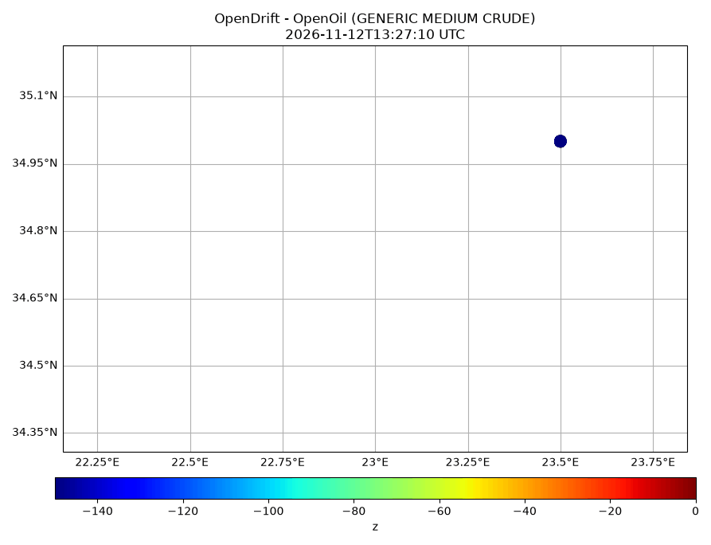
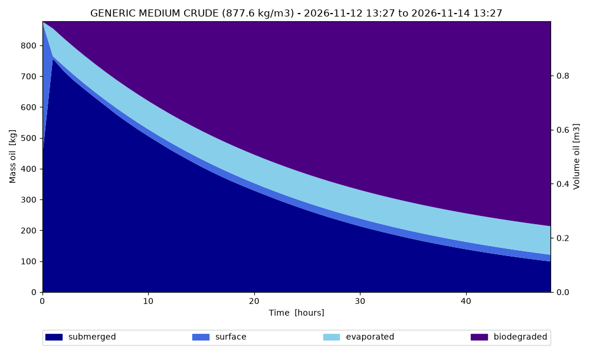
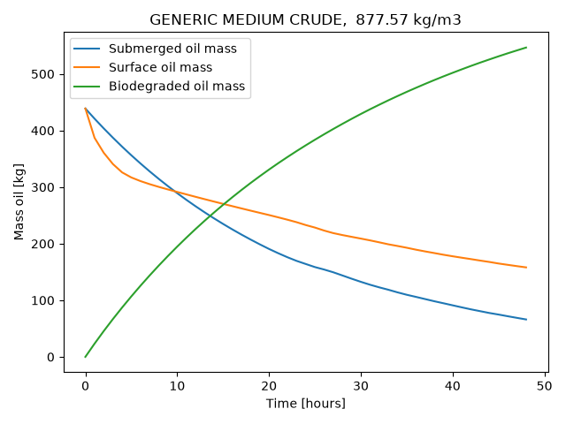
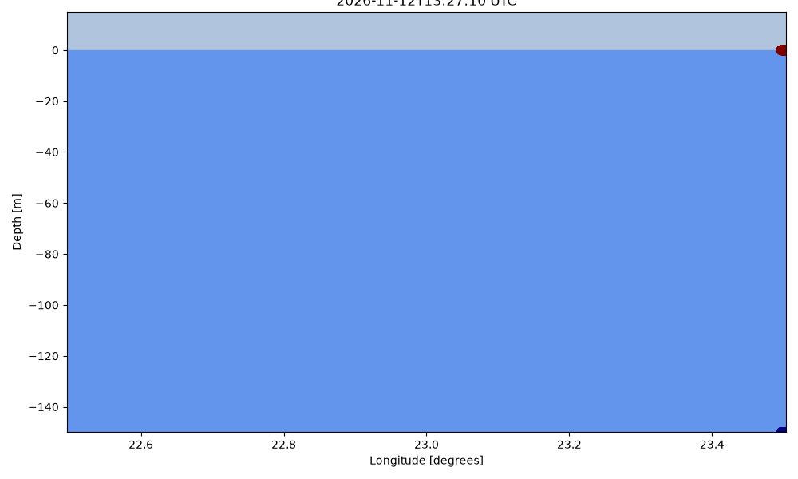

Note
Go to the end to download the full example code.
Biodegradation of oil at depth
WARNING: from next version (1.14.10), loglevel of 0 will give no logging, please change to 10 for DEBUG
13:27:09 DEBUG opendrift.config:168: Adding 18 config items from __init__
13:27:09 DEBUG opendrift.config:178: Overwriting config item readers:max_number_of_fails
13:27:09 DEBUG opendrift.config:168: Adding 6 config items from __init__
13:27:10 INFO opendrift:579: OpenDriftSimulation initialised (version 1.14.11 / v1.14.12-91-g231396a)
13:27:10 DEBUG opendrift.config:168: Adding 20 config items from oceandrift
13:27:10 DEBUG opendrift.config:178: Overwriting config item seed:z
13:27:10 DEBUG opendrift.config:168: Adding 15 config items from openoil
Current from HYCOM and wind from NCEP GFS
o.add_readers_from_list([
'https://tds.hycom.org/thredds/dodsC/FMRC_ESPC-D-V02_uv3z/FMRC_ESPC-D-V02_uv3z_best.ncd',
'https://thredds.ucar.edu/thredds/dodsC/grib/NCEP/GFS/Global_0p25deg/Best'])
o.set_config('environment:constant:ocean_mixed_layer_thickness', 20)
o.set_config('environment:constant:horizontal_diffusivity', 20)
o.set_config('drift', {'current_uncertainty': 0, 'wind_uncertainty': 0})
13:27:10 DEBUG opendrift.readers.reader_lazy:37: Delaying initialisation of LazyReader: https://tds.hycom.org/thredds/dodsC/FMRC_ESPC-D-V02_uv3z/FMRC_ESPC-D-V02_uv3z_best.ncd
13:27:10 DEBUG opendrift.readers.reader_lazy:37: Delaying initialisation of LazyReader: https://thredds.ucar.edu/thredds/dodsC/grib/NCEP/GFS/Global_0p25deg/Best
13:27:10 DEBUG opendrift.models.basemodel.environment:323: Added reader LazyReader: https://tds.hycom.org/thredds/dodsC/FMRC_ESPC-D-V02_uv3z/FMRC_ESPC-D-V02_uv3z_best.ncd
13:27:10 DEBUG opendrift.models.basemodel.environment:323: Added reader LazyReader: https://thredds.ucar.edu/thredds/dodsC/grib/NCEP/GFS/Global_0p25deg/Best
13:27:10 INFO opendrift.config:68: set_config('drift:current_uncertainty', 0)
13:27:10 INFO opendrift.config:68: set_config('drift:wind_uncertainty', 0)
Configuration
o.set_config('drift:vertical_mixing', True)
o.set_config('drift:vertical_mixing', True)
o.set_config('processes:biodegradation', True)
o.set_config('processes:dispersion', False)
o.set_config('biodegradation:method', 'half_time')
Fast decay for droplets, and slow decay for slick
kwargs = {'biodegradation_half_time_slick': 3, # days
'biodegradation_half_time_droplet': 1, # days
'oil_type': 'GENERIC MEDIUM CRUDE', 'm3_per_hour': .5, 'diameter': 8e-5} # small droplets
Seed oil at surface and at 150m depth
time = datetime.today() - timedelta(days=5)
lon = 23.5
lat = 35.0
o.seed_elements(lon=lon, lat=lat, z=0, radius=100, number=3000, time=time, **kwargs)
o.seed_elements(lon=lon, lat=lat, z=-150, radius=100, number=3000, time=time, **kwargs)
13:27:10 INFO opendrift.models.openoil.openoil:1641: Droplet diameter is provided, and will be kept constant during simulation
13:27:10 INFO opendrift.models.openoil.adios.dirjs:86: Querying ADIOS database for oil: GENERIC MEDIUM CRUDE
13:27:10 DEBUG opendrift.models.openoil.adios.oil:76: Parsing Oil: AD04001 / GENERIC MEDIUM CRUDE
13:27:10 INFO opendrift.models.openoil.openoil:1731: Using density 877.5726099999999 and viscosity 4.5431401718650186e-05 of oiltype GENERIC MEDIUM CRUDE
13:27:10 DEBUG opendrift.readers.basereader:185: Variable mapping: ['sea_floor_depth_below_sea_level'] -> ['land_binary_mask'] is not activated
13:27:10 DEBUG opendrift.models.basemodel.environment:323: Added reader constant_reader
13:27:10 INFO opendrift.models.basemodel.environment:204: Adding a global landmask from GSHHG
13:27:10 DEBUG opendrift.readers.basereader.variables:571: Skipping calculation of vector component, since y is not north
13:27:10 DEBUG opendrift.readers.basereader.variables:571: Skipping calculation of vector component, since y is not north
13:27:10 DEBUG opendrift.readers.basereader.variables:571: Skipping calculation of vector component, since y is not north
13:27:10 DEBUG opendrift.readers.basereader.variables:571: Skipping calculation of vector component, since y is not north
13:27:10 DEBUG opendrift.readers.basereader:185: Variable mapping: ['sea_floor_depth_below_sea_level'] -> ['land_binary_mask'] is not activated
13:27:15 DEBUG opendrift.models.basemodel.environment:323: Added reader global_landmask
13:27:15 INFO opendrift.models.basemodel.environment:238: Fallback values will be used for the following variables which have no readers:
13:27:15 INFO opendrift.models.basemodel.environment:241: sea_surface_height: 0.000000
13:27:15 INFO opendrift.models.basemodel.environment:241: upward_sea_water_velocity: 0.000000
13:27:15 INFO opendrift.models.basemodel.environment:241: sea_surface_wave_significant_height: 0.000000
13:27:15 INFO opendrift.models.basemodel.environment:241: sea_surface_wave_stokes_drift_x_velocity: 0.000000
13:27:15 INFO opendrift.models.basemodel.environment:241: sea_surface_wave_stokes_drift_y_velocity: 0.000000
13:27:15 INFO opendrift.models.basemodel.environment:241: sea_surface_wave_period_at_variance_spectral_density_maximum: 0.000000
13:27:15 INFO opendrift.models.basemodel.environment:241: sea_surface_wave_mean_period_from_variance_spectral_density_second_frequency_moment: 0.000000
13:27:15 INFO opendrift.models.basemodel.environment:241: sea_ice_area_fraction: 0.000000
13:27:15 INFO opendrift.models.basemodel.environment:241: sea_ice_x_velocity: 0.000000
13:27:15 INFO opendrift.models.basemodel.environment:241: sea_ice_y_velocity: 0.000000
13:27:15 INFO opendrift.models.basemodel.environment:241: sea_water_temperature: 10.000000
13:27:15 INFO opendrift.models.basemodel.environment:241: sea_water_salinity: 34.000000
13:27:15 INFO opendrift.models.basemodel.environment:241: sea_floor_depth_below_sea_level: 10000.000000
13:27:15 INFO opendrift.models.basemodel.environment:241: ocean_vertical_diffusivity: 0.020000
13:27:15 DEBUG opendrift:165: Changed mode from Mode.Config to Mode.Ready
13:27:15 INFO opendrift.models.openoil.openoil:1641: Droplet diameter is provided, and will be kept constant during simulation
13:27:15 INFO opendrift.models.openoil.adios.dirjs:86: Querying ADIOS database for oil: GENERIC MEDIUM CRUDE
13:27:15 DEBUG opendrift.models.openoil.adios.oil:76: Parsing Oil: AD04001 / GENERIC MEDIUM CRUDE
13:27:15 INFO opendrift.models.openoil.openoil:1731: Using density 877.5726099999999 and viscosity 4.5431401718650186e-05 of oiltype GENERIC MEDIUM CRUDE
Running model
o.run(duration=timedelta(days=2), time_step=3600)
13:27:15 DEBUG opendrift:165: Changed mode from Mode.Ready to Mode.Run
13:27:15 DEBUG opendrift:1893:
------------------------------------------------------
Software and hardware:
OpenDrift version 1.14.11
Platform: Linux, 7.0.0-1017-aws
4.0 GB memory
36 processors (x86_64)
NumPy version 2.5.4
SciPy version 1.18.1
Matplotlib version 3.11.2
NetCDF4 version 1.7.5
Xarray version 2026.9.0
ADIOS (adios_db) version 1.2.5
Copernicusmarine version 2.5.1
Python version 3.14.10 | packaged by conda-forge | (main, Oct 26 2026, 11:35:38) [GCC 15.3.0]
------------------------------------------------------
13:27:15 DEBUG opendrift:1906: No output file is specified, neglecting export_buffer_length
13:27:15 INFO opendrift:1921: Skipping environment variable upward_sea_water_velocity because of condition ['drift:vertical_advection', 'is', False]
13:27:15 INFO opendrift:1932: Storing previous values of element property lon because of condition (('general:coastline_action', 'in', ['stranding', 'previous']), 'or', ('general:seafloor_action', 'in', ['previous']))
13:27:15 INFO opendrift:1932: Storing previous values of element property lat because of condition (('general:coastline_action', 'in', ['stranding', 'previous']), 'or', ('general:seafloor_action', 'in', ['previous']))
13:27:15 DEBUG opendrift:2057: Finalizing environment and preparing readers for simulation coverage ([21.02599253 32.97284402 25.97419057 37.02720938]) and time (2026-11-12 13:27:10.025643 to 2026-11-14 13:27:10.025643)
13:27:15 DEBUG opendrift.models.basemodel.environment:167: Preparing LazyReader: https://tds.hycom.org/thredds/dodsC/FMRC_ESPC-D-V02_uv3z/FMRC_ESPC-D-V02_uv3z_best.ncd for extent [21.02599253 32.97284402 25.97419057 37.02720938]
13:27:15 DEBUG opendrift.models.basemodel.environment:167: Preparing LazyReader: https://thredds.ucar.edu/thredds/dodsC/grib/NCEP/GFS/Global_0p25deg/Best for extent [21.02599253 32.97284402 25.97419057 37.02720938]
13:27:15 DEBUG opendrift.models.basemodel.environment:167: Preparing constant_reader for extent [21.02599253 32.97284402 25.97419057 37.02720938]
13:27:15 DEBUG opendrift.readers.basereader.variables:584: Nothing more to prepare for constant_reader
13:27:15 DEBUG opendrift.models.basemodel.environment:167: Preparing global_landmask for extent [21.02599253 32.97284402 25.97419057 37.02720938]
13:27:15 DEBUG opendrift.readers.basereader.variables:584: Nothing more to prepare for global_landmask
13:27:16 DEBUG opendrift:2154: Initial self.result, size Frozen({'trajectory': 6000, 'time': 49})
13:27:16 INFO opendrift:968: Using existing reader for land_binary_mask to move elements to ocean
13:27:16 DEBUG opendrift.models.basemodel.environment:610: ----------------------------------------
13:27:16 DEBUG opendrift.models.basemodel.environment:611: Variable group ['land_binary_mask']
13:27:16 DEBUG opendrift.models.basemodel.environment:612: ----------------------------------------
13:27:16 DEBUG opendrift.models.basemodel.environment:616: Calling reader global_landmask
13:27:16 DEBUG opendrift.models.basemodel.environment:617: ----------------------------------------
13:27:16 DEBUG opendrift.models.basemodel.environment:637: Data needed for 6000 elements
13:27:16 DEBUG opendrift.readers.basereader.variables:790: Fetching variables from global_landmask covering 6000 elements
13:27:16 DEBUG opendrift.readers.basereader.continuous:37: Fetched env-before
13:27:16 DEBUG opendrift.readers.basereader.variables:668: Checking land_binary_mask for invalid values
13:27:16 DEBUG opendrift.readers.basereader.variables:826: Reader projection is latlon - rotation of vectors is not needed.
13:27:16 DEBUG opendrift.models.basemodel.environment:773: Obtained data for all elements.
13:27:16 DEBUG opendrift.models.basemodel.environment:786: ---------------------------------------
13:27:16 DEBUG opendrift.models.basemodel.environment:787: Finished processing all variable groups
13:27:16 DEBUG opendrift.models.basemodel.environment:909: ------------ SUMMARY -------------
13:27:16 DEBUG opendrift.models.basemodel.environment:911: land_binary_mask: 0 (min) 0 (max)
13:27:16 DEBUG opendrift.models.basemodel.environment:913: ---------------------------------
13:27:16 INFO opendrift:1000: All points are in ocean
13:27:16 INFO opendrift.models.openoil.openoil:697: Oil-water surface tension is 0.031369 Nm
13:27:16 INFO opendrift.models.openoil.openoil:710: Max water fraction not available for GENERIC MEDIUM CRUDE, using default
13:27:16 DEBUG opendrift:925: to be seeded: 6000, already seeded 0
13:27:16 DEBUG opendrift:947: Released 6000 new elements.
13:27:16 DEBUG opendrift:2247: ======================================================================
13:27:16 INFO opendrift:2248: 2026-11-12 13:27:10.025643 - step 1 of 48 - 6000 active elements (0 deactivated)
13:27:16 DEBUG opendrift:2254: 0 elements scheduled.
13:27:16 DEBUG opendrift:2256: ======================================================================
13:27:16 DEBUG opendrift:2267: 34.99662780761719 <- latitude -> 35.00342559814453
13:27:16 DEBUG opendrift:2267: 23.4965763092041 <- longitude -> 23.50360679626465
13:27:16 DEBUG opendrift:2267: -150.0 <- z -> 0.0
13:27:16 DEBUG opendrift:2268: ---------------------------------
13:27:16 DEBUG opendrift.models.basemodel.environment:585: Variables not covered by any reader: ['x_sea_water_velocity', 'y_wind', 'sea_floor_depth_below_sea_level', 'sea_water_temperature', 'sea_surface_height', 'sea_water_salinity', 'x_wind', 'y_sea_water_velocity']
13:27:16 DEBUG opendrift.readers.reader_lazy:56: Initialising: LazyReader: https://tds.hycom.org/thredds/dodsC/FMRC_ESPC-D-V02_uv3z/FMRC_ESPC-D-V02_uv3z_best.ncd
13:27:16 DEBUG opendrift.readers:269: Testing reader <module 'opendrift.readers.reader_netCDF_CF_generic' from '/root/project/opendrift/readers/reader_netCDF_CF_generic.py'>
13:27:16 INFO opendrift.readers:67: Opening file with xr.open_dataset
13:27:16 DEBUG findlibs:303: about to search for libeccodes.so/eccodeslib in <function _find_in_package at 0x77f4dd645bc0>
13:27:16 DEBUG findlibs:303: about to search for libeccodes.so/eccodeslib in <function _find_in_python at 0x77f4dd645d20>
13:27:16 DEBUG findlibs:305: found libeccodes.so/eccodeslib in <function _find_in_python at 0x77f4dd645d20>
13:27:16 DEBUG gribapi.bindings:98: eccodes lib search: findlibs returned /opt/conda/envs/opendrift/lib/libeccodes.so
13:27:16 WARNING opendrift.readers:75: Removing variables that cannot be CF decoded: ['tau']
13:27:16 DEBUG opendrift.readers.reader_netCDF_CF_generic:131: Finding coordinate variables.
13:27:16 INFO opendrift.readers.reader_netCDF_CF_generic:307: Grid coordinates are detected, but proj4 string not given: assuming latlong
13:27:16 INFO opendrift.readers.reader_netCDF_CF_generic:340: Detected dimensions: {'z': 'depth', 'y': 'lat', 'x': 'lon', 'time': 'time'}
13:27:16 DEBUG opendrift.readers.basereader.variables:643: Setting buffer size 9 for reader https://tds.hycom.org/thredds/dodsC/FMRC_ESPC-D-V02_uv3z/FMRC_ESPC-D-V02_uv3z_best.ncd, assuming a maximum average speed of 5 m/s and time span of 3:00:00
13:27:16 INFO opendrift.readers.basereader:175: Variable y_sea_water_velocity will be rotated from northward_sea_water_velocity
13:27:16 INFO opendrift.readers.basereader:175: Variable x_sea_water_velocity will be rotated from eastward_sea_water_velocity
13:27:16 DEBUG opendrift.readers.basereader:185: Variable mapping: ['sea_floor_depth_below_sea_level'] -> ['land_binary_mask'] is not activated
13:27:16 DEBUG opendrift.readers.basereader.variables:598: Adding variable mapping: ['x_sea_water_velocity', 'y_sea_water_velocity'] -> sea_water_speed
13:27:16 DEBUG opendrift.readers.basereader.structured:151: Clearing cache for reader https://tds.hycom.org/thredds/dodsC/FMRC_ESPC-D-V02_uv3z/FMRC_ESPC-D-V02_uv3z_best.ncd before starting new simulation
13:27:16 DEBUG opendrift.readers.basereader.variables:643: Setting buffer size 4 for reader https://tds.hycom.org/thredds/dodsC/FMRC_ESPC-D-V02_uv3z/FMRC_ESPC-D-V02_uv3z_best.ncd, assuming a maximum average speed of 1.3 m/s and time span of 3:00:00
13:27:16 DEBUG opendrift.readers.basereader.variables:584: Nothing more to prepare for https://tds.hycom.org/thredds/dodsC/FMRC_ESPC-D-V02_uv3z/FMRC_ESPC-D-V02_uv3z_best.ncd
13:27:16 DEBUG opendrift.readers.reader_lazy:71: Reader initialised: https://tds.hycom.org/thredds/dodsC/FMRC_ESPC-D-V02_uv3z/FMRC_ESPC-D-V02_uv3z_best.ncd
13:27:16 DEBUG opendrift.readers.basereader.variables:643: Setting buffer size 4 for reader https://tds.hycom.org/thredds/dodsC/FMRC_ESPC-D-V02_uv3z/FMRC_ESPC-D-V02_uv3z_best.ncd, assuming a maximum average speed of 1.3 m/s and time span of 3:00:00
13:27:16 DEBUG opendrift.readers.reader_lazy:56: Initialising: LazyReader: https://thredds.ucar.edu/thredds/dodsC/grib/NCEP/GFS/Global_0p25deg/Best
13:27:16 DEBUG opendrift.readers:269: Testing reader <module 'opendrift.readers.reader_netCDF_CF_generic' from '/root/project/opendrift/readers/reader_netCDF_CF_generic.py'>
13:27:16 INFO opendrift.readers:67: Opening file with xr.open_dataset
13:27:17 DEBUG opendrift.readers:128: Selecting GRIB variable u-component_of_wind_height_above_ground at 10m height and adding standard_name eastward_wind
13:27:17 DEBUG opendrift.readers:128: Selecting GRIB variable v-component_of_wind_height_above_ground at 10m height and adding standard_name northward_wind
13:27:17 DEBUG opendrift.readers.reader_netCDF_CF_generic:131: Finding coordinate variables.
13:27:17 DEBUG opendrift.readers.reader_netCDF_CF_generic:146: Parsing CF grid mapping dictionary: {'grid_mapping_name': 'latitude_longitude', 'earth_radius': np.float64(6371229.0), '_CoordinateTransformType': 'Projection', '_CoordinateAxisTypes': 'Lat Lon'}
13:27:17 DEBUG pyproj:40: PROJ_ERROR: proj_create: several objects matching this name: Krovak (Greenwich), Equal Earth Greenwich, Laborde Grid (Greenwich), Modified Krovak (Greenwich), Krovak East North (Greenwich), Modified Krovak East North (Greenwich), ...
13:27:17 DEBUG opendrift.readers.reader_netCDF_CF_generic:270: Lon and lat are 1D arrays - using as projection coordinates
13:27:17 INFO opendrift.readers.reader_netCDF_CF_generic:340: Detected dimensions: {'time': ['time', 'time1', 'time2', 'time3'], 'x': 'lon', 'y': 'lat'}
13:27:17 DEBUG opendrift.readers.reader_netCDF_CF_generic:376: Skipped variables without standard_name: ['time2_bounds', 'time3_bounds', 'pressure_difference_layer_bounds', 'depth_below_surface_layer_bounds', 'height_above_ground_layer_bounds', 'height_above_ground_layer1_bounds', 'pressure_difference_layer1_bounds', 'pressure_difference_layer2_bounds', 'sigma_layer_bounds', 'Total_ozone_entire_atmosphere_single_layer', 'Ozone_Mixing_Ratio_isobaric', 'Total_cloud_cover_entire_atmosphere_Mixed_intervals_Average', 'Low_cloud_cover_low_cloud_Mixed_intervals_Average', 'Temperature_low_cloud_top_Mixed_intervals_Average', 'Temperature_high_cloud_top_Mixed_intervals_Average', 'Temperature_middle_cloud_top_Mixed_intervals_Average', 'Surface_Lifted_Index_surface', 'Pressure_convective_cloud_top', 'Pressure_convective_cloud_bottom', 'Vertical_Speed_Shear_tropopause', 'Vertical_Speed_Shear_potential_vorticity_surface', 'Ventilation_Rate_planetary_boundary', 'MSLP_Eta_model_reduction_msl', 'Pressure_of_level_from_which_parcel_was_lifted_pressure_difference_layer', 'Liquid_Volumetric_Soil_Moisture_non_Frozen_depth_below_surface_layer', 'Wind_speed_gust_surface', 'Precipitation_rate_surface_Mixed_intervals_Average', 'Categorical_Rain_surface', 'Potential_Evaporation_Rate_surface', 'Volumetric_Soil_Moisture_Content_depth_below_surface_layer', 'Albedo_surface_Mixed_intervals_Average', 'Latent_heat_net_flux_surface_Mixed_intervals_Average', 'Sensible_heat_net_flux_surface_Mixed_intervals_Average', 'Land_cover_0__sea_1__land_surface', 'Ice_cover_surface', 'Momentum_flux_u-component_surface_Mixed_intervals_Average', 'Pressure_surface', 'Soil_type_surface', 'Specific_humidity_pressure_difference_layer', 'Temperature_surface', 'Temperature_pressure_difference_layer', 'Visibility_surface', 'Ice_thickness_surface', 'Relative_humidity_sigma_layer', 'Relative_humidity_pressure_difference_layer', 'Surface_roughness_surface', 'Haines_index_surface', 'Soil_temperature_depth_below_surface_layer', 'u-component_of_wind_pressure_difference_layer', 'Momentum_flux_v-component_surface_Mixed_intervals_Average', 'Categorical_Rain_surface_Mixed_intervals_Average', 'v-component_of_wind_pressure_difference_layer', 'Vegetation_surface', 'Geopotential_height_surface', 'Convective_available_potential_energy_surface', 'Convective_available_potential_energy_pressure_difference_layer', 'Convective_inhibition_surface', 'Convective_inhibition_pressure_difference_layer', 'Precipitation_rate_surface', 'Ice_temperature_surface', 'Storm_relative_helicity_height_above_ground_layer', 'Snow_depth_surface', 'Water_equivalent_of_accumulated_snow_depth_surface', 'Ground_Heat_Flux_surface_Mixed_intervals_Average', 'Total_cloud_cover_convective_cloud', 'Sunshine_Duration_surface', 'Best_4_layer_Lifted_Index_surface', 'Water_runoff_surface_Mixed_intervals_Accumulation', 'Relative_humidity_highest_tropospheric_freezing', 'Relative_humidity_entire_atmosphere_single_layer', 'Categorical_Freezing_Rain_surface', 'Wilting_Point_surface', 'Total_precipitation_surface_Mixed_intervals_Accumulation', 'Convective_precipitation_surface_Mixed_intervals_Accumulation', 'Pressure_high_cloud_bottom_Mixed_intervals_Average', 'Pressure_middle_cloud_top_Mixed_intervals_Average', 'Pressure_middle_cloud_bottom_Mixed_intervals_Average', 'Pressure_high_cloud_top_Mixed_intervals_Average', 'Pressure_low_cloud_bottom_Mixed_intervals_Average', 'Pressure_low_cloud_top_Mixed_intervals_Average', 'Categorical_Freezing_Rain_surface_Mixed_intervals_Average', 'Convective_precipitation_rate_surface', 'Per_cent_frozen_precipitation_surface', 'Specific_humidity_isobaric', 'Temperature_isobaric', 'Relative_humidity_isobaric', 'Relative_humidity_zeroDegC_isotherm', 'Total_cloud_cover_isobaric', 'u-component_of_wind_isobaric', 'Total_cloud_cover_boundary_layer_cloud_Mixed_intervals_Average', 'Downward_Shortwave_Radiation_Flux_surface_Mixed_intervals_Average', 'Cloud_Work_Function_entire_atmosphere_single_layer_Mixed_intervals_Average', 'v-component_of_wind_isobaric', 'Maximum_temperature_height_above_ground_Mixed_intervals_Maximum', 'Geopotential_height_isobaric', 'Geopotential_height_zeroDegC_isotherm', 'U-Component_Storm_Motion_height_above_ground_layer', 'u-component_of_wind_planetary_boundary', 'Categorical_Ice_Pellets_surface', 'Vertical_velocity_pressure_isobaric', 'Vertical_velocity_geometric_isobaric', 'Absolute_vorticity_isobaric', 'Pressure_reduced_to_MSL_msl', 'Categorical_Ice_Pellets_surface_Mixed_intervals_Average', 'Meridional_Flux_of_Gravity_Wave_Stress_surface_Mixed_intervals_Average', 'Downward_Longwave_Radiation_Flux_surface_Mixed_intervals_Average', 'Cloud_mixing_ratio_isobaric', 'Ice_water_mixing_ratio_isobaric', 'Rain_mixing_ratio_isobaric', 'Snow_mixing_ratio_isobaric', 'Graupel_snow_pellets_isobaric', 'Pressure_maximum_wind', 'Temperature_maximum_wind', 'Temperature_altitude_above_msl', 'u-component_of_wind_altitude_above_msl', 'u-component_of_wind_maximum_wind', 'ICAO_Standard_Atmosphere_Reference_Height_maximum_wind', 'Upward_Shortwave_Radiation_Flux_atmosphere_top_Mixed_intervals_Average', 'Upward_Shortwave_Radiation_Flux_surface_Mixed_intervals_Average', 'v-component_of_wind_altitude_above_msl', 'v-component_of_wind_maximum_wind', 'Low_cloud_cover_low_cloud', 'Apparent_temperature_height_above_ground', 'Geopotential_height_maximum_wind', 'Minimum_temperature_height_above_ground_Mixed_intervals_Minimum', 'Ice_growth_rate_altitude_above_msl', 'V-Component_Storm_Motion_height_above_ground_layer', 'Field_Capacity_surface', 'v-component_of_wind_planetary_boundary', 'Precipitable_water_entire_atmosphere_single_layer', 'Categorical_Snow_surface', 'Reflectivity_hybrid', 'Reflectivity_height_above_ground', 'Pressure_tropopause', 'Pressure_height_above_ground', 'Specific_humidity_height_above_ground', 'Temperature_height_above_ground', 'Temperature_tropopause', 'Relative_humidity_height_above_ground', 'u-component_of_wind_tropopause', 'ICAO_Standard_Atmosphere_Reference_Height_tropopause', 'Categorical_Snow_surface_Mixed_intervals_Average', 'Zonal_Flux_of_Gravity_Wave_Stress_surface_Mixed_intervals_Average', 'Upward_Longwave_Radiation_Flux_surface_Mixed_intervals_Average', 'Upward_Longwave_Radiation_Flux_atmosphere_top_Mixed_intervals_Average', 'v-component_of_wind_tropopause', 'Geopotential_height_tropopause', 'Dewpoint_temperature_height_above_ground', 'Temperature_sigma', 'Relative_humidity_sigma', 'Potential_temperature_sigma', 'u-component_of_wind_sigma', 'v-component_of_wind_sigma', 'Medium_cloud_cover_middle_cloud', 'Cloud_mixing_ratio_hybrid', 'Planetary_Boundary_Layer_Height_surface', 'Ice_water_mixing_ratio_hybrid', 'Plant_Canopy_Surface_Water_surface', 'Rain_mixing_ratio_hybrid', 'Vertical_velocity_pressure_sigma', 'Snow_mixing_ratio_hybrid', 'Composite_reflectivity_entire_atmosphere', 'Convective_Precipitation_Rate_surface_Mixed_intervals_Average', 'Total_cloud_cover_entire_atmosphere', 'High_cloud_cover_high_cloud', 'Geopotential_height_highest_tropospheric_freezing', 'Geopotential_height_cloud_ceiling', 'Frictional_Velocity_surface', 'Graupel_snow_pellets_hybrid', 'High_cloud_cover_high_cloud_Mixed_intervals_Average', 'Cloud_water_entire_atmosphere_single_layer', 'Pressure_potential_vorticity_surface', 'Temperature_potential_vorticity_surface', 'u-component_of_wind_potential_vorticity_surface', 'v-component_of_wind_potential_vorticity_surface', 'Geopotential_height_potential_vorticity_surface', 'Medium_cloud_cover_middle_cloud_Mixed_intervals_Average']
13:27:17 DEBUG opendrift.readers.reader_netCDF_CF_generic:396: Several time dimensions detected: ['time', 'time1', 'time2', 'time3']: Using single time dimension found in detected variables: ['time']
13:27:17 DEBUG opendrift.readers.basereader.variables:571: Skipping calculation of vector component, since y is not north
13:27:17 DEBUG opendrift.readers.basereader.variables:571: Skipping calculation of vector component, since y is not north
13:27:17 DEBUG opendrift.readers.basereader.variables:571: Skipping calculation of vector component, since y is not north
13:27:17 DEBUG opendrift.readers.basereader.variables:571: Skipping calculation of vector component, since y is not north
13:27:17 DEBUG opendrift.readers.basereader.variables:643: Setting buffer size 4 for reader https://thredds.ucar.edu/thredds/dodsC/grib/NCEP/GFS/Global_0p25deg/Best, assuming a maximum average speed of 5 m/s and time span of 3:00:00
13:27:17 INFO opendrift.readers.basereader:175: Variable x_wind will be rotated from eastward_wind
13:27:17 INFO opendrift.readers.basereader:175: Variable y_wind will be rotated from northward_wind
13:27:17 DEBUG opendrift.readers.basereader:185: Variable mapping: ['sea_floor_depth_below_sea_level'] -> ['land_binary_mask'] is not activated
13:27:17 DEBUG opendrift.readers.basereader.variables:598: Adding variable mapping: ['x_wind', 'y_wind'] -> wind_speed
13:27:17 DEBUG opendrift.readers.basereader.structured:151: Clearing cache for reader https://thredds.ucar.edu/thredds/dodsC/grib/NCEP/GFS/Global_0p25deg/Best before starting new simulation
13:27:17 DEBUG opendrift.readers.basereader.variables:643: Setting buffer size 3 for reader https://thredds.ucar.edu/thredds/dodsC/grib/NCEP/GFS/Global_0p25deg/Best, assuming a maximum average speed of 1.3 m/s and time span of 3:00:00
13:27:17 DEBUG opendrift.readers.basereader.variables:584: Nothing more to prepare for https://thredds.ucar.edu/thredds/dodsC/grib/NCEP/GFS/Global_0p25deg/Best
13:27:17 DEBUG opendrift.readers.reader_lazy:71: Reader initialised: https://thredds.ucar.edu/thredds/dodsC/grib/NCEP/GFS/Global_0p25deg/Best
13:27:17 DEBUG opendrift.readers.basereader.variables:643: Setting buffer size 3 for reader https://thredds.ucar.edu/thredds/dodsC/grib/NCEP/GFS/Global_0p25deg/Best, assuming a maximum average speed of 1.3 m/s and time span of 3:00:00
13:27:17 DEBUG opendrift.models.basemodel.environment:610: ----------------------------------------
13:27:17 DEBUG opendrift.models.basemodel.environment:611: Variable group ['horizontal_diffusivity', 'ocean_mixed_layer_thickness']
13:27:17 DEBUG opendrift.models.basemodel.environment:612: ----------------------------------------
13:27:17 DEBUG opendrift.models.basemodel.environment:616: Calling reader constant_reader
13:27:17 DEBUG opendrift.models.basemodel.environment:617: ----------------------------------------
13:27:17 DEBUG opendrift.models.basemodel.environment:637: Data needed for 6000 elements
13:27:17 DEBUG opendrift.readers.basereader.variables:790: Fetching variables from constant_reader covering 6000 elements
13:27:17 DEBUG opendrift.readers.basereader.continuous:37: Fetched env-before
13:27:17 DEBUG opendrift.readers.basereader.variables:826: Reader projection is latlon - rotation of vectors is not needed.
13:27:17 DEBUG opendrift.models.basemodel.environment:773: Obtained data for all elements.
13:27:17 DEBUG opendrift.models.basemodel.environment:610: ----------------------------------------
13:27:17 DEBUG opendrift.models.basemodel.environment:611: Variable group ['land_binary_mask']
13:27:17 DEBUG opendrift.models.basemodel.environment:612: ----------------------------------------
13:27:17 DEBUG opendrift.models.basemodel.environment:616: Calling reader global_landmask
13:27:17 DEBUG opendrift.models.basemodel.environment:617: ----------------------------------------
13:27:17 DEBUG opendrift.models.basemodel.environment:637: Data needed for 6000 elements
13:27:17 DEBUG opendrift.readers.basereader.variables:790: Fetching variables from global_landmask covering 6000 elements
13:27:17 DEBUG opendrift.readers.basereader.continuous:37: Fetched env-before
13:27:17 DEBUG opendrift.readers.basereader.variables:668: Checking land_binary_mask for invalid values
13:27:17 DEBUG opendrift.readers.basereader.variables:826: Reader projection is latlon - rotation of vectors is not needed.
13:27:17 DEBUG opendrift.models.basemodel.environment:773: Obtained data for all elements.
13:27:17 DEBUG opendrift.models.basemodel.environment:610: ----------------------------------------
13:27:17 DEBUG opendrift.models.basemodel.environment:611: Variable group ['y_sea_water_velocity', 'x_sea_water_velocity']
13:27:17 DEBUG opendrift.models.basemodel.environment:612: ----------------------------------------
13:27:17 DEBUG opendrift.models.basemodel.environment:616: Calling reader https://tds.hycom.org/thredds/dodsC/FMRC_ESPC-D-V02_uv3z/FMRC_ESPC-D-V02_uv3z_best.ncd
13:27:17 DEBUG opendrift.models.basemodel.environment:617: ----------------------------------------
13:27:17 DEBUG opendrift.models.basemodel.environment:637: Data needed for 6000 elements
13:27:17 DEBUG opendrift.readers.basereader.variables:790: Fetching variables from https://tds.hycom.org/thredds/dodsC/FMRC_ESPC-D-V02_uv3z/FMRC_ESPC-D-V02_uv3z_best.ncd covering 6000 elements
13:27:17 DEBUG opendrift.readers.basereader.structured:211: Shifting coordinates to 0-360
13:27:17 DEBUG opendrift.readers.basereader.structured:220: Reader time:
2026-11-12 12:00:00 (before)
2026-11-12 15:00:00 (after)
13:27:17 DEBUG opendrift.readers.reader_netCDF_CF_generic:475: Using northward_sea_water_velocity to retrieve y_sea_water_velocity
13:27:17 DEBUG opendrift.readers.reader_netCDF_CF_generic:475: Using eastward_sea_water_velocity to retrieve x_sea_water_velocity
13:27:17 DEBUG opendrift.readers.reader_netCDF_CF_generic:597: North is up, no rotation necessary
13:27:17 DEBUG opendrift.readers.basereader.variables:668: Checking y_sea_water_velocity for invalid values
13:27:17 DEBUG opendrift.readers.basereader.variables:668: Checking x_sea_water_velocity for invalid values
13:27:17 DEBUG opendrift.readers.basereader.structured:290: Fetched env-block (size 9x9x23) for time before (2026-11-12 12:00:00)
13:27:17 DEBUG opendrift.readers.reader_netCDF_CF_generic:475: Using northward_sea_water_velocity to retrieve y_sea_water_velocity
13:27:17 DEBUG opendrift.readers.reader_netCDF_CF_generic:475: Using eastward_sea_water_velocity to retrieve x_sea_water_velocity
13:27:18 DEBUG opendrift.readers.reader_netCDF_CF_generic:597: North is up, no rotation necessary
13:27:18 DEBUG opendrift.readers.basereader.variables:668: Checking y_sea_water_velocity for invalid values
13:27:18 DEBUG opendrift.readers.basereader.variables:668: Checking x_sea_water_velocity for invalid values
13:27:18 DEBUG opendrift.readers.basereader.structured:313: Fetched env-block (size 9x9x23) for time after (2026-11-12 15:00:00)
13:27:18 DEBUG opendrift.readers.basereader.structured:334: Interpolating before (2026-11-12 12:00:00) in space (linearNDFast)
13:27:18 DEBUG opendrift.readers.interpolation.structured:97: Initialising interpolator.
13:27:18 DEBUG opendrift.readers.basereader.structured:340: Interpolating after (2026-11-12 15:00:00) in space (linearNDFast)
13:27:18 DEBUG opendrift.readers.interpolation.structured:97: Initialising interpolator.
13:27:18 DEBUG opendrift.readers.basereader.structured:355: Interpolating before (2026-11-12 12:00:00, weight 0.52) and
after (2026-11-12 15:00:00, weight 0.48) in time
13:27:18 DEBUG opendrift.readers.basereader.variables:826: Reader projection is latlon - rotation of vectors is not needed.
13:27:18 DEBUG opendrift.models.basemodel.environment:773: Obtained data for all elements.
13:27:18 DEBUG opendrift.models.basemodel.environment:610: ----------------------------------------
13:27:18 DEBUG opendrift.models.basemodel.environment:611: Variable group ['x_wind', 'y_wind']
13:27:18 DEBUG opendrift.models.basemodel.environment:612: ----------------------------------------
13:27:18 DEBUG opendrift.models.basemodel.environment:616: Calling reader https://thredds.ucar.edu/thredds/dodsC/grib/NCEP/GFS/Global_0p25deg/Best
13:27:18 DEBUG opendrift.models.basemodel.environment:617: ----------------------------------------
13:27:18 DEBUG opendrift.models.basemodel.environment:637: Data needed for 6000 elements
13:27:18 DEBUG opendrift.readers.basereader.variables:790: Fetching variables from https://thredds.ucar.edu/thredds/dodsC/grib/NCEP/GFS/Global_0p25deg/Best covering 6000 elements
13:27:18 DEBUG opendrift.readers.basereader.structured:211: Shifting coordinates to 0-360
13:27:18 DEBUG opendrift.readers.basereader.structured:220: Reader time:
2026-11-12 12:00:00 (before)
2026-11-12 13:30:00 (after)
13:27:18 DEBUG opendrift.readers.reader_netCDF_CF_generic:475: Using eastward_wind to retrieve x_wind
13:27:18 DEBUG opendrift.readers.reader_netCDF_CF_generic:475: Using northward_wind to retrieve y_wind
13:27:18 DEBUG opendrift.readers.reader_netCDF_CF_generic:597: North is up, no rotation necessary
13:27:18 DEBUG opendrift.readers.basereader.variables:668: Checking x_wind for invalid values
13:27:18 DEBUG opendrift.readers.basereader.variables:668: Checking y_wind for invalid values
13:27:18 DEBUG opendrift.readers.basereader.structured:290: Fetched env-block (size 8x7x1) for time before (2026-11-12 12:00:00)
13:27:18 DEBUG opendrift.readers.reader_netCDF_CF_generic:475: Using eastward_wind to retrieve x_wind
13:27:18 DEBUG opendrift.readers.reader_netCDF_CF_generic:475: Using northward_wind to retrieve y_wind
13:27:18 DEBUG opendrift.readers.reader_netCDF_CF_generic:597: North is up, no rotation necessary
13:27:18 DEBUG opendrift.readers.basereader.variables:668: Checking x_wind for invalid values
13:27:18 DEBUG opendrift.readers.basereader.variables:668: Checking y_wind for invalid values
13:27:18 DEBUG opendrift.readers.basereader.structured:313: Fetched env-block (size 8x7x1) for time after (2026-11-12 13:30:00)
13:27:18 DEBUG opendrift.readers.basereader.structured:334: Interpolating before (2026-11-12 12:00:00) in space (linearNDFast)
13:27:18 DEBUG opendrift.readers.interpolation.structured:97: Initialising interpolator.
13:27:18 DEBUG opendrift.readers.basereader.structured:340: Interpolating after (2026-11-12 13:30:00) in space (linearNDFast)
13:27:18 DEBUG opendrift.readers.interpolation.structured:97: Initialising interpolator.
13:27:18 DEBUG opendrift.readers.basereader.structured:355: Interpolating before (2026-11-12 12:00:00, weight 0.03) and
after (2026-11-12 13:30:00, weight 0.97) in time
13:27:18 DEBUG opendrift.readers.basereader.variables:826: Reader projection is latlon - rotation of vectors is not needed.
13:27:18 DEBUG opendrift.models.basemodel.environment:773: Obtained data for all elements.
13:27:18 DEBUG opendrift.models.basemodel.environment:786: ---------------------------------------
13:27:18 DEBUG opendrift.models.basemodel.environment:787: Finished processing all variable groups
13:27:18 DEBUG opendrift.models.basemodel.environment:807: Creating empty dictionary for profiles not profided by any reader: ['sea_water_temperature', 'sea_water_salinity', 'ocean_vertical_diffusivity']
13:27:18 DEBUG opendrift.models.basemodel.environment:812: Using fallback value 10 for sea_water_temperature for all profiles
13:27:18 DEBUG opendrift.models.basemodel.environment:812: Using fallback value 34 for sea_water_salinity for all profiles
13:27:18 DEBUG opendrift.models.basemodel.environment:812: Using fallback value 0.02 for ocean_vertical_diffusivity for all profiles
13:27:18 DEBUG opendrift.models.basemodel.environment:909: ------------ SUMMARY -------------
13:27:18 DEBUG opendrift.models.basemodel.environment:911: x_sea_water_velocity: -0.471386 (min) -0.370115 (max)
13:27:18 DEBUG opendrift.models.basemodel.environment:911: y_sea_water_velocity: 0.00220753 (min) 0.0615538 (max)
13:27:18 DEBUG opendrift.models.basemodel.environment:911: x_wind: -5.73422 (min) -5.66288 (max)
13:27:18 DEBUG opendrift.models.basemodel.environment:911: y_wind: 5.37148 (min) 5.42663 (max)
13:27:18 DEBUG opendrift.models.basemodel.environment:911: sea_surface_height: 0 (min) 0 (max)
13:27:18 DEBUG opendrift.models.basemodel.environment:911: sea_surface_wave_significant_height: 0 (min) 0 (max)
13:27:18 DEBUG opendrift.models.basemodel.environment:911: sea_surface_wave_stokes_drift_x_velocity: 0 (min) 0 (max)
13:27:18 DEBUG opendrift.models.basemodel.environment:911: sea_surface_wave_stokes_drift_y_velocity: 0 (min) 0 (max)
13:27:18 DEBUG opendrift.models.basemodel.environment:911: sea_surface_wave_period_at_variance_spectral_density_maximum: 0 (min) 0 (max)
13:27:18 DEBUG opendrift.models.basemodel.environment:911: sea_surface_wave_mean_period_from_variance_spectral_density_second_frequency_moment: 0 (min) 0 (max)
13:27:18 DEBUG opendrift.models.basemodel.environment:911: sea_ice_area_fraction: 0 (min) 0 (max)
13:27:18 DEBUG opendrift.models.basemodel.environment:911: sea_ice_x_velocity: 0 (min) 0 (max)
13:27:18 DEBUG opendrift.models.basemodel.environment:911: sea_ice_y_velocity: 0 (min) 0 (max)
13:27:18 DEBUG opendrift.models.basemodel.environment:911: sea_water_temperature: 10 (min) 10 (max)
13:27:18 DEBUG opendrift.models.basemodel.environment:911: sea_water_salinity: 34 (min) 34 (max)
13:27:18 DEBUG opendrift.models.basemodel.environment:911: sea_floor_depth_below_sea_level: 10000 (min) 10000 (max)
13:27:18 DEBUG opendrift.models.basemodel.environment:911: horizontal_diffusivity: 20 (min) 20 (max)
13:27:18 DEBUG opendrift.models.basemodel.environment:911: ocean_vertical_diffusivity: 0.02 (min) 0.02 (max)
13:27:18 DEBUG opendrift.models.basemodel.environment:911: land_binary_mask: 0 (min) 0 (max)
13:27:18 DEBUG opendrift.models.basemodel.environment:911: ocean_mixed_layer_thickness: 20 (min) 20 (max)
13:27:18 DEBUG opendrift.models.basemodel.environment:913: ---------------------------------
13:27:18 DEBUG opendrift.models.physics_methods:928: Calculating Hs from wind, min: 1.504596, mean: 1.516318, max: 1.531816
13:27:18 DEBUG opendrift.models.physics_methods:995: Calculating wave period Tm02 from wind
13:27:18 DEBUG opendrift.models.physics_methods:1005: min: 6.682508, mean: 6.708485, max: 6.742686
13:27:18 DEBUG opendrift.models.physics_methods:945: Calculating wave period from wind, min: 6.682508, mean: 6.708485, max: 6.742686
13:27:18 DEBUG opendrift:710: No elements hit coastline.
13:27:18 DEBUG opendrift:1821: No elements to deactivate
13:27:18 DEBUG opendrift:2305: Calling OpenOil.update()
13:27:18 DEBUG opendrift.models.openoil.openoil:721: NOAA oil weathering
13:27:18 DEBUG opendrift.models.openoil.openoil:826: Calculating evaporation - NOAA
13:27:18 DEBUG opendrift.models.openoil.openoil:859: Calculating emulsification - NOAA
13:27:18 DEBUG opendrift.models.openoil.openoil:871: Emulsification not yet started
13:27:18 DEBUG opendrift.models.openoil.openoil:562: Calculating: biodegradation (half_time)
13:27:18 DEBUG opendrift.models.physics_methods:987: Using mean period Tm02 as wave period
13:27:18 DEBUG opendrift.models.physics_methods:1005: min: 6.682508, mean: 6.708486, max: 6.742686
13:27:18 DEBUG opendrift.models.openoil.openoil:1130: Generating wave breaking droplet size spectrum
13:27:18 DEBUG opendrift.models.openoil.openoil:1157: Droplet distribution median diameter dV_50: 0.000827, dN_50: 0.000065
13:27:18 DEBUG opendrift.models.oceandrift:490: Using diffusivity from windspeed_Large1994 since model diffusivities not available
13:27:18 DEBUG opendrift.models.oceandrift:504: Diffusivities are in range 0.0 to 0.022471774321740478
13:27:18 DEBUG opendrift.models.oceandrift:523: TSprofiles deactivated for vertical mixing
13:27:18 DEBUG opendrift.models.oceandrift:537: Vertical mixing module:environment
13:27:18 DEBUG opendrift.models.oceandrift:540: Turbulent diffusion with random walk scheme using 60 fast time steps of dt=60.0s
13:27:18 DEBUG opendrift.models.openoil.openoil:1045: Entraining 253 of 3000 surface elements
13:27:18 DEBUG opendrift.models.openoil.openoil:1045: Entraining 244 of 2748 surface elements
13:27:18 DEBUG opendrift.models.openoil.openoil:1045: Entraining 186 of 2508 surface elements
13:27:18 DEBUG opendrift.models.openoil.openoil:1045: Entraining 194 of 2327 surface elements
13:27:18 DEBUG opendrift.models.openoil.openoil:1045: Entraining 170 of 2137 surface elements
13:27:18 DEBUG opendrift.models.openoil.openoil:1045: Entraining 162 of 1976 surface elements
13:27:18 DEBUG opendrift.models.openoil.openoil:1045: Entraining 150 of 1817 surface elements
13:27:18 DEBUG opendrift.models.openoil.openoil:1045: Entraining 133 of 1672 surface elements
13:27:18 DEBUG opendrift.models.openoil.openoil:1045: Entraining 126 of 1547 surface elements
13:27:18 DEBUG opendrift.models.openoil.openoil:1045: Entraining 109 of 1434 surface elements
13:27:18 DEBUG opendrift.models.openoil.openoil:1045: Entraining 121 of 1335 surface elements
13:27:18 DEBUG opendrift.models.openoil.openoil:1045: Entraining 88 of 1221 surface elements
13:27:18 DEBUG opendrift.models.openoil.openoil:1045: Entraining 85 of 1139 surface elements
13:27:18 DEBUG opendrift.models.openoil.openoil:1045: Entraining 72 of 1063 surface elements
13:27:18 DEBUG opendrift.models.openoil.openoil:1045: Entraining 67 of 998 surface elements
13:27:18 DEBUG opendrift.models.openoil.openoil:1045: Entraining 98 of 939 surface elements
13:27:18 DEBUG opendrift.models.openoil.openoil:1045: Entraining 81 of 846 surface elements
13:27:18 DEBUG opendrift.models.openoil.openoil:1045: Entraining 61 of 769 surface elements
13:27:18 DEBUG opendrift.models.openoil.openoil:1045: Entraining 57 of 714 surface elements
13:27:18 DEBUG opendrift.models.openoil.openoil:1045: Entraining 50 of 665 surface elements
13:27:18 DEBUG opendrift.models.openoil.openoil:1045: Entraining 44 of 624 surface elements
13:27:18 DEBUG opendrift.models.openoil.openoil:1045: Entraining 43 of 586 surface elements
13:27:18 DEBUG opendrift.models.openoil.openoil:1045: Entraining 55 of 548 surface elements
13:27:18 DEBUG opendrift.models.openoil.openoil:1045: Entraining 28 of 501 surface elements
13:27:18 DEBUG opendrift.models.openoil.openoil:1045: Entraining 32 of 477 surface elements
13:27:18 DEBUG opendrift.models.openoil.openoil:1045: Entraining 37 of 455 surface elements
13:27:18 DEBUG opendrift.models.openoil.openoil:1045: Entraining 40 of 420 surface elements
13:27:18 DEBUG opendrift.models.openoil.openoil:1045: Entraining 34 of 386 surface elements
13:27:18 DEBUG opendrift.models.openoil.openoil:1045: Entraining 36 of 355 surface elements
13:27:18 DEBUG opendrift.models.openoil.openoil:1045: Entraining 27 of 327 surface elements
13:27:18 DEBUG opendrift.models.openoil.openoil:1045: Entraining 23 of 309 surface elements
13:27:18 DEBUG opendrift.models.openoil.openoil:1045: Entraining 22 of 293 surface elements
13:27:18 DEBUG opendrift.models.openoil.openoil:1045: Entraining 24 of 277 surface elements
13:27:18 DEBUG opendrift.models.openoil.openoil:1045: Entraining 18 of 254 surface elements
13:27:18 DEBUG opendrift.models.openoil.openoil:1045: Entraining 21 of 239 surface elements
13:27:18 DEBUG opendrift.models.openoil.openoil:1045: Entraining 10 of 223 surface elements
13:27:18 DEBUG opendrift.models.openoil.openoil:1045: Entraining 17 of 221 surface elements
13:27:18 DEBUG opendrift.models.openoil.openoil:1045: Entraining 13 of 209 surface elements
13:27:18 DEBUG opendrift.models.openoil.openoil:1045: Entraining 13 of 199 surface elements
13:27:18 DEBUG opendrift.models.openoil.openoil:1045: Entraining 23 of 193 surface elements
13:27:18 DEBUG opendrift.models.openoil.openoil:1045: Entraining 11 of 176 surface elements
13:27:18 DEBUG opendrift.models.openoil.openoil:1045: Entraining 11 of 170 surface elements
13:27:18 DEBUG opendrift.models.openoil.openoil:1045: Entraining 13 of 164 surface elements
13:27:18 DEBUG opendrift.models.openoil.openoil:1045: Entraining 10 of 158 surface elements
13:27:18 DEBUG opendrift.models.openoil.openoil:1045: Entraining 14 of 153 surface elements
13:27:18 DEBUG opendrift.models.openoil.openoil:1045: Entraining 14 of 146 surface elements
13:27:18 DEBUG opendrift.models.openoil.openoil:1045: Entraining 9 of 135 surface elements
13:27:18 DEBUG opendrift.models.openoil.openoil:1045: Entraining 10 of 129 surface elements
13:27:18 DEBUG opendrift.models.openoil.openoil:1045: Entraining 10 of 119 surface elements
13:27:18 DEBUG opendrift.models.openoil.openoil:1045: Entraining 9 of 114 surface elements
13:27:18 DEBUG opendrift.models.openoil.openoil:1045: Entraining 8 of 108 surface elements
13:27:18 DEBUG opendrift.models.openoil.openoil:1045: Entraining 7 of 106 surface elements
13:27:18 DEBUG opendrift.models.openoil.openoil:1045: Entraining 11 of 105 surface elements
13:27:18 DEBUG opendrift.models.openoil.openoil:1045: Entraining 5 of 99 surface elements
13:27:18 DEBUG opendrift.models.openoil.openoil:1045: Entraining 12 of 100 surface elements
13:27:18 DEBUG opendrift.models.openoil.openoil:1045: Entraining 7 of 89 surface elements
13:27:18 DEBUG opendrift.models.openoil.openoil:1045: Entraining 12 of 84 surface elements
13:27:18 DEBUG opendrift.models.openoil.openoil:1045: Entraining 6 of 73 surface elements
13:27:18 DEBUG opendrift.models.openoil.openoil:1045: Entraining 6 of 76 surface elements
13:27:18 DEBUG opendrift.models.openoil.openoil:1045: Entraining 4 of 73 surface elements
13:27:18 DEBUG opendrift.models.physics_methods:842: Advecting 97 of 6000 elements above 0.100m with wind-sheared ocean current (0.006529 m/s - 0.236406 m/s)
13:27:18 DEBUG opendrift.models.physics_methods:867: No Stokes drift velocity available
13:27:18 DEBUG opendrift:1784: Moving elements according to horizontal diffusivity of 20.0, with speeds between 0.0007415119119782797 and 0.45181176289201724 m/s
13:27:18 DEBUG opendrift:925: to be seeded: 0, already seeded 6000
13:27:18 DEBUG opendrift:2247: ======================================================================
13:27:18 INFO opendrift:2248: 2026-11-12 14:27:10.025643 - step 2 of 48 - 6000 active elements (0 deactivated)
13:27:18 DEBUG opendrift:2254: 0 elements scheduled.
13:27:18 DEBUG opendrift:2256: ======================================================================
13:27:18 DEBUG opendrift:2267: 34.988201179425374 <- latitude -> 35.01727760425718
13:27:18 DEBUG opendrift:2267: 23.465946683408905 <- longitude -> 23.499630112118627
13:27:18 DEBUG opendrift:2267: -149.65314080067753 <- z -> 0.0
13:27:18 DEBUG opendrift:2268: ---------------------------------
13:27:18 DEBUG opendrift.models.basemodel.environment:610: ----------------------------------------
13:27:18 DEBUG opendrift.models.basemodel.environment:611: Variable group ['horizontal_diffusivity', 'ocean_mixed_layer_thickness']
13:27:18 DEBUG opendrift.models.basemodel.environment:612: ----------------------------------------
13:27:18 DEBUG opendrift.models.basemodel.environment:616: Calling reader constant_reader
13:27:18 DEBUG opendrift.models.basemodel.environment:617: ----------------------------------------
13:27:18 DEBUG opendrift.models.basemodel.environment:637: Data needed for 6000 elements
13:27:18 DEBUG opendrift.readers.basereader.variables:790: Fetching variables from constant_reader covering 6000 elements
13:27:18 DEBUG opendrift.readers.basereader.continuous:37: Fetched env-before
13:27:18 DEBUG opendrift.readers.basereader.variables:826: Reader projection is latlon - rotation of vectors is not needed.
13:27:18 DEBUG opendrift.models.basemodel.environment:773: Obtained data for all elements.
13:27:18 DEBUG opendrift.models.basemodel.environment:610: ----------------------------------------
13:27:18 DEBUG opendrift.models.basemodel.environment:611: Variable group ['land_binary_mask']
13:27:18 DEBUG opendrift.models.basemodel.environment:612: ----------------------------------------
13:27:18 DEBUG opendrift.models.basemodel.environment:616: Calling reader global_landmask
13:27:18 DEBUG opendrift.models.basemodel.environment:617: ----------------------------------------
13:27:18 DEBUG opendrift.models.basemodel.environment:637: Data needed for 6000 elements
13:27:18 DEBUG opendrift.readers.basereader.variables:790: Fetching variables from global_landmask covering 6000 elements
13:27:18 DEBUG opendrift.readers.basereader.continuous:37: Fetched env-before
13:27:18 DEBUG opendrift.readers.basereader.variables:668: Checking land_binary_mask for invalid values
13:27:18 DEBUG opendrift.readers.basereader.variables:826: Reader projection is latlon - rotation of vectors is not needed.
13:27:18 DEBUG opendrift.models.basemodel.environment:773: Obtained data for all elements.
13:27:18 DEBUG opendrift.models.basemodel.environment:610: ----------------------------------------
13:27:18 DEBUG opendrift.models.basemodel.environment:611: Variable group ['y_sea_water_velocity', 'x_sea_water_velocity']
13:27:18 DEBUG opendrift.models.basemodel.environment:612: ----------------------------------------
13:27:18 DEBUG opendrift.models.basemodel.environment:616: Calling reader https://tds.hycom.org/thredds/dodsC/FMRC_ESPC-D-V02_uv3z/FMRC_ESPC-D-V02_uv3z_best.ncd
13:27:18 DEBUG opendrift.models.basemodel.environment:617: ----------------------------------------
13:27:18 DEBUG opendrift.models.basemodel.environment:637: Data needed for 6000 elements
13:27:18 DEBUG opendrift.readers.basereader.variables:790: Fetching variables from https://tds.hycom.org/thredds/dodsC/FMRC_ESPC-D-V02_uv3z/FMRC_ESPC-D-V02_uv3z_best.ncd covering 6000 elements
13:27:18 DEBUG opendrift.readers.basereader.structured:211: Shifting coordinates to 0-360
13:27:18 DEBUG opendrift.readers.basereader.structured:220: Reader time:
2026-11-12 12:00:00 (before)
2026-11-12 15:00:00 (after)
13:27:18 DEBUG opendrift.readers.basereader.structured:334: Interpolating before (2026-11-12 12:00:00) in space (linearNDFast)
13:27:18 DEBUG opendrift.readers.interpolation.structured:97: Initialising interpolator.
13:27:18 DEBUG opendrift.readers.basereader.structured:340: Interpolating after (2026-11-12 15:00:00) in space (linearNDFast)
13:27:18 DEBUG opendrift.readers.interpolation.structured:97: Initialising interpolator.
13:27:18 DEBUG opendrift.readers.basereader.structured:355: Interpolating before (2026-11-12 12:00:00, weight 0.18) and
after (2026-11-12 15:00:00, weight 0.82) in time
13:27:18 DEBUG opendrift.readers.basereader.variables:826: Reader projection is latlon - rotation of vectors is not needed.
13:27:18 DEBUG opendrift.models.basemodel.environment:773: Obtained data for all elements.
13:27:18 DEBUG opendrift.models.basemodel.environment:610: ----------------------------------------
13:27:18 DEBUG opendrift.models.basemodel.environment:611: Variable group ['x_wind', 'y_wind']
13:27:18 DEBUG opendrift.models.basemodel.environment:612: ----------------------------------------
13:27:18 DEBUG opendrift.models.basemodel.environment:616: Calling reader https://thredds.ucar.edu/thredds/dodsC/grib/NCEP/GFS/Global_0p25deg/Best
13:27:18 DEBUG opendrift.models.basemodel.environment:617: ----------------------------------------
13:27:18 DEBUG opendrift.models.basemodel.environment:637: Data needed for 6000 elements
13:27:18 DEBUG opendrift.readers.basereader.variables:790: Fetching variables from https://thredds.ucar.edu/thredds/dodsC/grib/NCEP/GFS/Global_0p25deg/Best covering 6000 elements
13:27:18 DEBUG opendrift.readers.basereader.structured:211: Shifting coordinates to 0-360
13:27:18 DEBUG opendrift.readers.basereader.structured:220: Reader time:
2026-11-12 13:30:00 (before)
2026-11-12 15:00:00 (after)
13:27:18 DEBUG opendrift.readers.reader_netCDF_CF_generic:475: Using eastward_wind to retrieve x_wind
13:27:19 DEBUG opendrift.readers.reader_netCDF_CF_generic:475: Using northward_wind to retrieve y_wind
13:27:19 DEBUG opendrift.readers.reader_netCDF_CF_generic:597: North is up, no rotation necessary
13:27:19 DEBUG opendrift.readers.basereader.variables:668: Checking x_wind for invalid values
13:27:19 DEBUG opendrift.readers.basereader.variables:668: Checking y_wind for invalid values
13:27:19 DEBUG opendrift.readers.basereader.structured:313: Fetched env-block (size 7x7x1) for time after (2026-11-12 15:00:00)
13:27:19 DEBUG opendrift.readers.basereader.structured:334: Interpolating before (2026-11-12 13:30:00) in space (linearNDFast)
13:27:19 DEBUG opendrift.readers.interpolation.structured:97: Initialising interpolator.
13:27:19 DEBUG opendrift.readers.basereader.structured:340: Interpolating after (2026-11-12 15:00:00) in space (linearNDFast)
13:27:19 DEBUG opendrift.readers.interpolation.structured:97: Initialising interpolator.
13:27:19 DEBUG opendrift.readers.basereader.structured:355: Interpolating before (2026-11-12 13:30:00, weight 0.36) and
after (2026-11-12 15:00:00, weight 0.64) in time
13:27:19 DEBUG opendrift.readers.basereader.variables:826: Reader projection is latlon - rotation of vectors is not needed.
13:27:19 DEBUG opendrift.models.basemodel.environment:773: Obtained data for all elements.
13:27:19 DEBUG opendrift.models.basemodel.environment:786: ---------------------------------------
13:27:19 DEBUG opendrift.models.basemodel.environment:787: Finished processing all variable groups
13:27:19 DEBUG opendrift.models.basemodel.environment:807: Creating empty dictionary for profiles not profided by any reader: ['sea_water_temperature', 'sea_water_salinity', 'ocean_vertical_diffusivity']
13:27:19 DEBUG opendrift.models.basemodel.environment:812: Using fallback value 10 for sea_water_temperature for all profiles
13:27:19 DEBUG opendrift.models.basemodel.environment:812: Using fallback value 34 for sea_water_salinity for all profiles
13:27:19 DEBUG opendrift.models.basemodel.environment:812: Using fallback value 0.02 for ocean_vertical_diffusivity for all profiles
13:27:19 DEBUG opendrift.models.basemodel.environment:909: ------------ SUMMARY -------------
13:27:19 DEBUG opendrift.models.basemodel.environment:911: x_sea_water_velocity: -0.527594 (min) -0.372458 (max)
13:27:19 DEBUG opendrift.models.basemodel.environment:911: y_sea_water_velocity: -0.0352321 (min) 0.0642642 (max)
13:27:19 DEBUG opendrift.models.basemodel.environment:911: x_wind: -7.07493 (min) -6.81875 (max)
13:27:19 DEBUG opendrift.models.basemodel.environment:911: y_wind: 4.18073 (min) 4.51644 (max)
13:27:19 DEBUG opendrift.models.basemodel.environment:911: sea_surface_height: 0 (min) 0 (max)
13:27:19 DEBUG opendrift.models.basemodel.environment:911: sea_surface_wave_significant_height: 0 (min) 0 (max)
13:27:19 DEBUG opendrift.models.basemodel.environment:911: sea_surface_wave_stokes_drift_x_velocity: 0 (min) 0 (max)
13:27:19 DEBUG opendrift.models.basemodel.environment:911: sea_surface_wave_stokes_drift_y_velocity: 0 (min) 0 (max)
13:27:19 DEBUG opendrift.models.basemodel.environment:911: sea_surface_wave_period_at_variance_spectral_density_maximum: 0 (min) 0 (max)
13:27:19 DEBUG opendrift.models.basemodel.environment:911: sea_surface_wave_mean_period_from_variance_spectral_density_second_frequency_moment: 0 (min) 0 (max)
13:27:19 DEBUG opendrift.models.basemodel.environment:911: sea_ice_area_fraction: 0 (min) 0 (max)
13:27:19 DEBUG opendrift.models.basemodel.environment:911: sea_ice_x_velocity: 0 (min) 0 (max)
13:27:19 DEBUG opendrift.models.basemodel.environment:911: sea_ice_y_velocity: 0 (min) 0 (max)
13:27:19 DEBUG opendrift.models.basemodel.environment:911: sea_water_temperature: 10 (min) 10 (max)
13:27:19 DEBUG opendrift.models.basemodel.environment:911: sea_water_salinity: 34 (min) 34 (max)
13:27:19 DEBUG opendrift.models.basemodel.environment:911: sea_floor_depth_below_sea_level: 10000 (min) 10000 (max)
13:27:19 DEBUG opendrift.models.basemodel.environment:911: horizontal_diffusivity: 20 (min) 20 (max)
13:27:19 DEBUG opendrift.models.basemodel.environment:911: ocean_vertical_diffusivity: 0.02 (min) 0.02 (max)
13:27:19 DEBUG opendrift.models.basemodel.environment:911: land_binary_mask: 0 (min) 0 (max)
13:27:19 DEBUG opendrift.models.basemodel.environment:911: ocean_mixed_layer_thickness: 20 (min) 20 (max)
13:27:19 DEBUG opendrift.models.basemodel.environment:913: ---------------------------------
13:27:19 DEBUG opendrift.models.physics_methods:928: Calculating Hs from wind, min: 1.606120, mean: 1.646595, max: 1.713556
13:27:19 DEBUG opendrift.models.physics_methods:995: Calculating wave period Tm02 from wind
13:27:19 DEBUG opendrift.models.physics_methods:1005: min: 6.904283, mean: 6.990678, max: 7.131464
13:27:19 DEBUG opendrift.models.physics_methods:945: Calculating wave period from wind, min: 6.904283, mean: 6.990678, max: 7.131464
13:27:19 DEBUG opendrift:710: No elements hit coastline.
13:27:19 DEBUG opendrift:1821: No elements to deactivate
13:27:19 DEBUG opendrift:2305: Calling OpenOil.update()
13:27:19 DEBUG opendrift.models.openoil.openoil:721: NOAA oil weathering
13:27:19 DEBUG opendrift.models.openoil.openoil:826: Calculating evaporation - NOAA
13:27:19 DEBUG opendrift.models.openoil.openoil:859: Calculating emulsification - NOAA
13:27:19 DEBUG opendrift.models.openoil.openoil:562: Calculating: biodegradation (half_time)
13:27:19 DEBUG opendrift.models.physics_methods:987: Using mean period Tm02 as wave period
13:27:19 DEBUG opendrift.models.physics_methods:1005: min: 6.904283, mean: 6.990678, max: 7.131464
13:27:19 DEBUG opendrift.models.openoil.openoil:1130: Generating wave breaking droplet size spectrum
13:27:19 DEBUG opendrift.models.openoil.openoil:1157: Droplet distribution median diameter dV_50: 0.000859, dN_50: 0.000067
13:27:19 DEBUG opendrift.models.oceandrift:490: Using diffusivity from windspeed_Large1994 since model diffusivities not available
13:27:19 DEBUG opendrift.models.oceandrift:504: Diffusivities are in range 0.0 to 0.0251373982364237
13:27:19 DEBUG opendrift.models.oceandrift:523: TSprofiles deactivated for vertical mixing
13:27:19 DEBUG opendrift.models.oceandrift:537: Vertical mixing module:environment
13:27:19 DEBUG opendrift.models.oceandrift:540: Turbulent diffusion with random walk scheme using 60 fast time steps of dt=60.0s
13:27:19 DEBUG opendrift.models.openoil.openoil:1045: Entraining 2 of 73 surface elements
13:27:19 DEBUG opendrift.models.openoil.openoil:1045: Entraining 1 of 79 surface elements
13:27:19 DEBUG opendrift.models.openoil.openoil:1045: Entraining 2 of 88 surface elements
13:27:19 DEBUG opendrift.models.openoil.openoil:1045: Entraining 1 of 87 surface elements
13:27:19 DEBUG opendrift.models.openoil.openoil:1045: Entraining 2 of 97 surface elements
13:27:19 DEBUG opendrift.models.openoil.openoil:1045: Entraining 1 of 97 surface elements
13:27:19 DEBUG opendrift.models.openoil.openoil:1045: Entraining 1 of 102 surface elements
13:27:19 DEBUG opendrift.models.openoil.openoil:1045: Entraining 3 of 110 surface elements
13:27:19 DEBUG opendrift.models.openoil.openoil:1045: Entraining 2 of 111 surface elements
13:27:19 DEBUG opendrift.models.openoil.openoil:1045: Entraining 4 of 115 surface elements
13:27:19 DEBUG opendrift.models.openoil.openoil:1045: Entraining 1 of 116 surface elements
13:27:19 DEBUG opendrift.models.openoil.openoil:1045: Entraining 1 of 119 surface elements
13:27:19 DEBUG opendrift.models.openoil.openoil:1045: Entraining 2 of 124 surface elements
13:27:19 DEBUG opendrift.models.openoil.openoil:1045: Entraining 2 of 122 surface elements
13:27:19 DEBUG opendrift.models.openoil.openoil:1045: Entraining 3 of 123 surface elements
13:27:19 DEBUG opendrift.models.openoil.openoil:1045: Entraining 1 of 126 surface elements
13:27:19 DEBUG opendrift.models.openoil.openoil:1045: Entraining 1 of 126 surface elements
13:27:19 DEBUG opendrift.models.openoil.openoil:1045: Entraining 2 of 127 surface elements
13:27:19 DEBUG opendrift.models.openoil.openoil:1045: Entraining 2 of 127 surface elements
13:27:19 DEBUG opendrift.models.openoil.openoil:1045: Entraining 1 of 130 surface elements
13:27:19 DEBUG opendrift.models.openoil.openoil:1045: Entraining 3 of 131 surface elements
13:27:19 DEBUG opendrift.models.openoil.openoil:1045: Entraining 3 of 131 surface elements
13:27:19 DEBUG opendrift.models.openoil.openoil:1045: Entraining 3 of 135 surface elements
13:27:19 DEBUG opendrift.models.openoil.openoil:1045: Entraining 4 of 137 surface elements
13:27:19 DEBUG opendrift.models.openoil.openoil:1045: Entraining 1 of 134 surface elements
13:27:19 DEBUG opendrift.models.openoil.openoil:1045: Entraining 3 of 137 surface elements
13:27:19 DEBUG opendrift.models.openoil.openoil:1045: Entraining 2 of 135 surface elements
13:27:19 DEBUG opendrift.models.openoil.openoil:1045: Entraining 5 of 141 surface elements
13:27:19 DEBUG opendrift.models.openoil.openoil:1045: Entraining 2 of 137 surface elements
13:27:19 DEBUG opendrift.models.openoil.openoil:1045: Entraining 3 of 135 surface elements
13:27:19 DEBUG opendrift.models.openoil.openoil:1045: Entraining 2 of 135 surface elements
13:27:19 DEBUG opendrift.models.openoil.openoil:1045: Entraining 2 of 137 surface elements
13:27:19 DEBUG opendrift.models.openoil.openoil:1045: Entraining 2 of 140 surface elements
13:27:19 DEBUG opendrift.models.openoil.openoil:1045: Entraining 2 of 142 surface elements
13:27:19 DEBUG opendrift.models.openoil.openoil:1045: Entraining 2 of 144 surface elements
13:27:19 DEBUG opendrift.models.openoil.openoil:1045: Entraining 3 of 143 surface elements
13:27:19 DEBUG opendrift.models.openoil.openoil:1045: Entraining 4 of 146 surface elements
13:27:19 DEBUG opendrift.models.openoil.openoil:1045: Entraining 4 of 144 surface elements
13:27:19 DEBUG opendrift.models.openoil.openoil:1045: Entraining 5 of 142 surface elements
13:27:19 DEBUG opendrift.models.openoil.openoil:1045: Entraining 2 of 140 surface elements
13:27:19 DEBUG opendrift.models.openoil.openoil:1045: Entraining 1 of 140 surface elements
13:27:19 DEBUG opendrift.models.openoil.openoil:1045: Entraining 1 of 142 surface elements
13:27:19 DEBUG opendrift.models.openoil.openoil:1045: Entraining 1 of 142 surface elements
13:27:19 DEBUG opendrift.models.openoil.openoil:1045: Entraining 1 of 147 surface elements
13:27:19 DEBUG opendrift.models.openoil.openoil:1045: Entraining 2 of 150 surface elements
13:27:19 DEBUG opendrift.models.openoil.openoil:1045: Entraining 4 of 151 surface elements
13:27:19 DEBUG opendrift.models.openoil.openoil:1045: Entraining 3 of 149 surface elements
13:27:19 DEBUG opendrift.models.openoil.openoil:1045: Entraining 2 of 148 surface elements
13:27:19 DEBUG opendrift.models.openoil.openoil:1045: Entraining 1 of 148 surface elements
13:27:19 DEBUG opendrift.models.physics_methods:842: Advecting 156 of 6000 elements above 0.100m with wind-sheared ocean current (0.029281 m/s - 0.249213 m/s)
13:27:19 DEBUG opendrift.models.physics_methods:867: No Stokes drift velocity available
13:27:19 DEBUG opendrift:1784: Moving elements according to horizontal diffusivity of 20.0, with speeds between 0.0006187029221147531 and 0.44917116345340774 m/s
13:27:19 DEBUG opendrift:925: to be seeded: 0, already seeded 6000
13:27:19 DEBUG opendrift:2247: ======================================================================
13:27:19 INFO opendrift:2248: 2026-11-12 15:27:10.025643 - step 3 of 48 - 6000 active elements (0 deactivated)
13:27:19 DEBUG opendrift:2254: 0 elements scheduled.
13:27:19 DEBUG opendrift:2256: ======================================================================
13:27:19 DEBUG opendrift:2267: 34.98489006884481 <- latitude -> 35.02624774952061
13:27:19 DEBUG opendrift:2267: 23.43866834038392 <- longitude -> 23.488972521918125
13:27:19 DEBUG opendrift:2267: -148.69136078833998 <- z -> 0.0
13:27:19 DEBUG opendrift:2268: ---------------------------------
13:27:19 DEBUG opendrift.models.basemodel.environment:610: ----------------------------------------
13:27:19 DEBUG opendrift.models.basemodel.environment:611: Variable group ['horizontal_diffusivity', 'ocean_mixed_layer_thickness']
13:27:19 DEBUG opendrift.models.basemodel.environment:612: ----------------------------------------
13:27:19 DEBUG opendrift.models.basemodel.environment:616: Calling reader constant_reader
13:27:19 DEBUG opendrift.models.basemodel.environment:617: ----------------------------------------
13:27:19 DEBUG opendrift.models.basemodel.environment:637: Data needed for 6000 elements
13:27:19 DEBUG opendrift.readers.basereader.variables:790: Fetching variables from constant_reader covering 6000 elements
13:27:19 DEBUG opendrift.readers.basereader.continuous:37: Fetched env-before
13:27:19 DEBUG opendrift.readers.basereader.variables:826: Reader projection is latlon - rotation of vectors is not needed.
13:27:19 DEBUG opendrift.models.basemodel.environment:773: Obtained data for all elements.
13:27:19 DEBUG opendrift.models.basemodel.environment:610: ----------------------------------------
13:27:19 DEBUG opendrift.models.basemodel.environment:611: Variable group ['land_binary_mask']
13:27:19 DEBUG opendrift.models.basemodel.environment:612: ----------------------------------------
13:27:19 DEBUG opendrift.models.basemodel.environment:616: Calling reader global_landmask
13:27:19 DEBUG opendrift.models.basemodel.environment:617: ----------------------------------------
13:27:19 DEBUG opendrift.models.basemodel.environment:637: Data needed for 6000 elements
13:27:19 DEBUG opendrift.readers.basereader.variables:790: Fetching variables from global_landmask covering 6000 elements
13:27:19 DEBUG opendrift.readers.basereader.continuous:37: Fetched env-before
13:27:19 DEBUG opendrift.readers.basereader.variables:668: Checking land_binary_mask for invalid values
13:27:19 DEBUG opendrift.readers.basereader.variables:826: Reader projection is latlon - rotation of vectors is not needed.
13:27:19 DEBUG opendrift.models.basemodel.environment:773: Obtained data for all elements.
13:27:19 DEBUG opendrift.models.basemodel.environment:610: ----------------------------------------
13:27:19 DEBUG opendrift.models.basemodel.environment:611: Variable group ['y_sea_water_velocity', 'x_sea_water_velocity']
13:27:19 DEBUG opendrift.models.basemodel.environment:612: ----------------------------------------
13:27:19 DEBUG opendrift.models.basemodel.environment:616: Calling reader https://tds.hycom.org/thredds/dodsC/FMRC_ESPC-D-V02_uv3z/FMRC_ESPC-D-V02_uv3z_best.ncd
13:27:19 DEBUG opendrift.models.basemodel.environment:617: ----------------------------------------
13:27:19 DEBUG opendrift.models.basemodel.environment:637: Data needed for 6000 elements
13:27:19 DEBUG opendrift.readers.basereader.variables:790: Fetching variables from https://tds.hycom.org/thredds/dodsC/FMRC_ESPC-D-V02_uv3z/FMRC_ESPC-D-V02_uv3z_best.ncd covering 6000 elements
13:27:19 DEBUG opendrift.readers.basereader.structured:211: Shifting coordinates to 0-360
13:27:19 DEBUG opendrift.readers.basereader.structured:220: Reader time:
2026-11-12 15:00:00 (before)
2026-11-12 18:00:00 (after)
13:27:19 DEBUG opendrift.readers.reader_netCDF_CF_generic:475: Using northward_sea_water_velocity to retrieve y_sea_water_velocity
13:27:22 DEBUG opendrift.readers.reader_netCDF_CF_generic:475: Using eastward_sea_water_velocity to retrieve x_sea_water_velocity
13:27:25 DEBUG opendrift.readers.reader_netCDF_CF_generic:597: North is up, no rotation necessary
13:27:25 DEBUG opendrift.readers.basereader.variables:668: Checking y_sea_water_velocity for invalid values
13:27:25 DEBUG opendrift.readers.basereader.variables:668: Checking x_sea_water_velocity for invalid values
13:27:25 DEBUG opendrift.readers.basereader.structured:313: Fetched env-block (size 9x9x23) for time after (2026-11-12 18:00:00)
13:27:25 DEBUG opendrift.readers.basereader.structured:334: Interpolating before (2026-11-12 15:00:00) in space (linearNDFast)
13:27:25 DEBUG opendrift.readers.interpolation.structured:97: Initialising interpolator.
13:27:25 DEBUG opendrift.readers.basereader.structured:340: Interpolating after (2026-11-12 18:00:00) in space (linearNDFast)
13:27:25 DEBUG opendrift.readers.interpolation.structured:97: Initialising interpolator.
13:27:25 DEBUG opendrift.readers.basereader.structured:355: Interpolating before (2026-11-12 15:00:00, weight 0.85) and
after (2026-11-12 18:00:00, weight 0.15) in time
13:27:25 DEBUG opendrift.readers.basereader.variables:826: Reader projection is latlon - rotation of vectors is not needed.
13:27:25 DEBUG opendrift.models.basemodel.environment:773: Obtained data for all elements.
13:27:25 DEBUG opendrift.models.basemodel.environment:610: ----------------------------------------
13:27:25 DEBUG opendrift.models.basemodel.environment:611: Variable group ['x_wind', 'y_wind']
13:27:25 DEBUG opendrift.models.basemodel.environment:612: ----------------------------------------
13:27:25 DEBUG opendrift.models.basemodel.environment:616: Calling reader https://thredds.ucar.edu/thredds/dodsC/grib/NCEP/GFS/Global_0p25deg/Best
13:27:25 DEBUG opendrift.models.basemodel.environment:617: ----------------------------------------
13:27:25 DEBUG opendrift.models.basemodel.environment:637: Data needed for 6000 elements
13:27:25 DEBUG opendrift.readers.basereader.variables:790: Fetching variables from https://thredds.ucar.edu/thredds/dodsC/grib/NCEP/GFS/Global_0p25deg/Best covering 6000 elements
13:27:25 DEBUG opendrift.readers.basereader.structured:211: Shifting coordinates to 0-360
13:27:25 DEBUG opendrift.readers.basereader.structured:220: Reader time:
2026-11-12 15:00:00 (before)
2026-11-12 18:00:00 (after)
13:27:25 DEBUG opendrift.readers.reader_netCDF_CF_generic:475: Using eastward_wind to retrieve x_wind
13:27:25 DEBUG opendrift.readers.reader_netCDF_CF_generic:475: Using northward_wind to retrieve y_wind
13:27:26 DEBUG opendrift.readers.reader_netCDF_CF_generic:597: North is up, no rotation necessary
13:27:26 DEBUG opendrift.readers.basereader.variables:668: Checking x_wind for invalid values
13:27:26 DEBUG opendrift.readers.basereader.variables:668: Checking y_wind for invalid values
13:27:26 DEBUG opendrift.readers.basereader.structured:313: Fetched env-block (size 7x7x1) for time after (2026-11-12 18:00:00)
13:27:26 DEBUG opendrift.readers.basereader.structured:334: Interpolating before (2026-11-12 15:00:00) in space (linearNDFast)
13:27:26 DEBUG opendrift.readers.interpolation.structured:97: Initialising interpolator.
13:27:26 DEBUG opendrift.readers.basereader.structured:340: Interpolating after (2026-11-12 18:00:00) in space (linearNDFast)
13:27:26 DEBUG opendrift.readers.interpolation.structured:97: Initialising interpolator.
13:27:26 DEBUG opendrift.readers.basereader.structured:355: Interpolating before (2026-11-12 15:00:00, weight 0.85) and
after (2026-11-12 18:00:00, weight 0.15) in time
13:27:26 DEBUG opendrift.readers.basereader.variables:826: Reader projection is latlon - rotation of vectors is not needed.
13:27:26 DEBUG opendrift.models.basemodel.environment:773: Obtained data for all elements.
13:27:26 DEBUG opendrift.models.basemodel.environment:786: ---------------------------------------
13:27:26 DEBUG opendrift.models.basemodel.environment:787: Finished processing all variable groups
13:27:26 DEBUG opendrift.models.basemodel.environment:807: Creating empty dictionary for profiles not profided by any reader: ['sea_water_temperature', 'sea_water_salinity', 'ocean_vertical_diffusivity']
13:27:26 DEBUG opendrift.models.basemodel.environment:812: Using fallback value 10 for sea_water_temperature for all profiles
13:27:26 DEBUG opendrift.models.basemodel.environment:812: Using fallback value 34 for sea_water_salinity for all profiles
13:27:26 DEBUG opendrift.models.basemodel.environment:812: Using fallback value 0.02 for ocean_vertical_diffusivity for all profiles
13:27:26 DEBUG opendrift.models.basemodel.environment:909: ------------ SUMMARY -------------
13:27:26 DEBUG opendrift.models.basemodel.environment:911: x_sea_water_velocity: -0.53484 (min) -0.377786 (max)
13:27:26 DEBUG opendrift.models.basemodel.environment:911: y_sea_water_velocity: -0.0636013 (min) 0.0564068 (max)
13:27:26 DEBUG opendrift.models.basemodel.environment:911: x_wind: -7.84943 (min) -7.56263 (max)
13:27:26 DEBUG opendrift.models.basemodel.environment:911: y_wind: 3.73075 (min) 4.25844 (max)
13:27:26 DEBUG opendrift.models.basemodel.environment:911: sea_surface_height: 0 (min) 0 (max)
13:27:26 DEBUG opendrift.models.basemodel.environment:911: sea_surface_wave_significant_height: 0 (min) 0 (max)
13:27:26 DEBUG opendrift.models.basemodel.environment:911: sea_surface_wave_stokes_drift_x_velocity: 0 (min) 0 (max)
13:27:26 DEBUG opendrift.models.basemodel.environment:911: sea_surface_wave_stokes_drift_y_velocity: 0 (min) 0 (max)
13:27:26 DEBUG opendrift.models.basemodel.environment:911: sea_surface_wave_period_at_variance_spectral_density_maximum: 0 (min) 0 (max)
13:27:26 DEBUG opendrift.models.basemodel.environment:911: sea_surface_wave_mean_period_from_variance_spectral_density_second_frequency_moment: 0 (min) 0 (max)
13:27:26 DEBUG opendrift.models.basemodel.environment:911: sea_ice_area_fraction: 0 (min) 0 (max)
13:27:26 DEBUG opendrift.models.basemodel.environment:911: sea_ice_x_velocity: 0 (min) 0 (max)
13:27:26 DEBUG opendrift.models.basemodel.environment:911: sea_ice_y_velocity: 0 (min) 0 (max)
13:27:26 DEBUG opendrift.models.basemodel.environment:911: sea_water_temperature: 10 (min) 10 (max)
13:27:26 DEBUG opendrift.models.basemodel.environment:911: sea_water_salinity: 34 (min) 34 (max)
13:27:26 DEBUG opendrift.models.basemodel.environment:911: sea_floor_depth_below_sea_level: 10000 (min) 10000 (max)
13:27:26 DEBUG opendrift.models.basemodel.environment:911: horizontal_diffusivity: 20 (min) 20 (max)
13:27:26 DEBUG opendrift.models.basemodel.environment:911: ocean_vertical_diffusivity: 0.02 (min) 0.02 (max)
13:27:26 DEBUG opendrift.models.basemodel.environment:911: land_binary_mask: 0 (min) 0 (max)
13:27:26 DEBUG opendrift.models.basemodel.environment:911: ocean_mixed_layer_thickness: 20 (min) 20 (max)
13:27:26 DEBUG opendrift.models.basemodel.environment:913: ---------------------------------
13:27:26 DEBUG opendrift.models.physics_methods:928: Calculating Hs from wind, min: 1.789771, mean: 1.848616, max: 1.928867
13:27:26 DEBUG opendrift.models.physics_methods:995: Calculating wave period Tm02 from wind
13:27:26 DEBUG opendrift.models.physics_methods:1005: min: 7.288335, mean: 7.407097, max: 7.566250
13:27:26 DEBUG opendrift.models.physics_methods:945: Calculating wave period from wind, min: 7.288335, mean: 7.407097, max: 7.566250
13:27:26 DEBUG opendrift:710: No elements hit coastline.
13:27:26 DEBUG opendrift:1821: No elements to deactivate
13:27:26 DEBUG opendrift:2305: Calling OpenOil.update()
13:27:26 DEBUG opendrift.models.openoil.openoil:721: NOAA oil weathering
13:27:26 DEBUG opendrift.models.openoil.openoil:826: Calculating evaporation - NOAA
13:27:26 DEBUG opendrift.models.openoil.openoil:859: Calculating emulsification - NOAA
13:27:26 DEBUG opendrift.models.openoil.openoil:562: Calculating: biodegradation (half_time)
13:27:26 DEBUG opendrift.models.physics_methods:987: Using mean period Tm02 as wave period
13:27:26 DEBUG opendrift.models.physics_methods:1005: min: 7.288335, mean: 7.407097, max: 7.566250
13:27:26 DEBUG opendrift.models.openoil.openoil:1130: Generating wave breaking droplet size spectrum
13:27:26 DEBUG opendrift.models.openoil.openoil:1157: Droplet distribution median diameter dV_50: 0.000879, dN_50: 0.000069
13:27:26 DEBUG opendrift.models.oceandrift:490: Using diffusivity from windspeed_Large1994 since model diffusivities not available
13:27:26 DEBUG opendrift.models.oceandrift:504: Diffusivities are in range 0.0 to 0.028295425378084556
13:27:26 DEBUG opendrift.models.oceandrift:523: TSprofiles deactivated for vertical mixing
13:27:26 DEBUG opendrift.models.oceandrift:537: Vertical mixing module:environment
13:27:26 DEBUG opendrift.models.oceandrift:540: Turbulent diffusion with random walk scheme using 60 fast time steps of dt=60.0s
13:27:26 DEBUG opendrift.models.openoil.openoil:1045: Entraining 1 of 151 surface elements
13:27:26 DEBUG opendrift.models.openoil.openoil:1045: Entraining 1 of 151 surface elements
13:27:26 DEBUG opendrift.models.openoil.openoil:1045: Entraining 3 of 151 surface elements
13:27:26 DEBUG opendrift.models.openoil.openoil:1045: Entraining 2 of 149 surface elements
13:27:26 DEBUG opendrift.models.openoil.openoil:1045: Entraining 2 of 150 surface elements
13:27:26 DEBUG opendrift.models.openoil.openoil:1045: Entraining 1 of 151 surface elements
13:27:26 DEBUG opendrift.models.openoil.openoil:1045: Entraining 1 of 151 surface elements
13:27:26 DEBUG opendrift.models.openoil.openoil:1045: Entraining 3 of 156 surface elements
13:27:26 DEBUG opendrift.models.openoil.openoil:1045: Entraining 2 of 156 surface elements
13:27:26 DEBUG opendrift.models.openoil.openoil:1045: Entraining 1 of 156 surface elements
13:27:26 DEBUG opendrift.models.openoil.openoil:1045: Entraining 1 of 159 surface elements
13:27:26 DEBUG opendrift.models.openoil.openoil:1045: Entraining 1 of 162 surface elements
13:27:26 DEBUG opendrift.models.openoil.openoil:1045: Entraining 1 of 163 surface elements
13:27:26 DEBUG opendrift.models.openoil.openoil:1045: Entraining 2 of 166 surface elements
13:27:26 DEBUG opendrift.models.openoil.openoil:1045: Entraining 1 of 164 surface elements
13:27:26 DEBUG opendrift.models.openoil.openoil:1045: Entraining 1 of 167 surface elements
13:27:26 DEBUG opendrift.models.openoil.openoil:1045: Entraining 1 of 166 surface elements
13:27:26 DEBUG opendrift.models.openoil.openoil:1045: Entraining 3 of 171 surface elements
13:27:26 DEBUG opendrift.models.openoil.openoil:1045: Entraining 4 of 170 surface elements
13:27:26 DEBUG opendrift.models.openoil.openoil:1045: Entraining 3 of 170 surface elements
13:27:26 DEBUG opendrift.models.openoil.openoil:1045: Entraining 2 of 170 surface elements
13:27:26 DEBUG opendrift.models.openoil.openoil:1045: Entraining 2 of 177 surface elements
13:27:26 DEBUG opendrift.models.openoil.openoil:1045: Entraining 1 of 178 surface elements
13:27:26 DEBUG opendrift.models.openoil.openoil:1045: Entraining 2 of 180 surface elements
13:27:26 DEBUG opendrift.models.openoil.openoil:1045: Entraining 1 of 181 surface elements
13:27:26 DEBUG opendrift.models.openoil.openoil:1045: Entraining 1 of 187 surface elements
13:27:26 DEBUG opendrift.models.openoil.openoil:1045: Entraining 2 of 187 surface elements
13:27:26 DEBUG opendrift.models.openoil.openoil:1045: Entraining 1 of 188 surface elements
13:27:26 DEBUG opendrift.models.openoil.openoil:1045: Entraining 1 of 190 surface elements
13:27:26 DEBUG opendrift.models.openoil.openoil:1045: Entraining 1 of 190 surface elements
13:27:26 DEBUG opendrift.models.openoil.openoil:1045: Entraining 3 of 192 surface elements
13:27:26 DEBUG opendrift.models.openoil.openoil:1045: Entraining 4 of 189 surface elements
13:27:26 DEBUG opendrift.models.openoil.openoil:1045: Entraining 3 of 186 surface elements
13:27:26 DEBUG opendrift.models.openoil.openoil:1045: Entraining 2 of 185 surface elements
13:27:26 DEBUG opendrift.models.openoil.openoil:1045: Entraining 2 of 183 surface elements
13:27:26 DEBUG opendrift.models.openoil.openoil:1045: Entraining 3 of 182 surface elements
13:27:26 DEBUG opendrift.models.openoil.openoil:1045: Entraining 1 of 179 surface elements
13:27:26 DEBUG opendrift.models.openoil.openoil:1045: Entraining 2 of 181 surface elements
13:27:26 DEBUG opendrift.models.openoil.openoil:1045: Entraining 3 of 180 surface elements
13:27:26 DEBUG opendrift.models.openoil.openoil:1045: Entraining 6 of 180 surface elements
13:27:26 DEBUG opendrift.models.openoil.openoil:1045: Entraining 3 of 175 surface elements
13:27:26 DEBUG opendrift.models.openoil.openoil:1045: Entraining 1 of 175 surface elements
13:27:26 DEBUG opendrift.models.openoil.openoil:1045: Entraining 3 of 176 surface elements
13:27:26 DEBUG opendrift.models.openoil.openoil:1045: Entraining 3 of 175 surface elements
13:27:26 DEBUG opendrift.models.openoil.openoil:1045: Entraining 2 of 176 surface elements
13:27:26 DEBUG opendrift.models.openoil.openoil:1045: Entraining 3 of 178 surface elements
13:27:26 DEBUG opendrift.models.openoil.openoil:1045: Entraining 1 of 177 surface elements
13:27:26 DEBUG opendrift.models.openoil.openoil:1045: Entraining 2 of 177 surface elements
13:27:26 DEBUG opendrift.models.physics_methods:842: Advecting 189 of 6000 elements above 0.100m with wind-sheared ocean current (0.004000 m/s - 0.265095 m/s)
13:27:26 DEBUG opendrift.models.physics_methods:867: No Stokes drift velocity available
13:27:26 DEBUG opendrift:1784: Moving elements according to horizontal diffusivity of 20.0, with speeds between 0.0028491461483782397 and 0.44629425153650665 m/s
13:27:26 DEBUG opendrift:925: to be seeded: 0, already seeded 6000
13:27:26 DEBUG opendrift:2247: ======================================================================
13:27:26 INFO opendrift:2248: 2026-11-12 16:27:10.025643 - step 4 of 48 - 6000 active elements (0 deactivated)
13:27:26 DEBUG opendrift:2254: 0 elements scheduled.
13:27:26 DEBUG opendrift:2256: ======================================================================
13:27:26 DEBUG opendrift:2267: 34.977728488911296 <- latitude -> 35.029621194576926
13:27:26 DEBUG opendrift:2267: 23.41028482165681 <- longitude -> 23.479846620293372
13:27:26 DEBUG opendrift:2267: -147.77923151722828 <- z -> 0.0
13:27:26 DEBUG opendrift:2268: ---------------------------------
13:27:26 DEBUG opendrift.models.basemodel.environment:610: ----------------------------------------
13:27:26 DEBUG opendrift.models.basemodel.environment:611: Variable group ['horizontal_diffusivity', 'ocean_mixed_layer_thickness']
13:27:26 DEBUG opendrift.models.basemodel.environment:612: ----------------------------------------
13:27:26 DEBUG opendrift.models.basemodel.environment:616: Calling reader constant_reader
13:27:26 DEBUG opendrift.models.basemodel.environment:617: ----------------------------------------
13:27:26 DEBUG opendrift.models.basemodel.environment:637: Data needed for 6000 elements
13:27:26 DEBUG opendrift.readers.basereader.variables:790: Fetching variables from constant_reader covering 6000 elements
13:27:26 DEBUG opendrift.readers.basereader.continuous:37: Fetched env-before
13:27:26 DEBUG opendrift.readers.basereader.variables:826: Reader projection is latlon - rotation of vectors is not needed.
13:27:26 DEBUG opendrift.models.basemodel.environment:773: Obtained data for all elements.
13:27:26 DEBUG opendrift.models.basemodel.environment:610: ----------------------------------------
13:27:26 DEBUG opendrift.models.basemodel.environment:611: Variable group ['land_binary_mask']
13:27:26 DEBUG opendrift.models.basemodel.environment:612: ----------------------------------------
13:27:26 DEBUG opendrift.models.basemodel.environment:616: Calling reader global_landmask
13:27:26 DEBUG opendrift.models.basemodel.environment:617: ----------------------------------------
13:27:26 DEBUG opendrift.models.basemodel.environment:637: Data needed for 6000 elements
13:27:26 DEBUG opendrift.readers.basereader.variables:790: Fetching variables from global_landmask covering 6000 elements
13:27:26 DEBUG opendrift.readers.basereader.continuous:37: Fetched env-before
13:27:26 DEBUG opendrift.readers.basereader.variables:668: Checking land_binary_mask for invalid values
13:27:26 DEBUG opendrift.readers.basereader.variables:826: Reader projection is latlon - rotation of vectors is not needed.
13:27:26 DEBUG opendrift.models.basemodel.environment:773: Obtained data for all elements.
13:27:26 DEBUG opendrift.models.basemodel.environment:610: ----------------------------------------
13:27:26 DEBUG opendrift.models.basemodel.environment:611: Variable group ['y_sea_water_velocity', 'x_sea_water_velocity']
13:27:26 DEBUG opendrift.models.basemodel.environment:612: ----------------------------------------
13:27:26 DEBUG opendrift.models.basemodel.environment:616: Calling reader https://tds.hycom.org/thredds/dodsC/FMRC_ESPC-D-V02_uv3z/FMRC_ESPC-D-V02_uv3z_best.ncd
13:27:26 DEBUG opendrift.models.basemodel.environment:617: ----------------------------------------
13:27:26 DEBUG opendrift.models.basemodel.environment:637: Data needed for 6000 elements
13:27:26 DEBUG opendrift.readers.basereader.variables:790: Fetching variables from https://tds.hycom.org/thredds/dodsC/FMRC_ESPC-D-V02_uv3z/FMRC_ESPC-D-V02_uv3z_best.ncd covering 6000 elements
13:27:26 DEBUG opendrift.readers.basereader.structured:211: Shifting coordinates to 0-360
13:27:26 DEBUG opendrift.readers.basereader.structured:220: Reader time:
2026-11-12 15:00:00 (before)
2026-11-12 18:00:00 (after)
13:27:26 DEBUG opendrift.readers.basereader.structured:334: Interpolating before (2026-11-12 15:00:00) in space (linearNDFast)
13:27:26 DEBUG opendrift.readers.interpolation.structured:97: Initialising interpolator.
13:27:26 DEBUG opendrift.readers.basereader.structured:340: Interpolating after (2026-11-12 18:00:00) in space (linearNDFast)
13:27:26 DEBUG opendrift.readers.interpolation.structured:97: Initialising interpolator.
13:27:26 DEBUG opendrift.readers.basereader.structured:355: Interpolating before (2026-11-12 15:00:00, weight 0.52) and
after (2026-11-12 18:00:00, weight 0.48) in time
13:27:26 DEBUG opendrift.readers.basereader.variables:826: Reader projection is latlon - rotation of vectors is not needed.
13:27:26 DEBUG opendrift.models.basemodel.environment:773: Obtained data for all elements.
13:27:26 DEBUG opendrift.models.basemodel.environment:610: ----------------------------------------
13:27:26 DEBUG opendrift.models.basemodel.environment:611: Variable group ['x_wind', 'y_wind']
13:27:26 DEBUG opendrift.models.basemodel.environment:612: ----------------------------------------
13:27:26 DEBUG opendrift.models.basemodel.environment:616: Calling reader https://thredds.ucar.edu/thredds/dodsC/grib/NCEP/GFS/Global_0p25deg/Best
13:27:26 DEBUG opendrift.models.basemodel.environment:617: ----------------------------------------
13:27:26 DEBUG opendrift.models.basemodel.environment:637: Data needed for 6000 elements
13:27:26 DEBUG opendrift.readers.basereader.variables:790: Fetching variables from https://thredds.ucar.edu/thredds/dodsC/grib/NCEP/GFS/Global_0p25deg/Best covering 6000 elements
13:27:26 DEBUG opendrift.readers.basereader.structured:211: Shifting coordinates to 0-360
13:27:26 DEBUG opendrift.readers.basereader.structured:220: Reader time:
2026-11-12 15:00:00 (before)
2026-11-12 18:00:00 (after)
13:27:26 DEBUG opendrift.readers.basereader.structured:334: Interpolating before (2026-11-12 15:00:00) in space (linearNDFast)
13:27:26 DEBUG opendrift.readers.interpolation.structured:97: Initialising interpolator.
13:27:26 DEBUG opendrift.readers.basereader.structured:340: Interpolating after (2026-11-12 18:00:00) in space (linearNDFast)
13:27:26 DEBUG opendrift.readers.interpolation.structured:97: Initialising interpolator.
13:27:26 DEBUG opendrift.readers.basereader.structured:355: Interpolating before (2026-11-12 15:00:00, weight 0.52) and
after (2026-11-12 18:00:00, weight 0.48) in time
13:27:26 DEBUG opendrift.readers.basereader.variables:826: Reader projection is latlon - rotation of vectors is not needed.
13:27:26 DEBUG opendrift.models.basemodel.environment:773: Obtained data for all elements.
13:27:26 DEBUG opendrift.models.basemodel.environment:786: ---------------------------------------
13:27:26 DEBUG opendrift.models.basemodel.environment:787: Finished processing all variable groups
13:27:26 DEBUG opendrift.models.basemodel.environment:807: Creating empty dictionary for profiles not profided by any reader: ['sea_water_temperature', 'sea_water_salinity', 'ocean_vertical_diffusivity']
13:27:26 DEBUG opendrift.models.basemodel.environment:812: Using fallback value 10 for sea_water_temperature for all profiles
13:27:26 DEBUG opendrift.models.basemodel.environment:812: Using fallback value 34 for sea_water_salinity for all profiles
13:27:26 DEBUG opendrift.models.basemodel.environment:812: Using fallback value 0.02 for ocean_vertical_diffusivity for all profiles
13:27:26 DEBUG opendrift.models.basemodel.environment:909: ------------ SUMMARY -------------
13:27:26 DEBUG opendrift.models.basemodel.environment:911: x_sea_water_velocity: -0.551789 (min) -0.380989 (max)
13:27:26 DEBUG opendrift.models.basemodel.environment:911: y_sea_water_velocity: -0.102203 (min) 0.0314927 (max)
13:27:26 DEBUG opendrift.models.basemodel.environment:911: x_wind: -8.06579 (min) -7.65096 (max)
13:27:26 DEBUG opendrift.models.basemodel.environment:911: y_wind: 4.12561 (min) 4.81343 (max)
13:27:26 DEBUG opendrift.models.basemodel.environment:911: sea_surface_height: 0 (min) 0 (max)
13:27:26 DEBUG opendrift.models.basemodel.environment:911: sea_surface_wave_significant_height: 0 (min) 0 (max)
13:27:26 DEBUG opendrift.models.basemodel.environment:911: sea_surface_wave_stokes_drift_x_velocity: 0 (min) 0 (max)
13:27:26 DEBUG opendrift.models.basemodel.environment:911: sea_surface_wave_stokes_drift_y_velocity: 0 (min) 0 (max)
13:27:26 DEBUG opendrift.models.basemodel.environment:911: sea_surface_wave_period_at_variance_spectral_density_maximum: 0 (min) 0 (max)
13:27:26 DEBUG opendrift.models.basemodel.environment:911: sea_surface_wave_mean_period_from_variance_spectral_density_second_frequency_moment: 0 (min) 0 (max)
13:27:26 DEBUG opendrift.models.basemodel.environment:911: sea_ice_area_fraction: 0 (min) 0 (max)
13:27:26 DEBUG opendrift.models.basemodel.environment:911: sea_ice_x_velocity: 0 (min) 0 (max)
13:27:26 DEBUG opendrift.models.basemodel.environment:911: sea_ice_y_velocity: 0 (min) 0 (max)
13:27:26 DEBUG opendrift.models.basemodel.environment:911: sea_water_temperature: 10 (min) 10 (max)
13:27:26 DEBUG opendrift.models.basemodel.environment:911: sea_water_salinity: 34 (min) 34 (max)
13:27:26 DEBUG opendrift.models.basemodel.environment:911: sea_floor_depth_below_sea_level: 10000 (min) 10000 (max)
13:27:26 DEBUG opendrift.models.basemodel.environment:911: horizontal_diffusivity: 20 (min) 20 (max)
13:27:26 DEBUG opendrift.models.basemodel.environment:911: ocean_vertical_diffusivity: 0.02 (min) 0.02 (max)
13:27:26 DEBUG opendrift.models.basemodel.environment:911: land_binary_mask: 0 (min) 0 (max)
13:27:26 DEBUG opendrift.models.basemodel.environment:911: ocean_mixed_layer_thickness: 20 (min) 20 (max)
13:27:26 DEBUG opendrift.models.basemodel.environment:913: ---------------------------------
13:27:26 DEBUG opendrift.models.physics_methods:928: Calculating Hs from wind, min: 1.920807, mean: 2.010485, max: 2.100508
13:27:26 DEBUG opendrift.models.physics_methods:995: Calculating wave period Tm02 from wind
13:27:26 DEBUG opendrift.models.physics_methods:1005: min: 7.550426, mean: 7.724560, max: 7.895721
13:27:26 DEBUG opendrift.models.physics_methods:945: Calculating wave period from wind, min: 7.550426, mean: 7.724560, max: 7.895721
13:27:26 DEBUG opendrift:710: No elements hit coastline.
13:27:26 DEBUG opendrift:1821: No elements to deactivate
13:27:26 DEBUG opendrift:2305: Calling OpenOil.update()
13:27:26 DEBUG opendrift.models.openoil.openoil:721: NOAA oil weathering
13:27:26 DEBUG opendrift.models.openoil.openoil:826: Calculating evaporation - NOAA
13:27:26 DEBUG opendrift.models.openoil.openoil:859: Calculating emulsification - NOAA
13:27:26 DEBUG opendrift.models.openoil.openoil:562: Calculating: biodegradation (half_time)
13:27:26 DEBUG opendrift.models.physics_methods:987: Using mean period Tm02 as wave period
13:27:26 DEBUG opendrift.models.physics_methods:1005: min: 7.550426, mean: 7.724560, max: 7.895721
13:27:26 DEBUG opendrift.models.openoil.openoil:1130: Generating wave breaking droplet size spectrum
13:27:26 DEBUG opendrift.models.openoil.openoil:1157: Droplet distribution median diameter dV_50: 0.000953, dN_50: 0.000075
13:27:26 DEBUG opendrift.models.oceandrift:490: Using diffusivity from windspeed_Large1994 since model diffusivities not available
13:27:26 DEBUG opendrift.models.oceandrift:504: Diffusivities are in range 0.0 to 0.030812932926975675
13:27:26 DEBUG opendrift.models.oceandrift:523: TSprofiles deactivated for vertical mixing
13:27:26 DEBUG opendrift.models.oceandrift:537: Vertical mixing module:environment
13:27:26 DEBUG opendrift.models.oceandrift:540: Turbulent diffusion with random walk scheme using 60 fast time steps of dt=60.0s
13:27:26 DEBUG opendrift.models.openoil.openoil:1045: Entraining 2 of 176 surface elements
13:27:26 DEBUG opendrift.models.openoil.openoil:1045: Entraining 1 of 178 surface elements
13:27:26 DEBUG opendrift.models.openoil.openoil:1045: Entraining 4 of 178 surface elements
13:27:26 DEBUG opendrift.models.openoil.openoil:1045: Entraining 1 of 176 surface elements
13:27:26 DEBUG opendrift.models.openoil.openoil:1045: Entraining 2 of 181 surface elements
13:27:26 DEBUG opendrift.models.openoil.openoil:1045: Entraining 2 of 183 surface elements
13:27:26 DEBUG opendrift.models.openoil.openoil:1045: Entraining 2 of 182 surface elements
13:27:26 DEBUG opendrift.models.openoil.openoil:1045: Entraining 2 of 182 surface elements
13:27:26 DEBUG opendrift.models.openoil.openoil:1045: Entraining 2 of 184 surface elements
13:27:26 DEBUG opendrift.models.openoil.openoil:1045: Entraining 1 of 182 surface elements
13:27:26 DEBUG opendrift.models.openoil.openoil:1045: Entraining 1 of 183 surface elements
13:27:26 DEBUG opendrift.models.openoil.openoil:1045: Entraining 2 of 183 surface elements
13:27:26 DEBUG opendrift.models.openoil.openoil:1045: Entraining 2 of 183 surface elements
13:27:26 DEBUG opendrift.models.openoil.openoil:1045: Entraining 2 of 181 surface elements
13:27:26 DEBUG opendrift.models.openoil.openoil:1045: Entraining 1 of 180 surface elements
13:27:26 DEBUG opendrift.models.openoil.openoil:1045: Entraining 1 of 182 surface elements
13:27:26 DEBUG opendrift.models.openoil.openoil:1045: Entraining 3 of 181 surface elements
13:27:26 DEBUG opendrift.models.openoil.openoil:1045: Entraining 1 of 178 surface elements
13:27:26 DEBUG opendrift.models.openoil.openoil:1045: Entraining 1 of 180 surface elements
13:27:26 DEBUG opendrift.models.openoil.openoil:1045: Entraining 1 of 181 surface elements
13:27:26 DEBUG opendrift.models.openoil.openoil:1045: Entraining 3 of 181 surface elements
13:27:26 DEBUG opendrift.models.openoil.openoil:1045: Entraining 2 of 179 surface elements
13:27:26 DEBUG opendrift.models.openoil.openoil:1045: Entraining 4 of 178 surface elements
13:27:26 DEBUG opendrift.models.openoil.openoil:1045: Entraining 2 of 174 surface elements
13:27:26 DEBUG opendrift.models.openoil.openoil:1045: Entraining 3 of 172 surface elements
13:27:26 DEBUG opendrift.models.openoil.openoil:1045: Entraining 1 of 171 surface elements
13:27:26 DEBUG opendrift.models.openoil.openoil:1045: Entraining 2 of 172 surface elements
13:27:26 DEBUG opendrift.models.openoil.openoil:1045: Entraining 1 of 174 surface elements
13:27:26 DEBUG opendrift.models.openoil.openoil:1045: Entraining 1 of 175 surface elements
13:27:26 DEBUG opendrift.models.openoil.openoil:1045: Entraining 3 of 175 surface elements
13:27:26 DEBUG opendrift.models.openoil.openoil:1045: Entraining 1 of 174 surface elements
13:27:26 DEBUG opendrift.models.openoil.openoil:1045: Entraining 1 of 174 surface elements
13:27:26 DEBUG opendrift.models.openoil.openoil:1045: Entraining 1 of 175 surface elements
13:27:26 DEBUG opendrift.models.openoil.openoil:1045: Entraining 1 of 175 surface elements
13:27:26 DEBUG opendrift.models.openoil.openoil:1045: Entraining 2 of 176 surface elements
13:27:26 DEBUG opendrift.models.openoil.openoil:1045: Entraining 1 of 176 surface elements
13:27:26 DEBUG opendrift.models.openoil.openoil:1045: Entraining 2 of 177 surface elements
13:27:26 DEBUG opendrift.models.openoil.openoil:1045: Entraining 1 of 176 surface elements
13:27:26 DEBUG opendrift.models.openoil.openoil:1045: Entraining 1 of 175 surface elements
13:27:26 DEBUG opendrift.models.openoil.openoil:1045: Entraining 2 of 178 surface elements
13:27:26 DEBUG opendrift.models.openoil.openoil:1045: Entraining 2 of 180 surface elements
13:27:26 DEBUG opendrift.models.openoil.openoil:1045: Entraining 2 of 180 surface elements
13:27:26 DEBUG opendrift.models.openoil.openoil:1045: Entraining 2 of 179 surface elements
13:27:26 DEBUG opendrift.models.openoil.openoil:1045: Entraining 1 of 177 surface elements
13:27:26 DEBUG opendrift.models.physics_methods:842: Advecting 188 of 6000 elements above 0.100m with wind-sheared ocean current (0.014257 m/s - 0.276873 m/s)
13:27:26 DEBUG opendrift.models.physics_methods:867: No Stokes drift velocity available
13:27:26 DEBUG opendrift:1784: Moving elements according to horizontal diffusivity of 20.0, with speeds between 0.0015934277674514868 and 0.4523759554701014 m/s
13:27:26 DEBUG opendrift:925: to be seeded: 0, already seeded 6000
13:27:26 DEBUG opendrift:2247: ======================================================================
13:27:26 INFO opendrift:2248: 2026-11-12 17:27:10.025643 - step 5 of 48 - 6000 active elements (0 deactivated)
13:27:26 DEBUG opendrift:2254: 0 elements scheduled.
13:27:26 DEBUG opendrift:2256: ======================================================================
13:27:26 DEBUG opendrift:2267: 34.97452796297847 <- latitude -> 35.03298168910002
13:27:26 DEBUG opendrift:2267: 23.37801471121431 <- longitude -> 23.471092821618395
13:27:26 DEBUG opendrift:2267: -146.97010727085933 <- z -> 0.0
13:27:26 DEBUG opendrift:2268: ---------------------------------
13:27:26 DEBUG opendrift.models.basemodel.environment:610: ----------------------------------------
13:27:26 DEBUG opendrift.models.basemodel.environment:611: Variable group ['horizontal_diffusivity', 'ocean_mixed_layer_thickness']
13:27:26 DEBUG opendrift.models.basemodel.environment:612: ----------------------------------------
13:27:26 DEBUG opendrift.models.basemodel.environment:616: Calling reader constant_reader
13:27:26 DEBUG opendrift.models.basemodel.environment:617: ----------------------------------------
13:27:26 DEBUG opendrift.models.basemodel.environment:637: Data needed for 6000 elements
13:27:26 DEBUG opendrift.readers.basereader.variables:790: Fetching variables from constant_reader covering 6000 elements
13:27:26 DEBUG opendrift.readers.basereader.continuous:37: Fetched env-before
13:27:26 DEBUG opendrift.readers.basereader.variables:826: Reader projection is latlon - rotation of vectors is not needed.
13:27:26 DEBUG opendrift.models.basemodel.environment:773: Obtained data for all elements.
13:27:26 DEBUG opendrift.models.basemodel.environment:610: ----------------------------------------
13:27:26 DEBUG opendrift.models.basemodel.environment:611: Variable group ['land_binary_mask']
13:27:26 DEBUG opendrift.models.basemodel.environment:612: ----------------------------------------
13:27:26 DEBUG opendrift.models.basemodel.environment:616: Calling reader global_landmask
13:27:26 DEBUG opendrift.models.basemodel.environment:617: ----------------------------------------
13:27:26 DEBUG opendrift.models.basemodel.environment:637: Data needed for 6000 elements
13:27:26 DEBUG opendrift.readers.basereader.variables:790: Fetching variables from global_landmask covering 6000 elements
13:27:26 DEBUG opendrift.readers.basereader.continuous:37: Fetched env-before
13:27:26 DEBUG opendrift.readers.basereader.variables:668: Checking land_binary_mask for invalid values
13:27:26 DEBUG opendrift.readers.basereader.variables:826: Reader projection is latlon - rotation of vectors is not needed.
13:27:26 DEBUG opendrift.models.basemodel.environment:773: Obtained data for all elements.
13:27:26 DEBUG opendrift.models.basemodel.environment:610: ----------------------------------------
13:27:26 DEBUG opendrift.models.basemodel.environment:611: Variable group ['y_sea_water_velocity', 'x_sea_water_velocity']
13:27:26 DEBUG opendrift.models.basemodel.environment:612: ----------------------------------------
13:27:26 DEBUG opendrift.models.basemodel.environment:616: Calling reader https://tds.hycom.org/thredds/dodsC/FMRC_ESPC-D-V02_uv3z/FMRC_ESPC-D-V02_uv3z_best.ncd
13:27:26 DEBUG opendrift.models.basemodel.environment:617: ----------------------------------------
13:27:26 DEBUG opendrift.models.basemodel.environment:637: Data needed for 6000 elements
13:27:26 DEBUG opendrift.readers.basereader.variables:790: Fetching variables from https://tds.hycom.org/thredds/dodsC/FMRC_ESPC-D-V02_uv3z/FMRC_ESPC-D-V02_uv3z_best.ncd covering 6000 elements
13:27:26 DEBUG opendrift.readers.basereader.structured:211: Shifting coordinates to 0-360
13:27:26 DEBUG opendrift.readers.basereader.structured:220: Reader time:
2026-11-12 15:00:00 (before)
2026-11-12 18:00:00 (after)
13:27:26 DEBUG opendrift.readers.basereader.structured:334: Interpolating before (2026-11-12 15:00:00) in space (linearNDFast)
13:27:26 DEBUG opendrift.readers.interpolation.structured:97: Initialising interpolator.
13:27:26 DEBUG opendrift.readers.basereader.structured:340: Interpolating after (2026-11-12 18:00:00) in space (linearNDFast)
13:27:26 DEBUG opendrift.readers.interpolation.structured:97: Initialising interpolator.
13:27:26 DEBUG opendrift.readers.basereader.structured:355: Interpolating before (2026-11-12 15:00:00, weight 0.18) and
after (2026-11-12 18:00:00, weight 0.82) in time
13:27:26 DEBUG opendrift.readers.basereader.variables:826: Reader projection is latlon - rotation of vectors is not needed.
13:27:26 DEBUG opendrift.models.basemodel.environment:773: Obtained data for all elements.
13:27:26 DEBUG opendrift.models.basemodel.environment:610: ----------------------------------------
13:27:26 DEBUG opendrift.models.basemodel.environment:611: Variable group ['x_wind', 'y_wind']
13:27:26 DEBUG opendrift.models.basemodel.environment:612: ----------------------------------------
13:27:26 DEBUG opendrift.models.basemodel.environment:616: Calling reader https://thredds.ucar.edu/thredds/dodsC/grib/NCEP/GFS/Global_0p25deg/Best
13:27:26 DEBUG opendrift.models.basemodel.environment:617: ----------------------------------------
13:27:26 DEBUG opendrift.models.basemodel.environment:637: Data needed for 6000 elements
13:27:26 DEBUG opendrift.readers.basereader.variables:790: Fetching variables from https://thredds.ucar.edu/thredds/dodsC/grib/NCEP/GFS/Global_0p25deg/Best covering 6000 elements
13:27:26 DEBUG opendrift.readers.basereader.structured:211: Shifting coordinates to 0-360
13:27:26 DEBUG opendrift.readers.basereader.structured:220: Reader time:
2026-11-12 15:00:00 (before)
2026-11-12 18:00:00 (after)
13:27:26 DEBUG opendrift.readers.basereader.structured:334: Interpolating before (2026-11-12 15:00:00) in space (linearNDFast)
13:27:26 DEBUG opendrift.readers.interpolation.structured:97: Initialising interpolator.
13:27:26 DEBUG opendrift.readers.basereader.structured:340: Interpolating after (2026-11-12 18:00:00) in space (linearNDFast)
13:27:26 DEBUG opendrift.readers.interpolation.structured:97: Initialising interpolator.
13:27:26 DEBUG opendrift.readers.basereader.structured:355: Interpolating before (2026-11-12 15:00:00, weight 0.18) and
after (2026-11-12 18:00:00, weight 0.82) in time
13:27:26 DEBUG opendrift.readers.basereader.variables:826: Reader projection is latlon - rotation of vectors is not needed.
13:27:26 DEBUG opendrift.models.basemodel.environment:773: Obtained data for all elements.
13:27:26 DEBUG opendrift.models.basemodel.environment:786: ---------------------------------------
13:27:26 DEBUG opendrift.models.basemodel.environment:787: Finished processing all variable groups
13:27:26 DEBUG opendrift.models.basemodel.environment:807: Creating empty dictionary for profiles not profided by any reader: ['sea_water_temperature', 'sea_water_salinity', 'ocean_vertical_diffusivity']
13:27:26 DEBUG opendrift.models.basemodel.environment:812: Using fallback value 10 for sea_water_temperature for all profiles
13:27:26 DEBUG opendrift.models.basemodel.environment:812: Using fallback value 34 for sea_water_salinity for all profiles
13:27:26 DEBUG opendrift.models.basemodel.environment:812: Using fallback value 0.02 for ocean_vertical_diffusivity for all profiles
13:27:26 DEBUG opendrift.models.basemodel.environment:909: ------------ SUMMARY -------------
13:27:26 DEBUG opendrift.models.basemodel.environment:911: x_sea_water_velocity: -0.531049 (min) -0.386726 (max)
13:27:26 DEBUG opendrift.models.basemodel.environment:911: y_sea_water_velocity: -0.139379 (min) 0.00481297 (max)
13:27:26 DEBUG opendrift.models.basemodel.environment:911: x_wind: -8.28028 (min) -7.76557 (max)
13:27:26 DEBUG opendrift.models.basemodel.environment:911: y_wind: 4.53088 (min) 5.39826 (max)
13:27:26 DEBUG opendrift.models.basemodel.environment:911: sea_surface_height: 0 (min) 0 (max)
13:27:26 DEBUG opendrift.models.basemodel.environment:911: sea_surface_wave_significant_height: 0 (min) 0 (max)
13:27:26 DEBUG opendrift.models.basemodel.environment:911: sea_surface_wave_stokes_drift_x_velocity: 0 (min) 0 (max)
13:27:26 DEBUG opendrift.models.basemodel.environment:911: sea_surface_wave_stokes_drift_y_velocity: 0 (min) 0 (max)
13:27:26 DEBUG opendrift.models.basemodel.environment:911: sea_surface_wave_period_at_variance_spectral_density_maximum: 0 (min) 0 (max)
13:27:26 DEBUG opendrift.models.basemodel.environment:911: sea_surface_wave_mean_period_from_variance_spectral_density_second_frequency_moment: 0 (min) 0 (max)
13:27:26 DEBUG opendrift.models.basemodel.environment:911: sea_ice_area_fraction: 0 (min) 0 (max)
13:27:26 DEBUG opendrift.models.basemodel.environment:911: sea_ice_x_velocity: 0 (min) 0 (max)
13:27:26 DEBUG opendrift.models.basemodel.environment:911: sea_ice_y_velocity: 0 (min) 0 (max)
13:27:26 DEBUG opendrift.models.basemodel.environment:911: sea_water_temperature: 10 (min) 10 (max)
13:27:26 DEBUG opendrift.models.basemodel.environment:911: sea_water_salinity: 34 (min) 34 (max)
13:27:26 DEBUG opendrift.models.basemodel.environment:911: sea_floor_depth_below_sea_level: 10000 (min) 10000 (max)
13:27:26 DEBUG opendrift.models.basemodel.environment:911: horizontal_diffusivity: 20 (min) 20 (max)
13:27:26 DEBUG opendrift.models.basemodel.environment:911: ocean_vertical_diffusivity: 0.02 (min) 0.02 (max)
13:27:26 DEBUG opendrift.models.basemodel.environment:911: land_binary_mask: 0 (min) 0 (max)
13:27:26 DEBUG opendrift.models.basemodel.environment:911: ocean_mixed_layer_thickness: 20 (min) 20 (max)
13:27:26 DEBUG opendrift.models.basemodel.environment:913: ---------------------------------
13:27:26 DEBUG opendrift.models.physics_methods:928: Calculating Hs from wind, min: 2.068436, mean: 2.172109, max: 2.286645
13:27:26 DEBUG opendrift.models.physics_methods:995: Calculating wave period Tm02 from wind
13:27:26 DEBUG opendrift.models.physics_methods:1005: min: 7.835209, mean: 8.029018, max: 8.238136
13:27:26 DEBUG opendrift.models.physics_methods:945: Calculating wave period from wind, min: 7.835209, mean: 8.029018, max: 8.238136
13:27:26 DEBUG opendrift:710: No elements hit coastline.
13:27:26 DEBUG opendrift:1821: No elements to deactivate
13:27:26 DEBUG opendrift:2305: Calling OpenOil.update()
13:27:26 DEBUG opendrift.models.openoil.openoil:721: NOAA oil weathering
13:27:26 DEBUG opendrift.models.openoil.openoil:826: Calculating evaporation - NOAA
13:27:26 DEBUG opendrift.models.openoil.openoil:859: Calculating emulsification - NOAA
13:27:26 DEBUG opendrift.models.openoil.openoil:562: Calculating: biodegradation (half_time)
13:27:26 DEBUG opendrift.models.physics_methods:987: Using mean period Tm02 as wave period
13:27:26 DEBUG opendrift.models.physics_methods:1005: min: 7.835209, mean: 8.029017, max: 8.238136
13:27:26 DEBUG opendrift.models.openoil.openoil:1130: Generating wave breaking droplet size spectrum
13:27:26 DEBUG opendrift.models.openoil.openoil:1157: Droplet distribution median diameter dV_50: 0.001066, dN_50: 0.000084
13:27:26 DEBUG opendrift.models.oceandrift:490: Using diffusivity from windspeed_Large1994 since model diffusivities not available
13:27:26 DEBUG opendrift.models.oceandrift:504: Diffusivities are in range 0.0 to 0.03354305267583806
13:27:26 DEBUG opendrift.models.oceandrift:523: TSprofiles deactivated for vertical mixing
13:27:26 DEBUG opendrift.models.oceandrift:537: Vertical mixing module:environment
13:27:26 DEBUG opendrift.models.oceandrift:540: Turbulent diffusion with random walk scheme using 60 fast time steps of dt=60.0s
13:27:26 DEBUG opendrift.models.openoil.openoil:1045: Entraining 1 of 176 surface elements
13:27:26 DEBUG opendrift.models.openoil.openoil:1045: Entraining 2 of 181 surface elements
13:27:26 DEBUG opendrift.models.openoil.openoil:1045: Entraining 1 of 180 surface elements
13:27:26 DEBUG opendrift.models.openoil.openoil:1045: Entraining 1 of 182 surface elements
13:27:26 DEBUG opendrift.models.openoil.openoil:1045: Entraining 1 of 183 surface elements
13:27:26 DEBUG opendrift.models.openoil.openoil:1045: Entraining 3 of 182 surface elements
13:27:26 DEBUG opendrift.models.openoil.openoil:1045: Entraining 1 of 179 surface elements
13:27:26 DEBUG opendrift.models.openoil.openoil:1045: Entraining 1 of 178 surface elements
13:27:26 DEBUG opendrift.models.openoil.openoil:1045: Entraining 3 of 182 surface elements
13:27:26 DEBUG opendrift.models.openoil.openoil:1045: Entraining 1 of 182 surface elements
13:27:26 DEBUG opendrift.models.openoil.openoil:1045: Entraining 1 of 182 surface elements
13:27:26 DEBUG opendrift.models.openoil.openoil:1045: Entraining 1 of 182 surface elements
13:27:26 DEBUG opendrift.models.openoil.openoil:1045: Entraining 1 of 181 surface elements
13:27:26 DEBUG opendrift.models.openoil.openoil:1045: Entraining 1 of 185 surface elements
13:27:26 DEBUG opendrift.models.openoil.openoil:1045: Entraining 2 of 188 surface elements
13:27:26 DEBUG opendrift.models.openoil.openoil:1045: Entraining 1 of 186 surface elements
13:27:26 DEBUG opendrift.models.openoil.openoil:1045: Entraining 2 of 185 surface elements
13:27:26 DEBUG opendrift.models.openoil.openoil:1045: Entraining 4 of 185 surface elements
13:27:26 DEBUG opendrift.models.openoil.openoil:1045: Entraining 2 of 188 surface elements
13:27:26 DEBUG opendrift.models.openoil.openoil:1045: Entraining 3 of 187 surface elements
13:27:26 DEBUG opendrift.models.openoil.openoil:1045: Entraining 1 of 184 surface elements
13:27:26 DEBUG opendrift.models.openoil.openoil:1045: Entraining 1 of 183 surface elements
13:27:26 DEBUG opendrift.models.openoil.openoil:1045: Entraining 2 of 182 surface elements
13:27:26 DEBUG opendrift.models.openoil.openoil:1045: Entraining 1 of 182 surface elements
13:27:26 DEBUG opendrift.models.openoil.openoil:1045: Entraining 1 of 182 surface elements
13:27:26 DEBUG opendrift.models.openoil.openoil:1045: Entraining 2 of 182 surface elements
13:27:26 DEBUG opendrift.models.openoil.openoil:1045: Entraining 2 of 181 surface elements
13:27:26 DEBUG opendrift.models.openoil.openoil:1045: Entraining 1 of 181 surface elements
13:27:26 DEBUG opendrift.models.openoil.openoil:1045: Entraining 2 of 184 surface elements
13:27:26 DEBUG opendrift.models.openoil.openoil:1045: Entraining 2 of 184 surface elements
13:27:26 DEBUG opendrift.models.openoil.openoil:1045: Entraining 1 of 186 surface elements
13:27:26 DEBUG opendrift.models.openoil.openoil:1045: Entraining 1 of 188 surface elements
13:27:26 DEBUG opendrift.models.openoil.openoil:1045: Entraining 3 of 187 surface elements
13:27:26 DEBUG opendrift.models.openoil.openoil:1045: Entraining 2 of 185 surface elements
13:27:26 DEBUG opendrift.models.openoil.openoil:1045: Entraining 1 of 185 surface elements
13:27:26 DEBUG opendrift.models.openoil.openoil:1045: Entraining 1 of 184 surface elements
13:27:26 DEBUG opendrift.models.physics_methods:842: Advecting 199 of 6000 elements above 0.100m with wind-sheared ocean current (0.000388 m/s - 0.289236 m/s)
13:27:26 DEBUG opendrift.models.physics_methods:867: No Stokes drift velocity available
13:27:26 DEBUG opendrift:1784: Moving elements according to horizontal diffusivity of 20.0, with speeds between 0.00181199609059046 and 0.4370340071037648 m/s
13:27:26 DEBUG opendrift:925: to be seeded: 0, already seeded 6000
13:27:26 DEBUG opendrift:2247: ======================================================================
13:27:26 INFO opendrift:2248: 2026-11-12 18:27:10.025643 - step 6 of 48 - 6000 active elements (0 deactivated)
13:27:26 DEBUG opendrift:2254: 0 elements scheduled.
13:27:26 DEBUG opendrift:2256: ======================================================================
13:27:26 DEBUG opendrift:2267: 34.97311085459874 <- latitude -> 35.03257668757332
13:27:26 DEBUG opendrift:2267: 23.34649776212727 <- longitude -> 23.462146157933205
13:27:26 DEBUG opendrift:2267: -145.50329768246098 <- z -> 0.0
13:27:26 DEBUG opendrift:2268: ---------------------------------
13:27:26 DEBUG opendrift.models.basemodel.environment:610: ----------------------------------------
13:27:26 DEBUG opendrift.models.basemodel.environment:611: Variable group ['horizontal_diffusivity', 'ocean_mixed_layer_thickness']
13:27:26 DEBUG opendrift.models.basemodel.environment:612: ----------------------------------------
13:27:26 DEBUG opendrift.models.basemodel.environment:616: Calling reader constant_reader
13:27:26 DEBUG opendrift.models.basemodel.environment:617: ----------------------------------------
13:27:26 DEBUG opendrift.models.basemodel.environment:637: Data needed for 6000 elements
13:27:26 DEBUG opendrift.readers.basereader.variables:790: Fetching variables from constant_reader covering 6000 elements
13:27:26 DEBUG opendrift.readers.basereader.continuous:37: Fetched env-before
13:27:26 DEBUG opendrift.readers.basereader.variables:826: Reader projection is latlon - rotation of vectors is not needed.
13:27:26 DEBUG opendrift.models.basemodel.environment:773: Obtained data for all elements.
13:27:26 DEBUG opendrift.models.basemodel.environment:610: ----------------------------------------
13:27:26 DEBUG opendrift.models.basemodel.environment:611: Variable group ['land_binary_mask']
13:27:26 DEBUG opendrift.models.basemodel.environment:612: ----------------------------------------
13:27:26 DEBUG opendrift.models.basemodel.environment:616: Calling reader global_landmask
13:27:26 DEBUG opendrift.models.basemodel.environment:617: ----------------------------------------
13:27:26 DEBUG opendrift.models.basemodel.environment:637: Data needed for 6000 elements
13:27:26 DEBUG opendrift.readers.basereader.variables:790: Fetching variables from global_landmask covering 6000 elements
13:27:26 DEBUG opendrift.readers.basereader.continuous:37: Fetched env-before
13:27:26 DEBUG opendrift.readers.basereader.variables:668: Checking land_binary_mask for invalid values
13:27:26 DEBUG opendrift.readers.basereader.variables:826: Reader projection is latlon - rotation of vectors is not needed.
13:27:26 DEBUG opendrift.models.basemodel.environment:773: Obtained data for all elements.
13:27:26 DEBUG opendrift.models.basemodel.environment:610: ----------------------------------------
13:27:26 DEBUG opendrift.models.basemodel.environment:611: Variable group ['y_sea_water_velocity', 'x_sea_water_velocity']
13:27:26 DEBUG opendrift.models.basemodel.environment:612: ----------------------------------------
13:27:26 DEBUG opendrift.models.basemodel.environment:616: Calling reader https://tds.hycom.org/thredds/dodsC/FMRC_ESPC-D-V02_uv3z/FMRC_ESPC-D-V02_uv3z_best.ncd
13:27:26 DEBUG opendrift.models.basemodel.environment:617: ----------------------------------------
13:27:26 DEBUG opendrift.models.basemodel.environment:637: Data needed for 6000 elements
13:27:26 DEBUG opendrift.readers.basereader.variables:790: Fetching variables from https://tds.hycom.org/thredds/dodsC/FMRC_ESPC-D-V02_uv3z/FMRC_ESPC-D-V02_uv3z_best.ncd covering 6000 elements
13:27:26 DEBUG opendrift.readers.basereader.structured:211: Shifting coordinates to 0-360
13:27:26 DEBUG opendrift.readers.basereader.structured:220: Reader time:
2026-11-12 18:00:00 (before)
2026-11-12 21:00:00 (after)
13:27:26 DEBUG opendrift.readers.reader_netCDF_CF_generic:475: Using northward_sea_water_velocity to retrieve y_sea_water_velocity
13:27:30 DEBUG opendrift.readers.reader_netCDF_CF_generic:475: Using eastward_sea_water_velocity to retrieve x_sea_water_velocity
13:27:30 DEBUG opendrift.readers.reader_netCDF_CF_generic:597: North is up, no rotation necessary
13:27:30 DEBUG opendrift.readers.basereader.variables:668: Checking y_sea_water_velocity for invalid values
13:27:30 DEBUG opendrift.readers.basereader.variables:668: Checking x_sea_water_velocity for invalid values
13:27:30 DEBUG opendrift.readers.basereader.structured:313: Fetched env-block (size 11x9x23) for time after (2026-11-12 21:00:00)
13:27:30 DEBUG opendrift.readers.basereader.structured:334: Interpolating before (2026-11-12 18:00:00) in space (linearNDFast)
13:27:30 DEBUG opendrift.readers.interpolation.structured:97: Initialising interpolator.
13:27:30 DEBUG opendrift.readers.basereader.structured:340: Interpolating after (2026-11-12 21:00:00) in space (linearNDFast)
13:27:30 DEBUG opendrift.readers.interpolation.structured:97: Initialising interpolator.
13:27:30 DEBUG opendrift.readers.basereader.structured:355: Interpolating before (2026-11-12 18:00:00, weight 0.85) and
after (2026-11-12 21:00:00, weight 0.15) in time
13:27:30 DEBUG opendrift.readers.basereader.variables:826: Reader projection is latlon - rotation of vectors is not needed.
13:27:30 DEBUG opendrift.models.basemodel.environment:773: Obtained data for all elements.
13:27:30 DEBUG opendrift.models.basemodel.environment:610: ----------------------------------------
13:27:30 DEBUG opendrift.models.basemodel.environment:611: Variable group ['x_wind', 'y_wind']
13:27:30 DEBUG opendrift.models.basemodel.environment:612: ----------------------------------------
13:27:30 DEBUG opendrift.models.basemodel.environment:616: Calling reader https://thredds.ucar.edu/thredds/dodsC/grib/NCEP/GFS/Global_0p25deg/Best
13:27:30 DEBUG opendrift.models.basemodel.environment:617: ----------------------------------------
13:27:30 DEBUG opendrift.models.basemodel.environment:637: Data needed for 6000 elements
13:27:30 DEBUG opendrift.readers.basereader.variables:790: Fetching variables from https://thredds.ucar.edu/thredds/dodsC/grib/NCEP/GFS/Global_0p25deg/Best covering 6000 elements
13:27:30 DEBUG opendrift.readers.basereader.structured:211: Shifting coordinates to 0-360
13:27:30 DEBUG opendrift.readers.basereader.structured:220: Reader time:
2026-11-12 18:00:00 (before)
2026-11-12 19:30:00 (after)
13:27:30 DEBUG opendrift.readers.reader_netCDF_CF_generic:475: Using eastward_wind to retrieve x_wind
13:27:30 DEBUG opendrift.readers.reader_netCDF_CF_generic:475: Using northward_wind to retrieve y_wind
13:27:30 DEBUG opendrift.readers.reader_netCDF_CF_generic:597: North is up, no rotation necessary
13:27:30 DEBUG opendrift.readers.basereader.variables:668: Checking x_wind for invalid values
13:27:30 DEBUG opendrift.readers.basereader.variables:668: Checking y_wind for invalid values
13:27:30 DEBUG opendrift.readers.basereader.structured:313: Fetched env-block (size 7x7x1) for time after (2026-11-12 19:30:00)
13:27:30 DEBUG opendrift.readers.basereader.structured:334: Interpolating before (2026-11-12 18:00:00) in space (linearNDFast)
13:27:30 DEBUG opendrift.readers.interpolation.structured:97: Initialising interpolator.
13:27:30 DEBUG opendrift.readers.basereader.structured:340: Interpolating after (2026-11-12 19:30:00) in space (linearNDFast)
13:27:30 DEBUG opendrift.readers.interpolation.structured:97: Initialising interpolator.
13:27:30 DEBUG opendrift.readers.basereader.structured:355: Interpolating before (2026-11-12 18:00:00, weight 0.70) and
after (2026-11-12 19:30:00, weight 0.30) in time
13:27:30 DEBUG opendrift.readers.basereader.variables:826: Reader projection is latlon - rotation of vectors is not needed.
13:27:30 DEBUG opendrift.models.basemodel.environment:773: Obtained data for all elements.
13:27:30 DEBUG opendrift.models.basemodel.environment:786: ---------------------------------------
13:27:30 DEBUG opendrift.models.basemodel.environment:787: Finished processing all variable groups
13:27:30 DEBUG opendrift.models.basemodel.environment:807: Creating empty dictionary for profiles not profided by any reader: ['sea_water_temperature', 'sea_water_salinity', 'ocean_vertical_diffusivity']
13:27:30 DEBUG opendrift.models.basemodel.environment:812: Using fallback value 10 for sea_water_temperature for all profiles
13:27:30 DEBUG opendrift.models.basemodel.environment:812: Using fallback value 34 for sea_water_salinity for all profiles
13:27:30 DEBUG opendrift.models.basemodel.environment:812: Using fallback value 0.02 for ocean_vertical_diffusivity for all profiles
13:27:30 DEBUG opendrift.models.basemodel.environment:909: ------------ SUMMARY -------------
13:27:30 DEBUG opendrift.models.basemodel.environment:911: x_sea_water_velocity: -0.541243 (min) -0.395118 (max)
13:27:30 DEBUG opendrift.models.basemodel.environment:911: y_sea_water_velocity: -0.190855 (min) -0.020899 (max)
13:27:30 DEBUG opendrift.models.basemodel.environment:911: x_wind: -8.43515 (min) -7.71304 (max)
13:27:30 DEBUG opendrift.models.basemodel.environment:911: y_wind: 4.64112 (min) 5.70933 (max)
13:27:30 DEBUG opendrift.models.basemodel.environment:911: sea_surface_height: 0 (min) 0 (max)
13:27:30 DEBUG opendrift.models.basemodel.environment:911: sea_surface_wave_significant_height: 0 (min) 0 (max)
13:27:30 DEBUG opendrift.models.basemodel.environment:911: sea_surface_wave_stokes_drift_x_velocity: 0 (min) 0 (max)
13:27:30 DEBUG opendrift.models.basemodel.environment:911: sea_surface_wave_stokes_drift_y_velocity: 0 (min) 0 (max)
13:27:30 DEBUG opendrift.models.basemodel.environment:911: sea_surface_wave_period_at_variance_spectral_density_maximum: 0 (min) 0 (max)
13:27:30 DEBUG opendrift.models.basemodel.environment:911: sea_surface_wave_mean_period_from_variance_spectral_density_second_frequency_moment: 0 (min) 0 (max)
13:27:30 DEBUG opendrift.models.basemodel.environment:911: sea_ice_area_fraction: 0 (min) 0 (max)
13:27:30 DEBUG opendrift.models.basemodel.environment:911: sea_ice_x_velocity: 0 (min) 0 (max)
13:27:30 DEBUG opendrift.models.basemodel.environment:911: sea_ice_y_velocity: 0 (min) 0 (max)
13:27:30 DEBUG opendrift.models.basemodel.environment:911: sea_water_temperature: 10 (min) 10 (max)
13:27:30 DEBUG opendrift.models.basemodel.environment:911: sea_water_salinity: 34 (min) 34 (max)
13:27:30 DEBUG opendrift.models.basemodel.environment:911: sea_floor_depth_below_sea_level: 10000 (min) 10000 (max)
13:27:30 DEBUG opendrift.models.basemodel.environment:911: horizontal_diffusivity: 20 (min) 20 (max)
13:27:30 DEBUG opendrift.models.basemodel.environment:911: ocean_vertical_diffusivity: 0.02 (min) 0.02 (max)
13:27:30 DEBUG opendrift.models.basemodel.environment:911: land_binary_mask: 0 (min) 0 (max)
13:27:30 DEBUG opendrift.models.basemodel.environment:911: ocean_mixed_layer_thickness: 20 (min) 20 (max)
13:27:30 DEBUG opendrift.models.basemodel.environment:913: ---------------------------------
13:27:30 DEBUG opendrift.models.physics_methods:928: Calculating Hs from wind, min: 2.112442, mean: 2.225703, max: 2.355792
13:27:30 DEBUG opendrift.models.physics_methods:995: Calculating wave period Tm02 from wind
13:27:30 DEBUG opendrift.models.physics_methods:1005: min: 7.918118, mean: 8.127384, max: 8.361767
13:27:30 DEBUG opendrift.models.physics_methods:945: Calculating wave period from wind, min: 7.918118, mean: 8.127384, max: 8.361767
13:27:30 DEBUG opendrift:710: No elements hit coastline.
13:27:30 DEBUG opendrift:1821: No elements to deactivate
13:27:30 DEBUG opendrift:2305: Calling OpenOil.update()
13:27:30 DEBUG opendrift.models.openoil.openoil:721: NOAA oil weathering
13:27:30 DEBUG opendrift.models.openoil.openoil:826: Calculating evaporation - NOAA
13:27:30 DEBUG opendrift.models.openoil.openoil:859: Calculating emulsification - NOAA
13:27:30 DEBUG opendrift.models.openoil.openoil:562: Calculating: biodegradation (half_time)
13:27:30 DEBUG opendrift.models.physics_methods:987: Using mean period Tm02 as wave period
13:27:30 DEBUG opendrift.models.physics_methods:1005: min: 7.918118, mean: 8.127385, max: 8.361767
13:27:30 DEBUG opendrift.models.openoil.openoil:1130: Generating wave breaking droplet size spectrum
13:27:30 DEBUG opendrift.models.openoil.openoil:1157: Droplet distribution median diameter dV_50: 0.001246, dN_50: 0.000098
13:27:30 DEBUG opendrift.models.oceandrift:490: Using diffusivity from windspeed_Large1994 since model diffusivities not available
13:27:30 DEBUG opendrift.models.oceandrift:504: Diffusivities are in range 0.0 to 0.0345572521803059
13:27:30 DEBUG opendrift.models.oceandrift:523: TSprofiles deactivated for vertical mixing
13:27:30 DEBUG opendrift.models.oceandrift:537: Vertical mixing module:environment
13:27:30 DEBUG opendrift.models.oceandrift:540: Turbulent diffusion with random walk scheme using 60 fast time steps of dt=60.0s
13:27:30 DEBUG opendrift.models.openoil.openoil:1045: Entraining 1 of 186 surface elements
13:27:30 DEBUG opendrift.models.openoil.openoil:1045: Entraining 1 of 185 surface elements
13:27:30 DEBUG opendrift.models.openoil.openoil:1045: Entraining 1 of 189 surface elements
13:27:30 DEBUG opendrift.models.openoil.openoil:1045: Entraining 1 of 191 surface elements
13:27:30 DEBUG opendrift.models.openoil.openoil:1045: Entraining 3 of 192 surface elements
13:27:30 DEBUG opendrift.models.openoil.openoil:1045: Entraining 1 of 192 surface elements
13:27:30 DEBUG opendrift.models.openoil.openoil:1045: Entraining 2 of 195 surface elements
13:27:30 DEBUG opendrift.models.openoil.openoil:1045: Entraining 1 of 195 surface elements
13:27:30 DEBUG opendrift.models.openoil.openoil:1045: Entraining 1 of 198 surface elements
13:27:30 DEBUG opendrift.models.openoil.openoil:1045: Entraining 1 of 198 surface elements
13:27:30 DEBUG opendrift.models.openoil.openoil:1045: Entraining 1 of 197 surface elements
13:27:30 DEBUG opendrift.models.openoil.openoil:1045: Entraining 1 of 197 surface elements
13:27:30 DEBUG opendrift.models.openoil.openoil:1045: Entraining 3 of 197 surface elements
13:27:30 DEBUG opendrift.models.openoil.openoil:1045: Entraining 1 of 198 surface elements
13:27:30 DEBUG opendrift.models.openoil.openoil:1045: Entraining 1 of 197 surface elements
13:27:30 DEBUG opendrift.models.openoil.openoil:1045: Entraining 1 of 196 surface elements
13:27:30 DEBUG opendrift.models.openoil.openoil:1045: Entraining 2 of 202 surface elements
13:27:30 DEBUG opendrift.models.openoil.openoil:1045: Entraining 1 of 202 surface elements
13:27:30 DEBUG opendrift.models.openoil.openoil:1045: Entraining 1 of 204 surface elements
13:27:30 DEBUG opendrift.models.openoil.openoil:1045: Entraining 1 of 203 surface elements
13:27:30 DEBUG opendrift.models.openoil.openoil:1045: Entraining 1 of 202 surface elements
13:27:30 DEBUG opendrift.models.openoil.openoil:1045: Entraining 1 of 201 surface elements
13:27:30 DEBUG opendrift.models.openoil.openoil:1045: Entraining 3 of 200 surface elements
13:27:30 DEBUG opendrift.models.openoil.openoil:1045: Entraining 2 of 198 surface elements
13:27:30 DEBUG opendrift.models.openoil.openoil:1045: Entraining 1 of 196 surface elements
13:27:30 DEBUG opendrift.models.openoil.openoil:1045: Entraining 1 of 198 surface elements
13:27:30 DEBUG opendrift.models.openoil.openoil:1045: Entraining 2 of 198 surface elements
13:27:30 DEBUG opendrift.models.openoil.openoil:1045: Entraining 1 of 196 surface elements
13:27:30 DEBUG opendrift.models.physics_methods:842: Advecting 206 of 6000 elements above 0.100m with wind-sheared ocean current (0.029915 m/s - 0.293577 m/s)
13:27:30 DEBUG opendrift.models.physics_methods:867: No Stokes drift velocity available
13:27:30 DEBUG opendrift:1784: Moving elements according to horizontal diffusivity of 20.0, with speeds between 0.0018902470799185673 and 0.484272765339782 m/s
13:27:30 DEBUG opendrift:925: to be seeded: 0, already seeded 6000
13:27:30 DEBUG opendrift:2247: ======================================================================
13:27:30 INFO opendrift:2248: 2026-11-12 19:27:10.025643 - step 7 of 48 - 6000 active elements (0 deactivated)
13:27:30 DEBUG opendrift:2254: 0 elements scheduled.
13:27:30 DEBUG opendrift:2256: ======================================================================
13:27:30 DEBUG opendrift:2267: 34.96563368927791 <- latitude -> 35.0357943630539
13:27:30 DEBUG opendrift:2267: 23.30840037952617 <- longitude -> 23.447940714686954
13:27:30 DEBUG opendrift:2267: -144.43618706051515 <- z -> 0.0
13:27:30 DEBUG opendrift:2268: ---------------------------------
13:27:30 DEBUG opendrift.models.basemodel.environment:610: ----------------------------------------
13:27:30 DEBUG opendrift.models.basemodel.environment:611: Variable group ['horizontal_diffusivity', 'ocean_mixed_layer_thickness']
13:27:30 DEBUG opendrift.models.basemodel.environment:612: ----------------------------------------
13:27:30 DEBUG opendrift.models.basemodel.environment:616: Calling reader constant_reader
13:27:30 DEBUG opendrift.models.basemodel.environment:617: ----------------------------------------
13:27:30 DEBUG opendrift.models.basemodel.environment:637: Data needed for 6000 elements
13:27:30 DEBUG opendrift.readers.basereader.variables:790: Fetching variables from constant_reader covering 6000 elements
13:27:30 DEBUG opendrift.readers.basereader.continuous:37: Fetched env-before
13:27:30 DEBUG opendrift.readers.basereader.variables:826: Reader projection is latlon - rotation of vectors is not needed.
13:27:30 DEBUG opendrift.models.basemodel.environment:773: Obtained data for all elements.
13:27:30 DEBUG opendrift.models.basemodel.environment:610: ----------------------------------------
13:27:30 DEBUG opendrift.models.basemodel.environment:611: Variable group ['land_binary_mask']
13:27:30 DEBUG opendrift.models.basemodel.environment:612: ----------------------------------------
13:27:30 DEBUG opendrift.models.basemodel.environment:616: Calling reader global_landmask
13:27:30 DEBUG opendrift.models.basemodel.environment:617: ----------------------------------------
13:27:30 DEBUG opendrift.models.basemodel.environment:637: Data needed for 6000 elements
13:27:30 DEBUG opendrift.readers.basereader.variables:790: Fetching variables from global_landmask covering 6000 elements
13:27:30 DEBUG opendrift.readers.basereader.continuous:37: Fetched env-before
13:27:30 DEBUG opendrift.readers.basereader.variables:668: Checking land_binary_mask for invalid values
13:27:30 DEBUG opendrift.readers.basereader.variables:826: Reader projection is latlon - rotation of vectors is not needed.
13:27:30 DEBUG opendrift.models.basemodel.environment:773: Obtained data for all elements.
13:27:30 DEBUG opendrift.models.basemodel.environment:610: ----------------------------------------
13:27:30 DEBUG opendrift.models.basemodel.environment:611: Variable group ['y_sea_water_velocity', 'x_sea_water_velocity']
13:27:30 DEBUG opendrift.models.basemodel.environment:612: ----------------------------------------
13:27:30 DEBUG opendrift.models.basemodel.environment:616: Calling reader https://tds.hycom.org/thredds/dodsC/FMRC_ESPC-D-V02_uv3z/FMRC_ESPC-D-V02_uv3z_best.ncd
13:27:30 DEBUG opendrift.models.basemodel.environment:617: ----------------------------------------
13:27:30 DEBUG opendrift.models.basemodel.environment:637: Data needed for 6000 elements
13:27:30 DEBUG opendrift.readers.basereader.variables:790: Fetching variables from https://tds.hycom.org/thredds/dodsC/FMRC_ESPC-D-V02_uv3z/FMRC_ESPC-D-V02_uv3z_best.ncd covering 6000 elements
13:27:30 DEBUG opendrift.readers.basereader.structured:211: Shifting coordinates to 0-360
13:27:30 DEBUG opendrift.readers.basereader.structured:220: Reader time:
2026-11-12 18:00:00 (before)
2026-11-12 21:00:00 (after)
13:27:30 DEBUG opendrift.readers.basereader.structured:334: Interpolating before (2026-11-12 18:00:00) in space (linearNDFast)
13:27:30 DEBUG opendrift.readers.interpolation.structured:97: Initialising interpolator.
13:27:30 DEBUG opendrift.readers.basereader.structured:340: Interpolating after (2026-11-12 21:00:00) in space (linearNDFast)
13:27:30 DEBUG opendrift.readers.interpolation.structured:97: Initialising interpolator.
13:27:30 DEBUG opendrift.readers.basereader.structured:355: Interpolating before (2026-11-12 18:00:00, weight 0.52) and
after (2026-11-12 21:00:00, weight 0.48) in time
13:27:30 DEBUG opendrift.readers.basereader.variables:826: Reader projection is latlon - rotation of vectors is not needed.
13:27:30 DEBUG opendrift.models.basemodel.environment:773: Obtained data for all elements.
13:27:30 DEBUG opendrift.models.basemodel.environment:610: ----------------------------------------
13:27:30 DEBUG opendrift.models.basemodel.environment:611: Variable group ['x_wind', 'y_wind']
13:27:30 DEBUG opendrift.models.basemodel.environment:612: ----------------------------------------
13:27:30 DEBUG opendrift.models.basemodel.environment:616: Calling reader https://thredds.ucar.edu/thredds/dodsC/grib/NCEP/GFS/Global_0p25deg/Best
13:27:30 DEBUG opendrift.models.basemodel.environment:617: ----------------------------------------
13:27:30 DEBUG opendrift.models.basemodel.environment:637: Data needed for 6000 elements
13:27:30 DEBUG opendrift.readers.basereader.variables:790: Fetching variables from https://thredds.ucar.edu/thredds/dodsC/grib/NCEP/GFS/Global_0p25deg/Best covering 6000 elements
13:27:30 DEBUG opendrift.readers.basereader.structured:211: Shifting coordinates to 0-360
13:27:30 DEBUG opendrift.readers.basereader.structured:220: Reader time:
2026-11-12 18:00:00 (before)
2026-11-12 19:30:00 (after)
13:27:30 DEBUG opendrift.readers.basereader.structured:334: Interpolating before (2026-11-12 18:00:00) in space (linearNDFast)
13:27:30 DEBUG opendrift.readers.interpolation.structured:97: Initialising interpolator.
13:27:30 DEBUG opendrift.readers.basereader.structured:340: Interpolating after (2026-11-12 19:30:00) in space (linearNDFast)
13:27:30 DEBUG opendrift.readers.interpolation.structured:97: Initialising interpolator.
13:27:30 DEBUG opendrift.readers.basereader.structured:355: Interpolating before (2026-11-12 18:00:00, weight 0.03) and
after (2026-11-12 19:30:00, weight 0.97) in time
13:27:30 DEBUG opendrift.readers.basereader.variables:826: Reader projection is latlon - rotation of vectors is not needed.
13:27:30 DEBUG opendrift.models.basemodel.environment:773: Obtained data for all elements.
13:27:30 DEBUG opendrift.models.basemodel.environment:786: ---------------------------------------
13:27:30 DEBUG opendrift.models.basemodel.environment:787: Finished processing all variable groups
13:27:30 DEBUG opendrift.models.basemodel.environment:807: Creating empty dictionary for profiles not profided by any reader: ['sea_water_temperature', 'sea_water_salinity', 'ocean_vertical_diffusivity']
13:27:30 DEBUG opendrift.models.basemodel.environment:812: Using fallback value 10 for sea_water_temperature for all profiles
13:27:30 DEBUG opendrift.models.basemodel.environment:812: Using fallback value 34 for sea_water_salinity for all profiles
13:27:30 DEBUG opendrift.models.basemodel.environment:812: Using fallback value 0.02 for ocean_vertical_diffusivity for all profiles
13:27:30 DEBUG opendrift.models.basemodel.environment:909: ------------ SUMMARY -------------
13:27:30 DEBUG opendrift.models.basemodel.environment:911: x_sea_water_velocity: -0.573766 (min) -0.408459 (max)
13:27:30 DEBUG opendrift.models.basemodel.environment:911: y_sea_water_velocity: -0.202413 (min) -0.0370348 (max)
13:27:30 DEBUG opendrift.models.basemodel.environment:911: x_wind: -8.40136 (min) -7.45476 (max)
13:27:30 DEBUG opendrift.models.basemodel.environment:911: y_wind: 4.38914 (min) 5.72862 (max)
13:27:30 DEBUG opendrift.models.basemodel.environment:911: sea_surface_height: 0 (min) 0 (max)
13:27:30 DEBUG opendrift.models.basemodel.environment:911: sea_surface_wave_significant_height: 0 (min) 0 (max)
13:27:30 DEBUG opendrift.models.basemodel.environment:911: sea_surface_wave_stokes_drift_x_velocity: 0 (min) 0 (max)
13:27:30 DEBUG opendrift.models.basemodel.environment:911: sea_surface_wave_stokes_drift_y_velocity: 0 (min) 0 (max)
13:27:30 DEBUG opendrift.models.basemodel.environment:911: sea_surface_wave_period_at_variance_spectral_density_maximum: 0 (min) 0 (max)
13:27:30 DEBUG opendrift.models.basemodel.environment:911: sea_surface_wave_mean_period_from_variance_spectral_density_second_frequency_moment: 0 (min) 0 (max)
13:27:30 DEBUG opendrift.models.basemodel.environment:911: sea_ice_area_fraction: 0 (min) 0 (max)
13:27:30 DEBUG opendrift.models.basemodel.environment:911: sea_ice_x_velocity: 0 (min) 0 (max)
13:27:30 DEBUG opendrift.models.basemodel.environment:911: sea_ice_y_velocity: 0 (min) 0 (max)
13:27:30 DEBUG opendrift.models.basemodel.environment:911: sea_water_temperature: 10 (min) 10 (max)
13:27:30 DEBUG opendrift.models.basemodel.environment:911: sea_water_salinity: 34 (min) 34 (max)
13:27:30 DEBUG opendrift.models.basemodel.environment:911: sea_floor_depth_below_sea_level: 10000 (min) 10000 (max)
13:27:30 DEBUG opendrift.models.basemodel.environment:911: horizontal_diffusivity: 20 (min) 20 (max)
13:27:30 DEBUG opendrift.models.basemodel.environment:911: ocean_vertical_diffusivity: 0.02 (min) 0.02 (max)
13:27:30 DEBUG opendrift.models.basemodel.environment:911: land_binary_mask: 0 (min) 0 (max)
13:27:30 DEBUG opendrift.models.basemodel.environment:911: ocean_mixed_layer_thickness: 20 (min) 20 (max)
13:27:30 DEBUG opendrift.models.basemodel.environment:913: ---------------------------------
13:27:30 DEBUG opendrift.models.physics_methods:928: Calculating Hs from wind, min: 1.978923, mean: 2.135165, max: 2.294883
13:27:30 DEBUG opendrift.models.physics_methods:995: Calculating wave period Tm02 from wind
13:27:30 DEBUG opendrift.models.physics_methods:1005: min: 7.663797, mean: 7.960176, max: 8.252962
13:27:30 DEBUG opendrift.models.physics_methods:945: Calculating wave period from wind, min: 7.663797, mean: 7.960176, max: 8.252962
13:27:30 DEBUG opendrift:710: No elements hit coastline.
13:27:30 DEBUG opendrift:1821: No elements to deactivate
13:27:30 DEBUG opendrift:2305: Calling OpenOil.update()
13:27:30 DEBUG opendrift.models.openoil.openoil:721: NOAA oil weathering
13:27:30 DEBUG opendrift.models.openoil.openoil:826: Calculating evaporation - NOAA
13:27:30 DEBUG opendrift.models.openoil.openoil:859: Calculating emulsification - NOAA
13:27:30 DEBUG opendrift.models.openoil.openoil:562: Calculating: biodegradation (half_time)
13:27:30 DEBUG opendrift.models.physics_methods:987: Using mean period Tm02 as wave period
13:27:30 DEBUG opendrift.models.physics_methods:1005: min: 7.663797, mean: 7.960176, max: 8.252962
13:27:30 DEBUG opendrift.models.openoil.openoil:1130: Generating wave breaking droplet size spectrum
13:27:30 DEBUG opendrift.models.openoil.openoil:1157: Droplet distribution median diameter dV_50: 0.001507, dN_50: 0.000118
13:27:30 DEBUG opendrift.models.oceandrift:490: Using diffusivity from windspeed_Large1994 since model diffusivities not available
13:27:30 DEBUG opendrift.models.oceandrift:504: Diffusivities are in range 0.0 to 0.03366388254595522
13:27:30 DEBUG opendrift.models.oceandrift:523: TSprofiles deactivated for vertical mixing
13:27:30 DEBUG opendrift.models.oceandrift:537: Vertical mixing module:environment
13:27:30 DEBUG opendrift.models.oceandrift:540: Turbulent diffusion with random walk scheme using 60 fast time steps of dt=60.0s
13:27:31 DEBUG opendrift.models.openoil.openoil:1045: Entraining 1 of 201 surface elements
13:27:31 DEBUG opendrift.models.openoil.openoil:1045: Entraining 1 of 201 surface elements
13:27:31 DEBUG opendrift.models.openoil.openoil:1045: Entraining 1 of 200 surface elements
13:27:31 DEBUG opendrift.models.openoil.openoil:1045: Entraining 1 of 200 surface elements
13:27:31 DEBUG opendrift.models.openoil.openoil:1045: Entraining 1 of 199 surface elements
13:27:31 DEBUG opendrift.models.openoil.openoil:1045: Entraining 1 of 202 surface elements
13:27:31 DEBUG opendrift.models.openoil.openoil:1045: Entraining 1 of 201 surface elements
13:27:31 DEBUG opendrift.models.openoil.openoil:1045: Entraining 1 of 205 surface elements
13:27:31 DEBUG opendrift.models.openoil.openoil:1045: Entraining 1 of 208 surface elements
13:27:31 DEBUG opendrift.models.openoil.openoil:1045: Entraining 1 of 208 surface elements
13:27:31 DEBUG opendrift.models.openoil.openoil:1045: Entraining 1 of 214 surface elements
13:27:31 DEBUG opendrift.models.openoil.openoil:1045: Entraining 1 of 217 surface elements
13:27:31 DEBUG opendrift.models.openoil.openoil:1045: Entraining 2 of 220 surface elements
13:27:31 DEBUG opendrift.models.openoil.openoil:1045: Entraining 1 of 219 surface elements
13:27:31 DEBUG opendrift.models.openoil.openoil:1045: Entraining 1 of 218 surface elements
13:27:31 DEBUG opendrift.models.openoil.openoil:1045: Entraining 1 of 217 surface elements
13:27:31 DEBUG opendrift.models.openoil.openoil:1045: Entraining 1 of 216 surface elements
13:27:31 DEBUG opendrift.models.openoil.openoil:1045: Entraining 1 of 217 surface elements
13:27:31 DEBUG opendrift.models.openoil.openoil:1045: Entraining 1 of 223 surface elements
13:27:31 DEBUG opendrift.models.openoil.openoil:1045: Entraining 1 of 223 surface elements
13:27:31 DEBUG opendrift.models.openoil.openoil:1045: Entraining 1 of 223 surface elements
13:27:31 DEBUG opendrift.models.physics_methods:842: Advecting 231 of 6000 elements above 0.100m with wind-sheared ocean current (0.009776 m/s - 0.289757 m/s)
13:27:31 DEBUG opendrift.models.physics_methods:867: No Stokes drift velocity available
13:27:31 DEBUG opendrift:1784: Moving elements according to horizontal diffusivity of 20.0, with speeds between 0.002694005446996871 and 0.5081921870952719 m/s
13:27:31 DEBUG opendrift:925: to be seeded: 0, already seeded 6000
13:27:31 DEBUG opendrift:2247: ======================================================================
13:27:31 INFO opendrift:2248: 2026-11-12 20:27:10.025643 - step 8 of 48 - 6000 active elements (0 deactivated)
13:27:31 DEBUG opendrift:2254: 0 elements scheduled.
13:27:31 DEBUG opendrift:2256: ======================================================================
13:27:31 DEBUG opendrift:2267: 34.96370520292446 <- latitude -> 35.03913592604785
13:27:31 DEBUG opendrift:2267: 23.284424213641653 <- longitude -> 23.431952816152567
13:27:31 DEBUG opendrift:2267: -143.374176806441 <- z -> 0.0
13:27:31 DEBUG opendrift:2268: ---------------------------------
13:27:31 DEBUG opendrift.models.basemodel.environment:610: ----------------------------------------
13:27:31 DEBUG opendrift.models.basemodel.environment:611: Variable group ['horizontal_diffusivity', 'ocean_mixed_layer_thickness']
13:27:31 DEBUG opendrift.models.basemodel.environment:612: ----------------------------------------
13:27:31 DEBUG opendrift.models.basemodel.environment:616: Calling reader constant_reader
13:27:31 DEBUG opendrift.models.basemodel.environment:617: ----------------------------------------
13:27:31 DEBUG opendrift.models.basemodel.environment:637: Data needed for 6000 elements
13:27:31 DEBUG opendrift.readers.basereader.variables:790: Fetching variables from constant_reader covering 6000 elements
13:27:31 DEBUG opendrift.readers.basereader.continuous:37: Fetched env-before
13:27:31 DEBUG opendrift.readers.basereader.variables:826: Reader projection is latlon - rotation of vectors is not needed.
13:27:31 DEBUG opendrift.models.basemodel.environment:773: Obtained data for all elements.
13:27:31 DEBUG opendrift.models.basemodel.environment:610: ----------------------------------------
13:27:31 DEBUG opendrift.models.basemodel.environment:611: Variable group ['land_binary_mask']
13:27:31 DEBUG opendrift.models.basemodel.environment:612: ----------------------------------------
13:27:31 DEBUG opendrift.models.basemodel.environment:616: Calling reader global_landmask
13:27:31 DEBUG opendrift.models.basemodel.environment:617: ----------------------------------------
13:27:31 DEBUG opendrift.models.basemodel.environment:637: Data needed for 6000 elements
13:27:31 DEBUG opendrift.readers.basereader.variables:790: Fetching variables from global_landmask covering 6000 elements
13:27:31 DEBUG opendrift.readers.basereader.continuous:37: Fetched env-before
13:27:31 DEBUG opendrift.readers.basereader.variables:668: Checking land_binary_mask for invalid values
13:27:31 DEBUG opendrift.readers.basereader.variables:826: Reader projection is latlon - rotation of vectors is not needed.
13:27:31 DEBUG opendrift.models.basemodel.environment:773: Obtained data for all elements.
13:27:31 DEBUG opendrift.models.basemodel.environment:610: ----------------------------------------
13:27:31 DEBUG opendrift.models.basemodel.environment:611: Variable group ['y_sea_water_velocity', 'x_sea_water_velocity']
13:27:31 DEBUG opendrift.models.basemodel.environment:612: ----------------------------------------
13:27:31 DEBUG opendrift.models.basemodel.environment:616: Calling reader https://tds.hycom.org/thredds/dodsC/FMRC_ESPC-D-V02_uv3z/FMRC_ESPC-D-V02_uv3z_best.ncd
13:27:31 DEBUG opendrift.models.basemodel.environment:617: ----------------------------------------
13:27:31 DEBUG opendrift.models.basemodel.environment:637: Data needed for 6000 elements
13:27:31 DEBUG opendrift.readers.basereader.variables:790: Fetching variables from https://tds.hycom.org/thredds/dodsC/FMRC_ESPC-D-V02_uv3z/FMRC_ESPC-D-V02_uv3z_best.ncd covering 6000 elements
13:27:31 DEBUG opendrift.readers.basereader.structured:211: Shifting coordinates to 0-360
13:27:31 DEBUG opendrift.readers.basereader.structured:220: Reader time:
2026-11-12 18:00:00 (before)
2026-11-12 21:00:00 (after)
13:27:31 DEBUG opendrift.readers.basereader.structured:334: Interpolating before (2026-11-12 18:00:00) in space (linearNDFast)
13:27:31 DEBUG opendrift.readers.interpolation.structured:97: Initialising interpolator.
13:27:31 DEBUG opendrift.readers.basereader.structured:340: Interpolating after (2026-11-12 21:00:00) in space (linearNDFast)
13:27:31 DEBUG opendrift.readers.interpolation.structured:97: Initialising interpolator.
13:27:31 DEBUG opendrift.readers.basereader.structured:355: Interpolating before (2026-11-12 18:00:00, weight 0.18) and
after (2026-11-12 21:00:00, weight 0.82) in time
13:27:31 DEBUG opendrift.readers.basereader.variables:826: Reader projection is latlon - rotation of vectors is not needed.
13:27:31 DEBUG opendrift.models.basemodel.environment:773: Obtained data for all elements.
13:27:31 DEBUG opendrift.models.basemodel.environment:610: ----------------------------------------
13:27:31 DEBUG opendrift.models.basemodel.environment:611: Variable group ['x_wind', 'y_wind']
13:27:31 DEBUG opendrift.models.basemodel.environment:612: ----------------------------------------
13:27:31 DEBUG opendrift.models.basemodel.environment:616: Calling reader https://thredds.ucar.edu/thredds/dodsC/grib/NCEP/GFS/Global_0p25deg/Best
13:27:31 DEBUG opendrift.models.basemodel.environment:617: ----------------------------------------
13:27:31 DEBUG opendrift.models.basemodel.environment:637: Data needed for 6000 elements
13:27:31 DEBUG opendrift.readers.basereader.variables:790: Fetching variables from https://thredds.ucar.edu/thredds/dodsC/grib/NCEP/GFS/Global_0p25deg/Best covering 6000 elements
13:27:31 DEBUG opendrift.readers.basereader.structured:211: Shifting coordinates to 0-360
13:27:31 DEBUG opendrift.readers.basereader.structured:220: Reader time:
2026-11-12 19:30:00 (before)
2026-11-12 21:00:00 (after)
13:27:31 DEBUG opendrift.readers.reader_netCDF_CF_generic:475: Using eastward_wind to retrieve x_wind
13:27:31 DEBUG opendrift.readers.reader_netCDF_CF_generic:475: Using northward_wind to retrieve y_wind
13:27:31 DEBUG opendrift.readers.reader_netCDF_CF_generic:597: North is up, no rotation necessary
13:27:31 DEBUG opendrift.readers.basereader.variables:668: Checking x_wind for invalid values
13:27:31 DEBUG opendrift.readers.basereader.variables:668: Checking y_wind for invalid values
13:27:31 DEBUG opendrift.readers.basereader.structured:313: Fetched env-block (size 7x7x1) for time after (2026-11-12 21:00:00)
13:27:31 DEBUG opendrift.readers.basereader.structured:334: Interpolating before (2026-11-12 19:30:00) in space (linearNDFast)
13:27:31 DEBUG opendrift.readers.interpolation.structured:97: Initialising interpolator.
13:27:31 DEBUG opendrift.readers.basereader.structured:340: Interpolating after (2026-11-12 21:00:00) in space (linearNDFast)
13:27:31 DEBUG opendrift.readers.interpolation.structured:97: Initialising interpolator.
13:27:31 DEBUG opendrift.readers.basereader.structured:355: Interpolating before (2026-11-12 19:30:00, weight 0.36) and
after (2026-11-12 21:00:00, weight 0.64) in time
13:27:31 DEBUG opendrift.readers.basereader.variables:826: Reader projection is latlon - rotation of vectors is not needed.
13:27:31 DEBUG opendrift.models.basemodel.environment:773: Obtained data for all elements.
13:27:31 DEBUG opendrift.models.basemodel.environment:786: ---------------------------------------
13:27:31 DEBUG opendrift.models.basemodel.environment:787: Finished processing all variable groups
13:27:31 DEBUG opendrift.models.basemodel.environment:807: Creating empty dictionary for profiles not profided by any reader: ['sea_water_temperature', 'sea_water_salinity', 'ocean_vertical_diffusivity']
13:27:31 DEBUG opendrift.models.basemodel.environment:812: Using fallback value 10 for sea_water_temperature for all profiles
13:27:31 DEBUG opendrift.models.basemodel.environment:812: Using fallback value 34 for sea_water_salinity for all profiles
13:27:31 DEBUG opendrift.models.basemodel.environment:812: Using fallback value 0.02 for ocean_vertical_diffusivity for all profiles
13:27:31 DEBUG opendrift.models.basemodel.environment:909: ------------ SUMMARY -------------
13:27:31 DEBUG opendrift.models.basemodel.environment:911: x_sea_water_velocity: -0.608805 (min) -0.422498 (max)
13:27:31 DEBUG opendrift.models.basemodel.environment:911: y_sea_water_velocity: -0.229524 (min) -0.0511442 (max)
13:27:31 DEBUG opendrift.models.basemodel.environment:911: x_wind: -6.90195 (min) -5.79075 (max)
13:27:31 DEBUG opendrift.models.basemodel.environment:911: y_wind: 4.08517 (min) 5.48661 (max)
13:27:31 DEBUG opendrift.models.basemodel.environment:911: sea_surface_height: 0 (min) 0 (max)
13:27:31 DEBUG opendrift.models.basemodel.environment:911: sea_surface_wave_significant_height: 0 (min) 0 (max)
13:27:31 DEBUG opendrift.models.basemodel.environment:911: sea_surface_wave_stokes_drift_x_velocity: 0 (min) 0 (max)
13:27:31 DEBUG opendrift.models.basemodel.environment:911: sea_surface_wave_stokes_drift_y_velocity: 0 (min) 0 (max)
13:27:31 DEBUG opendrift.models.basemodel.environment:911: sea_surface_wave_period_at_variance_spectral_density_maximum: 0 (min) 0 (max)
13:27:31 DEBUG opendrift.models.basemodel.environment:911: sea_surface_wave_mean_period_from_variance_spectral_density_second_frequency_moment: 0 (min) 0 (max)
13:27:31 DEBUG opendrift.models.basemodel.environment:911: sea_ice_area_fraction: 0 (min) 0 (max)
13:27:31 DEBUG opendrift.models.basemodel.environment:911: sea_ice_x_velocity: 0 (min) 0 (max)
13:27:31 DEBUG opendrift.models.basemodel.environment:911: sea_ice_y_velocity: 0 (min) 0 (max)
13:27:31 DEBUG opendrift.models.basemodel.environment:911: sea_water_temperature: 10 (min) 10 (max)
13:27:31 DEBUG opendrift.models.basemodel.environment:911: sea_water_salinity: 34 (min) 34 (max)
13:27:31 DEBUG opendrift.models.basemodel.environment:911: sea_floor_depth_below_sea_level: 10000 (min) 10000 (max)
13:27:31 DEBUG opendrift.models.basemodel.environment:911: horizontal_diffusivity: 20 (min) 20 (max)
13:27:31 DEBUG opendrift.models.basemodel.environment:911: ocean_vertical_diffusivity: 0.02 (min) 0.02 (max)
13:27:31 DEBUG opendrift.models.basemodel.environment:911: land_binary_mask: 0 (min) 0 (max)
13:27:31 DEBUG opendrift.models.basemodel.environment:911: ocean_mixed_layer_thickness: 20 (min) 20 (max)
13:27:31 DEBUG opendrift.models.basemodel.environment:913: ---------------------------------
13:27:31 DEBUG opendrift.models.physics_methods:928: Calculating Hs from wind, min: 1.368431, mean: 1.495713, max: 1.727816
13:27:31 DEBUG opendrift.models.physics_methods:995: Calculating wave period Tm02 from wind
13:27:31 DEBUG opendrift.models.physics_methods:1005: min: 6.372957, mean: 6.662046, max: 7.161077
13:27:31 DEBUG opendrift.models.physics_methods:945: Calculating wave period from wind, min: 6.372957, mean: 6.662046, max: 7.161077
13:27:31 DEBUG opendrift:710: No elements hit coastline.
13:27:31 DEBUG opendrift:1821: No elements to deactivate
13:27:31 DEBUG opendrift:2305: Calling OpenOil.update()
13:27:31 DEBUG opendrift.models.openoil.openoil:721: NOAA oil weathering
13:27:31 DEBUG opendrift.models.openoil.openoil:826: Calculating evaporation - NOAA
13:27:31 DEBUG opendrift.models.openoil.openoil:859: Calculating emulsification - NOAA
13:27:31 DEBUG opendrift.models.openoil.openoil:562: Calculating: biodegradation (half_time)
13:27:31 DEBUG opendrift.models.physics_methods:987: Using mean period Tm02 as wave period
13:27:31 DEBUG opendrift.models.physics_methods:1005: min: 6.372957, mean: 6.662047, max: 7.161077
13:27:31 DEBUG opendrift.models.openoil.openoil:1130: Generating wave breaking droplet size spectrum
13:27:31 DEBUG opendrift.models.openoil.openoil:1157: Droplet distribution median diameter dV_50: 0.002049, dN_50: 0.000161
13:27:31 DEBUG opendrift.models.oceandrift:490: Using diffusivity from windspeed_Large1994 since model diffusivities not available
13:27:31 DEBUG opendrift.models.oceandrift:504: Diffusivities are in range 0.0 to 0.025346555333899783
13:27:31 DEBUG opendrift.models.oceandrift:523: TSprofiles deactivated for vertical mixing
13:27:31 DEBUG opendrift.models.oceandrift:537: Vertical mixing module:environment
13:27:31 DEBUG opendrift.models.oceandrift:540: Turbulent diffusion with random walk scheme using 60 fast time steps of dt=60.0s
13:27:31 DEBUG opendrift.models.openoil.openoil:1045: Entraining 1 of 223 surface elements
13:27:31 DEBUG opendrift.models.openoil.openoil:1045: Entraining 1 of 224 surface elements
13:27:31 DEBUG opendrift.models.openoil.openoil:1045: Entraining 1 of 228 surface elements
13:27:31 DEBUG opendrift.models.openoil.openoil:1045: Entraining 1 of 232 surface elements
13:27:31 DEBUG opendrift.models.openoil.openoil:1045: Entraining 1 of 232 surface elements
13:27:31 DEBUG opendrift.models.openoil.openoil:1045: Entraining 2 of 233 surface elements
13:27:31 DEBUG opendrift.models.openoil.openoil:1045: Entraining 1 of 232 surface elements
13:27:31 DEBUG opendrift.models.openoil.openoil:1045: Entraining 1 of 232 surface elements
13:27:31 DEBUG opendrift.models.openoil.openoil:1045: Entraining 1 of 234 surface elements
13:27:31 DEBUG opendrift.models.openoil.openoil:1045: Entraining 1 of 236 surface elements
13:27:31 DEBUG opendrift.models.physics_methods:842: Advecting 245 of 6000 elements above 0.100m with wind-sheared ocean current (0.013874 m/s - 0.251422 m/s)
13:27:31 DEBUG opendrift.models.physics_methods:867: No Stokes drift velocity available
13:27:31 DEBUG opendrift:1784: Moving elements according to horizontal diffusivity of 20.0, with speeds between 0.001267059074596719 and 0.4084726466927891 m/s
13:27:31 DEBUG opendrift:925: to be seeded: 0, already seeded 6000
13:27:31 DEBUG opendrift:2247: ======================================================================
13:27:31 INFO opendrift:2248: 2026-11-12 21:27:10.025643 - step 9 of 48 - 6000 active elements (0 deactivated)
13:27:31 DEBUG opendrift:2254: 0 elements scheduled.
13:27:31 DEBUG opendrift:2256: ======================================================================
13:27:31 DEBUG opendrift:2267: 34.954624295062665 <- latitude -> 35.04252386165048
13:27:31 DEBUG opendrift:2267: 23.2512024573958 <- longitude -> 23.423367483913673
13:27:31 DEBUG opendrift:2267: -142.48871439798108 <- z -> 0.0
13:27:31 DEBUG opendrift:2268: ---------------------------------
13:27:31 DEBUG opendrift.models.basemodel.environment:610: ----------------------------------------
13:27:31 DEBUG opendrift.models.basemodel.environment:611: Variable group ['horizontal_diffusivity', 'ocean_mixed_layer_thickness']
13:27:31 DEBUG opendrift.models.basemodel.environment:612: ----------------------------------------
13:27:31 DEBUG opendrift.models.basemodel.environment:616: Calling reader constant_reader
13:27:31 DEBUG opendrift.models.basemodel.environment:617: ----------------------------------------
13:27:31 DEBUG opendrift.models.basemodel.environment:637: Data needed for 6000 elements
13:27:31 DEBUG opendrift.readers.basereader.variables:790: Fetching variables from constant_reader covering 6000 elements
13:27:31 DEBUG opendrift.readers.basereader.continuous:37: Fetched env-before
13:27:31 DEBUG opendrift.readers.basereader.variables:826: Reader projection is latlon - rotation of vectors is not needed.
13:27:31 DEBUG opendrift.models.basemodel.environment:773: Obtained data for all elements.
13:27:31 DEBUG opendrift.models.basemodel.environment:610: ----------------------------------------
13:27:31 DEBUG opendrift.models.basemodel.environment:611: Variable group ['land_binary_mask']
13:27:31 DEBUG opendrift.models.basemodel.environment:612: ----------------------------------------
13:27:31 DEBUG opendrift.models.basemodel.environment:616: Calling reader global_landmask
13:27:31 DEBUG opendrift.models.basemodel.environment:617: ----------------------------------------
13:27:31 DEBUG opendrift.models.basemodel.environment:637: Data needed for 6000 elements
13:27:31 DEBUG opendrift.readers.basereader.variables:790: Fetching variables from global_landmask covering 6000 elements
13:27:31 DEBUG opendrift.readers.basereader.continuous:37: Fetched env-before
13:27:31 DEBUG opendrift.readers.basereader.variables:668: Checking land_binary_mask for invalid values
13:27:31 DEBUG opendrift.readers.basereader.variables:826: Reader projection is latlon - rotation of vectors is not needed.
13:27:31 DEBUG opendrift.models.basemodel.environment:773: Obtained data for all elements.
13:27:31 DEBUG opendrift.models.basemodel.environment:610: ----------------------------------------
13:27:31 DEBUG opendrift.models.basemodel.environment:611: Variable group ['y_sea_water_velocity', 'x_sea_water_velocity']
13:27:31 DEBUG opendrift.models.basemodel.environment:612: ----------------------------------------
13:27:31 DEBUG opendrift.models.basemodel.environment:616: Calling reader https://tds.hycom.org/thredds/dodsC/FMRC_ESPC-D-V02_uv3z/FMRC_ESPC-D-V02_uv3z_best.ncd
13:27:31 DEBUG opendrift.models.basemodel.environment:617: ----------------------------------------
13:27:31 DEBUG opendrift.models.basemodel.environment:637: Data needed for 6000 elements
13:27:31 DEBUG opendrift.readers.basereader.variables:790: Fetching variables from https://tds.hycom.org/thredds/dodsC/FMRC_ESPC-D-V02_uv3z/FMRC_ESPC-D-V02_uv3z_best.ncd covering 6000 elements
13:27:31 DEBUG opendrift.readers.basereader.structured:211: Shifting coordinates to 0-360
13:27:31 DEBUG opendrift.readers.basereader.structured:220: Reader time:
2026-11-12 21:00:00 (before)
2026-11-13 00:00:00 (after)
13:27:31 DEBUG opendrift.readers.reader_netCDF_CF_generic:475: Using northward_sea_water_velocity to retrieve y_sea_water_velocity
13:27:34 DEBUG opendrift.readers.reader_netCDF_CF_generic:475: Using eastward_sea_water_velocity to retrieve x_sea_water_velocity
13:27:34 DEBUG opendrift.readers.reader_netCDF_CF_generic:597: North is up, no rotation necessary
13:27:34 DEBUG opendrift.readers.basereader.variables:668: Checking y_sea_water_velocity for invalid values
13:27:34 DEBUG opendrift.readers.basereader.variables:668: Checking x_sea_water_velocity for invalid values
13:27:34 DEBUG opendrift.readers.basereader.structured:313: Fetched env-block (size 11x10x23) for time after (2026-11-13 00:00:00)
13:27:34 DEBUG opendrift.readers.basereader.structured:334: Interpolating before (2026-11-12 21:00:00) in space (linearNDFast)
13:27:34 DEBUG opendrift.readers.interpolation.structured:97: Initialising interpolator.
13:27:34 DEBUG opendrift.readers.basereader.structured:340: Interpolating after (2026-11-13 00:00:00) in space (linearNDFast)
13:27:34 DEBUG opendrift.readers.interpolation.structured:97: Initialising interpolator.
13:27:34 DEBUG opendrift.readers.basereader.structured:355: Interpolating before (2026-11-12 21:00:00, weight 0.85) and
after (2026-11-13 00:00:00, weight 0.15) in time
13:27:34 DEBUG opendrift.readers.basereader.variables:826: Reader projection is latlon - rotation of vectors is not needed.
13:27:34 DEBUG opendrift.models.basemodel.environment:773: Obtained data for all elements.
13:27:34 DEBUG opendrift.models.basemodel.environment:610: ----------------------------------------
13:27:34 DEBUG opendrift.models.basemodel.environment:611: Variable group ['x_wind', 'y_wind']
13:27:34 DEBUG opendrift.models.basemodel.environment:612: ----------------------------------------
13:27:34 DEBUG opendrift.models.basemodel.environment:616: Calling reader https://thredds.ucar.edu/thredds/dodsC/grib/NCEP/GFS/Global_0p25deg/Best
13:27:34 DEBUG opendrift.models.basemodel.environment:617: ----------------------------------------
13:27:34 DEBUG opendrift.models.basemodel.environment:637: Data needed for 6000 elements
13:27:34 DEBUG opendrift.readers.basereader.variables:790: Fetching variables from https://thredds.ucar.edu/thredds/dodsC/grib/NCEP/GFS/Global_0p25deg/Best covering 6000 elements
13:27:34 DEBUG opendrift.readers.basereader.structured:211: Shifting coordinates to 0-360
13:27:34 DEBUG opendrift.readers.basereader.structured:220: Reader time:
2026-11-12 21:00:00 (before)
2026-11-13 00:00:00 (after)
13:27:34 DEBUG opendrift.readers.reader_netCDF_CF_generic:475: Using eastward_wind to retrieve x_wind
13:27:34 DEBUG opendrift.readers.reader_netCDF_CF_generic:475: Using northward_wind to retrieve y_wind
13:27:34 DEBUG opendrift.readers.reader_netCDF_CF_generic:597: North is up, no rotation necessary
13:27:34 DEBUG opendrift.readers.basereader.variables:668: Checking x_wind for invalid values
13:27:34 DEBUG opendrift.readers.basereader.variables:668: Checking y_wind for invalid values
13:27:34 DEBUG opendrift.readers.basereader.structured:313: Fetched env-block (size 7x7x1) for time after (2026-11-13 00:00:00)
13:27:34 DEBUG opendrift.readers.basereader.structured:334: Interpolating before (2026-11-12 21:00:00) in space (linearNDFast)
13:27:34 DEBUG opendrift.readers.interpolation.structured:97: Initialising interpolator.
13:27:34 DEBUG opendrift.readers.basereader.structured:340: Interpolating after (2026-11-13 00:00:00) in space (linearNDFast)
13:27:34 DEBUG opendrift.readers.interpolation.structured:97: Initialising interpolator.
13:27:34 DEBUG opendrift.readers.basereader.structured:355: Interpolating before (2026-11-12 21:00:00, weight 0.85) and
after (2026-11-13 00:00:00, weight 0.15) in time
13:27:34 DEBUG opendrift.readers.basereader.variables:826: Reader projection is latlon - rotation of vectors is not needed.
13:27:34 DEBUG opendrift.models.basemodel.environment:773: Obtained data for all elements.
13:27:34 DEBUG opendrift.models.basemodel.environment:786: ---------------------------------------
13:27:34 DEBUG opendrift.models.basemodel.environment:787: Finished processing all variable groups
13:27:34 DEBUG opendrift.models.basemodel.environment:807: Creating empty dictionary for profiles not profided by any reader: ['sea_water_temperature', 'sea_water_salinity', 'ocean_vertical_diffusivity']
13:27:34 DEBUG opendrift.models.basemodel.environment:812: Using fallback value 10 for sea_water_temperature for all profiles
13:27:34 DEBUG opendrift.models.basemodel.environment:812: Using fallback value 34 for sea_water_salinity for all profiles
13:27:34 DEBUG opendrift.models.basemodel.environment:812: Using fallback value 0.02 for ocean_vertical_diffusivity for all profiles
13:27:34 DEBUG opendrift.models.basemodel.environment:909: ------------ SUMMARY -------------
13:27:34 DEBUG opendrift.models.basemodel.environment:911: x_sea_water_velocity: -0.620952 (min) -0.431932 (max)
13:27:34 DEBUG opendrift.models.basemodel.environment:911: y_sea_water_velocity: -0.241259 (min) -0.0722205 (max)
13:27:34 DEBUG opendrift.models.basemodel.environment:911: x_wind: -5.74559 (min) -4.45379 (max)
13:27:34 DEBUG opendrift.models.basemodel.environment:911: y_wind: 4.01501 (min) 5.52973 (max)
13:27:34 DEBUG opendrift.models.basemodel.environment:911: sea_surface_height: 0 (min) 0 (max)
13:27:34 DEBUG opendrift.models.basemodel.environment:911: sea_surface_wave_significant_height: 0 (min) 0 (max)
13:27:34 DEBUG opendrift.models.basemodel.environment:911: sea_surface_wave_stokes_drift_x_velocity: 0 (min) 0 (max)
13:27:34 DEBUG opendrift.models.basemodel.environment:911: sea_surface_wave_stokes_drift_y_velocity: 0 (min) 0 (max)
13:27:34 DEBUG opendrift.models.basemodel.environment:911: sea_surface_wave_period_at_variance_spectral_density_maximum: 0 (min) 0 (max)
13:27:34 DEBUG opendrift.models.basemodel.environment:911: sea_surface_wave_mean_period_from_variance_spectral_density_second_frequency_moment: 0 (min) 0 (max)
13:27:34 DEBUG opendrift.models.basemodel.environment:911: sea_ice_area_fraction: 0 (min) 0 (max)
13:27:34 DEBUG opendrift.models.basemodel.environment:911: sea_ice_x_velocity: 0 (min) 0 (max)
13:27:34 DEBUG opendrift.models.basemodel.environment:911: sea_ice_y_velocity: 0 (min) 0 (max)
13:27:34 DEBUG opendrift.models.basemodel.environment:911: sea_water_temperature: 10 (min) 10 (max)
13:27:34 DEBUG opendrift.models.basemodel.environment:911: sea_water_salinity: 34 (min) 34 (max)
13:27:34 DEBUG opendrift.models.basemodel.environment:911: sea_floor_depth_below_sea_level: 10000 (min) 10000 (max)
13:27:34 DEBUG opendrift.models.basemodel.environment:911: horizontal_diffusivity: 20 (min) 20 (max)
13:27:34 DEBUG opendrift.models.basemodel.environment:911: ocean_vertical_diffusivity: 0.02 (min) 0.02 (max)
13:27:34 DEBUG opendrift.models.basemodel.environment:911: land_binary_mask: 0 (min) 0 (max)
13:27:34 DEBUG opendrift.models.basemodel.environment:911: ocean_mixed_layer_thickness: 20 (min) 20 (max)
13:27:34 DEBUG opendrift.models.basemodel.environment:913: ---------------------------------
13:27:34 DEBUG opendrift.models.physics_methods:928: Calculating Hs from wind, min: 1.015529, mean: 1.125662, max: 1.405007
13:27:34 DEBUG opendrift.models.physics_methods:995: Calculating wave period Tm02 from wind
13:27:34 DEBUG opendrift.models.physics_methods:1005: min: 5.490042, mean: 5.779271, max: 6.457565
13:27:34 DEBUG opendrift.models.physics_methods:945: Calculating wave period from wind, min: 5.490042, mean: 5.779271, max: 6.457565
13:27:34 DEBUG opendrift:710: No elements hit coastline.
13:27:34 DEBUG opendrift:1821: No elements to deactivate
13:27:34 DEBUG opendrift:2305: Calling OpenOil.update()
13:27:34 DEBUG opendrift.models.openoil.openoil:721: NOAA oil weathering
13:27:34 DEBUG opendrift.models.openoil.openoil:826: Calculating evaporation - NOAA
13:27:34 DEBUG opendrift.models.openoil.openoil:859: Calculating emulsification - NOAA
13:27:34 DEBUG opendrift.models.openoil.openoil:562: Calculating: biodegradation (half_time)
13:27:34 DEBUG opendrift.models.physics_methods:987: Using mean period Tm02 as wave period
13:27:34 DEBUG opendrift.models.physics_methods:1005: min: 5.490042, mean: 5.779271, max: 6.457565
13:27:34 DEBUG opendrift.models.openoil.openoil:1130: Generating wave breaking droplet size spectrum
13:27:34 DEBUG opendrift.models.openoil.openoil:1157: Droplet distribution median diameter dV_50: 0.002586, dN_50: 0.000203
13:27:34 DEBUG opendrift.models.oceandrift:490: Using diffusivity from windspeed_Large1994 since model diffusivities not available
13:27:34 DEBUG opendrift.models.oceandrift:504: Diffusivities are in range 0.0 to 0.020611822136289207
13:27:34 DEBUG opendrift.models.oceandrift:523: TSprofiles deactivated for vertical mixing
13:27:34 DEBUG opendrift.models.oceandrift:537: Vertical mixing module:environment
13:27:34 DEBUG opendrift.models.oceandrift:540: Turbulent diffusion with random walk scheme using 60 fast time steps of dt=60.0s
13:27:34 DEBUG opendrift.models.openoil.openoil:1045: Entraining 1 of 246 surface elements
13:27:34 DEBUG opendrift.models.openoil.openoil:1045: Entraining 1 of 245 surface elements
13:27:34 DEBUG opendrift.models.openoil.openoil:1045: Entraining 1 of 244 surface elements
13:27:34 DEBUG opendrift.models.physics_methods:842: Advecting 255 of 6000 elements above 0.100m with wind-sheared ocean current (0.098286 m/s - 0.226722 m/s)
13:27:34 DEBUG opendrift.models.physics_methods:867: No Stokes drift velocity available
13:27:34 DEBUG opendrift:1784: Moving elements according to horizontal diffusivity of 20.0, with speeds between 0.0025685760291628518 and 0.42276818859269666 m/s
13:27:34 DEBUG opendrift:925: to be seeded: 0, already seeded 6000
13:27:34 DEBUG opendrift:2247: ======================================================================
13:27:34 INFO opendrift:2248: 2026-11-12 22:27:10.025643 - step 10 of 48 - 6000 active elements (0 deactivated)
13:27:34 DEBUG opendrift:2254: 0 elements scheduled.
13:27:34 DEBUG opendrift:2256: ======================================================================
13:27:34 DEBUG opendrift:2267: 34.940750755255166 <- latitude -> 35.04178782097016
13:27:34 DEBUG opendrift:2267: 23.22284682658166 <- longitude -> 23.40745134961689
13:27:34 DEBUG opendrift:2267: -141.3257490867552 <- z -> 0.0
13:27:34 DEBUG opendrift:2268: ---------------------------------
13:27:34 DEBUG opendrift.models.basemodel.environment:610: ----------------------------------------
13:27:34 DEBUG opendrift.models.basemodel.environment:611: Variable group ['horizontal_diffusivity', 'ocean_mixed_layer_thickness']
13:27:34 DEBUG opendrift.models.basemodel.environment:612: ----------------------------------------
13:27:34 DEBUG opendrift.models.basemodel.environment:616: Calling reader constant_reader
13:27:34 DEBUG opendrift.models.basemodel.environment:617: ----------------------------------------
13:27:34 DEBUG opendrift.models.basemodel.environment:637: Data needed for 6000 elements
13:27:34 DEBUG opendrift.readers.basereader.variables:790: Fetching variables from constant_reader covering 6000 elements
13:27:34 DEBUG opendrift.readers.basereader.continuous:37: Fetched env-before
13:27:34 DEBUG opendrift.readers.basereader.variables:826: Reader projection is latlon - rotation of vectors is not needed.
13:27:34 DEBUG opendrift.models.basemodel.environment:773: Obtained data for all elements.
13:27:34 DEBUG opendrift.models.basemodel.environment:610: ----------------------------------------
13:27:34 DEBUG opendrift.models.basemodel.environment:611: Variable group ['land_binary_mask']
13:27:34 DEBUG opendrift.models.basemodel.environment:612: ----------------------------------------
13:27:34 DEBUG opendrift.models.basemodel.environment:616: Calling reader global_landmask
13:27:34 DEBUG opendrift.models.basemodel.environment:617: ----------------------------------------
13:27:34 DEBUG opendrift.models.basemodel.environment:637: Data needed for 6000 elements
13:27:34 DEBUG opendrift.readers.basereader.variables:790: Fetching variables from global_landmask covering 6000 elements
13:27:34 DEBUG opendrift.readers.basereader.continuous:37: Fetched env-before
13:27:34 DEBUG opendrift.readers.basereader.variables:668: Checking land_binary_mask for invalid values
13:27:34 DEBUG opendrift.readers.basereader.variables:826: Reader projection is latlon - rotation of vectors is not needed.
13:27:34 DEBUG opendrift.models.basemodel.environment:773: Obtained data for all elements.
13:27:34 DEBUG opendrift.models.basemodel.environment:610: ----------------------------------------
13:27:34 DEBUG opendrift.models.basemodel.environment:611: Variable group ['y_sea_water_velocity', 'x_sea_water_velocity']
13:27:34 DEBUG opendrift.models.basemodel.environment:612: ----------------------------------------
13:27:34 DEBUG opendrift.models.basemodel.environment:616: Calling reader https://tds.hycom.org/thredds/dodsC/FMRC_ESPC-D-V02_uv3z/FMRC_ESPC-D-V02_uv3z_best.ncd
13:27:34 DEBUG opendrift.models.basemodel.environment:617: ----------------------------------------
13:27:34 DEBUG opendrift.models.basemodel.environment:637: Data needed for 6000 elements
13:27:34 DEBUG opendrift.readers.basereader.variables:790: Fetching variables from https://tds.hycom.org/thredds/dodsC/FMRC_ESPC-D-V02_uv3z/FMRC_ESPC-D-V02_uv3z_best.ncd covering 6000 elements
13:27:34 DEBUG opendrift.readers.basereader.structured:211: Shifting coordinates to 0-360
13:27:34 DEBUG opendrift.readers.basereader.structured:220: Reader time:
2026-11-12 21:00:00 (before)
2026-11-13 00:00:00 (after)
13:27:34 DEBUG opendrift.readers.basereader.structured:334: Interpolating before (2026-11-12 21:00:00) in space (linearNDFast)
13:27:34 DEBUG opendrift.readers.interpolation.structured:97: Initialising interpolator.
13:27:34 DEBUG opendrift.readers.basereader.structured:340: Interpolating after (2026-11-13 00:00:00) in space (linearNDFast)
13:27:34 DEBUG opendrift.readers.interpolation.structured:97: Initialising interpolator.
13:27:34 DEBUG opendrift.readers.basereader.structured:355: Interpolating before (2026-11-12 21:00:00, weight 0.52) and
after (2026-11-13 00:00:00, weight 0.48) in time
13:27:34 DEBUG opendrift.readers.basereader.variables:826: Reader projection is latlon - rotation of vectors is not needed.
13:27:34 DEBUG opendrift.models.basemodel.environment:773: Obtained data for all elements.
13:27:34 DEBUG opendrift.models.basemodel.environment:610: ----------------------------------------
13:27:34 DEBUG opendrift.models.basemodel.environment:611: Variable group ['x_wind', 'y_wind']
13:27:34 DEBUG opendrift.models.basemodel.environment:612: ----------------------------------------
13:27:34 DEBUG opendrift.models.basemodel.environment:616: Calling reader https://thredds.ucar.edu/thredds/dodsC/grib/NCEP/GFS/Global_0p25deg/Best
13:27:34 DEBUG opendrift.models.basemodel.environment:617: ----------------------------------------
13:27:34 DEBUG opendrift.models.basemodel.environment:637: Data needed for 6000 elements
13:27:34 DEBUG opendrift.readers.basereader.variables:790: Fetching variables from https://thredds.ucar.edu/thredds/dodsC/grib/NCEP/GFS/Global_0p25deg/Best covering 6000 elements
13:27:34 DEBUG opendrift.readers.basereader.structured:211: Shifting coordinates to 0-360
13:27:34 DEBUG opendrift.readers.basereader.structured:220: Reader time:
2026-11-12 21:00:00 (before)
2026-11-13 00:00:00 (after)
13:27:34 DEBUG opendrift.readers.basereader.structured:334: Interpolating before (2026-11-12 21:00:00) in space (linearNDFast)
13:27:34 DEBUG opendrift.readers.interpolation.structured:97: Initialising interpolator.
13:27:34 DEBUG opendrift.readers.basereader.structured:340: Interpolating after (2026-11-13 00:00:00) in space (linearNDFast)
13:27:34 DEBUG opendrift.readers.interpolation.structured:97: Initialising interpolator.
13:27:34 DEBUG opendrift.readers.basereader.structured:355: Interpolating before (2026-11-12 21:00:00, weight 0.52) and
after (2026-11-13 00:00:00, weight 0.48) in time
13:27:34 DEBUG opendrift.readers.basereader.variables:826: Reader projection is latlon - rotation of vectors is not needed.
13:27:34 DEBUG opendrift.models.basemodel.environment:773: Obtained data for all elements.
13:27:34 DEBUG opendrift.models.basemodel.environment:786: ---------------------------------------
13:27:34 DEBUG opendrift.models.basemodel.environment:787: Finished processing all variable groups
13:27:34 DEBUG opendrift.models.basemodel.environment:807: Creating empty dictionary for profiles not profided by any reader: ['sea_water_temperature', 'sea_water_salinity', 'ocean_vertical_diffusivity']
13:27:34 DEBUG opendrift.models.basemodel.environment:812: Using fallback value 10 for sea_water_temperature for all profiles
13:27:34 DEBUG opendrift.models.basemodel.environment:812: Using fallback value 34 for sea_water_salinity for all profiles
13:27:34 DEBUG opendrift.models.basemodel.environment:812: Using fallback value 0.02 for ocean_vertical_diffusivity for all profiles
13:27:34 DEBUG opendrift.models.basemodel.environment:909: ------------ SUMMARY -------------
13:27:34 DEBUG opendrift.models.basemodel.environment:911: x_sea_water_velocity: -0.610937 (min) -0.459583 (max)
13:27:34 DEBUG opendrift.models.basemodel.environment:911: y_sea_water_velocity: -0.256084 (min) -0.0808425 (max)
13:27:34 DEBUG opendrift.models.basemodel.environment:911: x_wind: -4.92545 (min) -3.77343 (max)
13:27:34 DEBUG opendrift.models.basemodel.environment:911: y_wind: 4.35111 (min) 5.73531 (max)
13:27:34 DEBUG opendrift.models.basemodel.environment:911: sea_surface_height: 0 (min) 0 (max)
13:27:34 DEBUG opendrift.models.basemodel.environment:911: sea_surface_wave_significant_height: 0 (min) 0 (max)
13:27:34 DEBUG opendrift.models.basemodel.environment:911: sea_surface_wave_stokes_drift_x_velocity: 0 (min) 0 (max)
13:27:34 DEBUG opendrift.models.basemodel.environment:911: sea_surface_wave_stokes_drift_y_velocity: 0 (min) 0 (max)
13:27:34 DEBUG opendrift.models.basemodel.environment:911: sea_surface_wave_period_at_variance_spectral_density_maximum: 0 (min) 0 (max)
13:27:34 DEBUG opendrift.models.basemodel.environment:911: sea_surface_wave_mean_period_from_variance_spectral_density_second_frequency_moment: 0 (min) 0 (max)
13:27:34 DEBUG opendrift.models.basemodel.environment:911: sea_ice_area_fraction: 0 (min) 0 (max)
13:27:34 DEBUG opendrift.models.basemodel.environment:911: sea_ice_x_velocity: 0 (min) 0 (max)
13:27:34 DEBUG opendrift.models.basemodel.environment:911: sea_ice_y_velocity: 0 (min) 0 (max)
13:27:34 DEBUG opendrift.models.basemodel.environment:911: sea_water_temperature: 10 (min) 10 (max)
13:27:34 DEBUG opendrift.models.basemodel.environment:911: sea_water_salinity: 34 (min) 34 (max)
13:27:34 DEBUG opendrift.models.basemodel.environment:911: sea_floor_depth_below_sea_level: 10000 (min) 10000 (max)
13:27:34 DEBUG opendrift.models.basemodel.environment:911: horizontal_diffusivity: 20 (min) 20 (max)
13:27:34 DEBUG opendrift.models.basemodel.environment:911: ocean_vertical_diffusivity: 0.02 (min) 0.02 (max)
13:27:34 DEBUG opendrift.models.basemodel.environment:911: land_binary_mask: 0 (min) 0 (max)
13:27:34 DEBUG opendrift.models.basemodel.environment:911: ocean_mixed_layer_thickness: 20 (min) 20 (max)
13:27:34 DEBUG opendrift.models.basemodel.environment:913: ---------------------------------
13:27:34 DEBUG opendrift.models.physics_methods:928: Calculating Hs from wind, min: 0.924454, mean: 1.020464, max: 1.292007
13:27:34 DEBUG opendrift.models.physics_methods:995: Calculating wave period Tm02 from wind
13:27:34 DEBUG opendrift.models.physics_methods:1005: min: 5.238083, mean: 5.502749, max: 6.192444
13:27:34 DEBUG opendrift.models.physics_methods:945: Calculating wave period from wind, min: 5.238083, mean: 5.502749, max: 6.192444
13:27:34 DEBUG opendrift:710: No elements hit coastline.
13:27:34 DEBUG opendrift:1821: No elements to deactivate
13:27:34 DEBUG opendrift:2305: Calling OpenOil.update()
13:27:34 DEBUG opendrift.models.openoil.openoil:721: NOAA oil weathering
13:27:34 DEBUG opendrift.models.openoil.openoil:826: Calculating evaporation - NOAA
13:27:34 DEBUG opendrift.models.openoil.openoil:859: Calculating emulsification - NOAA
13:27:34 DEBUG opendrift.models.openoil.openoil:562: Calculating: biodegradation (half_time)
13:27:34 DEBUG opendrift.models.physics_methods:987: Using mean period Tm02 as wave period
13:27:34 DEBUG opendrift.models.physics_methods:1005: min: 5.238082, mean: 5.502749, max: 6.192444
13:27:34 DEBUG opendrift.models.openoil.openoil:1130: Generating wave breaking droplet size spectrum
13:27:34 DEBUG opendrift.models.openoil.openoil:1157: Droplet distribution median diameter dV_50: 0.002957, dN_50: 0.000232
13:27:34 DEBUG opendrift.models.oceandrift:490: Using diffusivity from windspeed_Large1994 since model diffusivities not available
13:27:34 DEBUG opendrift.models.oceandrift:504: Diffusivities are in range 0.0 to 0.018954430623040055
13:27:34 DEBUG opendrift.models.oceandrift:523: TSprofiles deactivated for vertical mixing
13:27:34 DEBUG opendrift.models.oceandrift:537: Vertical mixing module:environment
13:27:34 DEBUG opendrift.models.oceandrift:540: Turbulent diffusion with random walk scheme using 60 fast time steps of dt=60.0s
13:27:34 DEBUG opendrift.models.openoil.openoil:1045: Entraining 1 of 256 surface elements
13:27:34 DEBUG opendrift.models.openoil.openoil:1045: Entraining 1 of 256 surface elements
13:27:34 DEBUG opendrift.models.openoil.openoil:1045: Entraining 1 of 255 surface elements
13:27:34 DEBUG opendrift.models.physics_methods:842: Advecting 268 of 6000 elements above 0.100m with wind-sheared ocean current (0.000410 m/s - 0.217413 m/s)
13:27:34 DEBUG opendrift.models.physics_methods:867: No Stokes drift velocity available
13:27:34 DEBUG opendrift:1784: Moving elements according to horizontal diffusivity of 20.0, with speeds between 0.002116827597910713 and 0.4252505242085652 m/s
13:27:34 DEBUG opendrift:925: to be seeded: 0, already seeded 6000
13:27:34 DEBUG opendrift:2247: ======================================================================
13:27:34 INFO opendrift:2248: 2026-11-12 23:27:10.025643 - step 11 of 48 - 6000 active elements (0 deactivated)
13:27:34 DEBUG opendrift:2254: 0 elements scheduled.
13:27:34 DEBUG opendrift:2256: ======================================================================
13:27:34 DEBUG opendrift:2267: 34.933873811115845 <- latitude -> 35.039101660785384
13:27:34 DEBUG opendrift:2267: 23.198280502073914 <- longitude -> 23.388426216017983
13:27:34 DEBUG opendrift:2267: -140.15346836237592 <- z -> 0.0
13:27:34 DEBUG opendrift:2268: ---------------------------------
13:27:34 DEBUG opendrift.models.basemodel.environment:610: ----------------------------------------
13:27:34 DEBUG opendrift.models.basemodel.environment:611: Variable group ['horizontal_diffusivity', 'ocean_mixed_layer_thickness']
13:27:34 DEBUG opendrift.models.basemodel.environment:612: ----------------------------------------
13:27:34 DEBUG opendrift.models.basemodel.environment:616: Calling reader constant_reader
13:27:34 DEBUG opendrift.models.basemodel.environment:617: ----------------------------------------
13:27:34 DEBUG opendrift.models.basemodel.environment:637: Data needed for 6000 elements
13:27:34 DEBUG opendrift.readers.basereader.variables:790: Fetching variables from constant_reader covering 6000 elements
13:27:34 DEBUG opendrift.readers.basereader.continuous:37: Fetched env-before
13:27:34 DEBUG opendrift.readers.basereader.variables:826: Reader projection is latlon - rotation of vectors is not needed.
13:27:34 DEBUG opendrift.models.basemodel.environment:773: Obtained data for all elements.
13:27:34 DEBUG opendrift.models.basemodel.environment:610: ----------------------------------------
13:27:34 DEBUG opendrift.models.basemodel.environment:611: Variable group ['land_binary_mask']
13:27:34 DEBUG opendrift.models.basemodel.environment:612: ----------------------------------------
13:27:34 DEBUG opendrift.models.basemodel.environment:616: Calling reader global_landmask
13:27:34 DEBUG opendrift.models.basemodel.environment:617: ----------------------------------------
13:27:34 DEBUG opendrift.models.basemodel.environment:637: Data needed for 6000 elements
13:27:34 DEBUG opendrift.readers.basereader.variables:790: Fetching variables from global_landmask covering 6000 elements
13:27:34 DEBUG opendrift.readers.basereader.continuous:37: Fetched env-before
13:27:34 DEBUG opendrift.readers.basereader.variables:668: Checking land_binary_mask for invalid values
13:27:34 DEBUG opendrift.readers.basereader.variables:826: Reader projection is latlon - rotation of vectors is not needed.
13:27:34 DEBUG opendrift.models.basemodel.environment:773: Obtained data for all elements.
13:27:34 DEBUG opendrift.models.basemodel.environment:610: ----------------------------------------
13:27:34 DEBUG opendrift.models.basemodel.environment:611: Variable group ['y_sea_water_velocity', 'x_sea_water_velocity']
13:27:34 DEBUG opendrift.models.basemodel.environment:612: ----------------------------------------
13:27:34 DEBUG opendrift.models.basemodel.environment:616: Calling reader https://tds.hycom.org/thredds/dodsC/FMRC_ESPC-D-V02_uv3z/FMRC_ESPC-D-V02_uv3z_best.ncd
13:27:34 DEBUG opendrift.models.basemodel.environment:617: ----------------------------------------
13:27:34 DEBUG opendrift.models.basemodel.environment:637: Data needed for 6000 elements
13:27:34 DEBUG opendrift.readers.basereader.variables:790: Fetching variables from https://tds.hycom.org/thredds/dodsC/FMRC_ESPC-D-V02_uv3z/FMRC_ESPC-D-V02_uv3z_best.ncd covering 6000 elements
13:27:34 DEBUG opendrift.readers.basereader.structured:211: Shifting coordinates to 0-360
13:27:34 DEBUG opendrift.readers.basereader.structured:220: Reader time:
2026-11-12 21:00:00 (before)
2026-11-13 00:00:00 (after)
13:27:34 DEBUG opendrift.readers.basereader.structured:334: Interpolating before (2026-11-12 21:00:00) in space (linearNDFast)
13:27:34 DEBUG opendrift.readers.interpolation.structured:97: Initialising interpolator.
13:27:34 DEBUG opendrift.readers.basereader.structured:340: Interpolating after (2026-11-13 00:00:00) in space (linearNDFast)
13:27:34 DEBUG opendrift.readers.interpolation.structured:97: Initialising interpolator.
13:27:34 DEBUG opendrift.readers.basereader.structured:355: Interpolating before (2026-11-12 21:00:00, weight 0.18) and
after (2026-11-13 00:00:00, weight 0.82) in time
13:27:34 DEBUG opendrift.readers.basereader.variables:826: Reader projection is latlon - rotation of vectors is not needed.
13:27:34 DEBUG opendrift.models.basemodel.environment:773: Obtained data for all elements.
13:27:34 DEBUG opendrift.models.basemodel.environment:610: ----------------------------------------
13:27:34 DEBUG opendrift.models.basemodel.environment:611: Variable group ['x_wind', 'y_wind']
13:27:34 DEBUG opendrift.models.basemodel.environment:612: ----------------------------------------
13:27:34 DEBUG opendrift.models.basemodel.environment:616: Calling reader https://thredds.ucar.edu/thredds/dodsC/grib/NCEP/GFS/Global_0p25deg/Best
13:27:34 DEBUG opendrift.models.basemodel.environment:617: ----------------------------------------
13:27:34 DEBUG opendrift.models.basemodel.environment:637: Data needed for 6000 elements
13:27:34 DEBUG opendrift.readers.basereader.variables:790: Fetching variables from https://thredds.ucar.edu/thredds/dodsC/grib/NCEP/GFS/Global_0p25deg/Best covering 6000 elements
13:27:34 DEBUG opendrift.readers.basereader.structured:211: Shifting coordinates to 0-360
13:27:34 DEBUG opendrift.readers.basereader.structured:220: Reader time:
2026-11-12 21:00:00 (before)
2026-11-13 00:00:00 (after)
13:27:34 DEBUG opendrift.readers.basereader.structured:334: Interpolating before (2026-11-12 21:00:00) in space (linearNDFast)
13:27:34 DEBUG opendrift.readers.interpolation.structured:97: Initialising interpolator.
13:27:34 DEBUG opendrift.readers.basereader.structured:340: Interpolating after (2026-11-13 00:00:00) in space (linearNDFast)
13:27:34 DEBUG opendrift.readers.interpolation.structured:97: Initialising interpolator.
13:27:34 DEBUG opendrift.readers.basereader.structured:355: Interpolating before (2026-11-12 21:00:00, weight 0.18) and
after (2026-11-13 00:00:00, weight 0.82) in time
13:27:34 DEBUG opendrift.readers.basereader.variables:826: Reader projection is latlon - rotation of vectors is not needed.
13:27:34 DEBUG opendrift.models.basemodel.environment:773: Obtained data for all elements.
13:27:34 DEBUG opendrift.models.basemodel.environment:786: ---------------------------------------
13:27:34 DEBUG opendrift.models.basemodel.environment:787: Finished processing all variable groups
13:27:34 DEBUG opendrift.models.basemodel.environment:807: Creating empty dictionary for profiles not profided by any reader: ['sea_water_temperature', 'sea_water_salinity', 'ocean_vertical_diffusivity']
13:27:34 DEBUG opendrift.models.basemodel.environment:812: Using fallback value 10 for sea_water_temperature for all profiles
13:27:34 DEBUG opendrift.models.basemodel.environment:812: Using fallback value 34 for sea_water_salinity for all profiles
13:27:34 DEBUG opendrift.models.basemodel.environment:812: Using fallback value 0.02 for ocean_vertical_diffusivity for all profiles
13:27:34 DEBUG opendrift.models.basemodel.environment:909: ------------ SUMMARY -------------
13:27:34 DEBUG opendrift.models.basemodel.environment:911: x_sea_water_velocity: -0.597693 (min) -0.497291 (max)
13:27:34 DEBUG opendrift.models.basemodel.environment:911: y_sea_water_velocity: -0.258334 (min) -0.0873835 (max)
13:27:34 DEBUG opendrift.models.basemodel.environment:911: x_wind: -4.19193 (min) -3.14809 (max)
13:27:34 DEBUG opendrift.models.basemodel.environment:911: y_wind: 4.70681 (min) 5.75623 (max)
13:27:34 DEBUG opendrift.models.basemodel.environment:911: sea_surface_height: 0 (min) 0 (max)
13:27:34 DEBUG opendrift.models.basemodel.environment:911: sea_surface_wave_significant_height: 0 (min) 0 (max)
13:27:34 DEBUG opendrift.models.basemodel.environment:911: sea_surface_wave_stokes_drift_x_velocity: 0 (min) 0 (max)
13:27:34 DEBUG opendrift.models.basemodel.environment:911: sea_surface_wave_stokes_drift_y_velocity: 0 (min) 0 (max)
13:27:34 DEBUG opendrift.models.basemodel.environment:911: sea_surface_wave_period_at_variance_spectral_density_maximum: 0 (min) 0 (max)
13:27:34 DEBUG opendrift.models.basemodel.environment:911: sea_surface_wave_mean_period_from_variance_spectral_density_second_frequency_moment: 0 (min) 0 (max)
13:27:34 DEBUG opendrift.models.basemodel.environment:911: sea_ice_area_fraction: 0 (min) 0 (max)
13:27:34 DEBUG opendrift.models.basemodel.environment:911: sea_ice_x_velocity: 0 (min) 0 (max)
13:27:34 DEBUG opendrift.models.basemodel.environment:911: sea_ice_y_velocity: 0 (min) 0 (max)
13:27:34 DEBUG opendrift.models.basemodel.environment:911: sea_water_temperature: 10 (min) 10 (max)
13:27:34 DEBUG opendrift.models.basemodel.environment:911: sea_water_salinity: 34 (min) 34 (max)
13:27:34 DEBUG opendrift.models.basemodel.environment:911: sea_floor_depth_below_sea_level: 10000 (min) 10000 (max)
13:27:34 DEBUG opendrift.models.basemodel.environment:911: horizontal_diffusivity: 20 (min) 20 (max)
13:27:34 DEBUG opendrift.models.basemodel.environment:911: ocean_vertical_diffusivity: 0.02 (min) 0.02 (max)
13:27:34 DEBUG opendrift.models.basemodel.environment:911: land_binary_mask: 0 (min) 0 (max)
13:27:34 DEBUG opendrift.models.basemodel.environment:911: ocean_mixed_layer_thickness: 20 (min) 20 (max)
13:27:34 DEBUG opendrift.models.basemodel.environment:913: ---------------------------------
13:27:34 DEBUG opendrift.models.physics_methods:928: Calculating Hs from wind, min: 0.884198, mean: 0.948108, max: 1.160527
13:27:34 DEBUG opendrift.models.physics_methods:995: Calculating wave period Tm02 from wind
13:27:34 DEBUG opendrift.models.physics_methods:1005: min: 5.122763, mean: 5.304269, max: 5.868907
13:27:34 DEBUG opendrift.models.physics_methods:945: Calculating wave period from wind, min: 5.122763, mean: 5.304269, max: 5.868907
13:27:34 DEBUG opendrift:710: No elements hit coastline.
13:27:34 DEBUG opendrift:1821: No elements to deactivate
13:27:34 DEBUG opendrift:2305: Calling OpenOil.update()
13:27:34 DEBUG opendrift.models.openoil.openoil:721: NOAA oil weathering
13:27:34 DEBUG opendrift.models.openoil.openoil:826: Calculating evaporation - NOAA
13:27:34 DEBUG opendrift.models.openoil.openoil:859: Calculating emulsification - NOAA
13:27:34 DEBUG opendrift.models.openoil.openoil:562: Calculating: biodegradation (half_time)
13:27:34 DEBUG opendrift.models.physics_methods:987: Using mean period Tm02 as wave period
13:27:34 DEBUG opendrift.models.physics_methods:1005: min: 5.122763, mean: 5.304269, max: 5.868907
13:27:34 DEBUG opendrift.models.openoil.openoil:1130: Generating wave breaking droplet size spectrum
13:27:34 DEBUG opendrift.models.openoil.openoil:1157: Droplet distribution median diameter dV_50: 0.003326, dN_50: 0.000261
13:27:35 DEBUG opendrift.models.oceandrift:490: Using diffusivity from windspeed_Large1994 since model diffusivities not available
13:27:35 DEBUG opendrift.models.oceandrift:504: Diffusivities are in range 0.0 to 0.017025973979392258
13:27:35 DEBUG opendrift.models.oceandrift:523: TSprofiles deactivated for vertical mixing
13:27:35 DEBUG opendrift.models.oceandrift:537: Vertical mixing module:environment
13:27:35 DEBUG opendrift.models.oceandrift:540: Turbulent diffusion with random walk scheme using 60 fast time steps of dt=60.0s
13:27:35 DEBUG opendrift.models.openoil.openoil:1045: Entraining 1 of 260 surface elements
13:27:35 DEBUG opendrift.models.physics_methods:842: Advecting 270 of 6000 elements above 0.100m with wind-sheared ocean current (0.010726 m/s - 0.206054 m/s)
13:27:35 DEBUG opendrift.models.physics_methods:867: No Stokes drift velocity available
13:27:35 DEBUG opendrift:1784: Moving elements according to horizontal diffusivity of 20.0, with speeds between 0.002081735626850855 and 0.40846698442622353 m/s
13:27:35 DEBUG opendrift:925: to be seeded: 0, already seeded 6000
13:27:35 DEBUG opendrift:2247: ======================================================================
13:27:35 INFO opendrift:2248: 2026-11-13 00:27:10.025643 - step 12 of 48 - 6000 active elements (0 deactivated)
13:27:35 DEBUG opendrift:2254: 0 elements scheduled.
13:27:35 DEBUG opendrift:2256: ======================================================================
13:27:35 DEBUG opendrift:2267: 34.92946632422035 <- latitude -> 35.03858868902252
13:27:35 DEBUG opendrift:2267: 23.169077178558712 <- longitude -> 23.372181235718188
13:27:35 DEBUG opendrift:2267: -138.94488731058473 <- z -> 0.0
13:27:35 DEBUG opendrift:2268: ---------------------------------
13:27:35 DEBUG opendrift.models.basemodel.environment:610: ----------------------------------------
13:27:35 DEBUG opendrift.models.basemodel.environment:611: Variable group ['horizontal_diffusivity', 'ocean_mixed_layer_thickness']
13:27:35 DEBUG opendrift.models.basemodel.environment:612: ----------------------------------------
13:27:35 DEBUG opendrift.models.basemodel.environment:616: Calling reader constant_reader
13:27:35 DEBUG opendrift.models.basemodel.environment:617: ----------------------------------------
13:27:35 DEBUG opendrift.models.basemodel.environment:637: Data needed for 6000 elements
13:27:35 DEBUG opendrift.readers.basereader.variables:790: Fetching variables from constant_reader covering 6000 elements
13:27:35 DEBUG opendrift.readers.basereader.continuous:37: Fetched env-before
13:27:35 DEBUG opendrift.readers.basereader.variables:826: Reader projection is latlon - rotation of vectors is not needed.
13:27:35 DEBUG opendrift.models.basemodel.environment:773: Obtained data for all elements.
13:27:35 DEBUG opendrift.models.basemodel.environment:610: ----------------------------------------
13:27:35 DEBUG opendrift.models.basemodel.environment:611: Variable group ['land_binary_mask']
13:27:35 DEBUG opendrift.models.basemodel.environment:612: ----------------------------------------
13:27:35 DEBUG opendrift.models.basemodel.environment:616: Calling reader global_landmask
13:27:35 DEBUG opendrift.models.basemodel.environment:617: ----------------------------------------
13:27:35 DEBUG opendrift.models.basemodel.environment:637: Data needed for 6000 elements
13:27:35 DEBUG opendrift.readers.basereader.variables:790: Fetching variables from global_landmask covering 6000 elements
13:27:35 DEBUG opendrift.readers.basereader.continuous:37: Fetched env-before
13:27:35 DEBUG opendrift.readers.basereader.variables:668: Checking land_binary_mask for invalid values
13:27:35 DEBUG opendrift.readers.basereader.variables:826: Reader projection is latlon - rotation of vectors is not needed.
13:27:35 DEBUG opendrift.models.basemodel.environment:773: Obtained data for all elements.
13:27:35 DEBUG opendrift.models.basemodel.environment:610: ----------------------------------------
13:27:35 DEBUG opendrift.models.basemodel.environment:611: Variable group ['y_sea_water_velocity', 'x_sea_water_velocity']
13:27:35 DEBUG opendrift.models.basemodel.environment:612: ----------------------------------------
13:27:35 DEBUG opendrift.models.basemodel.environment:616: Calling reader https://tds.hycom.org/thredds/dodsC/FMRC_ESPC-D-V02_uv3z/FMRC_ESPC-D-V02_uv3z_best.ncd
13:27:35 DEBUG opendrift.models.basemodel.environment:617: ----------------------------------------
13:27:35 DEBUG opendrift.models.basemodel.environment:637: Data needed for 6000 elements
13:27:35 DEBUG opendrift.readers.basereader.variables:790: Fetching variables from https://tds.hycom.org/thredds/dodsC/FMRC_ESPC-D-V02_uv3z/FMRC_ESPC-D-V02_uv3z_best.ncd covering 6000 elements
13:27:35 DEBUG opendrift.readers.basereader.structured:211: Shifting coordinates to 0-360
13:27:35 DEBUG opendrift.readers.basereader.structured:220: Reader time:
2026-11-13 00:00:00 (before)
2026-11-13 03:00:00 (after)
13:27:35 DEBUG opendrift.readers.reader_netCDF_CF_generic:475: Using northward_sea_water_velocity to retrieve y_sea_water_velocity
13:27:35 DEBUG opendrift.readers.reader_netCDF_CF_generic:475: Using eastward_sea_water_velocity to retrieve x_sea_water_velocity
13:27:35 DEBUG opendrift.readers.reader_netCDF_CF_generic:597: North is up, no rotation necessary
13:27:35 DEBUG opendrift.readers.basereader.variables:668: Checking y_sea_water_velocity for invalid values
13:27:35 DEBUG opendrift.readers.basereader.variables:668: Checking x_sea_water_velocity for invalid values
13:27:35 DEBUG opendrift.readers.basereader.structured:313: Fetched env-block (size 12x10x23) for time after (2026-11-13 03:00:00)
13:27:35 DEBUG opendrift.readers.basereader.structured:334: Interpolating before (2026-11-13 00:00:00) in space (linearNDFast)
13:27:35 DEBUG opendrift.readers.interpolation.structured:97: Initialising interpolator.
13:27:35 DEBUG opendrift.readers.basereader.structured:340: Interpolating after (2026-11-13 03:00:00) in space (linearNDFast)
13:27:35 DEBUG opendrift.readers.interpolation.structured:97: Initialising interpolator.
13:27:35 DEBUG opendrift.readers.basereader.structured:355: Interpolating before (2026-11-13 00:00:00, weight 0.85) and
after (2026-11-13 03:00:00, weight 0.15) in time
13:27:35 DEBUG opendrift.readers.basereader.variables:826: Reader projection is latlon - rotation of vectors is not needed.
13:27:35 DEBUG opendrift.models.basemodel.environment:773: Obtained data for all elements.
13:27:35 DEBUG opendrift.models.basemodel.environment:610: ----------------------------------------
13:27:35 DEBUG opendrift.models.basemodel.environment:611: Variable group ['x_wind', 'y_wind']
13:27:35 DEBUG opendrift.models.basemodel.environment:612: ----------------------------------------
13:27:35 DEBUG opendrift.models.basemodel.environment:616: Calling reader https://thredds.ucar.edu/thredds/dodsC/grib/NCEP/GFS/Global_0p25deg/Best
13:27:35 DEBUG opendrift.models.basemodel.environment:617: ----------------------------------------
13:27:35 DEBUG opendrift.models.basemodel.environment:637: Data needed for 6000 elements
13:27:35 DEBUG opendrift.readers.basereader.variables:790: Fetching variables from https://thredds.ucar.edu/thredds/dodsC/grib/NCEP/GFS/Global_0p25deg/Best covering 6000 elements
13:27:35 DEBUG opendrift.readers.basereader.structured:211: Shifting coordinates to 0-360
13:27:35 DEBUG opendrift.readers.basereader.structured:220: Reader time:
2026-11-13 00:00:00 (before)
2026-11-13 01:30:00 (after)
13:27:35 DEBUG opendrift.readers.reader_netCDF_CF_generic:475: Using eastward_wind to retrieve x_wind
13:27:35 DEBUG opendrift.readers.reader_netCDF_CF_generic:475: Using northward_wind to retrieve y_wind
13:27:35 DEBUG opendrift.readers.reader_netCDF_CF_generic:597: North is up, no rotation necessary
13:27:35 DEBUG opendrift.readers.basereader.variables:668: Checking x_wind for invalid values
13:27:35 DEBUG opendrift.readers.basereader.variables:668: Checking y_wind for invalid values
13:27:35 DEBUG opendrift.readers.basereader.structured:313: Fetched env-block (size 8x7x1) for time after (2026-11-13 01:30:00)
13:27:35 DEBUG opendrift.readers.basereader.structured:334: Interpolating before (2026-11-13 00:00:00) in space (linearNDFast)
13:27:35 DEBUG opendrift.readers.interpolation.structured:97: Initialising interpolator.
13:27:35 DEBUG opendrift.readers.basereader.structured:340: Interpolating after (2026-11-13 01:30:00) in space (linearNDFast)
13:27:35 DEBUG opendrift.readers.interpolation.structured:97: Initialising interpolator.
13:27:35 DEBUG opendrift.readers.basereader.structured:355: Interpolating before (2026-11-13 00:00:00, weight 0.70) and
after (2026-11-13 01:30:00, weight 0.30) in time
13:27:35 DEBUG opendrift.readers.basereader.variables:826: Reader projection is latlon - rotation of vectors is not needed.
13:27:35 DEBUG opendrift.models.basemodel.environment:773: Obtained data for all elements.
13:27:35 DEBUG opendrift.models.basemodel.environment:786: ---------------------------------------
13:27:35 DEBUG opendrift.models.basemodel.environment:787: Finished processing all variable groups
13:27:35 DEBUG opendrift.models.basemodel.environment:807: Creating empty dictionary for profiles not profided by any reader: ['sea_water_temperature', 'sea_water_salinity', 'ocean_vertical_diffusivity']
13:27:35 DEBUG opendrift.models.basemodel.environment:812: Using fallback value 10 for sea_water_temperature for all profiles
13:27:35 DEBUG opendrift.models.basemodel.environment:812: Using fallback value 34 for sea_water_salinity for all profiles
13:27:35 DEBUG opendrift.models.basemodel.environment:812: Using fallback value 0.02 for ocean_vertical_diffusivity for all profiles
13:27:35 DEBUG opendrift.models.basemodel.environment:909: ------------ SUMMARY -------------
13:27:35 DEBUG opendrift.models.basemodel.environment:911: x_sea_water_velocity: -0.60601 (min) -0.470803 (max)
13:27:35 DEBUG opendrift.models.basemodel.environment:911: y_sea_water_velocity: -0.282589 (min) -0.0892729 (max)
13:27:35 DEBUG opendrift.models.basemodel.environment:911: x_wind: -3.2456 (min) -2.05018 (max)
13:27:35 DEBUG opendrift.models.basemodel.environment:911: y_wind: 4.66808 (min) 5.54156 (max)
13:27:35 DEBUG opendrift.models.basemodel.environment:911: sea_surface_height: 0 (min) 0 (max)
13:27:35 DEBUG opendrift.models.basemodel.environment:911: sea_surface_wave_significant_height: 0 (min) 0 (max)
13:27:35 DEBUG opendrift.models.basemodel.environment:911: sea_surface_wave_stokes_drift_x_velocity: 0 (min) 0 (max)
13:27:35 DEBUG opendrift.models.basemodel.environment:911: sea_surface_wave_stokes_drift_y_velocity: 0 (min) 0 (max)
13:27:35 DEBUG opendrift.models.basemodel.environment:911: sea_surface_wave_period_at_variance_spectral_density_maximum: 0 (min) 0 (max)
13:27:35 DEBUG opendrift.models.basemodel.environment:911: sea_surface_wave_mean_period_from_variance_spectral_density_second_frequency_moment: 0 (min) 0 (max)
13:27:35 DEBUG opendrift.models.basemodel.environment:911: sea_ice_area_fraction: 0 (min) 0 (max)
13:27:35 DEBUG opendrift.models.basemodel.environment:911: sea_ice_x_velocity: 0 (min) 0 (max)
13:27:35 DEBUG opendrift.models.basemodel.environment:911: sea_ice_y_velocity: 0 (min) 0 (max)
13:27:35 DEBUG opendrift.models.basemodel.environment:911: sea_water_temperature: 10 (min) 10 (max)
13:27:35 DEBUG opendrift.models.basemodel.environment:911: sea_water_salinity: 34 (min) 34 (max)
13:27:35 DEBUG opendrift.models.basemodel.environment:911: sea_floor_depth_below_sea_level: 10000 (min) 10000 (max)
13:27:35 DEBUG opendrift.models.basemodel.environment:911: horizontal_diffusivity: 20 (min) 20 (max)
13:27:35 DEBUG opendrift.models.basemodel.environment:911: ocean_vertical_diffusivity: 0.02 (min) 0.02 (max)
13:27:35 DEBUG opendrift.models.basemodel.environment:911: land_binary_mask: 0 (min) 0 (max)
13:27:35 DEBUG opendrift.models.basemodel.environment:911: ocean_mixed_layer_thickness: 20 (min) 20 (max)
13:27:35 DEBUG opendrift.models.basemodel.environment:913: ---------------------------------
13:27:35 DEBUG opendrift.models.physics_methods:928: Calculating Hs from wind, min: 0.738319, mean: 0.780161, max: 0.909809
13:27:35 DEBUG opendrift.models.physics_methods:995: Calculating wave period Tm02 from wind
13:27:35 DEBUG opendrift.models.physics_methods:1005: min: 4.681140, mean: 4.811730, max: 5.196426
13:27:35 DEBUG opendrift.models.physics_methods:945: Calculating wave period from wind, min: 4.681140, mean: 4.811730, max: 5.196426
13:27:35 DEBUG opendrift:710: No elements hit coastline.
13:27:35 DEBUG opendrift:1821: No elements to deactivate
13:27:35 DEBUG opendrift:2305: Calling OpenOil.update()
13:27:35 DEBUG opendrift.models.openoil.openoil:721: NOAA oil weathering
13:27:35 DEBUG opendrift.models.openoil.openoil:826: Calculating evaporation - NOAA
13:27:35 DEBUG opendrift.models.openoil.openoil:859: Calculating emulsification - NOAA
13:27:35 DEBUG opendrift.models.openoil.openoil:562: Calculating: biodegradation (half_time)
13:27:35 DEBUG opendrift.models.physics_methods:987: Using mean period Tm02 as wave period
13:27:35 DEBUG opendrift.models.physics_methods:1005: min: 4.681139, mean: 4.811730, max: 5.196426
13:27:35 DEBUG opendrift.models.openoil.openoil:1130: Generating wave breaking droplet size spectrum
13:27:35 DEBUG opendrift.models.openoil.openoil:1157: Droplet distribution median diameter dV_50: 0.003907, dN_50: 0.000307
13:27:35 DEBUG opendrift.models.oceandrift:490: Using diffusivity from windspeed_Large1994 since model diffusivities not available
13:27:35 DEBUG opendrift.models.oceandrift:504: Diffusivities are in range 0.0 to 0.01334862554182448
13:27:35 DEBUG opendrift.models.oceandrift:523: TSprofiles deactivated for vertical mixing
13:27:35 DEBUG opendrift.models.oceandrift:537: Vertical mixing module:environment
13:27:35 DEBUG opendrift.models.oceandrift:540: Turbulent diffusion with random walk scheme using 60 fast time steps of dt=60.0s
13:27:35 DEBUG opendrift.models.openoil.openoil:1045: Entraining 1 of 267 surface elements
13:27:35 DEBUG opendrift.models.openoil.openoil:1045: Entraining 1 of 284 surface elements
13:27:35 DEBUG opendrift.models.physics_methods:842: Advecting 290 of 6000 elements above 0.100m with wind-sheared ocean current (0.059786 m/s - 0.182444 m/s)
13:27:35 DEBUG opendrift.models.physics_methods:867: No Stokes drift velocity available
13:27:35 DEBUG opendrift:1784: Moving elements according to horizontal diffusivity of 20.0, with speeds between 0.002746716925772088 and 0.45041203473427394 m/s
13:27:35 DEBUG opendrift:925: to be seeded: 0, already seeded 6000
13:27:35 DEBUG opendrift:2247: ======================================================================
13:27:35 INFO opendrift:2248: 2026-11-13 01:27:10.025643 - step 13 of 48 - 6000 active elements (0 deactivated)
13:27:35 DEBUG opendrift:2254: 0 elements scheduled.
13:27:35 DEBUG opendrift:2256: ======================================================================
13:27:35 DEBUG opendrift:2267: 34.920924167789025 <- latitude -> 35.03767492808848
13:27:35 DEBUG opendrift:2267: 23.147313361584118 <- longitude -> 23.344201547360058
13:27:35 DEBUG opendrift:2267: -137.8562147383152 <- z -> 0.0
13:27:35 DEBUG opendrift:2268: ---------------------------------
13:27:35 DEBUG opendrift.models.basemodel.environment:610: ----------------------------------------
13:27:35 DEBUG opendrift.models.basemodel.environment:611: Variable group ['horizontal_diffusivity', 'ocean_mixed_layer_thickness']
13:27:35 DEBUG opendrift.models.basemodel.environment:612: ----------------------------------------
13:27:35 DEBUG opendrift.models.basemodel.environment:616: Calling reader constant_reader
13:27:35 DEBUG opendrift.models.basemodel.environment:617: ----------------------------------------
13:27:35 DEBUG opendrift.models.basemodel.environment:637: Data needed for 6000 elements
13:27:35 DEBUG opendrift.readers.basereader.variables:790: Fetching variables from constant_reader covering 6000 elements
13:27:35 DEBUG opendrift.readers.basereader.continuous:37: Fetched env-before
13:27:35 DEBUG opendrift.readers.basereader.variables:826: Reader projection is latlon - rotation of vectors is not needed.
13:27:35 DEBUG opendrift.models.basemodel.environment:773: Obtained data for all elements.
13:27:35 DEBUG opendrift.models.basemodel.environment:610: ----------------------------------------
13:27:35 DEBUG opendrift.models.basemodel.environment:611: Variable group ['land_binary_mask']
13:27:35 DEBUG opendrift.models.basemodel.environment:612: ----------------------------------------
13:27:35 DEBUG opendrift.models.basemodel.environment:616: Calling reader global_landmask
13:27:35 DEBUG opendrift.models.basemodel.environment:617: ----------------------------------------
13:27:35 DEBUG opendrift.models.basemodel.environment:637: Data needed for 6000 elements
13:27:35 DEBUG opendrift.readers.basereader.variables:790: Fetching variables from global_landmask covering 6000 elements
13:27:35 DEBUG opendrift.readers.basereader.continuous:37: Fetched env-before
13:27:35 DEBUG opendrift.readers.basereader.variables:668: Checking land_binary_mask for invalid values
13:27:35 DEBUG opendrift.readers.basereader.variables:826: Reader projection is latlon - rotation of vectors is not needed.
13:27:35 DEBUG opendrift.models.basemodel.environment:773: Obtained data for all elements.
13:27:35 DEBUG opendrift.models.basemodel.environment:610: ----------------------------------------
13:27:35 DEBUG opendrift.models.basemodel.environment:611: Variable group ['y_sea_water_velocity', 'x_sea_water_velocity']
13:27:35 DEBUG opendrift.models.basemodel.environment:612: ----------------------------------------
13:27:35 DEBUG opendrift.models.basemodel.environment:616: Calling reader https://tds.hycom.org/thredds/dodsC/FMRC_ESPC-D-V02_uv3z/FMRC_ESPC-D-V02_uv3z_best.ncd
13:27:35 DEBUG opendrift.models.basemodel.environment:617: ----------------------------------------
13:27:35 DEBUG opendrift.models.basemodel.environment:637: Data needed for 6000 elements
13:27:35 DEBUG opendrift.readers.basereader.variables:790: Fetching variables from https://tds.hycom.org/thredds/dodsC/FMRC_ESPC-D-V02_uv3z/FMRC_ESPC-D-V02_uv3z_best.ncd covering 6000 elements
13:27:35 DEBUG opendrift.readers.basereader.structured:211: Shifting coordinates to 0-360
13:27:35 DEBUG opendrift.readers.basereader.structured:220: Reader time:
2026-11-13 00:00:00 (before)
2026-11-13 03:00:00 (after)
13:27:35 DEBUG opendrift.readers.basereader.structured:334: Interpolating before (2026-11-13 00:00:00) in space (linearNDFast)
13:27:35 DEBUG opendrift.readers.interpolation.structured:97: Initialising interpolator.
13:27:35 DEBUG opendrift.readers.basereader.structured:340: Interpolating after (2026-11-13 03:00:00) in space (linearNDFast)
13:27:35 DEBUG opendrift.readers.interpolation.structured:97: Initialising interpolator.
13:27:35 DEBUG opendrift.readers.basereader.structured:355: Interpolating before (2026-11-13 00:00:00, weight 0.52) and
after (2026-11-13 03:00:00, weight 0.48) in time
13:27:35 DEBUG opendrift.readers.basereader.variables:826: Reader projection is latlon - rotation of vectors is not needed.
13:27:35 DEBUG opendrift.models.basemodel.environment:773: Obtained data for all elements.
13:27:35 DEBUG opendrift.models.basemodel.environment:610: ----------------------------------------
13:27:35 DEBUG opendrift.models.basemodel.environment:611: Variable group ['x_wind', 'y_wind']
13:27:35 DEBUG opendrift.models.basemodel.environment:612: ----------------------------------------
13:27:35 DEBUG opendrift.models.basemodel.environment:616: Calling reader https://thredds.ucar.edu/thredds/dodsC/grib/NCEP/GFS/Global_0p25deg/Best
13:27:35 DEBUG opendrift.models.basemodel.environment:617: ----------------------------------------
13:27:35 DEBUG opendrift.models.basemodel.environment:637: Data needed for 6000 elements
13:27:35 DEBUG opendrift.readers.basereader.variables:790: Fetching variables from https://thredds.ucar.edu/thredds/dodsC/grib/NCEP/GFS/Global_0p25deg/Best covering 6000 elements
13:27:35 DEBUG opendrift.readers.basereader.structured:211: Shifting coordinates to 0-360
13:27:35 DEBUG opendrift.readers.basereader.structured:220: Reader time:
2026-11-13 00:00:00 (before)
2026-11-13 01:30:00 (after)
13:27:35 DEBUG opendrift.readers.basereader.structured:334: Interpolating before (2026-11-13 00:00:00) in space (linearNDFast)
13:27:35 DEBUG opendrift.readers.interpolation.structured:97: Initialising interpolator.
13:27:35 DEBUG opendrift.readers.basereader.structured:340: Interpolating after (2026-11-13 01:30:00) in space (linearNDFast)
13:27:35 DEBUG opendrift.readers.interpolation.structured:97: Initialising interpolator.
13:27:35 DEBUG opendrift.readers.basereader.structured:355: Interpolating before (2026-11-13 00:00:00, weight 0.03) and
after (2026-11-13 01:30:00, weight 0.97) in time
13:27:35 DEBUG opendrift.readers.basereader.variables:826: Reader projection is latlon - rotation of vectors is not needed.
13:27:35 DEBUG opendrift.models.basemodel.environment:773: Obtained data for all elements.
13:27:35 DEBUG opendrift.models.basemodel.environment:786: ---------------------------------------
13:27:35 DEBUG opendrift.models.basemodel.environment:787: Finished processing all variable groups
13:27:35 DEBUG opendrift.models.basemodel.environment:807: Creating empty dictionary for profiles not profided by any reader: ['sea_water_temperature', 'sea_water_salinity', 'ocean_vertical_diffusivity']
13:27:35 DEBUG opendrift.models.basemodel.environment:812: Using fallback value 10 for sea_water_temperature for all profiles
13:27:35 DEBUG opendrift.models.basemodel.environment:812: Using fallback value 34 for sea_water_salinity for all profiles
13:27:35 DEBUG opendrift.models.basemodel.environment:812: Using fallback value 0.02 for ocean_vertical_diffusivity for all profiles
13:27:35 DEBUG opendrift.models.basemodel.environment:909: ------------ SUMMARY -------------
13:27:35 DEBUG opendrift.models.basemodel.environment:911: x_sea_water_velocity: -0.624514 (min) -0.46421 (max)
13:27:35 DEBUG opendrift.models.basemodel.environment:911: y_sea_water_velocity: -0.323886 (min) -0.0963446 (max)
13:27:35 DEBUG opendrift.models.basemodel.environment:911: x_wind: -1.93884 (min) -0.370768 (max)
13:27:35 DEBUG opendrift.models.basemodel.environment:911: y_wind: 4.24165 (min) 5.05041 (max)
13:27:35 DEBUG opendrift.models.basemodel.environment:911: sea_surface_height: 0 (min) 0 (max)
13:27:35 DEBUG opendrift.models.basemodel.environment:911: sea_surface_wave_significant_height: 0 (min) 0 (max)
13:27:35 DEBUG opendrift.models.basemodel.environment:911: sea_surface_wave_stokes_drift_x_velocity: 0 (min) 0 (max)
13:27:35 DEBUG opendrift.models.basemodel.environment:911: sea_surface_wave_stokes_drift_y_velocity: 0 (min) 0 (max)
13:27:35 DEBUG opendrift.models.basemodel.environment:911: sea_surface_wave_period_at_variance_spectral_density_maximum: 0 (min) 0 (max)
13:27:35 DEBUG opendrift.models.basemodel.environment:911: sea_surface_wave_mean_period_from_variance_spectral_density_second_frequency_moment: 0 (min) 0 (max)
13:27:35 DEBUG opendrift.models.basemodel.environment:911: sea_ice_area_fraction: 0 (min) 0 (max)
13:27:35 DEBUG opendrift.models.basemodel.environment:911: sea_ice_x_velocity: 0 (min) 0 (max)
13:27:35 DEBUG opendrift.models.basemodel.environment:911: sea_ice_y_velocity: 0 (min) 0 (max)
13:27:35 DEBUG opendrift.models.basemodel.environment:911: sea_water_temperature: 10 (min) 10 (max)
13:27:35 DEBUG opendrift.models.basemodel.environment:911: sea_water_salinity: 34 (min) 34 (max)
13:27:35 DEBUG opendrift.models.basemodel.environment:911: sea_floor_depth_below_sea_level: 10000 (min) 10000 (max)
13:27:35 DEBUG opendrift.models.basemodel.environment:911: horizontal_diffusivity: 20 (min) 20 (max)
13:27:35 DEBUG opendrift.models.basemodel.environment:911: ocean_vertical_diffusivity: 0.02 (min) 0.02 (max)
13:27:35 DEBUG opendrift.models.basemodel.environment:911: land_binary_mask: 0 (min) 0 (max)
13:27:35 DEBUG opendrift.models.basemodel.environment:911: ocean_mixed_layer_thickness: 20 (min) 20 (max)
13:27:35 DEBUG opendrift.models.basemodel.environment:913: ---------------------------------
13:27:35 DEBUG opendrift.models.physics_methods:928: Calculating Hs from wind, min: 0.515872, mean: 0.541611, max: 0.643019
13:27:35 DEBUG opendrift.models.physics_methods:995: Calculating wave period Tm02 from wind
13:27:35 DEBUG opendrift.models.physics_methods:1005: min: 3.912918, mean: 4.009147, max: 4.368593
13:27:35 DEBUG opendrift.models.physics_methods:945: Calculating wave period from wind, min: 3.912918, mean: 4.009147, max: 4.368593
13:27:35 DEBUG opendrift:710: No elements hit coastline.
13:27:35 DEBUG opendrift:1821: No elements to deactivate
13:27:35 DEBUG opendrift:2305: Calling OpenOil.update()
13:27:35 DEBUG opendrift.models.openoil.openoil:721: NOAA oil weathering
13:27:35 DEBUG opendrift.models.openoil.openoil:826: Calculating evaporation - NOAA
13:27:35 DEBUG opendrift.models.openoil.openoil:859: Calculating emulsification - NOAA
13:27:35 DEBUG opendrift.models.openoil.openoil:562: Calculating: biodegradation (half_time)
13:27:35 DEBUG opendrift.models.physics_methods:987: Using mean period Tm02 as wave period
13:27:35 DEBUG opendrift.models.physics_methods:1005: min: 3.912918, mean: 4.009147, max: 4.368593
13:27:35 DEBUG opendrift.models.openoil.openoil:1130: Generating wave breaking droplet size spectrum
13:27:35 DEBUG opendrift.models.openoil.openoil:1157: Droplet distribution median diameter dV_50: 0.004847, dN_50: 0.000380
13:27:35 DEBUG opendrift.models.oceandrift:490: Using diffusivity from windspeed_Large1994 since model diffusivities not available
13:27:35 DEBUG opendrift.models.oceandrift:504: Diffusivities are in range 0.0 to 0.009435543922486063
13:27:35 DEBUG opendrift.models.oceandrift:523: TSprofiles deactivated for vertical mixing
13:27:35 DEBUG opendrift.models.oceandrift:537: Vertical mixing module:environment
13:27:35 DEBUG opendrift.models.oceandrift:540: Turbulent diffusion with random walk scheme using 60 fast time steps of dt=60.0s
13:27:36 DEBUG opendrift.models.physics_methods:842: Advecting 303 of 6000 elements above 0.100m with wind-sheared ocean current (0.008777 m/s - 0.153379 m/s)
13:27:36 DEBUG opendrift.models.physics_methods:867: No Stokes drift velocity available
13:27:36 DEBUG opendrift:1784: Moving elements according to horizontal diffusivity of 20.0, with speeds between 0.002747581214621217 and 0.4652281267790299 m/s
13:27:36 DEBUG opendrift:925: to be seeded: 0, already seeded 6000
13:27:36 DEBUG opendrift:2247: ======================================================================
13:27:36 INFO opendrift:2248: 2026-11-13 02:27:10.025643 - step 14 of 48 - 6000 active elements (0 deactivated)
13:27:36 DEBUG opendrift:2254: 0 elements scheduled.
13:27:36 DEBUG opendrift:2256: ======================================================================
13:27:36 DEBUG opendrift:2267: 34.9095766362917 <- latitude -> 35.0368024350781
13:27:36 DEBUG opendrift:2267: 23.118478452991635 <- longitude -> 23.329669914793463
13:27:36 DEBUG opendrift:2267: -136.25707334805287 <- z -> 0.0
13:27:36 DEBUG opendrift:2268: ---------------------------------
13:27:36 DEBUG opendrift.models.basemodel.environment:610: ----------------------------------------
13:27:36 DEBUG opendrift.models.basemodel.environment:611: Variable group ['horizontal_diffusivity', 'ocean_mixed_layer_thickness']
13:27:36 DEBUG opendrift.models.basemodel.environment:612: ----------------------------------------
13:27:36 DEBUG opendrift.models.basemodel.environment:616: Calling reader constant_reader
13:27:36 DEBUG opendrift.models.basemodel.environment:617: ----------------------------------------
13:27:36 DEBUG opendrift.models.basemodel.environment:637: Data needed for 6000 elements
13:27:36 DEBUG opendrift.readers.basereader.variables:790: Fetching variables from constant_reader covering 6000 elements
13:27:36 DEBUG opendrift.readers.basereader.continuous:37: Fetched env-before
13:27:36 DEBUG opendrift.readers.basereader.variables:826: Reader projection is latlon - rotation of vectors is not needed.
13:27:36 DEBUG opendrift.models.basemodel.environment:773: Obtained data for all elements.
13:27:36 DEBUG opendrift.models.basemodel.environment:610: ----------------------------------------
13:27:36 DEBUG opendrift.models.basemodel.environment:611: Variable group ['land_binary_mask']
13:27:36 DEBUG opendrift.models.basemodel.environment:612: ----------------------------------------
13:27:36 DEBUG opendrift.models.basemodel.environment:616: Calling reader global_landmask
13:27:36 DEBUG opendrift.models.basemodel.environment:617: ----------------------------------------
13:27:36 DEBUG opendrift.models.basemodel.environment:637: Data needed for 6000 elements
13:27:36 DEBUG opendrift.readers.basereader.variables:790: Fetching variables from global_landmask covering 6000 elements
13:27:36 DEBUG opendrift.readers.basereader.continuous:37: Fetched env-before
13:27:36 DEBUG opendrift.readers.basereader.variables:668: Checking land_binary_mask for invalid values
13:27:36 DEBUG opendrift.readers.basereader.variables:826: Reader projection is latlon - rotation of vectors is not needed.
13:27:36 DEBUG opendrift.models.basemodel.environment:773: Obtained data for all elements.
13:27:36 DEBUG opendrift.models.basemodel.environment:610: ----------------------------------------
13:27:36 DEBUG opendrift.models.basemodel.environment:611: Variable group ['y_sea_water_velocity', 'x_sea_water_velocity']
13:27:36 DEBUG opendrift.models.basemodel.environment:612: ----------------------------------------
13:27:36 DEBUG opendrift.models.basemodel.environment:616: Calling reader https://tds.hycom.org/thredds/dodsC/FMRC_ESPC-D-V02_uv3z/FMRC_ESPC-D-V02_uv3z_best.ncd
13:27:36 DEBUG opendrift.models.basemodel.environment:617: ----------------------------------------
13:27:36 DEBUG opendrift.models.basemodel.environment:637: Data needed for 6000 elements
13:27:36 DEBUG opendrift.readers.basereader.variables:790: Fetching variables from https://tds.hycom.org/thredds/dodsC/FMRC_ESPC-D-V02_uv3z/FMRC_ESPC-D-V02_uv3z_best.ncd covering 6000 elements
13:27:36 DEBUG opendrift.readers.basereader.structured:211: Shifting coordinates to 0-360
13:27:36 DEBUG opendrift.readers.basereader.structured:220: Reader time:
2026-11-13 00:00:00 (before)
2026-11-13 03:00:00 (after)
13:27:36 DEBUG opendrift.readers.basereader.structured:334: Interpolating before (2026-11-13 00:00:00) in space (linearNDFast)
13:27:36 DEBUG opendrift.readers.interpolation.structured:97: Initialising interpolator.
13:27:36 DEBUG opendrift.readers.basereader.structured:340: Interpolating after (2026-11-13 03:00:00) in space (linearNDFast)
13:27:36 DEBUG opendrift.readers.interpolation.structured:97: Initialising interpolator.
13:27:36 DEBUG opendrift.readers.basereader.structured:355: Interpolating before (2026-11-13 00:00:00, weight 0.18) and
after (2026-11-13 03:00:00, weight 0.82) in time
13:27:36 DEBUG opendrift.readers.basereader.variables:826: Reader projection is latlon - rotation of vectors is not needed.
13:27:36 DEBUG opendrift.models.basemodel.environment:773: Obtained data for all elements.
13:27:36 DEBUG opendrift.models.basemodel.environment:610: ----------------------------------------
13:27:36 DEBUG opendrift.models.basemodel.environment:611: Variable group ['x_wind', 'y_wind']
13:27:36 DEBUG opendrift.models.basemodel.environment:612: ----------------------------------------
13:27:36 DEBUG opendrift.models.basemodel.environment:616: Calling reader https://thredds.ucar.edu/thredds/dodsC/grib/NCEP/GFS/Global_0p25deg/Best
13:27:36 DEBUG opendrift.models.basemodel.environment:617: ----------------------------------------
13:27:36 DEBUG opendrift.models.basemodel.environment:637: Data needed for 6000 elements
13:27:36 DEBUG opendrift.readers.basereader.variables:790: Fetching variables from https://thredds.ucar.edu/thredds/dodsC/grib/NCEP/GFS/Global_0p25deg/Best covering 6000 elements
13:27:36 DEBUG opendrift.readers.basereader.structured:211: Shifting coordinates to 0-360
13:27:36 DEBUG opendrift.readers.basereader.structured:220: Reader time:
2026-11-13 01:30:00 (before)
2026-11-13 03:00:00 (after)
13:27:36 DEBUG opendrift.readers.reader_netCDF_CF_generic:475: Using eastward_wind to retrieve x_wind
13:27:36 DEBUG opendrift.readers.reader_netCDF_CF_generic:475: Using northward_wind to retrieve y_wind
13:27:36 DEBUG opendrift.readers.reader_netCDF_CF_generic:597: North is up, no rotation necessary
13:27:36 DEBUG opendrift.readers.basereader.variables:668: Checking x_wind for invalid values
13:27:36 DEBUG opendrift.readers.basereader.variables:668: Checking y_wind for invalid values
13:27:36 DEBUG opendrift.readers.basereader.structured:313: Fetched env-block (size 8x7x1) for time after (2026-11-13 03:00:00)
13:27:36 DEBUG opendrift.readers.basereader.structured:334: Interpolating before (2026-11-13 01:30:00) in space (linearNDFast)
13:27:36 DEBUG opendrift.readers.interpolation.structured:97: Initialising interpolator.
13:27:36 DEBUG opendrift.readers.basereader.structured:340: Interpolating after (2026-11-13 03:00:00) in space (linearNDFast)
13:27:36 DEBUG opendrift.readers.interpolation.structured:97: Initialising interpolator.
13:27:36 DEBUG opendrift.readers.basereader.structured:355: Interpolating before (2026-11-13 01:30:00, weight 0.36) and
after (2026-11-13 03:00:00, weight 0.64) in time
13:27:36 DEBUG opendrift.readers.basereader.variables:826: Reader projection is latlon - rotation of vectors is not needed.
13:27:36 DEBUG opendrift.models.basemodel.environment:773: Obtained data for all elements.
13:27:36 DEBUG opendrift.models.basemodel.environment:786: ---------------------------------------
13:27:36 DEBUG opendrift.models.basemodel.environment:787: Finished processing all variable groups
13:27:36 DEBUG opendrift.models.basemodel.environment:807: Creating empty dictionary for profiles not profided by any reader: ['sea_water_temperature', 'sea_water_salinity', 'ocean_vertical_diffusivity']
13:27:36 DEBUG opendrift.models.basemodel.environment:812: Using fallback value 10 for sea_water_temperature for all profiles
13:27:36 DEBUG opendrift.models.basemodel.environment:812: Using fallback value 34 for sea_water_salinity for all profiles
13:27:36 DEBUG opendrift.models.basemodel.environment:812: Using fallback value 0.02 for ocean_vertical_diffusivity for all profiles
13:27:36 DEBUG opendrift.models.basemodel.environment:909: ------------ SUMMARY -------------
13:27:36 DEBUG opendrift.models.basemodel.environment:911: x_sea_water_velocity: -0.647008 (min) -0.464455 (max)
13:27:36 DEBUG opendrift.models.basemodel.environment:911: y_sea_water_velocity: -0.386175 (min) -0.118007 (max)
13:27:36 DEBUG opendrift.models.basemodel.environment:911: x_wind: -0.789153 (min) 0.940111 (max)
13:27:36 DEBUG opendrift.models.basemodel.environment:911: y_wind: 3.69139 (min) 4.43139 (max)
13:27:36 DEBUG opendrift.models.basemodel.environment:911: sea_surface_height: 0 (min) 0 (max)
13:27:36 DEBUG opendrift.models.basemodel.environment:911: sea_surface_wave_significant_height: 0 (min) 0 (max)
13:27:36 DEBUG opendrift.models.basemodel.environment:911: sea_surface_wave_stokes_drift_x_velocity: 0 (min) 0 (max)
13:27:36 DEBUG opendrift.models.basemodel.environment:911: sea_surface_wave_stokes_drift_y_velocity: 0 (min) 0 (max)
13:27:36 DEBUG opendrift.models.basemodel.environment:911: sea_surface_wave_period_at_variance_spectral_density_maximum: 0 (min) 0 (max)
13:27:36 DEBUG opendrift.models.basemodel.environment:911: sea_surface_wave_mean_period_from_variance_spectral_density_second_frequency_moment: 0 (min) 0 (max)
13:27:36 DEBUG opendrift.models.basemodel.environment:911: sea_ice_area_fraction: 0 (min) 0 (max)
13:27:36 DEBUG opendrift.models.basemodel.environment:911: sea_ice_x_velocity: 0 (min) 0 (max)
13:27:36 DEBUG opendrift.models.basemodel.environment:911: sea_ice_y_velocity: 0 (min) 0 (max)
13:27:36 DEBUG opendrift.models.basemodel.environment:911: sea_water_temperature: 10 (min) 10 (max)
13:27:36 DEBUG opendrift.models.basemodel.environment:911: sea_water_salinity: 34 (min) 34 (max)
13:27:36 DEBUG opendrift.models.basemodel.environment:911: sea_floor_depth_below_sea_level: 10000 (min) 10000 (max)
13:27:36 DEBUG opendrift.models.basemodel.environment:911: horizontal_diffusivity: 20 (min) 20 (max)
13:27:36 DEBUG opendrift.models.basemodel.environment:911: ocean_vertical_diffusivity: 0.02 (min) 0.02 (max)
13:27:36 DEBUG opendrift.models.basemodel.environment:911: land_binary_mask: 0 (min) 0 (max)
13:27:36 DEBUG opendrift.models.basemodel.environment:911: ocean_mixed_layer_thickness: 20 (min) 20 (max)
13:27:36 DEBUG opendrift.models.basemodel.environment:913: ---------------------------------
13:27:36 DEBUG opendrift.models.physics_methods:928: Calculating Hs from wind, min: 0.347610, mean: 0.394124, max: 0.485196
13:27:36 DEBUG opendrift.models.physics_methods:995: Calculating wave period Tm02 from wind
13:27:36 DEBUG opendrift.models.physics_methods:1005: min: 3.212001, mean: 3.419573, max: 3.794796
13:27:36 DEBUG opendrift.models.physics_methods:945: Calculating wave period from wind, min: 3.212001, mean: 3.419573, max: 3.794796
13:27:36 DEBUG opendrift:710: No elements hit coastline.
13:27:36 DEBUG opendrift:1821: No elements to deactivate
13:27:36 DEBUG opendrift:2305: Calling OpenOil.update()
13:27:36 DEBUG opendrift.models.openoil.openoil:721: NOAA oil weathering
13:27:36 DEBUG opendrift.models.openoil.openoil:826: Calculating evaporation - NOAA
13:27:36 DEBUG opendrift.models.openoil.openoil:859: Calculating emulsification - NOAA
13:27:36 DEBUG opendrift.models.openoil.openoil:562: Calculating: biodegradation (half_time)
13:27:36 DEBUG opendrift.models.physics_methods:987: Using mean period Tm02 as wave period
13:27:36 DEBUG opendrift.models.physics_methods:1005: min: 3.212001, mean: 3.419573, max: 3.794796
13:27:36 DEBUG opendrift.models.openoil.openoil:1130: Generating wave breaking droplet size spectrum
13:27:36 DEBUG opendrift.models.openoil.openoil:1157: Droplet distribution median diameter dV_50: 0.005827, dN_50: 0.000457
13:27:36 DEBUG opendrift.models.oceandrift:490: Using diffusivity from windspeed_Large1994 since model diffusivities not available
13:27:36 DEBUG opendrift.models.oceandrift:504: Diffusivities are in range 0.0 to 0.007120711187575924
13:27:36 DEBUG opendrift.models.oceandrift:523: TSprofiles deactivated for vertical mixing
13:27:36 DEBUG opendrift.models.oceandrift:537: Vertical mixing module:environment
13:27:36 DEBUG opendrift.models.oceandrift:540: Turbulent diffusion with random walk scheme using 60 fast time steps of dt=60.0s
13:27:36 DEBUG opendrift.models.physics_methods:842: Advecting 308 of 6000 elements above 0.100m with wind-sheared ocean current (0.007783 m/s - 0.133233 m/s)
13:27:36 DEBUG opendrift.models.physics_methods:867: No Stokes drift velocity available
13:27:36 DEBUG opendrift:1784: Moving elements according to horizontal diffusivity of 20.0, with speeds between 0.0009287328801532704 and 0.4216900599101886 m/s
13:27:36 DEBUG opendrift:925: to be seeded: 0, already seeded 6000
13:27:36 DEBUG opendrift:2247: ======================================================================
13:27:36 INFO opendrift:2248: 2026-11-13 03:27:10.025643 - step 15 of 48 - 6000 active elements (0 deactivated)
13:27:36 DEBUG opendrift:2254: 0 elements scheduled.
13:27:36 DEBUG opendrift:2256: ======================================================================
13:27:36 DEBUG opendrift:2267: 34.9011064412621 <- latitude -> 35.03202564197242
13:27:36 DEBUG opendrift:2267: 23.09170014932292 <- longitude -> 23.308954383915573
13:27:36 DEBUG opendrift:2267: -134.75696764636436 <- z -> 0.0
13:27:36 DEBUG opendrift:2268: ---------------------------------
13:27:36 DEBUG opendrift.models.basemodel.environment:610: ----------------------------------------
13:27:36 DEBUG opendrift.models.basemodel.environment:611: Variable group ['horizontal_diffusivity', 'ocean_mixed_layer_thickness']
13:27:36 DEBUG opendrift.models.basemodel.environment:612: ----------------------------------------
13:27:36 DEBUG opendrift.models.basemodel.environment:616: Calling reader constant_reader
13:27:36 DEBUG opendrift.models.basemodel.environment:617: ----------------------------------------
13:27:36 DEBUG opendrift.models.basemodel.environment:637: Data needed for 6000 elements
13:27:36 DEBUG opendrift.readers.basereader.variables:790: Fetching variables from constant_reader covering 6000 elements
13:27:36 DEBUG opendrift.readers.basereader.continuous:37: Fetched env-before
13:27:36 DEBUG opendrift.readers.basereader.variables:826: Reader projection is latlon - rotation of vectors is not needed.
13:27:36 DEBUG opendrift.models.basemodel.environment:773: Obtained data for all elements.
13:27:36 DEBUG opendrift.models.basemodel.environment:610: ----------------------------------------
13:27:36 DEBUG opendrift.models.basemodel.environment:611: Variable group ['land_binary_mask']
13:27:36 DEBUG opendrift.models.basemodel.environment:612: ----------------------------------------
13:27:36 DEBUG opendrift.models.basemodel.environment:616: Calling reader global_landmask
13:27:36 DEBUG opendrift.models.basemodel.environment:617: ----------------------------------------
13:27:36 DEBUG opendrift.models.basemodel.environment:637: Data needed for 6000 elements
13:27:36 DEBUG opendrift.readers.basereader.variables:790: Fetching variables from global_landmask covering 6000 elements
13:27:36 DEBUG opendrift.readers.basereader.continuous:37: Fetched env-before
13:27:36 DEBUG opendrift.readers.basereader.variables:668: Checking land_binary_mask for invalid values
13:27:36 DEBUG opendrift.readers.basereader.variables:826: Reader projection is latlon - rotation of vectors is not needed.
13:27:36 DEBUG opendrift.models.basemodel.environment:773: Obtained data for all elements.
13:27:36 DEBUG opendrift.models.basemodel.environment:610: ----------------------------------------
13:27:36 DEBUG opendrift.models.basemodel.environment:611: Variable group ['y_sea_water_velocity', 'x_sea_water_velocity']
13:27:36 DEBUG opendrift.models.basemodel.environment:612: ----------------------------------------
13:27:36 DEBUG opendrift.models.basemodel.environment:616: Calling reader https://tds.hycom.org/thredds/dodsC/FMRC_ESPC-D-V02_uv3z/FMRC_ESPC-D-V02_uv3z_best.ncd
13:27:36 DEBUG opendrift.models.basemodel.environment:617: ----------------------------------------
13:27:36 DEBUG opendrift.models.basemodel.environment:637: Data needed for 6000 elements
13:27:36 DEBUG opendrift.readers.basereader.variables:790: Fetching variables from https://tds.hycom.org/thredds/dodsC/FMRC_ESPC-D-V02_uv3z/FMRC_ESPC-D-V02_uv3z_best.ncd covering 6000 elements
13:27:36 DEBUG opendrift.readers.basereader.structured:211: Shifting coordinates to 0-360
13:27:36 DEBUG opendrift.readers.basereader.structured:220: Reader time:
2026-11-13 03:00:00 (before)
2026-11-13 06:00:00 (after)
13:27:36 DEBUG opendrift.readers.reader_netCDF_CF_generic:475: Using northward_sea_water_velocity to retrieve y_sea_water_velocity
13:27:36 DEBUG opendrift.readers.reader_netCDF_CF_generic:475: Using eastward_sea_water_velocity to retrieve x_sea_water_velocity
13:27:40 DEBUG opendrift.readers.reader_netCDF_CF_generic:597: North is up, no rotation necessary
13:27:40 DEBUG opendrift.readers.basereader.variables:668: Checking y_sea_water_velocity for invalid values
13:27:40 DEBUG opendrift.readers.basereader.variables:668: Checking x_sea_water_velocity for invalid values
13:27:40 DEBUG opendrift.readers.basereader.structured:313: Fetched env-block (size 12x11x23) for time after (2026-11-13 06:00:00)
13:27:40 DEBUG opendrift.readers.basereader.structured:334: Interpolating before (2026-11-13 03:00:00) in space (linearNDFast)
13:27:40 DEBUG opendrift.readers.interpolation.structured:97: Initialising interpolator.
13:27:40 DEBUG opendrift.readers.basereader.structured:340: Interpolating after (2026-11-13 06:00:00) in space (linearNDFast)
13:27:40 DEBUG opendrift.readers.interpolation.structured:97: Initialising interpolator.
13:27:40 DEBUG opendrift.readers.basereader.structured:355: Interpolating before (2026-11-13 03:00:00, weight 0.85) and
after (2026-11-13 06:00:00, weight 0.15) in time
13:27:40 DEBUG opendrift.readers.basereader.variables:826: Reader projection is latlon - rotation of vectors is not needed.
13:27:40 DEBUG opendrift.models.basemodel.environment:773: Obtained data for all elements.
13:27:40 DEBUG opendrift.models.basemodel.environment:610: ----------------------------------------
13:27:40 DEBUG opendrift.models.basemodel.environment:611: Variable group ['x_wind', 'y_wind']
13:27:40 DEBUG opendrift.models.basemodel.environment:612: ----------------------------------------
13:27:40 DEBUG opendrift.models.basemodel.environment:616: Calling reader https://thredds.ucar.edu/thredds/dodsC/grib/NCEP/GFS/Global_0p25deg/Best
13:27:40 DEBUG opendrift.models.basemodel.environment:617: ----------------------------------------
13:27:40 DEBUG opendrift.models.basemodel.environment:637: Data needed for 6000 elements
13:27:40 DEBUG opendrift.readers.basereader.variables:790: Fetching variables from https://thredds.ucar.edu/thredds/dodsC/grib/NCEP/GFS/Global_0p25deg/Best covering 6000 elements
13:27:40 DEBUG opendrift.readers.basereader.structured:211: Shifting coordinates to 0-360
13:27:40 DEBUG opendrift.readers.basereader.structured:220: Reader time:
2026-11-13 03:00:00 (before)
2026-11-13 06:00:00 (after)
13:27:40 DEBUG opendrift.readers.reader_netCDF_CF_generic:475: Using eastward_wind to retrieve x_wind
13:27:40 DEBUG opendrift.readers.reader_netCDF_CF_generic:475: Using northward_wind to retrieve y_wind
13:27:40 DEBUG opendrift.readers.reader_netCDF_CF_generic:597: North is up, no rotation necessary
13:27:40 DEBUG opendrift.readers.basereader.variables:668: Checking x_wind for invalid values
13:27:40 DEBUG opendrift.readers.basereader.variables:668: Checking y_wind for invalid values
13:27:40 DEBUG opendrift.readers.basereader.structured:313: Fetched env-block (size 8x7x1) for time after (2026-11-13 06:00:00)
13:27:40 DEBUG opendrift.readers.basereader.structured:334: Interpolating before (2026-11-13 03:00:00) in space (linearNDFast)
13:27:40 DEBUG opendrift.readers.interpolation.structured:97: Initialising interpolator.
13:27:40 DEBUG opendrift.readers.basereader.structured:340: Interpolating after (2026-11-13 06:00:00) in space (linearNDFast)
13:27:40 DEBUG opendrift.readers.interpolation.structured:97: Initialising interpolator.
13:27:40 DEBUG opendrift.readers.basereader.structured:355: Interpolating before (2026-11-13 03:00:00, weight 0.85) and
after (2026-11-13 06:00:00, weight 0.15) in time
13:27:40 DEBUG opendrift.readers.basereader.variables:826: Reader projection is latlon - rotation of vectors is not needed.
13:27:40 DEBUG opendrift.models.basemodel.environment:773: Obtained data for all elements.
13:27:40 DEBUG opendrift.models.basemodel.environment:786: ---------------------------------------
13:27:40 DEBUG opendrift.models.basemodel.environment:787: Finished processing all variable groups
13:27:40 DEBUG opendrift.models.basemodel.environment:807: Creating empty dictionary for profiles not profided by any reader: ['sea_water_temperature', 'sea_water_salinity', 'ocean_vertical_diffusivity']
13:27:40 DEBUG opendrift.models.basemodel.environment:812: Using fallback value 10 for sea_water_temperature for all profiles
13:27:40 DEBUG opendrift.models.basemodel.environment:812: Using fallback value 34 for sea_water_salinity for all profiles
13:27:40 DEBUG opendrift.models.basemodel.environment:812: Using fallback value 0.02 for ocean_vertical_diffusivity for all profiles
13:27:40 DEBUG opendrift.models.basemodel.environment:909: ------------ SUMMARY -------------
13:27:40 DEBUG opendrift.models.basemodel.environment:911: x_sea_water_velocity: -0.656519 (min) -0.478971 (max)
13:27:40 DEBUG opendrift.models.basemodel.environment:911: y_sea_water_velocity: -0.386025 (min) -0.141464 (max)
13:27:40 DEBUG opendrift.models.basemodel.environment:911: x_wind: 0.234363 (min) 1.89416 (max)
13:27:40 DEBUG opendrift.models.basemodel.environment:911: y_wind: 3.21624 (min) 3.80545 (max)
13:27:40 DEBUG opendrift.models.basemodel.environment:911: sea_surface_height: 0 (min) 0 (max)
13:27:40 DEBUG opendrift.models.basemodel.environment:911: sea_surface_wave_significant_height: 0 (min) 0 (max)
13:27:40 DEBUG opendrift.models.basemodel.environment:911: sea_surface_wave_stokes_drift_x_velocity: 0 (min) 0 (max)
13:27:40 DEBUG opendrift.models.basemodel.environment:911: sea_surface_wave_stokes_drift_y_velocity: 0 (min) 0 (max)
13:27:40 DEBUG opendrift.models.basemodel.environment:911: sea_surface_wave_period_at_variance_spectral_density_maximum: 0 (min) 0 (max)
13:27:40 DEBUG opendrift.models.basemodel.environment:911: sea_surface_wave_mean_period_from_variance_spectral_density_second_frequency_moment: 0 (min) 0 (max)
13:27:40 DEBUG opendrift.models.basemodel.environment:911: sea_ice_area_fraction: 0 (min) 0 (max)
13:27:40 DEBUG opendrift.models.basemodel.environment:911: sea_ice_x_velocity: 0 (min) 0 (max)
13:27:40 DEBUG opendrift.models.basemodel.environment:911: sea_ice_y_velocity: 0 (min) 0 (max)
13:27:40 DEBUG opendrift.models.basemodel.environment:911: sea_water_temperature: 10 (min) 10 (max)
13:27:40 DEBUG opendrift.models.basemodel.environment:911: sea_water_salinity: 34 (min) 34 (max)
13:27:40 DEBUG opendrift.models.basemodel.environment:911: sea_floor_depth_below_sea_level: 10000 (min) 10000 (max)
13:27:40 DEBUG opendrift.models.basemodel.environment:911: horizontal_diffusivity: 20 (min) 20 (max)
13:27:40 DEBUG opendrift.models.basemodel.environment:911: ocean_vertical_diffusivity: 0.02 (min) 0.02 (max)
13:27:40 DEBUG opendrift.models.basemodel.environment:911: land_binary_mask: 0 (min) 0 (max)
13:27:40 DEBUG opendrift.models.basemodel.environment:911: ocean_mixed_layer_thickness: 20 (min) 20 (max)
13:27:40 DEBUG opendrift.models.basemodel.environment:913: ---------------------------------
13:27:40 DEBUG opendrift.models.physics_methods:928: Calculating Hs from wind, min: 0.255820, mean: 0.324432, max: 0.400242
13:27:40 DEBUG opendrift.models.physics_methods:995: Calculating wave period Tm02 from wind
13:27:40 DEBUG opendrift.models.physics_methods:1005: min: 2.755476, mean: 3.102220, max: 3.446599
13:27:40 DEBUG opendrift.models.physics_methods:945: Calculating wave period from wind, min: 2.755476, mean: 3.102220, max: 3.446599
13:27:40 DEBUG opendrift:710: No elements hit coastline.
13:27:40 DEBUG opendrift:1821: No elements to deactivate
13:27:40 DEBUG opendrift:2305: Calling OpenOil.update()
13:27:40 DEBUG opendrift.models.openoil.openoil:721: NOAA oil weathering
13:27:40 DEBUG opendrift.models.openoil.openoil:826: Calculating evaporation - NOAA
13:27:40 DEBUG opendrift.models.openoil.openoil:859: Calculating emulsification - NOAA
13:27:40 DEBUG opendrift.models.openoil.openoil:562: Calculating: biodegradation (half_time)
13:27:40 DEBUG opendrift.models.physics_methods:987: Using mean period Tm02 as wave period
13:27:40 DEBUG opendrift.models.physics_methods:1005: min: 2.755476, mean: 3.102220, max: 3.446599
13:27:40 DEBUG opendrift.models.openoil.openoil:1130: Generating wave breaking droplet size spectrum
13:27:40 DEBUG opendrift.models.openoil.openoil:1157: Droplet distribution median diameter dV_50: 0.006639, dN_50: 0.000521
13:27:40 DEBUG opendrift.models.oceandrift:490: Using diffusivity from windspeed_Large1994 since model diffusivities not available
13:27:40 DEBUG opendrift.models.oceandrift:504: Diffusivities are in range 0.0 to 0.005874656236905697
13:27:40 DEBUG opendrift.models.oceandrift:523: TSprofiles deactivated for vertical mixing
13:27:40 DEBUG opendrift.models.oceandrift:537: Vertical mixing module:environment
13:27:40 DEBUG opendrift.models.oceandrift:540: Turbulent diffusion with random walk scheme using 60 fast time steps of dt=60.0s
13:27:40 DEBUG opendrift.models.physics_methods:842: Advecting 324 of 6000 elements above 0.100m with wind-sheared ocean current (0.015334 m/s - 0.121008 m/s)
13:27:40 DEBUG opendrift.models.physics_methods:867: No Stokes drift velocity available
13:27:40 DEBUG opendrift:1784: Moving elements according to horizontal diffusivity of 20.0, with speeds between 0.0022698091366354493 and 0.47120611393306744 m/s
13:27:40 DEBUG opendrift:925: to be seeded: 0, already seeded 6000
13:27:40 DEBUG opendrift:2247: ======================================================================
13:27:40 INFO opendrift:2248: 2026-11-13 04:27:10.025643 - step 16 of 48 - 6000 active elements (0 deactivated)
13:27:40 DEBUG opendrift:2254: 0 elements scheduled.
13:27:40 DEBUG opendrift:2256: ======================================================================
13:27:40 DEBUG opendrift:2267: 34.895339582589784 <- latitude -> 35.02850056422548
13:27:40 DEBUG opendrift:2267: 23.071575259868226 <- longitude -> 23.286516657072482
13:27:40 DEBUG opendrift:2267: -133.64642685969946 <- z -> 0.0
13:27:40 DEBUG opendrift:2268: ---------------------------------
13:27:40 DEBUG opendrift.models.basemodel.environment:610: ----------------------------------------
13:27:40 DEBUG opendrift.models.basemodel.environment:611: Variable group ['horizontal_diffusivity', 'ocean_mixed_layer_thickness']
13:27:40 DEBUG opendrift.models.basemodel.environment:612: ----------------------------------------
13:27:40 DEBUG opendrift.models.basemodel.environment:616: Calling reader constant_reader
13:27:40 DEBUG opendrift.models.basemodel.environment:617: ----------------------------------------
13:27:40 DEBUG opendrift.models.basemodel.environment:637: Data needed for 6000 elements
13:27:40 DEBUG opendrift.readers.basereader.variables:790: Fetching variables from constant_reader covering 6000 elements
13:27:40 DEBUG opendrift.readers.basereader.continuous:37: Fetched env-before
13:27:40 DEBUG opendrift.readers.basereader.variables:826: Reader projection is latlon - rotation of vectors is not needed.
13:27:40 DEBUG opendrift.models.basemodel.environment:773: Obtained data for all elements.
13:27:40 DEBUG opendrift.models.basemodel.environment:610: ----------------------------------------
13:27:40 DEBUG opendrift.models.basemodel.environment:611: Variable group ['land_binary_mask']
13:27:40 DEBUG opendrift.models.basemodel.environment:612: ----------------------------------------
13:27:40 DEBUG opendrift.models.basemodel.environment:616: Calling reader global_landmask
13:27:40 DEBUG opendrift.models.basemodel.environment:617: ----------------------------------------
13:27:40 DEBUG opendrift.models.basemodel.environment:637: Data needed for 6000 elements
13:27:40 DEBUG opendrift.readers.basereader.variables:790: Fetching variables from global_landmask covering 6000 elements
13:27:40 DEBUG opendrift.readers.basereader.continuous:37: Fetched env-before
13:27:40 DEBUG opendrift.readers.basereader.variables:668: Checking land_binary_mask for invalid values
13:27:40 DEBUG opendrift.readers.basereader.variables:826: Reader projection is latlon - rotation of vectors is not needed.
13:27:40 DEBUG opendrift.models.basemodel.environment:773: Obtained data for all elements.
13:27:40 DEBUG opendrift.models.basemodel.environment:610: ----------------------------------------
13:27:40 DEBUG opendrift.models.basemodel.environment:611: Variable group ['y_sea_water_velocity', 'x_sea_water_velocity']
13:27:40 DEBUG opendrift.models.basemodel.environment:612: ----------------------------------------
13:27:40 DEBUG opendrift.models.basemodel.environment:616: Calling reader https://tds.hycom.org/thredds/dodsC/FMRC_ESPC-D-V02_uv3z/FMRC_ESPC-D-V02_uv3z_best.ncd
13:27:40 DEBUG opendrift.models.basemodel.environment:617: ----------------------------------------
13:27:40 DEBUG opendrift.models.basemodel.environment:637: Data needed for 6000 elements
13:27:40 DEBUG opendrift.readers.basereader.variables:790: Fetching variables from https://tds.hycom.org/thredds/dodsC/FMRC_ESPC-D-V02_uv3z/FMRC_ESPC-D-V02_uv3z_best.ncd covering 6000 elements
13:27:40 DEBUG opendrift.readers.basereader.structured:211: Shifting coordinates to 0-360
13:27:40 DEBUG opendrift.readers.basereader.structured:220: Reader time:
2026-11-13 03:00:00 (before)
2026-11-13 06:00:00 (after)
13:27:40 DEBUG opendrift.readers.basereader.structured:334: Interpolating before (2026-11-13 03:00:00) in space (linearNDFast)
13:27:40 DEBUG opendrift.readers.interpolation.structured:97: Initialising interpolator.
13:27:40 DEBUG opendrift.readers.basereader.structured:340: Interpolating after (2026-11-13 06:00:00) in space (linearNDFast)
13:27:40 DEBUG opendrift.readers.interpolation.structured:97: Initialising interpolator.
13:27:40 DEBUG opendrift.readers.basereader.structured:355: Interpolating before (2026-11-13 03:00:00, weight 0.52) and
after (2026-11-13 06:00:00, weight 0.48) in time
13:27:40 DEBUG opendrift.readers.basereader.variables:826: Reader projection is latlon - rotation of vectors is not needed.
13:27:40 DEBUG opendrift.models.basemodel.environment:773: Obtained data for all elements.
13:27:40 DEBUG opendrift.models.basemodel.environment:610: ----------------------------------------
13:27:40 DEBUG opendrift.models.basemodel.environment:611: Variable group ['x_wind', 'y_wind']
13:27:40 DEBUG opendrift.models.basemodel.environment:612: ----------------------------------------
13:27:40 DEBUG opendrift.models.basemodel.environment:616: Calling reader https://thredds.ucar.edu/thredds/dodsC/grib/NCEP/GFS/Global_0p25deg/Best
13:27:40 DEBUG opendrift.models.basemodel.environment:617: ----------------------------------------
13:27:40 DEBUG opendrift.models.basemodel.environment:637: Data needed for 6000 elements
13:27:40 DEBUG opendrift.readers.basereader.variables:790: Fetching variables from https://thredds.ucar.edu/thredds/dodsC/grib/NCEP/GFS/Global_0p25deg/Best covering 6000 elements
13:27:40 DEBUG opendrift.readers.basereader.structured:211: Shifting coordinates to 0-360
13:27:40 DEBUG opendrift.readers.basereader.structured:220: Reader time:
2026-11-13 03:00:00 (before)
2026-11-13 06:00:00 (after)
13:27:40 DEBUG opendrift.readers.basereader.structured:334: Interpolating before (2026-11-13 03:00:00) in space (linearNDFast)
13:27:40 DEBUG opendrift.readers.interpolation.structured:97: Initialising interpolator.
13:27:40 DEBUG opendrift.readers.basereader.structured:340: Interpolating after (2026-11-13 06:00:00) in space (linearNDFast)
13:27:40 DEBUG opendrift.readers.interpolation.structured:97: Initialising interpolator.
13:27:40 DEBUG opendrift.readers.basereader.structured:355: Interpolating before (2026-11-13 03:00:00, weight 0.52) and
after (2026-11-13 06:00:00, weight 0.48) in time
13:27:40 DEBUG opendrift.readers.basereader.variables:826: Reader projection is latlon - rotation of vectors is not needed.
13:27:40 DEBUG opendrift.models.basemodel.environment:773: Obtained data for all elements.
13:27:40 DEBUG opendrift.models.basemodel.environment:786: ---------------------------------------
13:27:40 DEBUG opendrift.models.basemodel.environment:787: Finished processing all variable groups
13:27:40 DEBUG opendrift.models.basemodel.environment:807: Creating empty dictionary for profiles not profided by any reader: ['sea_water_temperature', 'sea_water_salinity', 'ocean_vertical_diffusivity']
13:27:40 DEBUG opendrift.models.basemodel.environment:812: Using fallback value 10 for sea_water_temperature for all profiles
13:27:40 DEBUG opendrift.models.basemodel.environment:812: Using fallback value 34 for sea_water_salinity for all profiles
13:27:40 DEBUG opendrift.models.basemodel.environment:812: Using fallback value 0.02 for ocean_vertical_diffusivity for all profiles
13:27:40 DEBUG opendrift.models.basemodel.environment:909: ------------ SUMMARY -------------
13:27:40 DEBUG opendrift.models.basemodel.environment:911: x_sea_water_velocity: -0.68044 (min) -0.496736 (max)
13:27:40 DEBUG opendrift.models.basemodel.environment:911: y_sea_water_velocity: -0.384856 (min) -0.164312 (max)
13:27:40 DEBUG opendrift.models.basemodel.environment:911: x_wind: 0.86217 (min) 2.19843 (max)
13:27:40 DEBUG opendrift.models.basemodel.environment:911: y_wind: 2.81257 (min) 3.22138 (max)
13:27:40 DEBUG opendrift.models.basemodel.environment:911: sea_surface_height: 0 (min) 0 (max)
13:27:40 DEBUG opendrift.models.basemodel.environment:911: sea_surface_wave_significant_height: 0 (min) 0 (max)
13:27:40 DEBUG opendrift.models.basemodel.environment:911: sea_surface_wave_stokes_drift_x_velocity: 0 (min) 0 (max)
13:27:40 DEBUG opendrift.models.basemodel.environment:911: sea_surface_wave_stokes_drift_y_velocity: 0 (min) 0 (max)
13:27:40 DEBUG opendrift.models.basemodel.environment:911: sea_surface_wave_period_at_variance_spectral_density_maximum: 0 (min) 0 (max)
13:27:40 DEBUG opendrift.models.basemodel.environment:911: sea_surface_wave_mean_period_from_variance_spectral_density_second_frequency_moment: 0 (min) 0 (max)
13:27:40 DEBUG opendrift.models.basemodel.environment:911: sea_ice_area_fraction: 0 (min) 0 (max)
13:27:40 DEBUG opendrift.models.basemodel.environment:911: sea_ice_x_velocity: 0 (min) 0 (max)
13:27:40 DEBUG opendrift.models.basemodel.environment:911: sea_ice_y_velocity: 0 (min) 0 (max)
13:27:40 DEBUG opendrift.models.basemodel.environment:911: sea_water_temperature: 10 (min) 10 (max)
13:27:40 DEBUG opendrift.models.basemodel.environment:911: sea_water_salinity: 34 (min) 34 (max)
13:27:40 DEBUG opendrift.models.basemodel.environment:911: sea_floor_depth_below_sea_level: 10000 (min) 10000 (max)
13:27:40 DEBUG opendrift.models.basemodel.environment:911: horizontal_diffusivity: 20 (min) 20 (max)
13:27:40 DEBUG opendrift.models.basemodel.environment:911: ocean_vertical_diffusivity: 0.02 (min) 0.02 (max)
13:27:40 DEBUG opendrift.models.basemodel.environment:911: land_binary_mask: 0 (min) 0 (max)
13:27:40 DEBUG opendrift.models.basemodel.environment:911: ocean_mixed_layer_thickness: 20 (min) 20 (max)
13:27:40 DEBUG opendrift.models.basemodel.environment:913: ---------------------------------
13:27:40 DEBUG opendrift.models.physics_methods:928: Calculating Hs from wind, min: 0.212886, mean: 0.272661, max: 0.337509
13:27:40 DEBUG opendrift.models.physics_methods:995: Calculating wave period Tm02 from wind
13:27:40 DEBUG opendrift.models.physics_methods:1005: min: 2.513638, mean: 2.843876, max: 3.164989
13:27:40 DEBUG opendrift.models.physics_methods:945: Calculating wave period from wind, min: 2.513638, mean: 2.843876, max: 3.164989
13:27:40 DEBUG opendrift:710: No elements hit coastline.
13:27:40 DEBUG opendrift:1821: No elements to deactivate
13:27:40 DEBUG opendrift:2305: Calling OpenOil.update()
13:27:40 DEBUG opendrift.models.openoil.openoil:721: NOAA oil weathering
13:27:40 DEBUG opendrift.models.openoil.openoil:826: Calculating evaporation - NOAA
13:27:40 DEBUG opendrift.models.openoil.openoil:859: Calculating emulsification - NOAA
13:27:40 DEBUG opendrift.models.openoil.openoil:562: Calculating: biodegradation (half_time)
13:27:40 DEBUG opendrift.models.physics_methods:987: Using mean period Tm02 as wave period
13:27:40 DEBUG opendrift.models.physics_methods:1005: min: 2.513638, mean: 2.843876, max: 3.164989
13:27:40 DEBUG opendrift.models.openoil.openoil:1130: Generating wave breaking droplet size spectrum
13:27:40 DEBUG opendrift.models.openoil.openoil:1157: Droplet distribution median diameter dV_50: 0.007484, dN_50: 0.000587
13:27:41 DEBUG opendrift.models.oceandrift:490: Using diffusivity from windspeed_Large1994 since model diffusivities not available
13:27:41 DEBUG opendrift.models.oceandrift:504: Diffusivities are in range 0.0 to 0.004954536881732
13:27:41 DEBUG opendrift.models.oceandrift:523: TSprofiles deactivated for vertical mixing
13:27:41 DEBUG opendrift.models.oceandrift:537: Vertical mixing module:environment
13:27:41 DEBUG opendrift.models.oceandrift:540: Turbulent diffusion with random walk scheme using 60 fast time steps of dt=60.0s
13:27:41 DEBUG opendrift.models.physics_methods:842: Advecting 333 of 6000 elements above 0.100m with wind-sheared ocean current (0.030074 m/s - 0.111121 m/s)
13:27:41 DEBUG opendrift.models.physics_methods:867: No Stokes drift velocity available
13:27:41 DEBUG opendrift:1784: Moving elements according to horizontal diffusivity of 20.0, with speeds between 0.0014494091226621582 and 0.4697654080508513 m/s
13:27:41 DEBUG opendrift:925: to be seeded: 0, already seeded 6000
13:27:41 DEBUG opendrift:2247: ======================================================================
13:27:41 INFO opendrift:2248: 2026-11-13 05:27:10.025643 - step 17 of 48 - 6000 active elements (0 deactivated)
13:27:41 DEBUG opendrift:2254: 0 elements scheduled.
13:27:41 DEBUG opendrift:2256: ======================================================================
13:27:41 DEBUG opendrift:2267: 34.88226836298147 <- latitude -> 35.02458271084597
13:27:41 DEBUG opendrift:2267: 23.049557945521922 <- longitude -> 23.2716209965953
13:27:41 DEBUG opendrift:2267: -132.81881265353115 <- z -> 0.0
13:27:41 DEBUG opendrift:2268: ---------------------------------
13:27:41 DEBUG opendrift.models.basemodel.environment:610: ----------------------------------------
13:27:41 DEBUG opendrift.models.basemodel.environment:611: Variable group ['horizontal_diffusivity', 'ocean_mixed_layer_thickness']
13:27:41 DEBUG opendrift.models.basemodel.environment:612: ----------------------------------------
13:27:41 DEBUG opendrift.models.basemodel.environment:616: Calling reader constant_reader
13:27:41 DEBUG opendrift.models.basemodel.environment:617: ----------------------------------------
13:27:41 DEBUG opendrift.models.basemodel.environment:637: Data needed for 6000 elements
13:27:41 DEBUG opendrift.readers.basereader.variables:790: Fetching variables from constant_reader covering 6000 elements
13:27:41 DEBUG opendrift.readers.basereader.continuous:37: Fetched env-before
13:27:41 DEBUG opendrift.readers.basereader.variables:826: Reader projection is latlon - rotation of vectors is not needed.
13:27:41 DEBUG opendrift.models.basemodel.environment:773: Obtained data for all elements.
13:27:41 DEBUG opendrift.models.basemodel.environment:610: ----------------------------------------
13:27:41 DEBUG opendrift.models.basemodel.environment:611: Variable group ['land_binary_mask']
13:27:41 DEBUG opendrift.models.basemodel.environment:612: ----------------------------------------
13:27:41 DEBUG opendrift.models.basemodel.environment:616: Calling reader global_landmask
13:27:41 DEBUG opendrift.models.basemodel.environment:617: ----------------------------------------
13:27:41 DEBUG opendrift.models.basemodel.environment:637: Data needed for 6000 elements
13:27:41 DEBUG opendrift.readers.basereader.variables:790: Fetching variables from global_landmask covering 6000 elements
13:27:41 DEBUG opendrift.readers.basereader.continuous:37: Fetched env-before
13:27:41 DEBUG opendrift.readers.basereader.variables:668: Checking land_binary_mask for invalid values
13:27:41 DEBUG opendrift.readers.basereader.variables:826: Reader projection is latlon - rotation of vectors is not needed.
13:27:41 DEBUG opendrift.models.basemodel.environment:773: Obtained data for all elements.
13:27:41 DEBUG opendrift.models.basemodel.environment:610: ----------------------------------------
13:27:41 DEBUG opendrift.models.basemodel.environment:611: Variable group ['y_sea_water_velocity', 'x_sea_water_velocity']
13:27:41 DEBUG opendrift.models.basemodel.environment:612: ----------------------------------------
13:27:41 DEBUG opendrift.models.basemodel.environment:616: Calling reader https://tds.hycom.org/thredds/dodsC/FMRC_ESPC-D-V02_uv3z/FMRC_ESPC-D-V02_uv3z_best.ncd
13:27:41 DEBUG opendrift.models.basemodel.environment:617: ----------------------------------------
13:27:41 DEBUG opendrift.models.basemodel.environment:637: Data needed for 6000 elements
13:27:41 DEBUG opendrift.readers.basereader.variables:790: Fetching variables from https://tds.hycom.org/thredds/dodsC/FMRC_ESPC-D-V02_uv3z/FMRC_ESPC-D-V02_uv3z_best.ncd covering 6000 elements
13:27:41 DEBUG opendrift.readers.basereader.structured:211: Shifting coordinates to 0-360
13:27:41 DEBUG opendrift.readers.basereader.structured:220: Reader time:
2026-11-13 03:00:00 (before)
2026-11-13 06:00:00 (after)
13:27:41 DEBUG opendrift.readers.basereader.structured:334: Interpolating before (2026-11-13 03:00:00) in space (linearNDFast)
13:27:41 DEBUG opendrift.readers.interpolation.structured:97: Initialising interpolator.
13:27:41 DEBUG opendrift.readers.basereader.structured:340: Interpolating after (2026-11-13 06:00:00) in space (linearNDFast)
13:27:41 DEBUG opendrift.readers.interpolation.structured:97: Initialising interpolator.
13:27:41 DEBUG opendrift.readers.basereader.structured:355: Interpolating before (2026-11-13 03:00:00, weight 0.18) and
after (2026-11-13 06:00:00, weight 0.82) in time
13:27:41 DEBUG opendrift.readers.basereader.variables:826: Reader projection is latlon - rotation of vectors is not needed.
13:27:41 DEBUG opendrift.models.basemodel.environment:773: Obtained data for all elements.
13:27:41 DEBUG opendrift.models.basemodel.environment:610: ----------------------------------------
13:27:41 DEBUG opendrift.models.basemodel.environment:611: Variable group ['x_wind', 'y_wind']
13:27:41 DEBUG opendrift.models.basemodel.environment:612: ----------------------------------------
13:27:41 DEBUG opendrift.models.basemodel.environment:616: Calling reader https://thredds.ucar.edu/thredds/dodsC/grib/NCEP/GFS/Global_0p25deg/Best
13:27:41 DEBUG opendrift.models.basemodel.environment:617: ----------------------------------------
13:27:41 DEBUG opendrift.models.basemodel.environment:637: Data needed for 6000 elements
13:27:41 DEBUG opendrift.readers.basereader.variables:790: Fetching variables from https://thredds.ucar.edu/thredds/dodsC/grib/NCEP/GFS/Global_0p25deg/Best covering 6000 elements
13:27:41 DEBUG opendrift.readers.basereader.structured:211: Shifting coordinates to 0-360
13:27:41 DEBUG opendrift.readers.basereader.structured:220: Reader time:
2026-11-13 03:00:00 (before)
2026-11-13 06:00:00 (after)
13:27:41 DEBUG opendrift.readers.basereader.structured:334: Interpolating before (2026-11-13 03:00:00) in space (linearNDFast)
13:27:41 DEBUG opendrift.readers.interpolation.structured:97: Initialising interpolator.
13:27:41 DEBUG opendrift.readers.basereader.structured:340: Interpolating after (2026-11-13 06:00:00) in space (linearNDFast)
13:27:41 DEBUG opendrift.readers.interpolation.structured:97: Initialising interpolator.
13:27:41 DEBUG opendrift.readers.basereader.structured:355: Interpolating before (2026-11-13 03:00:00, weight 0.18) and
after (2026-11-13 06:00:00, weight 0.82) in time
13:27:41 DEBUG opendrift.readers.basereader.variables:826: Reader projection is latlon - rotation of vectors is not needed.
13:27:41 DEBUG opendrift.models.basemodel.environment:773: Obtained data for all elements.
13:27:41 DEBUG opendrift.models.basemodel.environment:786: ---------------------------------------
13:27:41 DEBUG opendrift.models.basemodel.environment:787: Finished processing all variable groups
13:27:41 DEBUG opendrift.models.basemodel.environment:807: Creating empty dictionary for profiles not profided by any reader: ['sea_water_temperature', 'sea_water_salinity', 'ocean_vertical_diffusivity']
13:27:41 DEBUG opendrift.models.basemodel.environment:812: Using fallback value 10 for sea_water_temperature for all profiles
13:27:41 DEBUG opendrift.models.basemodel.environment:812: Using fallback value 34 for sea_water_salinity for all profiles
13:27:41 DEBUG opendrift.models.basemodel.environment:812: Using fallback value 0.02 for ocean_vertical_diffusivity for all profiles
13:27:41 DEBUG opendrift.models.basemodel.environment:909: ------------ SUMMARY -------------
13:27:41 DEBUG opendrift.models.basemodel.environment:911: x_sea_water_velocity: -0.68837 (min) -0.487974 (max)
13:27:41 DEBUG opendrift.models.basemodel.environment:911: y_sea_water_velocity: -0.381491 (min) -0.169221 (max)
13:27:41 DEBUG opendrift.models.basemodel.environment:911: x_wind: 1.36126 (min) 2.49847 (max)
13:27:41 DEBUG opendrift.models.basemodel.environment:911: y_wind: 2.27345 (min) 2.61888 (max)
13:27:41 DEBUG opendrift.models.basemodel.environment:911: sea_surface_height: 0 (min) 0 (max)
13:27:41 DEBUG opendrift.models.basemodel.environment:911: sea_surface_wave_significant_height: 0 (min) 0 (max)
13:27:41 DEBUG opendrift.models.basemodel.environment:911: sea_surface_wave_stokes_drift_x_velocity: 0 (min) 0 (max)
13:27:41 DEBUG opendrift.models.basemodel.environment:911: sea_surface_wave_stokes_drift_y_velocity: 0 (min) 0 (max)
13:27:41 DEBUG opendrift.models.basemodel.environment:911: sea_surface_wave_period_at_variance_spectral_density_maximum: 0 (min) 0 (max)
13:27:41 DEBUG opendrift.models.basemodel.environment:911: sea_surface_wave_mean_period_from_variance_spectral_density_second_frequency_moment: 0 (min) 0 (max)
13:27:41 DEBUG opendrift.models.basemodel.environment:911: sea_ice_area_fraction: 0 (min) 0 (max)
13:27:41 DEBUG opendrift.models.basemodel.environment:911: sea_ice_x_velocity: 0 (min) 0 (max)
13:27:41 DEBUG opendrift.models.basemodel.environment:911: sea_ice_y_velocity: 0 (min) 0 (max)
13:27:41 DEBUG opendrift.models.basemodel.environment:911: sea_water_temperature: 10 (min) 10 (max)
13:27:41 DEBUG opendrift.models.basemodel.environment:911: sea_water_salinity: 34 (min) 34 (max)
13:27:41 DEBUG opendrift.models.basemodel.environment:911: sea_floor_depth_below_sea_level: 10000 (min) 10000 (max)
13:27:41 DEBUG opendrift.models.basemodel.environment:911: horizontal_diffusivity: 20 (min) 20 (max)
13:27:41 DEBUG opendrift.models.basemodel.environment:911: ocean_vertical_diffusivity: 0.02 (min) 0.02 (max)
13:27:41 DEBUG opendrift.models.basemodel.environment:911: land_binary_mask: 0 (min) 0 (max)
13:27:41 DEBUG opendrift.models.basemodel.environment:911: ocean_mixed_layer_thickness: 20 (min) 20 (max)
13:27:41 DEBUG opendrift.models.basemodel.environment:913: ---------------------------------
13:27:41 DEBUG opendrift.models.physics_methods:928: Calculating Hs from wind, min: 0.181937, mean: 0.236585, max: 0.293614
13:27:41 DEBUG opendrift.models.physics_methods:995: Calculating wave period Tm02 from wind
13:27:41 DEBUG opendrift.models.physics_methods:1005: min: 2.323756, mean: 2.648797, max: 2.952009
13:27:41 DEBUG opendrift.models.physics_methods:945: Calculating wave period from wind, min: 2.323756, mean: 2.648797, max: 2.952009
13:27:41 DEBUG opendrift:710: No elements hit coastline.
13:27:41 DEBUG opendrift:1821: No elements to deactivate
13:27:41 DEBUG opendrift:2305: Calling OpenOil.update()
13:27:41 DEBUG opendrift.models.openoil.openoil:721: NOAA oil weathering
13:27:41 DEBUG opendrift.models.openoil.openoil:826: Calculating evaporation - NOAA
13:27:41 DEBUG opendrift.models.openoil.openoil:859: Calculating emulsification - NOAA
13:27:41 DEBUG opendrift.models.openoil.openoil:562: Calculating: biodegradation (half_time)
13:27:41 DEBUG opendrift.models.physics_methods:987: Using mean period Tm02 as wave period
13:27:41 DEBUG opendrift.models.physics_methods:1005: min: 2.323756, mean: 2.648797, max: 2.952009
13:27:41 DEBUG opendrift.models.openoil.openoil:1130: Generating wave breaking droplet size spectrum
13:27:41 DEBUG opendrift.models.openoil.openoil:1157: Droplet distribution median diameter dV_50: 0.008312, dN_50: 0.000652
13:27:41 DEBUG opendrift.models.oceandrift:490: Using diffusivity from windspeed_Large1994 since model diffusivities not available
13:27:41 DEBUG opendrift.models.oceandrift:504: Diffusivities are in range 0.0 to 0.004310712025095701
13:27:41 DEBUG opendrift.models.oceandrift:523: TSprofiles deactivated for vertical mixing
13:27:41 DEBUG opendrift.models.oceandrift:537: Vertical mixing module:environment
13:27:41 DEBUG opendrift.models.oceandrift:540: Turbulent diffusion with random walk scheme using 60 fast time steps of dt=60.0s
13:27:41 DEBUG opendrift.models.physics_methods:842: Advecting 345 of 6000 elements above 0.100m with wind-sheared ocean current (0.001515 m/s - 0.103643 m/s)
13:27:41 DEBUG opendrift.models.physics_methods:867: No Stokes drift velocity available
13:27:41 DEBUG opendrift:1784: Moving elements according to horizontal diffusivity of 20.0, with speeds between 0.0021357948655367355 and 0.4392192819433471 m/s
13:27:41 DEBUG opendrift:925: to be seeded: 0, already seeded 6000
13:27:41 DEBUG opendrift:2247: ======================================================================
13:27:41 INFO opendrift:2248: 2026-11-13 06:27:10.025643 - step 18 of 48 - 6000 active elements (0 deactivated)
13:27:41 DEBUG opendrift:2254: 0 elements scheduled.
13:27:41 DEBUG opendrift:2256: ======================================================================
13:27:41 DEBUG opendrift:2267: 34.87176378110695 <- latitude -> 35.02359900396284
13:27:41 DEBUG opendrift:2267: 23.026278781345912 <- longitude -> 23.255882436387925
13:27:41 DEBUG opendrift:2267: -131.91255885905522 <- z -> 0.0
13:27:41 DEBUG opendrift:2268: ---------------------------------
13:27:41 DEBUG opendrift.models.basemodel.environment:610: ----------------------------------------
13:27:41 DEBUG opendrift.models.basemodel.environment:611: Variable group ['horizontal_diffusivity', 'ocean_mixed_layer_thickness']
13:27:41 DEBUG opendrift.models.basemodel.environment:612: ----------------------------------------
13:27:41 DEBUG opendrift.models.basemodel.environment:616: Calling reader constant_reader
13:27:41 DEBUG opendrift.models.basemodel.environment:617: ----------------------------------------
13:27:41 DEBUG opendrift.models.basemodel.environment:637: Data needed for 6000 elements
13:27:41 DEBUG opendrift.readers.basereader.variables:790: Fetching variables from constant_reader covering 6000 elements
13:27:41 DEBUG opendrift.readers.basereader.continuous:37: Fetched env-before
13:27:41 DEBUG opendrift.readers.basereader.variables:826: Reader projection is latlon - rotation of vectors is not needed.
13:27:41 DEBUG opendrift.models.basemodel.environment:773: Obtained data for all elements.
13:27:41 DEBUG opendrift.models.basemodel.environment:610: ----------------------------------------
13:27:41 DEBUG opendrift.models.basemodel.environment:611: Variable group ['land_binary_mask']
13:27:41 DEBUG opendrift.models.basemodel.environment:612: ----------------------------------------
13:27:41 DEBUG opendrift.models.basemodel.environment:616: Calling reader global_landmask
13:27:41 DEBUG opendrift.models.basemodel.environment:617: ----------------------------------------
13:27:41 DEBUG opendrift.models.basemodel.environment:637: Data needed for 6000 elements
13:27:41 DEBUG opendrift.readers.basereader.variables:790: Fetching variables from global_landmask covering 6000 elements
13:27:41 DEBUG opendrift.readers.basereader.continuous:37: Fetched env-before
13:27:41 DEBUG opendrift.readers.basereader.variables:668: Checking land_binary_mask for invalid values
13:27:41 DEBUG opendrift.readers.basereader.variables:826: Reader projection is latlon - rotation of vectors is not needed.
13:27:41 DEBUG opendrift.models.basemodel.environment:773: Obtained data for all elements.
13:27:41 DEBUG opendrift.models.basemodel.environment:610: ----------------------------------------
13:27:41 DEBUG opendrift.models.basemodel.environment:611: Variable group ['y_sea_water_velocity', 'x_sea_water_velocity']
13:27:41 DEBUG opendrift.models.basemodel.environment:612: ----------------------------------------
13:27:41 DEBUG opendrift.models.basemodel.environment:616: Calling reader https://tds.hycom.org/thredds/dodsC/FMRC_ESPC-D-V02_uv3z/FMRC_ESPC-D-V02_uv3z_best.ncd
13:27:41 DEBUG opendrift.models.basemodel.environment:617: ----------------------------------------
13:27:41 DEBUG opendrift.models.basemodel.environment:637: Data needed for 6000 elements
13:27:41 DEBUG opendrift.readers.basereader.variables:790: Fetching variables from https://tds.hycom.org/thredds/dodsC/FMRC_ESPC-D-V02_uv3z/FMRC_ESPC-D-V02_uv3z_best.ncd covering 6000 elements
13:27:41 DEBUG opendrift.readers.basereader.structured:211: Shifting coordinates to 0-360
13:27:41 DEBUG opendrift.readers.basereader.structured:220: Reader time:
2026-11-13 06:00:00 (before)
2026-11-13 09:00:00 (after)
13:27:41 DEBUG opendrift.readers.reader_netCDF_CF_generic:475: Using northward_sea_water_velocity to retrieve y_sea_water_velocity
13:27:45 DEBUG opendrift.readers.reader_netCDF_CF_generic:475: Using eastward_sea_water_velocity to retrieve x_sea_water_velocity
13:27:48 DEBUG opendrift.readers.reader_netCDF_CF_generic:597: North is up, no rotation necessary
13:27:48 DEBUG opendrift.readers.basereader.variables:668: Checking y_sea_water_velocity for invalid values
13:27:48 DEBUG opendrift.readers.basereader.variables:668: Checking x_sea_water_velocity for invalid values
13:27:48 DEBUG opendrift.readers.basereader.structured:313: Fetched env-block (size 12x12x23) for time after (2026-11-13 09:00:00)
13:27:48 DEBUG opendrift.readers.basereader.structured:334: Interpolating before (2026-11-13 06:00:00) in space (linearNDFast)
13:27:48 DEBUG opendrift.readers.interpolation.structured:97: Initialising interpolator.
13:27:48 DEBUG opendrift.readers.basereader.structured:340: Interpolating after (2026-11-13 09:00:00) in space (linearNDFast)
13:27:48 DEBUG opendrift.readers.interpolation.structured:97: Initialising interpolator.
13:27:48 DEBUG opendrift.readers.basereader.structured:355: Interpolating before (2026-11-13 06:00:00, weight 0.85) and
after (2026-11-13 09:00:00, weight 0.15) in time
13:27:48 DEBUG opendrift.readers.basereader.variables:826: Reader projection is latlon - rotation of vectors is not needed.
13:27:48 DEBUG opendrift.models.basemodel.environment:773: Obtained data for all elements.
13:27:48 DEBUG opendrift.models.basemodel.environment:610: ----------------------------------------
13:27:48 DEBUG opendrift.models.basemodel.environment:611: Variable group ['x_wind', 'y_wind']
13:27:48 DEBUG opendrift.models.basemodel.environment:612: ----------------------------------------
13:27:48 DEBUG opendrift.models.basemodel.environment:616: Calling reader https://thredds.ucar.edu/thredds/dodsC/grib/NCEP/GFS/Global_0p25deg/Best
13:27:48 DEBUG opendrift.models.basemodel.environment:617: ----------------------------------------
13:27:48 DEBUG opendrift.models.basemodel.environment:637: Data needed for 6000 elements
13:27:48 DEBUG opendrift.readers.basereader.variables:790: Fetching variables from https://thredds.ucar.edu/thredds/dodsC/grib/NCEP/GFS/Global_0p25deg/Best covering 6000 elements
13:27:48 DEBUG opendrift.readers.basereader.structured:211: Shifting coordinates to 0-360
13:27:48 DEBUG opendrift.readers.basereader.structured:220: Reader time:
2026-11-13 06:00:00 (before)
2026-11-13 07:30:00 (after)
13:27:48 DEBUG opendrift.readers.reader_netCDF_CF_generic:475: Using eastward_wind to retrieve x_wind
13:27:48 DEBUG opendrift.readers.reader_netCDF_CF_generic:475: Using northward_wind to retrieve y_wind
13:27:48 DEBUG opendrift.readers.reader_netCDF_CF_generic:597: North is up, no rotation necessary
13:27:48 DEBUG opendrift.readers.basereader.variables:668: Checking x_wind for invalid values
13:27:48 DEBUG opendrift.readers.basereader.variables:668: Checking y_wind for invalid values
13:27:48 DEBUG opendrift.readers.basereader.structured:313: Fetched env-block (size 8x7x1) for time after (2026-11-13 07:30:00)
13:27:48 DEBUG opendrift.readers.basereader.structured:334: Interpolating before (2026-11-13 06:00:00) in space (linearNDFast)
13:27:48 DEBUG opendrift.readers.interpolation.structured:97: Initialising interpolator.
13:27:48 DEBUG opendrift.readers.basereader.structured:340: Interpolating after (2026-11-13 07:30:00) in space (linearNDFast)
13:27:48 DEBUG opendrift.readers.interpolation.structured:97: Initialising interpolator.
13:27:48 DEBUG opendrift.readers.basereader.structured:355: Interpolating before (2026-11-13 06:00:00, weight 0.70) and
after (2026-11-13 07:30:00, weight 0.30) in time
13:27:48 DEBUG opendrift.readers.basereader.variables:826: Reader projection is latlon - rotation of vectors is not needed.
13:27:48 DEBUG opendrift.models.basemodel.environment:773: Obtained data for all elements.
13:27:48 DEBUG opendrift.models.basemodel.environment:786: ---------------------------------------
13:27:48 DEBUG opendrift.models.basemodel.environment:787: Finished processing all variable groups
13:27:48 DEBUG opendrift.models.basemodel.environment:807: Creating empty dictionary for profiles not profided by any reader: ['sea_water_temperature', 'sea_water_salinity', 'ocean_vertical_diffusivity']
13:27:48 DEBUG opendrift.models.basemodel.environment:812: Using fallback value 10 for sea_water_temperature for all profiles
13:27:48 DEBUG opendrift.models.basemodel.environment:812: Using fallback value 34 for sea_water_salinity for all profiles
13:27:48 DEBUG opendrift.models.basemodel.environment:812: Using fallback value 0.02 for ocean_vertical_diffusivity for all profiles
13:27:48 DEBUG opendrift.models.basemodel.environment:909: ------------ SUMMARY -------------
13:27:48 DEBUG opendrift.models.basemodel.environment:911: x_sea_water_velocity: -0.687691 (min) -0.473911 (max)
13:27:48 DEBUG opendrift.models.basemodel.environment:911: y_sea_water_velocity: -0.376816 (min) -0.17576 (max)
13:27:48 DEBUG opendrift.models.basemodel.environment:911: x_wind: 1.85815 (min) 2.71052 (max)
13:27:48 DEBUG opendrift.models.basemodel.environment:911: y_wind: 1.30032 (min) 1.60656 (max)
13:27:48 DEBUG opendrift.models.basemodel.environment:911: sea_surface_height: 0 (min) 0 (max)
13:27:48 DEBUG opendrift.models.basemodel.environment:911: sea_surface_wave_significant_height: 0 (min) 0 (max)
13:27:48 DEBUG opendrift.models.basemodel.environment:911: sea_surface_wave_stokes_drift_x_velocity: 0 (min) 0 (max)
13:27:48 DEBUG opendrift.models.basemodel.environment:911: sea_surface_wave_stokes_drift_y_velocity: 0 (min) 0 (max)
13:27:48 DEBUG opendrift.models.basemodel.environment:911: sea_surface_wave_period_at_variance_spectral_density_maximum: 0 (min) 0 (max)
13:27:48 DEBUG opendrift.models.basemodel.environment:911: sea_surface_wave_mean_period_from_variance_spectral_density_second_frequency_moment: 0 (min) 0 (max)
13:27:48 DEBUG opendrift.models.basemodel.environment:911: sea_ice_area_fraction: 0 (min) 0 (max)
13:27:48 DEBUG opendrift.models.basemodel.environment:911: sea_ice_x_velocity: 0 (min) 0 (max)
13:27:48 DEBUG opendrift.models.basemodel.environment:911: sea_ice_y_velocity: 0 (min) 0 (max)
13:27:48 DEBUG opendrift.models.basemodel.environment:911: sea_water_temperature: 10 (min) 10 (max)
13:27:48 DEBUG opendrift.models.basemodel.environment:911: sea_water_salinity: 34 (min) 34 (max)
13:27:48 DEBUG opendrift.models.basemodel.environment:911: sea_floor_depth_below_sea_level: 10000 (min) 10000 (max)
13:27:48 DEBUG opendrift.models.basemodel.environment:911: horizontal_diffusivity: 20 (min) 20 (max)
13:27:48 DEBUG opendrift.models.basemodel.environment:911: ocean_vertical_diffusivity: 0.02 (min) 0.02 (max)
13:27:48 DEBUG opendrift.models.basemodel.environment:911: land_binary_mask: 0 (min) 0 (max)
13:27:48 DEBUG opendrift.models.basemodel.environment:911: ocean_mixed_layer_thickness: 20 (min) 20 (max)
13:27:48 DEBUG opendrift.models.basemodel.environment:913: ---------------------------------
13:27:48 DEBUG opendrift.models.physics_methods:928: Calculating Hs from wind, min: 0.139816, mean: 0.180732, max: 0.225792
13:27:48 DEBUG opendrift.models.physics_methods:995: Calculating wave period Tm02 from wind
13:27:48 DEBUG opendrift.models.physics_methods:1005: min: 2.037081, mean: 2.314753, max: 2.588712
13:27:48 DEBUG opendrift.models.physics_methods:945: Calculating wave period from wind, min: 2.037081, mean: 2.314753, max: 2.588712
13:27:48 DEBUG opendrift:710: No elements hit coastline.
13:27:48 DEBUG opendrift:1821: No elements to deactivate
13:27:48 DEBUG opendrift:2305: Calling OpenOil.update()
13:27:48 DEBUG opendrift.models.openoil.openoil:721: NOAA oil weathering
13:27:48 DEBUG opendrift.models.openoil.openoil:826: Calculating evaporation - NOAA
13:27:48 DEBUG opendrift.models.openoil.openoil:859: Calculating emulsification - NOAA
13:27:48 DEBUG opendrift.models.openoil.openoil:562: Calculating: biodegradation (half_time)
13:27:48 DEBUG opendrift.models.physics_methods:987: Using mean period Tm02 as wave period
13:27:48 DEBUG opendrift.models.physics_methods:1005: min: 2.037081, mean: 2.314753, max: 2.588712
13:27:48 DEBUG opendrift.models.openoil.openoil:1130: Generating wave breaking droplet size spectrum
13:27:48 DEBUG opendrift.models.openoil.openoil:1157: Droplet distribution median diameter dV_50: 0.009674, dN_50: 0.000759
13:27:48 DEBUG opendrift.models.oceandrift:490: Using diffusivity from windspeed_Large1994 since model diffusivities not available
13:27:48 DEBUG opendrift.models.oceandrift:504: Diffusivities are in range 0.0 to 0.0033159529809363626
13:27:48 DEBUG opendrift.models.oceandrift:523: TSprofiles deactivated for vertical mixing
13:27:48 DEBUG opendrift.models.oceandrift:537: Vertical mixing module:environment
13:27:48 DEBUG opendrift.models.oceandrift:540: Turbulent diffusion with random walk scheme using 60 fast time steps of dt=60.0s
13:27:49 DEBUG opendrift.models.physics_methods:842: Advecting 346 of 6000 elements above 0.100m with wind-sheared ocean current (0.006140 m/s - 0.090746 m/s)
13:27:49 DEBUG opendrift.models.physics_methods:867: No Stokes drift velocity available
13:27:49 DEBUG opendrift:1784: Moving elements according to horizontal diffusivity of 20.0, with speeds between 0.0015994281269202948 and 0.4697421923561874 m/s
13:27:49 DEBUG opendrift:925: to be seeded: 0, already seeded 6000
13:27:49 DEBUG opendrift:2247: ======================================================================
13:27:49 INFO opendrift:2248: 2026-11-13 07:27:10.025643 - step 19 of 48 - 6000 active elements (0 deactivated)
13:27:49 DEBUG opendrift:2254: 0 elements scheduled.
13:27:49 DEBUG opendrift:2256: ======================================================================
13:27:49 DEBUG opendrift:2267: 34.86753610415022 <- latitude -> 35.012805282249374
13:27:49 DEBUG opendrift:2267: 23.00279729781528 <- longitude -> 23.235915424307034
13:27:49 DEBUG opendrift:2267: -130.28085168916985 <- z -> 0.0
13:27:49 DEBUG opendrift:2268: ---------------------------------
13:27:49 DEBUG opendrift.models.basemodel.environment:610: ----------------------------------------
13:27:49 DEBUG opendrift.models.basemodel.environment:611: Variable group ['horizontal_diffusivity', 'ocean_mixed_layer_thickness']
13:27:49 DEBUG opendrift.models.basemodel.environment:612: ----------------------------------------
13:27:49 DEBUG opendrift.models.basemodel.environment:616: Calling reader constant_reader
13:27:49 DEBUG opendrift.models.basemodel.environment:617: ----------------------------------------
13:27:49 DEBUG opendrift.models.basemodel.environment:637: Data needed for 6000 elements
13:27:49 DEBUG opendrift.readers.basereader.variables:790: Fetching variables from constant_reader covering 6000 elements
13:27:49 DEBUG opendrift.readers.basereader.continuous:37: Fetched env-before
13:27:49 DEBUG opendrift.readers.basereader.variables:826: Reader projection is latlon - rotation of vectors is not needed.
13:27:49 DEBUG opendrift.models.basemodel.environment:773: Obtained data for all elements.
13:27:49 DEBUG opendrift.models.basemodel.environment:610: ----------------------------------------
13:27:49 DEBUG opendrift.models.basemodel.environment:611: Variable group ['land_binary_mask']
13:27:49 DEBUG opendrift.models.basemodel.environment:612: ----------------------------------------
13:27:49 DEBUG opendrift.models.basemodel.environment:616: Calling reader global_landmask
13:27:49 DEBUG opendrift.models.basemodel.environment:617: ----------------------------------------
13:27:49 DEBUG opendrift.models.basemodel.environment:637: Data needed for 6000 elements
13:27:49 DEBUG opendrift.readers.basereader.variables:790: Fetching variables from global_landmask covering 6000 elements
13:27:49 DEBUG opendrift.readers.basereader.continuous:37: Fetched env-before
13:27:49 DEBUG opendrift.readers.basereader.variables:668: Checking land_binary_mask for invalid values
13:27:49 DEBUG opendrift.readers.basereader.variables:826: Reader projection is latlon - rotation of vectors is not needed.
13:27:49 DEBUG opendrift.models.basemodel.environment:773: Obtained data for all elements.
13:27:49 DEBUG opendrift.models.basemodel.environment:610: ----------------------------------------
13:27:49 DEBUG opendrift.models.basemodel.environment:611: Variable group ['y_sea_water_velocity', 'x_sea_water_velocity']
13:27:49 DEBUG opendrift.models.basemodel.environment:612: ----------------------------------------
13:27:49 DEBUG opendrift.models.basemodel.environment:616: Calling reader https://tds.hycom.org/thredds/dodsC/FMRC_ESPC-D-V02_uv3z/FMRC_ESPC-D-V02_uv3z_best.ncd
13:27:49 DEBUG opendrift.models.basemodel.environment:617: ----------------------------------------
13:27:49 DEBUG opendrift.models.basemodel.environment:637: Data needed for 6000 elements
13:27:49 DEBUG opendrift.readers.basereader.variables:790: Fetching variables from https://tds.hycom.org/thredds/dodsC/FMRC_ESPC-D-V02_uv3z/FMRC_ESPC-D-V02_uv3z_best.ncd covering 6000 elements
13:27:49 DEBUG opendrift.readers.basereader.structured:211: Shifting coordinates to 0-360
13:27:49 DEBUG opendrift.readers.basereader.structured:220: Reader time:
2026-11-13 06:00:00 (before)
2026-11-13 09:00:00 (after)
13:27:49 DEBUG opendrift.readers.basereader.structured:334: Interpolating before (2026-11-13 06:00:00) in space (linearNDFast)
13:27:49 DEBUG opendrift.readers.interpolation.structured:97: Initialising interpolator.
13:27:49 DEBUG opendrift.readers.basereader.structured:340: Interpolating after (2026-11-13 09:00:00) in space (linearNDFast)
13:27:49 DEBUG opendrift.readers.interpolation.structured:97: Initialising interpolator.
13:27:49 DEBUG opendrift.readers.basereader.structured:355: Interpolating before (2026-11-13 06:00:00, weight 0.52) and
after (2026-11-13 09:00:00, weight 0.48) in time
13:27:49 DEBUG opendrift.readers.basereader.variables:826: Reader projection is latlon - rotation of vectors is not needed.
13:27:49 DEBUG opendrift.models.basemodel.environment:773: Obtained data for all elements.
13:27:49 DEBUG opendrift.models.basemodel.environment:610: ----------------------------------------
13:27:49 DEBUG opendrift.models.basemodel.environment:611: Variable group ['x_wind', 'y_wind']
13:27:49 DEBUG opendrift.models.basemodel.environment:612: ----------------------------------------
13:27:49 DEBUG opendrift.models.basemodel.environment:616: Calling reader https://thredds.ucar.edu/thredds/dodsC/grib/NCEP/GFS/Global_0p25deg/Best
13:27:49 DEBUG opendrift.models.basemodel.environment:617: ----------------------------------------
13:27:49 DEBUG opendrift.models.basemodel.environment:637: Data needed for 6000 elements
13:27:49 DEBUG opendrift.readers.basereader.variables:790: Fetching variables from https://thredds.ucar.edu/thredds/dodsC/grib/NCEP/GFS/Global_0p25deg/Best covering 6000 elements
13:27:49 DEBUG opendrift.readers.basereader.structured:211: Shifting coordinates to 0-360
13:27:49 DEBUG opendrift.readers.basereader.structured:220: Reader time:
2026-11-13 06:00:00 (before)
2026-11-13 07:30:00 (after)
13:27:49 DEBUG opendrift.readers.basereader.structured:334: Interpolating before (2026-11-13 06:00:00) in space (linearNDFast)
13:27:49 DEBUG opendrift.readers.interpolation.structured:97: Initialising interpolator.
13:27:49 DEBUG opendrift.readers.basereader.structured:340: Interpolating after (2026-11-13 07:30:00) in space (linearNDFast)
13:27:49 DEBUG opendrift.readers.interpolation.structured:97: Initialising interpolator.
13:27:49 DEBUG opendrift.readers.basereader.structured:355: Interpolating before (2026-11-13 06:00:00, weight 0.03) and
after (2026-11-13 07:30:00, weight 0.97) in time
13:27:49 DEBUG opendrift.readers.basereader.variables:826: Reader projection is latlon - rotation of vectors is not needed.
13:27:49 DEBUG opendrift.models.basemodel.environment:773: Obtained data for all elements.
13:27:49 DEBUG opendrift.models.basemodel.environment:786: ---------------------------------------
13:27:49 DEBUG opendrift.models.basemodel.environment:787: Finished processing all variable groups
13:27:49 DEBUG opendrift.models.basemodel.environment:807: Creating empty dictionary for profiles not profided by any reader: ['sea_water_temperature', 'sea_water_salinity', 'ocean_vertical_diffusivity']
13:27:49 DEBUG opendrift.models.basemodel.environment:812: Using fallback value 10 for sea_water_temperature for all profiles
13:27:49 DEBUG opendrift.models.basemodel.environment:812: Using fallback value 34 for sea_water_salinity for all profiles
13:27:49 DEBUG opendrift.models.basemodel.environment:812: Using fallback value 0.02 for ocean_vertical_diffusivity for all profiles
13:27:49 DEBUG opendrift.models.basemodel.environment:909: ------------ SUMMARY -------------
13:27:49 DEBUG opendrift.models.basemodel.environment:911: x_sea_water_velocity: -0.671276 (min) -0.4902 (max)
13:27:49 DEBUG opendrift.models.basemodel.environment:911: y_sea_water_velocity: -0.366596 (min) -0.180057 (max)
13:27:49 DEBUG opendrift.models.basemodel.environment:911: x_wind: 2.19565 (min) 2.73737 (max)
13:27:49 DEBUG opendrift.models.basemodel.environment:911: y_wind: -0.212817 (min) 0.135451 (max)
13:27:49 DEBUG opendrift.models.basemodel.environment:911: sea_surface_height: 0 (min) 0 (max)
13:27:49 DEBUG opendrift.models.basemodel.environment:911: sea_surface_wave_significant_height: 0 (min) 0 (max)
13:27:49 DEBUG opendrift.models.basemodel.environment:911: sea_surface_wave_stokes_drift_x_velocity: 0 (min) 0 (max)
13:27:49 DEBUG opendrift.models.basemodel.environment:911: sea_surface_wave_stokes_drift_y_velocity: 0 (min) 0 (max)
13:27:49 DEBUG opendrift.models.basemodel.environment:911: sea_surface_wave_period_at_variance_spectral_density_maximum: 0 (min) 0 (max)
13:27:49 DEBUG opendrift.models.basemodel.environment:911: sea_surface_wave_mean_period_from_variance_spectral_density_second_frequency_moment: 0 (min) 0 (max)
13:27:49 DEBUG opendrift.models.basemodel.environment:911: sea_ice_area_fraction: 0 (min) 0 (max)
13:27:49 DEBUG opendrift.models.basemodel.environment:911: sea_ice_x_velocity: 0 (min) 0 (max)
13:27:49 DEBUG opendrift.models.basemodel.environment:911: sea_ice_y_velocity: 0 (min) 0 (max)
13:27:49 DEBUG opendrift.models.basemodel.environment:911: sea_water_temperature: 10 (min) 10 (max)
13:27:49 DEBUG opendrift.models.basemodel.environment:911: sea_water_salinity: 34 (min) 34 (max)
13:27:49 DEBUG opendrift.models.basemodel.environment:911: sea_floor_depth_below_sea_level: 10000 (min) 10000 (max)
13:27:49 DEBUG opendrift.models.basemodel.environment:911: horizontal_diffusivity: 20 (min) 20 (max)
13:27:49 DEBUG opendrift.models.basemodel.environment:911: ocean_vertical_diffusivity: 0.02 (min) 0.02 (max)
13:27:49 DEBUG opendrift.models.basemodel.environment:911: land_binary_mask: 0 (min) 0 (max)
13:27:49 DEBUG opendrift.models.basemodel.environment:911: ocean_mixed_layer_thickness: 20 (min) 20 (max)
13:27:49 DEBUG opendrift.models.basemodel.environment:913: ---------------------------------
13:27:49 DEBUG opendrift.models.physics_methods:928: Calculating Hs from wind, min: 0.119045, mean: 0.155128, max: 0.185226
13:27:49 DEBUG opendrift.models.physics_methods:995: Calculating wave period Tm02 from wind
13:27:49 DEBUG opendrift.models.physics_methods:1005: min: 1.879682, mean: 2.144692, max: 2.344664
13:27:49 DEBUG opendrift.models.physics_methods:945: Calculating wave period from wind, min: 1.879682, mean: 2.144692, max: 2.344664
13:27:49 DEBUG opendrift:710: No elements hit coastline.
13:27:49 DEBUG opendrift:1821: No elements to deactivate
13:27:49 DEBUG opendrift:2305: Calling OpenOil.update()
13:27:49 DEBUG opendrift.models.openoil.openoil:721: NOAA oil weathering
13:27:49 DEBUG opendrift.models.openoil.openoil:826: Calculating evaporation - NOAA
13:27:49 DEBUG opendrift.models.openoil.openoil:859: Calculating emulsification - NOAA
13:27:49 DEBUG opendrift.models.openoil.openoil:562: Calculating: biodegradation (half_time)
13:27:49 DEBUG opendrift.models.physics_methods:987: Using mean period Tm02 as wave period
13:27:49 DEBUG opendrift.models.physics_methods:1005: min: 1.879682, mean: 2.144691, max: 2.344664
13:27:49 DEBUG opendrift.models.openoil.openoil:1130: Generating wave breaking droplet size spectrum
13:27:49 DEBUG opendrift.models.openoil.openoil:1157: Droplet distribution median diameter dV_50: 0.010758, dN_50: 0.000844
13:27:49 DEBUG opendrift.models.oceandrift:490: Using diffusivity from windspeed_Large1994 since model diffusivities not available
13:27:49 DEBUG opendrift.models.oceandrift:504: Diffusivities are in range 0.0 to 0.002720960974068358
13:27:49 DEBUG opendrift.models.oceandrift:523: TSprofiles deactivated for vertical mixing
13:27:49 DEBUG opendrift.models.oceandrift:537: Vertical mixing module:environment
13:27:49 DEBUG opendrift.models.oceandrift:540: Turbulent diffusion with random walk scheme using 60 fast time steps of dt=60.0s
13:27:49 DEBUG opendrift.models.physics_methods:842: Advecting 343 of 6000 elements above 0.100m with wind-sheared ocean current (0.069047 m/s - 0.082320 m/s)
13:27:49 DEBUG opendrift.models.physics_methods:867: No Stokes drift velocity available
13:27:49 DEBUG opendrift:1784: Moving elements according to horizontal diffusivity of 20.0, with speeds between 0.0024306303749270855 and 0.4334800333632837 m/s
13:27:49 DEBUG opendrift:925: to be seeded: 0, already seeded 6000
13:27:49 DEBUG opendrift:2247: ======================================================================
13:27:49 INFO opendrift:2248: 2026-11-13 08:27:10.025643 - step 20 of 48 - 6000 active elements (0 deactivated)
13:27:49 DEBUG opendrift:2254: 0 elements scheduled.
13:27:49 DEBUG opendrift:2256: ======================================================================
13:27:49 DEBUG opendrift:2267: 34.856171333088334 <- latitude -> 35.00591320610998
13:27:49 DEBUG opendrift:2267: 22.98439719537422 <- longitude -> 23.21446322485752
13:27:49 DEBUG opendrift:2267: -129.33759081306218 <- z -> 0.0
13:27:49 DEBUG opendrift:2268: ---------------------------------
13:27:49 DEBUG opendrift.models.basemodel.environment:610: ----------------------------------------
13:27:49 DEBUG opendrift.models.basemodel.environment:611: Variable group ['horizontal_diffusivity', 'ocean_mixed_layer_thickness']
13:27:49 DEBUG opendrift.models.basemodel.environment:612: ----------------------------------------
13:27:49 DEBUG opendrift.models.basemodel.environment:616: Calling reader constant_reader
13:27:49 DEBUG opendrift.models.basemodel.environment:617: ----------------------------------------
13:27:49 DEBUG opendrift.models.basemodel.environment:637: Data needed for 6000 elements
13:27:49 DEBUG opendrift.readers.basereader.variables:790: Fetching variables from constant_reader covering 6000 elements
13:27:49 DEBUG opendrift.readers.basereader.continuous:37: Fetched env-before
13:27:49 DEBUG opendrift.readers.basereader.variables:826: Reader projection is latlon - rotation of vectors is not needed.
13:27:49 DEBUG opendrift.models.basemodel.environment:773: Obtained data for all elements.
13:27:49 DEBUG opendrift.models.basemodel.environment:610: ----------------------------------------
13:27:49 DEBUG opendrift.models.basemodel.environment:611: Variable group ['land_binary_mask']
13:27:49 DEBUG opendrift.models.basemodel.environment:612: ----------------------------------------
13:27:49 DEBUG opendrift.models.basemodel.environment:616: Calling reader global_landmask
13:27:49 DEBUG opendrift.models.basemodel.environment:617: ----------------------------------------
13:27:49 DEBUG opendrift.models.basemodel.environment:637: Data needed for 6000 elements
13:27:49 DEBUG opendrift.readers.basereader.variables:790: Fetching variables from global_landmask covering 6000 elements
13:27:49 DEBUG opendrift.readers.basereader.continuous:37: Fetched env-before
13:27:49 DEBUG opendrift.readers.basereader.variables:668: Checking land_binary_mask for invalid values
13:27:49 DEBUG opendrift.readers.basereader.variables:826: Reader projection is latlon - rotation of vectors is not needed.
13:27:49 DEBUG opendrift.models.basemodel.environment:773: Obtained data for all elements.
13:27:49 DEBUG opendrift.models.basemodel.environment:610: ----------------------------------------
13:27:49 DEBUG opendrift.models.basemodel.environment:611: Variable group ['y_sea_water_velocity', 'x_sea_water_velocity']
13:27:49 DEBUG opendrift.models.basemodel.environment:612: ----------------------------------------
13:27:49 DEBUG opendrift.models.basemodel.environment:616: Calling reader https://tds.hycom.org/thredds/dodsC/FMRC_ESPC-D-V02_uv3z/FMRC_ESPC-D-V02_uv3z_best.ncd
13:27:49 DEBUG opendrift.models.basemodel.environment:617: ----------------------------------------
13:27:49 DEBUG opendrift.models.basemodel.environment:637: Data needed for 6000 elements
13:27:49 DEBUG opendrift.readers.basereader.variables:790: Fetching variables from https://tds.hycom.org/thredds/dodsC/FMRC_ESPC-D-V02_uv3z/FMRC_ESPC-D-V02_uv3z_best.ncd covering 6000 elements
13:27:49 DEBUG opendrift.readers.basereader.structured:211: Shifting coordinates to 0-360
13:27:49 DEBUG opendrift.readers.basereader.structured:220: Reader time:
2026-11-13 06:00:00 (before)
2026-11-13 09:00:00 (after)
13:27:49 DEBUG opendrift.readers.basereader.structured:334: Interpolating before (2026-11-13 06:00:00) in space (linearNDFast)
13:27:49 DEBUG opendrift.readers.interpolation.structured:97: Initialising interpolator.
13:27:49 DEBUG opendrift.readers.basereader.structured:340: Interpolating after (2026-11-13 09:00:00) in space (linearNDFast)
13:27:49 DEBUG opendrift.readers.interpolation.structured:97: Initialising interpolator.
13:27:49 DEBUG opendrift.readers.basereader.structured:355: Interpolating before (2026-11-13 06:00:00, weight 0.18) and
after (2026-11-13 09:00:00, weight 0.82) in time
13:27:49 DEBUG opendrift.readers.basereader.variables:826: Reader projection is latlon - rotation of vectors is not needed.
13:27:49 DEBUG opendrift.models.basemodel.environment:773: Obtained data for all elements.
13:27:49 DEBUG opendrift.models.basemodel.environment:610: ----------------------------------------
13:27:49 DEBUG opendrift.models.basemodel.environment:611: Variable group ['x_wind', 'y_wind']
13:27:49 DEBUG opendrift.models.basemodel.environment:612: ----------------------------------------
13:27:49 DEBUG opendrift.models.basemodel.environment:616: Calling reader https://thredds.ucar.edu/thredds/dodsC/grib/NCEP/GFS/Global_0p25deg/Best
13:27:49 DEBUG opendrift.models.basemodel.environment:617: ----------------------------------------
13:27:49 DEBUG opendrift.models.basemodel.environment:637: Data needed for 6000 elements
13:27:49 DEBUG opendrift.readers.basereader.variables:790: Fetching variables from https://thredds.ucar.edu/thredds/dodsC/grib/NCEP/GFS/Global_0p25deg/Best covering 6000 elements
13:27:49 DEBUG opendrift.readers.basereader.structured:211: Shifting coordinates to 0-360
13:27:49 DEBUG opendrift.readers.basereader.structured:220: Reader time:
2026-11-13 07:30:00 (before)
2026-11-13 09:00:00 (after)
13:27:49 DEBUG opendrift.readers.reader_netCDF_CF_generic:475: Using eastward_wind to retrieve x_wind
13:27:49 DEBUG opendrift.readers.reader_netCDF_CF_generic:475: Using northward_wind to retrieve y_wind
13:27:49 DEBUG opendrift.readers.reader_netCDF_CF_generic:597: North is up, no rotation necessary
13:27:49 DEBUG opendrift.readers.basereader.variables:668: Checking x_wind for invalid values
13:27:49 DEBUG opendrift.readers.basereader.variables:668: Checking y_wind for invalid values
13:27:49 DEBUG opendrift.readers.basereader.structured:313: Fetched env-block (size 8x7x1) for time after (2026-11-13 09:00:00)
13:27:49 DEBUG opendrift.readers.basereader.structured:334: Interpolating before (2026-11-13 07:30:00) in space (linearNDFast)
13:27:49 DEBUG opendrift.readers.interpolation.structured:97: Initialising interpolator.
13:27:49 DEBUG opendrift.readers.basereader.structured:340: Interpolating after (2026-11-13 09:00:00) in space (linearNDFast)
13:27:49 DEBUG opendrift.readers.interpolation.structured:97: Initialising interpolator.
13:27:49 DEBUG opendrift.readers.basereader.structured:355: Interpolating before (2026-11-13 07:30:00, weight 0.36) and
after (2026-11-13 09:00:00, weight 0.64) in time
13:27:49 DEBUG opendrift.readers.basereader.variables:826: Reader projection is latlon - rotation of vectors is not needed.
13:27:49 DEBUG opendrift.models.basemodel.environment:773: Obtained data for all elements.
13:27:49 DEBUG opendrift.models.basemodel.environment:786: ---------------------------------------
13:27:49 DEBUG opendrift.models.basemodel.environment:787: Finished processing all variable groups
13:27:49 DEBUG opendrift.models.basemodel.environment:807: Creating empty dictionary for profiles not profided by any reader: ['sea_water_temperature', 'sea_water_salinity', 'ocean_vertical_diffusivity']
13:27:49 DEBUG opendrift.models.basemodel.environment:812: Using fallback value 10 for sea_water_temperature for all profiles
13:27:49 DEBUG opendrift.models.basemodel.environment:812: Using fallback value 34 for sea_water_salinity for all profiles
13:27:49 DEBUG opendrift.models.basemodel.environment:812: Using fallback value 0.02 for ocean_vertical_diffusivity for all profiles
13:27:49 DEBUG opendrift.models.basemodel.environment:909: ------------ SUMMARY -------------
13:27:49 DEBUG opendrift.models.basemodel.environment:911: x_sea_water_velocity: -0.664835 (min) -0.472336 (max)
13:27:49 DEBUG opendrift.models.basemodel.environment:911: y_sea_water_velocity: -0.381232 (min) -0.165542 (max)
13:27:49 DEBUG opendrift.models.basemodel.environment:911: x_wind: 2.22562 (min) 2.74005 (max)
13:27:49 DEBUG opendrift.models.basemodel.environment:911: y_wind: -0.89699 (min) -0.586883 (max)
13:27:49 DEBUG opendrift.models.basemodel.environment:911: sea_surface_height: 0 (min) 0 (max)
13:27:49 DEBUG opendrift.models.basemodel.environment:911: sea_surface_wave_significant_height: 0 (min) 0 (max)
13:27:49 DEBUG opendrift.models.basemodel.environment:911: sea_surface_wave_stokes_drift_x_velocity: 0 (min) 0 (max)
13:27:49 DEBUG opendrift.models.basemodel.environment:911: sea_surface_wave_stokes_drift_y_velocity: 0 (min) 0 (max)
13:27:49 DEBUG opendrift.models.basemodel.environment:911: sea_surface_wave_period_at_variance_spectral_density_maximum: 0 (min) 0 (max)
13:27:49 DEBUG opendrift.models.basemodel.environment:911: sea_surface_wave_mean_period_from_variance_spectral_density_second_frequency_moment: 0 (min) 0 (max)
13:27:49 DEBUG opendrift.models.basemodel.environment:911: sea_ice_area_fraction: 0 (min) 0 (max)
13:27:49 DEBUG opendrift.models.basemodel.environment:911: sea_ice_x_velocity: 0 (min) 0 (max)
13:27:49 DEBUG opendrift.models.basemodel.environment:911: sea_ice_y_velocity: 0 (min) 0 (max)
13:27:49 DEBUG opendrift.models.basemodel.environment:911: sea_water_temperature: 10 (min) 10 (max)
13:27:49 DEBUG opendrift.models.basemodel.environment:911: sea_water_salinity: 34 (min) 34 (max)
13:27:49 DEBUG opendrift.models.basemodel.environment:911: sea_floor_depth_below_sea_level: 10000 (min) 10000 (max)
13:27:49 DEBUG opendrift.models.basemodel.environment:911: horizontal_diffusivity: 20 (min) 20 (max)
13:27:49 DEBUG opendrift.models.basemodel.environment:911: ocean_vertical_diffusivity: 0.02 (min) 0.02 (max)
13:27:49 DEBUG opendrift.models.basemodel.environment:911: land_binary_mask: 0 (min) 0 (max)
13:27:49 DEBUG opendrift.models.basemodel.environment:911: ocean_mixed_layer_thickness: 20 (min) 20 (max)
13:27:49 DEBUG opendrift.models.basemodel.environment:913: ---------------------------------
13:27:49 DEBUG opendrift.models.physics_methods:928: Calculating Hs from wind, min: 0.130948, mean: 0.167261, max: 0.202583
13:27:49 DEBUG opendrift.models.physics_methods:995: Calculating wave period Tm02 from wind
13:27:49 DEBUG opendrift.models.physics_methods:1005: min: 1.971416, mean: 2.227180, max: 2.452059
13:27:49 DEBUG opendrift.models.physics_methods:945: Calculating wave period from wind, min: 1.971416, mean: 2.227180, max: 2.452059
13:27:49 DEBUG opendrift:710: No elements hit coastline.
13:27:49 DEBUG opendrift:1821: No elements to deactivate
13:27:49 DEBUG opendrift:2305: Calling OpenOil.update()
13:27:49 DEBUG opendrift.models.openoil.openoil:721: NOAA oil weathering
13:27:49 DEBUG opendrift.models.openoil.openoil:826: Calculating evaporation - NOAA
13:27:49 DEBUG opendrift.models.openoil.openoil:859: Calculating emulsification - NOAA
13:27:49 DEBUG opendrift.models.openoil.openoil:562: Calculating: biodegradation (half_time)
13:27:49 DEBUG opendrift.models.physics_methods:987: Using mean period Tm02 as wave period
13:27:49 DEBUG opendrift.models.physics_methods:1005: min: 1.971416, mean: 2.227180, max: 2.452059
13:27:49 DEBUG opendrift.models.openoil.openoil:1130: Generating wave breaking droplet size spectrum
13:27:49 DEBUG opendrift.models.openoil.openoil:1157: Droplet distribution median diameter dV_50: 0.010978, dN_50: 0.000862
13:27:49 DEBUG opendrift.models.oceandrift:490: Using diffusivity from windspeed_Large1994 since model diffusivities not available
13:27:49 DEBUG opendrift.models.oceandrift:504: Diffusivities are in range 0.0 to 0.0029755394483005917
13:27:49 DEBUG opendrift.models.oceandrift:523: TSprofiles deactivated for vertical mixing
13:27:49 DEBUG opendrift.models.oceandrift:537: Vertical mixing module:environment
13:27:49 DEBUG opendrift.models.oceandrift:540: Turbulent diffusion with random walk scheme using 60 fast time steps of dt=60.0s
13:27:49 DEBUG opendrift.models.physics_methods:842: Advecting 348 of 6000 elements above 0.100m with wind-sheared ocean current (0.003083 m/s - 0.085929 m/s)
13:27:49 DEBUG opendrift.models.physics_methods:867: No Stokes drift velocity available
13:27:49 DEBUG opendrift:1784: Moving elements according to horizontal diffusivity of 20.0, with speeds between 0.0026822030802538628 and 0.45072497897088043 m/s
13:27:49 DEBUG opendrift:925: to be seeded: 0, already seeded 6000
13:27:49 DEBUG opendrift:2247: ======================================================================
13:27:49 INFO opendrift:2248: 2026-11-13 09:27:10.025643 - step 21 of 48 - 6000 active elements (0 deactivated)
13:27:49 DEBUG opendrift:2254: 0 elements scheduled.
13:27:49 DEBUG opendrift:2256: ======================================================================
13:27:49 DEBUG opendrift:2267: 34.84233329871123 <- latitude -> 34.999282530419265
13:27:49 DEBUG opendrift:2267: 22.96992419155335 <- longitude -> 23.190122204625208
13:27:49 DEBUG opendrift:2267: -127.95162404107205 <- z -> 0.0
13:27:49 DEBUG opendrift:2268: ---------------------------------
13:27:49 DEBUG opendrift.models.basemodel.environment:610: ----------------------------------------
13:27:49 DEBUG opendrift.models.basemodel.environment:611: Variable group ['horizontal_diffusivity', 'ocean_mixed_layer_thickness']
13:27:49 DEBUG opendrift.models.basemodel.environment:612: ----------------------------------------
13:27:49 DEBUG opendrift.models.basemodel.environment:616: Calling reader constant_reader
13:27:49 DEBUG opendrift.models.basemodel.environment:617: ----------------------------------------
13:27:49 DEBUG opendrift.models.basemodel.environment:637: Data needed for 6000 elements
13:27:49 DEBUG opendrift.readers.basereader.variables:790: Fetching variables from constant_reader covering 6000 elements
13:27:49 DEBUG opendrift.readers.basereader.continuous:37: Fetched env-before
13:27:49 DEBUG opendrift.readers.basereader.variables:826: Reader projection is latlon - rotation of vectors is not needed.
13:27:49 DEBUG opendrift.models.basemodel.environment:773: Obtained data for all elements.
13:27:49 DEBUG opendrift.models.basemodel.environment:610: ----------------------------------------
13:27:49 DEBUG opendrift.models.basemodel.environment:611: Variable group ['land_binary_mask']
13:27:49 DEBUG opendrift.models.basemodel.environment:612: ----------------------------------------
13:27:49 DEBUG opendrift.models.basemodel.environment:616: Calling reader global_landmask
13:27:49 DEBUG opendrift.models.basemodel.environment:617: ----------------------------------------
13:27:49 DEBUG opendrift.models.basemodel.environment:637: Data needed for 6000 elements
13:27:49 DEBUG opendrift.readers.basereader.variables:790: Fetching variables from global_landmask covering 6000 elements
13:27:49 DEBUG opendrift.readers.basereader.continuous:37: Fetched env-before
13:27:49 DEBUG opendrift.readers.basereader.variables:668: Checking land_binary_mask for invalid values
13:27:49 DEBUG opendrift.readers.basereader.variables:826: Reader projection is latlon - rotation of vectors is not needed.
13:27:49 DEBUG opendrift.models.basemodel.environment:773: Obtained data for all elements.
13:27:49 DEBUG opendrift.models.basemodel.environment:610: ----------------------------------------
13:27:49 DEBUG opendrift.models.basemodel.environment:611: Variable group ['y_sea_water_velocity', 'x_sea_water_velocity']
13:27:49 DEBUG opendrift.models.basemodel.environment:612: ----------------------------------------
13:27:49 DEBUG opendrift.models.basemodel.environment:616: Calling reader https://tds.hycom.org/thredds/dodsC/FMRC_ESPC-D-V02_uv3z/FMRC_ESPC-D-V02_uv3z_best.ncd
13:27:49 DEBUG opendrift.models.basemodel.environment:617: ----------------------------------------
13:27:49 DEBUG opendrift.models.basemodel.environment:637: Data needed for 6000 elements
13:27:49 DEBUG opendrift.readers.basereader.variables:790: Fetching variables from https://tds.hycom.org/thredds/dodsC/FMRC_ESPC-D-V02_uv3z/FMRC_ESPC-D-V02_uv3z_best.ncd covering 6000 elements
13:27:49 DEBUG opendrift.readers.basereader.structured:211: Shifting coordinates to 0-360
13:27:49 DEBUG opendrift.readers.basereader.structured:220: Reader time:
2026-11-13 09:00:00 (before)
2026-11-13 12:00:00 (after)
13:27:49 DEBUG opendrift.readers.reader_netCDF_CF_generic:475: Using northward_sea_water_velocity to retrieve y_sea_water_velocity
13:27:50 DEBUG opendrift.readers.reader_netCDF_CF_generic:475: Using eastward_sea_water_velocity to retrieve x_sea_water_velocity
13:27:53 DEBUG opendrift.readers.reader_netCDF_CF_generic:597: North is up, no rotation necessary
13:27:53 DEBUG opendrift.readers.basereader.variables:668: Checking y_sea_water_velocity for invalid values
13:27:53 DEBUG opendrift.readers.basereader.variables:668: Checking x_sea_water_velocity for invalid values
13:27:53 DEBUG opendrift.readers.basereader.structured:313: Fetched env-block (size 12x12x23) for time after (2026-11-13 12:00:00)
13:27:53 DEBUG opendrift.readers.basereader.structured:334: Interpolating before (2026-11-13 09:00:00) in space (linearNDFast)
13:27:53 DEBUG opendrift.readers.interpolation.structured:97: Initialising interpolator.
13:27:53 DEBUG opendrift.readers.basereader.structured:340: Interpolating after (2026-11-13 12:00:00) in space (linearNDFast)
13:27:53 DEBUG opendrift.readers.interpolation.structured:97: Initialising interpolator.
13:27:53 DEBUG opendrift.readers.basereader.structured:355: Interpolating before (2026-11-13 09:00:00, weight 0.85) and
after (2026-11-13 12:00:00, weight 0.15) in time
13:27:53 DEBUG opendrift.readers.basereader.variables:826: Reader projection is latlon - rotation of vectors is not needed.
13:27:53 DEBUG opendrift.models.basemodel.environment:773: Obtained data for all elements.
13:27:53 DEBUG opendrift.models.basemodel.environment:610: ----------------------------------------
13:27:53 DEBUG opendrift.models.basemodel.environment:611: Variable group ['x_wind', 'y_wind']
13:27:53 DEBUG opendrift.models.basemodel.environment:612: ----------------------------------------
13:27:53 DEBUG opendrift.models.basemodel.environment:616: Calling reader https://thredds.ucar.edu/thredds/dodsC/grib/NCEP/GFS/Global_0p25deg/Best
13:27:53 DEBUG opendrift.models.basemodel.environment:617: ----------------------------------------
13:27:53 DEBUG opendrift.models.basemodel.environment:637: Data needed for 6000 elements
13:27:53 DEBUG opendrift.readers.basereader.variables:790: Fetching variables from https://thredds.ucar.edu/thredds/dodsC/grib/NCEP/GFS/Global_0p25deg/Best covering 6000 elements
13:27:53 DEBUG opendrift.readers.basereader.structured:211: Shifting coordinates to 0-360
13:27:53 DEBUG opendrift.readers.basereader.structured:220: Reader time:
2026-11-13 09:00:00 (before)
2026-11-13 12:00:00 (after)
13:27:53 DEBUG opendrift.readers.reader_netCDF_CF_generic:475: Using eastward_wind to retrieve x_wind
13:27:53 DEBUG opendrift.readers.reader_netCDF_CF_generic:475: Using northward_wind to retrieve y_wind
13:27:53 DEBUG opendrift.readers.reader_netCDF_CF_generic:597: North is up, no rotation necessary
13:27:53 DEBUG opendrift.readers.basereader.variables:668: Checking x_wind for invalid values
13:27:53 DEBUG opendrift.readers.basereader.variables:668: Checking y_wind for invalid values
13:27:53 DEBUG opendrift.readers.basereader.structured:313: Fetched env-block (size 8x6x1) for time after (2026-11-13 12:00:00)
13:27:53 DEBUG opendrift.readers.basereader.structured:334: Interpolating before (2026-11-13 09:00:00) in space (linearNDFast)
13:27:53 DEBUG opendrift.readers.interpolation.structured:97: Initialising interpolator.
13:27:53 DEBUG opendrift.readers.basereader.structured:340: Interpolating after (2026-11-13 12:00:00) in space (linearNDFast)
13:27:53 DEBUG opendrift.readers.interpolation.structured:97: Initialising interpolator.
13:27:53 DEBUG opendrift.readers.basereader.structured:355: Interpolating before (2026-11-13 09:00:00, weight 0.85) and
after (2026-11-13 12:00:00, weight 0.15) in time
13:27:53 DEBUG opendrift.readers.basereader.variables:826: Reader projection is latlon - rotation of vectors is not needed.
13:27:53 DEBUG opendrift.models.basemodel.environment:773: Obtained data for all elements.
13:27:53 DEBUG opendrift.models.basemodel.environment:786: ---------------------------------------
13:27:53 DEBUG opendrift.models.basemodel.environment:787: Finished processing all variable groups
13:27:53 DEBUG opendrift.models.basemodel.environment:807: Creating empty dictionary for profiles not profided by any reader: ['sea_water_temperature', 'sea_water_salinity', 'ocean_vertical_diffusivity']
13:27:53 DEBUG opendrift.models.basemodel.environment:812: Using fallback value 10 for sea_water_temperature for all profiles
13:27:53 DEBUG opendrift.models.basemodel.environment:812: Using fallback value 34 for sea_water_salinity for all profiles
13:27:53 DEBUG opendrift.models.basemodel.environment:812: Using fallback value 0.02 for ocean_vertical_diffusivity for all profiles
13:27:53 DEBUG opendrift.models.basemodel.environment:909: ------------ SUMMARY -------------
13:27:53 DEBUG opendrift.models.basemodel.environment:911: x_sea_water_velocity: -0.652958 (min) -0.452254 (max)
13:27:53 DEBUG opendrift.models.basemodel.environment:911: y_sea_water_velocity: -0.403866 (min) -0.176603 (max)
13:27:53 DEBUG opendrift.models.basemodel.environment:911: x_wind: 2.33817 (min) 2.75285 (max)
13:27:53 DEBUG opendrift.models.basemodel.environment:911: y_wind: -1.37312 (min) -1.10828 (max)
13:27:53 DEBUG opendrift.models.basemodel.environment:911: sea_surface_height: 0 (min) 0 (max)
13:27:53 DEBUG opendrift.models.basemodel.environment:911: sea_surface_wave_significant_height: 0 (min) 0 (max)
13:27:53 DEBUG opendrift.models.basemodel.environment:911: sea_surface_wave_stokes_drift_x_velocity: 0 (min) 0 (max)
13:27:53 DEBUG opendrift.models.basemodel.environment:911: sea_surface_wave_stokes_drift_y_velocity: 0 (min) 0 (max)
13:27:53 DEBUG opendrift.models.basemodel.environment:911: sea_surface_wave_period_at_variance_spectral_density_maximum: 0 (min) 0 (max)
13:27:53 DEBUG opendrift.models.basemodel.environment:911: sea_surface_wave_mean_period_from_variance_spectral_density_second_frequency_moment: 0 (min) 0 (max)
13:27:53 DEBUG opendrift.models.basemodel.environment:911: sea_ice_area_fraction: 0 (min) 0 (max)
13:27:53 DEBUG opendrift.models.basemodel.environment:911: sea_ice_x_velocity: 0 (min) 0 (max)
13:27:53 DEBUG opendrift.models.basemodel.environment:911: sea_ice_y_velocity: 0 (min) 0 (max)
13:27:53 DEBUG opendrift.models.basemodel.environment:911: sea_water_temperature: 10 (min) 10 (max)
13:27:53 DEBUG opendrift.models.basemodel.environment:911: sea_water_salinity: 34 (min) 34 (max)
13:27:53 DEBUG opendrift.models.basemodel.environment:911: sea_floor_depth_below_sea_level: 10000 (min) 10000 (max)
13:27:53 DEBUG opendrift.models.basemodel.environment:911: horizontal_diffusivity: 20 (min) 20 (max)
13:27:53 DEBUG opendrift.models.basemodel.environment:911: ocean_vertical_diffusivity: 0.02 (min) 0.02 (max)
13:27:53 DEBUG opendrift.models.basemodel.environment:911: land_binary_mask: 0 (min) 0 (max)
13:27:53 DEBUG opendrift.models.basemodel.environment:911: ocean_mixed_layer_thickness: 20 (min) 20 (max)
13:27:53 DEBUG opendrift.models.basemodel.environment:913: ---------------------------------
13:27:53 DEBUG opendrift.models.physics_methods:928: Calculating Hs from wind, min: 0.165588, mean: 0.197333, max: 0.223672
13:27:53 DEBUG opendrift.models.physics_methods:995: Calculating wave period Tm02 from wind
13:27:53 DEBUG opendrift.models.physics_methods:1005: min: 2.216892, mean: 2.419572, max: 2.576529
13:27:53 DEBUG opendrift.models.physics_methods:945: Calculating wave period from wind, min: 2.216892, mean: 2.419572, max: 2.576529
13:27:53 DEBUG opendrift:710: No elements hit coastline.
13:27:53 DEBUG opendrift:1821: No elements to deactivate
13:27:53 DEBUG opendrift:2305: Calling OpenOil.update()
13:27:53 DEBUG opendrift.models.openoil.openoil:721: NOAA oil weathering
13:27:53 DEBUG opendrift.models.openoil.openoil:826: Calculating evaporation - NOAA
13:27:53 DEBUG opendrift.models.openoil.openoil:859: Calculating emulsification - NOAA
13:27:53 DEBUG opendrift.models.openoil.openoil:562: Calculating: biodegradation (half_time)
13:27:53 DEBUG opendrift.models.physics_methods:987: Using mean period Tm02 as wave period
13:27:53 DEBUG opendrift.models.physics_methods:1005: min: 2.216892, mean: 2.419572, max: 2.576529
13:27:53 DEBUG opendrift.models.openoil.openoil:1130: Generating wave breaking droplet size spectrum
13:27:53 DEBUG opendrift.models.openoil.openoil:1157: Droplet distribution median diameter dV_50: 0.010870, dN_50: 0.000853
13:27:53 DEBUG opendrift.models.oceandrift:490: Using diffusivity from windspeed_Large1994 since model diffusivities not available
13:27:53 DEBUG opendrift.models.oceandrift:504: Diffusivities are in range 0.0 to 0.0032848524311103284
13:27:53 DEBUG opendrift.models.oceandrift:523: TSprofiles deactivated for vertical mixing
13:27:53 DEBUG opendrift.models.oceandrift:537: Vertical mixing module:environment
13:27:53 DEBUG opendrift.models.oceandrift:540: Turbulent diffusion with random walk scheme using 60 fast time steps of dt=60.0s
13:27:53 DEBUG opendrift.models.physics_methods:842: Advecting 347 of 6000 elements above 0.100m with wind-sheared ocean current (0.004078 m/s - 0.090173 m/s)
13:27:53 DEBUG opendrift.models.physics_methods:867: No Stokes drift velocity available
13:27:53 DEBUG opendrift:1784: Moving elements according to horizontal diffusivity of 20.0, with speeds between 0.0017110831770266116 and 0.47816703343356826 m/s
13:27:53 DEBUG opendrift:925: to be seeded: 0, already seeded 6000
13:27:53 DEBUG opendrift:2247: ======================================================================
13:27:53 INFO opendrift:2248: 2026-11-13 10:27:10.025643 - step 22 of 48 - 6000 active elements (0 deactivated)
13:27:53 DEBUG opendrift:2254: 0 elements scheduled.
13:27:53 DEBUG opendrift:2256: ======================================================================
13:27:53 DEBUG opendrift:2267: 34.833335156971934 <- latitude -> 34.986575440090625
13:27:53 DEBUG opendrift:2267: 22.946603574358257 <- longitude -> 23.16646599311874
13:27:53 DEBUG opendrift:2267: -126.73879767213286 <- z -> 0.0
13:27:53 DEBUG opendrift:2268: ---------------------------------
13:27:53 DEBUG opendrift.models.basemodel.environment:610: ----------------------------------------
13:27:53 DEBUG opendrift.models.basemodel.environment:611: Variable group ['horizontal_diffusivity', 'ocean_mixed_layer_thickness']
13:27:53 DEBUG opendrift.models.basemodel.environment:612: ----------------------------------------
13:27:53 DEBUG opendrift.models.basemodel.environment:616: Calling reader constant_reader
13:27:53 DEBUG opendrift.models.basemodel.environment:617: ----------------------------------------
13:27:53 DEBUG opendrift.models.basemodel.environment:637: Data needed for 6000 elements
13:27:53 DEBUG opendrift.readers.basereader.variables:790: Fetching variables from constant_reader covering 6000 elements
13:27:53 DEBUG opendrift.readers.basereader.continuous:37: Fetched env-before
13:27:53 DEBUG opendrift.readers.basereader.variables:826: Reader projection is latlon - rotation of vectors is not needed.
13:27:53 DEBUG opendrift.models.basemodel.environment:773: Obtained data for all elements.
13:27:53 DEBUG opendrift.models.basemodel.environment:610: ----------------------------------------
13:27:53 DEBUG opendrift.models.basemodel.environment:611: Variable group ['land_binary_mask']
13:27:53 DEBUG opendrift.models.basemodel.environment:612: ----------------------------------------
13:27:53 DEBUG opendrift.models.basemodel.environment:616: Calling reader global_landmask
13:27:53 DEBUG opendrift.models.basemodel.environment:617: ----------------------------------------
13:27:53 DEBUG opendrift.models.basemodel.environment:637: Data needed for 6000 elements
13:27:53 DEBUG opendrift.readers.basereader.variables:790: Fetching variables from global_landmask covering 6000 elements
13:27:53 DEBUG opendrift.readers.basereader.continuous:37: Fetched env-before
13:27:53 DEBUG opendrift.readers.basereader.variables:668: Checking land_binary_mask for invalid values
13:27:53 DEBUG opendrift.readers.basereader.variables:826: Reader projection is latlon - rotation of vectors is not needed.
13:27:53 DEBUG opendrift.models.basemodel.environment:773: Obtained data for all elements.
13:27:53 DEBUG opendrift.models.basemodel.environment:610: ----------------------------------------
13:27:53 DEBUG opendrift.models.basemodel.environment:611: Variable group ['y_sea_water_velocity', 'x_sea_water_velocity']
13:27:53 DEBUG opendrift.models.basemodel.environment:612: ----------------------------------------
13:27:53 DEBUG opendrift.models.basemodel.environment:616: Calling reader https://tds.hycom.org/thredds/dodsC/FMRC_ESPC-D-V02_uv3z/FMRC_ESPC-D-V02_uv3z_best.ncd
13:27:53 DEBUG opendrift.models.basemodel.environment:617: ----------------------------------------
13:27:53 DEBUG opendrift.models.basemodel.environment:637: Data needed for 6000 elements
13:27:53 DEBUG opendrift.readers.basereader.variables:790: Fetching variables from https://tds.hycom.org/thredds/dodsC/FMRC_ESPC-D-V02_uv3z/FMRC_ESPC-D-V02_uv3z_best.ncd covering 6000 elements
13:27:53 DEBUG opendrift.readers.basereader.structured:211: Shifting coordinates to 0-360
13:27:53 DEBUG opendrift.readers.basereader.structured:220: Reader time:
2026-11-13 09:00:00 (before)
2026-11-13 12:00:00 (after)
13:27:53 DEBUG opendrift.readers.basereader.structured:334: Interpolating before (2026-11-13 09:00:00) in space (linearNDFast)
13:27:53 DEBUG opendrift.readers.interpolation.structured:97: Initialising interpolator.
13:27:53 DEBUG opendrift.readers.basereader.structured:340: Interpolating after (2026-11-13 12:00:00) in space (linearNDFast)
13:27:53 DEBUG opendrift.readers.interpolation.structured:97: Initialising interpolator.
13:27:53 DEBUG opendrift.readers.basereader.structured:355: Interpolating before (2026-11-13 09:00:00, weight 0.52) and
after (2026-11-13 12:00:00, weight 0.48) in time
13:27:53 DEBUG opendrift.readers.basereader.variables:826: Reader projection is latlon - rotation of vectors is not needed.
13:27:53 DEBUG opendrift.models.basemodel.environment:773: Obtained data for all elements.
13:27:53 DEBUG opendrift.models.basemodel.environment:610: ----------------------------------------
13:27:53 DEBUG opendrift.models.basemodel.environment:611: Variable group ['x_wind', 'y_wind']
13:27:53 DEBUG opendrift.models.basemodel.environment:612: ----------------------------------------
13:27:53 DEBUG opendrift.models.basemodel.environment:616: Calling reader https://thredds.ucar.edu/thredds/dodsC/grib/NCEP/GFS/Global_0p25deg/Best
13:27:53 DEBUG opendrift.models.basemodel.environment:617: ----------------------------------------
13:27:53 DEBUG opendrift.models.basemodel.environment:637: Data needed for 6000 elements
13:27:53 DEBUG opendrift.readers.basereader.variables:790: Fetching variables from https://thredds.ucar.edu/thredds/dodsC/grib/NCEP/GFS/Global_0p25deg/Best covering 6000 elements
13:27:53 DEBUG opendrift.readers.basereader.structured:211: Shifting coordinates to 0-360
13:27:53 DEBUG opendrift.readers.basereader.structured:220: Reader time:
2026-11-13 09:00:00 (before)
2026-11-13 12:00:00 (after)
13:27:53 DEBUG opendrift.readers.basereader.structured:334: Interpolating before (2026-11-13 09:00:00) in space (linearNDFast)
13:27:53 DEBUG opendrift.readers.interpolation.structured:97: Initialising interpolator.
13:27:53 DEBUG opendrift.readers.basereader.structured:340: Interpolating after (2026-11-13 12:00:00) in space (linearNDFast)
13:27:53 DEBUG opendrift.readers.interpolation.structured:97: Initialising interpolator.
13:27:53 DEBUG opendrift.readers.basereader.structured:355: Interpolating before (2026-11-13 09:00:00, weight 0.52) and
after (2026-11-13 12:00:00, weight 0.48) in time
13:27:53 DEBUG opendrift.readers.basereader.variables:826: Reader projection is latlon - rotation of vectors is not needed.
13:27:53 DEBUG opendrift.models.basemodel.environment:773: Obtained data for all elements.
13:27:53 DEBUG opendrift.models.basemodel.environment:786: ---------------------------------------
13:27:53 DEBUG opendrift.models.basemodel.environment:787: Finished processing all variable groups
13:27:53 DEBUG opendrift.models.basemodel.environment:807: Creating empty dictionary for profiles not profided by any reader: ['sea_water_temperature', 'sea_water_salinity', 'ocean_vertical_diffusivity']
13:27:53 DEBUG opendrift.models.basemodel.environment:812: Using fallback value 10 for sea_water_temperature for all profiles
13:27:53 DEBUG opendrift.models.basemodel.environment:812: Using fallback value 34 for sea_water_salinity for all profiles
13:27:53 DEBUG opendrift.models.basemodel.environment:812: Using fallback value 0.02 for ocean_vertical_diffusivity for all profiles
13:27:53 DEBUG opendrift.models.basemodel.environment:909: ------------ SUMMARY -------------
13:27:53 DEBUG opendrift.models.basemodel.environment:911: x_sea_water_velocity: -0.639344 (min) -0.411631 (max)
13:27:53 DEBUG opendrift.models.basemodel.environment:911: y_sea_water_velocity: -0.416617 (min) -0.190241 (max)
13:27:53 DEBUG opendrift.models.basemodel.environment:911: x_wind: 2.55814 (min) 2.78337 (max)
13:27:53 DEBUG opendrift.models.basemodel.environment:911: y_wind: -1.67955 (min) -1.43742 (max)
13:27:53 DEBUG opendrift.models.basemodel.environment:911: sea_surface_height: 0 (min) 0 (max)
13:27:53 DEBUG opendrift.models.basemodel.environment:911: sea_surface_wave_significant_height: 0 (min) 0 (max)
13:27:53 DEBUG opendrift.models.basemodel.environment:911: sea_surface_wave_stokes_drift_x_velocity: 0 (min) 0 (max)
13:27:53 DEBUG opendrift.models.basemodel.environment:911: sea_surface_wave_stokes_drift_y_velocity: 0 (min) 0 (max)
13:27:53 DEBUG opendrift.models.basemodel.environment:911: sea_surface_wave_period_at_variance_spectral_density_maximum: 0 (min) 0 (max)
13:27:53 DEBUG opendrift.models.basemodel.environment:911: sea_surface_wave_mean_period_from_variance_spectral_density_second_frequency_moment: 0 (min) 0 (max)
13:27:53 DEBUG opendrift.models.basemodel.environment:911: sea_ice_area_fraction: 0 (min) 0 (max)
13:27:53 DEBUG opendrift.models.basemodel.environment:911: sea_ice_x_velocity: 0 (min) 0 (max)
13:27:53 DEBUG opendrift.models.basemodel.environment:911: sea_ice_y_velocity: 0 (min) 0 (max)
13:27:53 DEBUG opendrift.models.basemodel.environment:911: sea_water_temperature: 10 (min) 10 (max)
13:27:53 DEBUG opendrift.models.basemodel.environment:911: sea_water_salinity: 34 (min) 34 (max)
13:27:53 DEBUG opendrift.models.basemodel.environment:911: sea_floor_depth_below_sea_level: 10000 (min) 10000 (max)
13:27:53 DEBUG opendrift.models.basemodel.environment:911: horizontal_diffusivity: 20 (min) 20 (max)
13:27:53 DEBUG opendrift.models.basemodel.environment:911: ocean_vertical_diffusivity: 0.02 (min) 0.02 (max)
13:27:53 DEBUG opendrift.models.basemodel.environment:911: land_binary_mask: 0 (min) 0 (max)
13:27:53 DEBUG opendrift.models.basemodel.environment:911: ocean_mixed_layer_thickness: 20 (min) 20 (max)
13:27:53 DEBUG opendrift.models.basemodel.environment:913: ---------------------------------
13:27:53 DEBUG opendrift.models.physics_methods:928: Calculating Hs from wind, min: 0.212632, mean: 0.230779, max: 0.247387
13:27:53 DEBUG opendrift.models.physics_methods:995: Calculating wave period Tm02 from wind
13:27:53 DEBUG opendrift.models.physics_methods:1005: min: 2.512141, mean: 2.617011, max: 2.709681
13:27:53 DEBUG opendrift.models.physics_methods:945: Calculating wave period from wind, min: 2.512141, mean: 2.617011, max: 2.709681
13:27:53 DEBUG opendrift:710: No elements hit coastline.
13:27:53 DEBUG opendrift:1821: No elements to deactivate
13:27:53 DEBUG opendrift:2305: Calling OpenOil.update()
13:27:53 DEBUG opendrift.models.openoil.openoil:721: NOAA oil weathering
13:27:53 DEBUG opendrift.models.openoil.openoil:826: Calculating evaporation - NOAA
13:27:53 DEBUG opendrift.models.openoil.openoil:859: Calculating emulsification - NOAA
13:27:53 DEBUG opendrift.models.openoil.openoil:562: Calculating: biodegradation (half_time)
13:27:53 DEBUG opendrift.models.physics_methods:987: Using mean period Tm02 as wave period
13:27:53 DEBUG opendrift.models.physics_methods:1005: min: 2.512141, mean: 2.617011, max: 2.709682
13:27:53 DEBUG opendrift.models.openoil.openoil:1130: Generating wave breaking droplet size spectrum
13:27:53 DEBUG opendrift.models.openoil.openoil:1157: Droplet distribution median diameter dV_50: 0.010848, dN_50: 0.000851
13:27:53 DEBUG opendrift.models.oceandrift:490: Using diffusivity from windspeed_Large1994 since model diffusivities not available
13:27:53 DEBUG opendrift.models.oceandrift:504: Diffusivities are in range 0.0 to 0.0036326977393746035
13:27:53 DEBUG opendrift.models.oceandrift:523: TSprofiles deactivated for vertical mixing
13:27:53 DEBUG opendrift.models.oceandrift:537: Vertical mixing module:environment
13:27:53 DEBUG opendrift.models.oceandrift:540: Turbulent diffusion with random walk scheme using 60 fast time steps of dt=60.0s
13:27:53 DEBUG opendrift.models.physics_methods:842: Advecting 364 of 6000 elements above 0.100m with wind-sheared ocean current (0.009891 m/s - 0.095135 m/s)
13:27:53 DEBUG opendrift.models.physics_methods:867: No Stokes drift velocity available
13:27:53 DEBUG opendrift:1784: Moving elements according to horizontal diffusivity of 20.0, with speeds between 0.0005510257353160126 and 0.5019457675898372 m/s
13:27:53 DEBUG opendrift:925: to be seeded: 0, already seeded 6000
13:27:53 DEBUG opendrift:2247: ======================================================================
13:27:53 INFO opendrift:2248: 2026-11-13 11:27:10.025643 - step 23 of 48 - 6000 active elements (0 deactivated)
13:27:53 DEBUG opendrift:2254: 0 elements scheduled.
13:27:53 DEBUG opendrift:2256: ======================================================================
13:27:53 DEBUG opendrift:2267: 34.82193601277324 <- latitude -> 34.98426160415935
13:27:53 DEBUG opendrift:2267: 22.92396073219021 <- longitude -> 23.142405387571635
13:27:53 DEBUG opendrift:2267: -125.77788367452251 <- z -> 0.0
13:27:53 DEBUG opendrift:2268: ---------------------------------
13:27:53 DEBUG opendrift.models.basemodel.environment:610: ----------------------------------------
13:27:53 DEBUG opendrift.models.basemodel.environment:611: Variable group ['horizontal_diffusivity', 'ocean_mixed_layer_thickness']
13:27:53 DEBUG opendrift.models.basemodel.environment:612: ----------------------------------------
13:27:53 DEBUG opendrift.models.basemodel.environment:616: Calling reader constant_reader
13:27:53 DEBUG opendrift.models.basemodel.environment:617: ----------------------------------------
13:27:53 DEBUG opendrift.models.basemodel.environment:637: Data needed for 6000 elements
13:27:53 DEBUG opendrift.readers.basereader.variables:790: Fetching variables from constant_reader covering 6000 elements
13:27:53 DEBUG opendrift.readers.basereader.continuous:37: Fetched env-before
13:27:53 DEBUG opendrift.readers.basereader.variables:826: Reader projection is latlon - rotation of vectors is not needed.
13:27:53 DEBUG opendrift.models.basemodel.environment:773: Obtained data for all elements.
13:27:53 DEBUG opendrift.models.basemodel.environment:610: ----------------------------------------
13:27:53 DEBUG opendrift.models.basemodel.environment:611: Variable group ['land_binary_mask']
13:27:53 DEBUG opendrift.models.basemodel.environment:612: ----------------------------------------
13:27:53 DEBUG opendrift.models.basemodel.environment:616: Calling reader global_landmask
13:27:53 DEBUG opendrift.models.basemodel.environment:617: ----------------------------------------
13:27:53 DEBUG opendrift.models.basemodel.environment:637: Data needed for 6000 elements
13:27:53 DEBUG opendrift.readers.basereader.variables:790: Fetching variables from global_landmask covering 6000 elements
13:27:53 DEBUG opendrift.readers.basereader.continuous:37: Fetched env-before
13:27:53 DEBUG opendrift.readers.basereader.variables:668: Checking land_binary_mask for invalid values
13:27:53 DEBUG opendrift.readers.basereader.variables:826: Reader projection is latlon - rotation of vectors is not needed.
13:27:53 DEBUG opendrift.models.basemodel.environment:773: Obtained data for all elements.
13:27:53 DEBUG opendrift.models.basemodel.environment:610: ----------------------------------------
13:27:53 DEBUG opendrift.models.basemodel.environment:611: Variable group ['y_sea_water_velocity', 'x_sea_water_velocity']
13:27:53 DEBUG opendrift.models.basemodel.environment:612: ----------------------------------------
13:27:53 DEBUG opendrift.models.basemodel.environment:616: Calling reader https://tds.hycom.org/thredds/dodsC/FMRC_ESPC-D-V02_uv3z/FMRC_ESPC-D-V02_uv3z_best.ncd
13:27:53 DEBUG opendrift.models.basemodel.environment:617: ----------------------------------------
13:27:53 DEBUG opendrift.models.basemodel.environment:637: Data needed for 6000 elements
13:27:53 DEBUG opendrift.readers.basereader.variables:790: Fetching variables from https://tds.hycom.org/thredds/dodsC/FMRC_ESPC-D-V02_uv3z/FMRC_ESPC-D-V02_uv3z_best.ncd covering 6000 elements
13:27:53 DEBUG opendrift.readers.basereader.structured:211: Shifting coordinates to 0-360
13:27:53 DEBUG opendrift.readers.basereader.structured:220: Reader time:
2026-11-13 09:00:00 (before)
2026-11-13 12:00:00 (after)
13:27:53 DEBUG opendrift.readers.basereader.structured:334: Interpolating before (2026-11-13 09:00:00) in space (linearNDFast)
13:27:53 DEBUG opendrift.readers.interpolation.structured:97: Initialising interpolator.
13:27:53 DEBUG opendrift.readers.basereader.structured:340: Interpolating after (2026-11-13 12:00:00) in space (linearNDFast)
13:27:53 DEBUG opendrift.readers.interpolation.structured:97: Initialising interpolator.
13:27:53 DEBUG opendrift.readers.basereader.structured:355: Interpolating before (2026-11-13 09:00:00, weight 0.18) and
after (2026-11-13 12:00:00, weight 0.82) in time
13:27:53 DEBUG opendrift.readers.basereader.variables:826: Reader projection is latlon - rotation of vectors is not needed.
13:27:53 DEBUG opendrift.models.basemodel.environment:773: Obtained data for all elements.
13:27:53 DEBUG opendrift.models.basemodel.environment:610: ----------------------------------------
13:27:53 DEBUG opendrift.models.basemodel.environment:611: Variable group ['x_wind', 'y_wind']
13:27:53 DEBUG opendrift.models.basemodel.environment:612: ----------------------------------------
13:27:53 DEBUG opendrift.models.basemodel.environment:616: Calling reader https://thredds.ucar.edu/thredds/dodsC/grib/NCEP/GFS/Global_0p25deg/Best
13:27:53 DEBUG opendrift.models.basemodel.environment:617: ----------------------------------------
13:27:53 DEBUG opendrift.models.basemodel.environment:637: Data needed for 6000 elements
13:27:53 DEBUG opendrift.readers.basereader.variables:790: Fetching variables from https://thredds.ucar.edu/thredds/dodsC/grib/NCEP/GFS/Global_0p25deg/Best covering 6000 elements
13:27:53 DEBUG opendrift.readers.basereader.structured:211: Shifting coordinates to 0-360
13:27:53 DEBUG opendrift.readers.basereader.structured:220: Reader time:
2026-11-13 09:00:00 (before)
2026-11-13 12:00:00 (after)
13:27:53 DEBUG opendrift.readers.basereader.structured:334: Interpolating before (2026-11-13 09:00:00) in space (linearNDFast)
13:27:53 DEBUG opendrift.readers.interpolation.structured:97: Initialising interpolator.
13:27:53 DEBUG opendrift.readers.basereader.structured:340: Interpolating after (2026-11-13 12:00:00) in space (linearNDFast)
13:27:53 DEBUG opendrift.readers.interpolation.structured:97: Initialising interpolator.
13:27:53 DEBUG opendrift.readers.basereader.structured:355: Interpolating before (2026-11-13 09:00:00, weight 0.18) and
after (2026-11-13 12:00:00, weight 0.82) in time
13:27:53 DEBUG opendrift.readers.basereader.variables:826: Reader projection is latlon - rotation of vectors is not needed.
13:27:53 DEBUG opendrift.models.basemodel.environment:773: Obtained data for all elements.
13:27:53 DEBUG opendrift.models.basemodel.environment:786: ---------------------------------------
13:27:53 DEBUG opendrift.models.basemodel.environment:787: Finished processing all variable groups
13:27:54 DEBUG opendrift.models.basemodel.environment:807: Creating empty dictionary for profiles not profided by any reader: ['sea_water_temperature', 'sea_water_salinity', 'ocean_vertical_diffusivity']
13:27:54 DEBUG opendrift.models.basemodel.environment:812: Using fallback value 10 for sea_water_temperature for all profiles
13:27:54 DEBUG opendrift.models.basemodel.environment:812: Using fallback value 34 for sea_water_salinity for all profiles
13:27:54 DEBUG opendrift.models.basemodel.environment:812: Using fallback value 0.02 for ocean_vertical_diffusivity for all profiles
13:27:54 DEBUG opendrift.models.basemodel.environment:909: ------------ SUMMARY -------------
13:27:54 DEBUG opendrift.models.basemodel.environment:911: x_sea_water_velocity: -0.624963 (min) -0.367746 (max)
13:27:54 DEBUG opendrift.models.basemodel.environment:911: y_sea_water_velocity: -0.429275 (min) -0.191327 (max)
13:27:54 DEBUG opendrift.models.basemodel.environment:911: x_wind: 2.48099 (min) 2.82111 (max)
13:27:54 DEBUG opendrift.models.basemodel.environment:911: y_wind: -1.9835 (min) -1.74386 (max)
13:27:54 DEBUG opendrift.models.basemodel.environment:911: sea_surface_height: 0 (min) 0 (max)
13:27:54 DEBUG opendrift.models.basemodel.environment:911: sea_surface_wave_significant_height: 0 (min) 0 (max)
13:27:54 DEBUG opendrift.models.basemodel.environment:911: sea_surface_wave_stokes_drift_x_velocity: 0 (min) 0 (max)
13:27:54 DEBUG opendrift.models.basemodel.environment:911: sea_surface_wave_stokes_drift_y_velocity: 0 (min) 0 (max)
13:27:54 DEBUG opendrift.models.basemodel.environment:911: sea_surface_wave_period_at_variance_spectral_density_maximum: 0 (min) 0 (max)
13:27:54 DEBUG opendrift.models.basemodel.environment:911: sea_surface_wave_mean_period_from_variance_spectral_density_second_frequency_moment: 0 (min) 0 (max)
13:27:54 DEBUG opendrift.models.basemodel.environment:911: sea_ice_area_fraction: 0 (min) 0 (max)
13:27:54 DEBUG opendrift.models.basemodel.environment:911: sea_ice_x_velocity: 0 (min) 0 (max)
13:27:54 DEBUG opendrift.models.basemodel.environment:911: sea_ice_y_velocity: 0 (min) 0 (max)
13:27:54 DEBUG opendrift.models.basemodel.environment:911: sea_water_temperature: 10 (min) 10 (max)
13:27:54 DEBUG opendrift.models.basemodel.environment:911: sea_water_salinity: 34 (min) 34 (max)
13:27:54 DEBUG opendrift.models.basemodel.environment:911: sea_floor_depth_below_sea_level: 10000 (min) 10000 (max)
13:27:54 DEBUG opendrift.models.basemodel.environment:911: horizontal_diffusivity: 20 (min) 20 (max)
13:27:54 DEBUG opendrift.models.basemodel.environment:911: ocean_vertical_diffusivity: 0.02 (min) 0.02 (max)
13:27:54 DEBUG opendrift.models.basemodel.environment:911: land_binary_mask: 0 (min) 0 (max)
13:27:54 DEBUG opendrift.models.basemodel.environment:911: ocean_mixed_layer_thickness: 20 (min) 20 (max)
13:27:54 DEBUG opendrift.models.basemodel.environment:913: ---------------------------------
13:27:54 DEBUG opendrift.models.physics_methods:928: Calculating Hs from wind, min: 0.248204, mean: 0.260861, max: 0.282086
13:27:54 DEBUG opendrift.models.physics_methods:995: Calculating wave period Tm02 from wind
13:27:54 DEBUG opendrift.models.physics_methods:1005: min: 2.714154, mean: 2.782434, max: 2.893479
13:27:54 DEBUG opendrift.models.physics_methods:945: Calculating wave period from wind, min: 2.714154, mean: 2.782434, max: 2.893479
13:27:54 DEBUG opendrift:710: No elements hit coastline.
13:27:54 DEBUG opendrift:1821: No elements to deactivate
13:27:54 DEBUG opendrift:2305: Calling OpenOil.update()
13:27:54 DEBUG opendrift.models.openoil.openoil:721: NOAA oil weathering
13:27:54 DEBUG opendrift.models.openoil.openoil:826: Calculating evaporation - NOAA
13:27:54 DEBUG opendrift.models.openoil.openoil:859: Calculating emulsification - NOAA
13:27:54 DEBUG opendrift.models.openoil.openoil:562: Calculating: biodegradation (half_time)
13:27:54 DEBUG opendrift.models.physics_methods:987: Using mean period Tm02 as wave period
13:27:54 DEBUG opendrift.models.physics_methods:1005: min: 2.714154, mean: 2.782434, max: 2.893479
13:27:54 DEBUG opendrift.models.openoil.openoil:1130: Generating wave breaking droplet size spectrum
13:27:54 DEBUG opendrift.models.openoil.openoil:1157: Droplet distribution median diameter dV_50: 0.011004, dN_50: 0.000864
13:27:54 DEBUG opendrift.models.oceandrift:490: Using diffusivity from windspeed_Large1994 since model diffusivities not available
13:27:54 DEBUG opendrift.models.oceandrift:504: Diffusivities are in range 0.0 to 0.004141632794458163
13:27:54 DEBUG opendrift.models.oceandrift:523: TSprofiles deactivated for vertical mixing
13:27:54 DEBUG opendrift.models.oceandrift:537: Vertical mixing module:environment
13:27:54 DEBUG opendrift.models.oceandrift:540: Turbulent diffusion with random walk scheme using 60 fast time steps of dt=60.0s
13:27:54 DEBUG opendrift.models.physics_methods:842: Advecting 367 of 6000 elements above 0.100m with wind-sheared ocean current (0.048438 m/s - 0.101588 m/s)
13:27:54 DEBUG opendrift.models.physics_methods:867: No Stokes drift velocity available
13:27:54 DEBUG opendrift:1784: Moving elements according to horizontal diffusivity of 20.0, with speeds between 0.001082844690999882 and 0.4339831522480774 m/s
13:27:54 DEBUG opendrift:925: to be seeded: 0, already seeded 6000
13:27:54 DEBUG opendrift:2247: ======================================================================
13:27:54 INFO opendrift:2248: 2026-11-13 12:27:10.025643 - step 24 of 48 - 6000 active elements (0 deactivated)
13:27:54 DEBUG opendrift:2254: 0 elements scheduled.
13:27:54 DEBUG opendrift:2256: ======================================================================
13:27:54 DEBUG opendrift:2267: 34.81105388782639 <- latitude -> 34.97516336527833
13:27:54 DEBUG opendrift:2267: 22.90369785364458 <- longitude -> 23.117946636571993
13:27:54 DEBUG opendrift:2267: -124.25225497152124 <- z -> 0.0
13:27:54 DEBUG opendrift:2268: ---------------------------------
13:27:54 DEBUG opendrift.models.basemodel.environment:610: ----------------------------------------
13:27:54 DEBUG opendrift.models.basemodel.environment:611: Variable group ['horizontal_diffusivity', 'ocean_mixed_layer_thickness']
13:27:54 DEBUG opendrift.models.basemodel.environment:612: ----------------------------------------
13:27:54 DEBUG opendrift.models.basemodel.environment:616: Calling reader constant_reader
13:27:54 DEBUG opendrift.models.basemodel.environment:617: ----------------------------------------
13:27:54 DEBUG opendrift.models.basemodel.environment:637: Data needed for 6000 elements
13:27:54 DEBUG opendrift.readers.basereader.variables:790: Fetching variables from constant_reader covering 6000 elements
13:27:54 DEBUG opendrift.readers.basereader.continuous:37: Fetched env-before
13:27:54 DEBUG opendrift.readers.basereader.variables:826: Reader projection is latlon - rotation of vectors is not needed.
13:27:54 DEBUG opendrift.models.basemodel.environment:773: Obtained data for all elements.
13:27:54 DEBUG opendrift.models.basemodel.environment:610: ----------------------------------------
13:27:54 DEBUG opendrift.models.basemodel.environment:611: Variable group ['land_binary_mask']
13:27:54 DEBUG opendrift.models.basemodel.environment:612: ----------------------------------------
13:27:54 DEBUG opendrift.models.basemodel.environment:616: Calling reader global_landmask
13:27:54 DEBUG opendrift.models.basemodel.environment:617: ----------------------------------------
13:27:54 DEBUG opendrift.models.basemodel.environment:637: Data needed for 6000 elements
13:27:54 DEBUG opendrift.readers.basereader.variables:790: Fetching variables from global_landmask covering 6000 elements
13:27:54 DEBUG opendrift.readers.basereader.continuous:37: Fetched env-before
13:27:54 DEBUG opendrift.readers.basereader.variables:668: Checking land_binary_mask for invalid values
13:27:54 DEBUG opendrift.readers.basereader.variables:826: Reader projection is latlon - rotation of vectors is not needed.
13:27:54 DEBUG opendrift.models.basemodel.environment:773: Obtained data for all elements.
13:27:54 DEBUG opendrift.models.basemodel.environment:610: ----------------------------------------
13:27:54 DEBUG opendrift.models.basemodel.environment:611: Variable group ['y_sea_water_velocity', 'x_sea_water_velocity']
13:27:54 DEBUG opendrift.models.basemodel.environment:612: ----------------------------------------
13:27:54 DEBUG opendrift.models.basemodel.environment:616: Calling reader https://tds.hycom.org/thredds/dodsC/FMRC_ESPC-D-V02_uv3z/FMRC_ESPC-D-V02_uv3z_best.ncd
13:27:54 DEBUG opendrift.models.basemodel.environment:617: ----------------------------------------
13:27:54 DEBUG opendrift.models.basemodel.environment:637: Data needed for 6000 elements
13:27:54 DEBUG opendrift.readers.basereader.variables:790: Fetching variables from https://tds.hycom.org/thredds/dodsC/FMRC_ESPC-D-V02_uv3z/FMRC_ESPC-D-V02_uv3z_best.ncd covering 6000 elements
13:27:54 DEBUG opendrift.readers.basereader.structured:211: Shifting coordinates to 0-360
13:27:54 DEBUG opendrift.readers.basereader.structured:220: Reader time:
2026-11-13 12:00:00 (before)
2026-11-13 15:00:00 (after)
13:27:54 DEBUG opendrift.readers.reader_netCDF_CF_generic:475: Using northward_sea_water_velocity to retrieve y_sea_water_velocity
13:27:56 DEBUG opendrift.readers.reader_netCDF_CF_generic:475: Using eastward_sea_water_velocity to retrieve x_sea_water_velocity
13:27:59 DEBUG opendrift.readers.reader_netCDF_CF_generic:597: North is up, no rotation necessary
13:27:59 DEBUG opendrift.readers.basereader.variables:668: Checking y_sea_water_velocity for invalid values
13:27:59 DEBUG opendrift.readers.basereader.variables:668: Checking x_sea_water_velocity for invalid values
13:27:59 DEBUG opendrift.readers.basereader.structured:313: Fetched env-block (size 12x12x22) for time after (2026-11-13 15:00:00)
13:27:59 DEBUG opendrift.readers.basereader.structured:334: Interpolating before (2026-11-13 12:00:00) in space (linearNDFast)
13:27:59 DEBUG opendrift.readers.interpolation.structured:97: Initialising interpolator.
13:27:59 DEBUG opendrift.readers.basereader.structured:340: Interpolating after (2026-11-13 15:00:00) in space (linearNDFast)
13:27:59 DEBUG opendrift.readers.interpolation.structured:97: Initialising interpolator.
13:27:59 DEBUG opendrift.readers.basereader.structured:355: Interpolating before (2026-11-13 12:00:00, weight 0.85) and
after (2026-11-13 15:00:00, weight 0.15) in time
13:27:59 DEBUG opendrift.readers.basereader.variables:826: Reader projection is latlon - rotation of vectors is not needed.
13:27:59 DEBUG opendrift.models.basemodel.environment:773: Obtained data for all elements.
13:27:59 DEBUG opendrift.models.basemodel.environment:610: ----------------------------------------
13:27:59 DEBUG opendrift.models.basemodel.environment:611: Variable group ['x_wind', 'y_wind']
13:27:59 DEBUG opendrift.models.basemodel.environment:612: ----------------------------------------
13:27:59 DEBUG opendrift.models.basemodel.environment:616: Calling reader https://thredds.ucar.edu/thredds/dodsC/grib/NCEP/GFS/Global_0p25deg/Best
13:27:59 DEBUG opendrift.models.basemodel.environment:617: ----------------------------------------
13:27:59 DEBUG opendrift.models.basemodel.environment:637: Data needed for 6000 elements
13:27:59 DEBUG opendrift.readers.basereader.variables:790: Fetching variables from https://thredds.ucar.edu/thredds/dodsC/grib/NCEP/GFS/Global_0p25deg/Best covering 6000 elements
13:27:59 DEBUG opendrift.readers.basereader.structured:211: Shifting coordinates to 0-360
13:27:59 DEBUG opendrift.readers.basereader.structured:220: Reader time:
2026-11-13 12:00:00 (before)
2026-11-13 13:30:00 (after)
13:27:59 DEBUG opendrift.readers.reader_netCDF_CF_generic:475: Using eastward_wind to retrieve x_wind
13:28:00 DEBUG opendrift.readers.reader_netCDF_CF_generic:475: Using northward_wind to retrieve y_wind
13:28:00 DEBUG opendrift.readers.reader_netCDF_CF_generic:597: North is up, no rotation necessary
13:28:00 DEBUG opendrift.readers.basereader.variables:668: Checking x_wind for invalid values
13:28:00 DEBUG opendrift.readers.basereader.variables:668: Checking y_wind for invalid values
13:28:00 DEBUG opendrift.readers.basereader.structured:313: Fetched env-block (size 8x6x1) for time after (2026-11-13 13:30:00)
13:28:00 DEBUG opendrift.readers.basereader.structured:334: Interpolating before (2026-11-13 12:00:00) in space (linearNDFast)
13:28:00 DEBUG opendrift.readers.interpolation.structured:97: Initialising interpolator.
13:28:00 DEBUG opendrift.readers.basereader.structured:340: Interpolating after (2026-11-13 13:30:00) in space (linearNDFast)
13:28:00 DEBUG opendrift.readers.interpolation.structured:97: Initialising interpolator.
13:28:00 DEBUG opendrift.readers.basereader.structured:355: Interpolating before (2026-11-13 12:00:00, weight 0.70) and
after (2026-11-13 13:30:00, weight 0.30) in time
13:28:00 DEBUG opendrift.readers.basereader.variables:826: Reader projection is latlon - rotation of vectors is not needed.
13:28:00 DEBUG opendrift.models.basemodel.environment:773: Obtained data for all elements.
13:28:00 DEBUG opendrift.models.basemodel.environment:786: ---------------------------------------
13:28:00 DEBUG opendrift.models.basemodel.environment:787: Finished processing all variable groups
13:28:00 DEBUG opendrift.models.basemodel.environment:807: Creating empty dictionary for profiles not profided by any reader: ['sea_water_temperature', 'sea_water_salinity', 'ocean_vertical_diffusivity']
13:28:00 DEBUG opendrift.models.basemodel.environment:812: Using fallback value 10 for sea_water_temperature for all profiles
13:28:00 DEBUG opendrift.models.basemodel.environment:812: Using fallback value 34 for sea_water_salinity for all profiles
13:28:00 DEBUG opendrift.models.basemodel.environment:812: Using fallback value 0.02 for ocean_vertical_diffusivity for all profiles
13:28:00 DEBUG opendrift.models.basemodel.environment:909: ------------ SUMMARY -------------
13:28:00 DEBUG opendrift.models.basemodel.environment:911: x_sea_water_velocity: -0.61953 (min) -0.352589 (max)
13:28:00 DEBUG opendrift.models.basemodel.environment:911: y_sea_water_velocity: -0.444422 (min) -0.192425 (max)
13:28:00 DEBUG opendrift.models.basemodel.environment:911: x_wind: 2.29488 (min) 2.57212 (max)
13:28:00 DEBUG opendrift.models.basemodel.environment:911: y_wind: -2.53075 (min) -2.41722 (max)
13:28:00 DEBUG opendrift.models.basemodel.environment:911: sea_surface_height: 0 (min) 0 (max)
13:28:00 DEBUG opendrift.models.basemodel.environment:911: sea_surface_wave_significant_height: 0 (min) 0 (max)
13:28:00 DEBUG opendrift.models.basemodel.environment:911: sea_surface_wave_stokes_drift_x_velocity: 0 (min) 0 (max)
13:28:00 DEBUG opendrift.models.basemodel.environment:911: sea_surface_wave_stokes_drift_y_velocity: 0 (min) 0 (max)
13:28:00 DEBUG opendrift.models.basemodel.environment:911: sea_surface_wave_period_at_variance_spectral_density_maximum: 0 (min) 0 (max)
13:28:00 DEBUG opendrift.models.basemodel.environment:911: sea_surface_wave_mean_period_from_variance_spectral_density_second_frequency_moment: 0 (min) 0 (max)
13:28:00 DEBUG opendrift.models.basemodel.environment:911: sea_ice_area_fraction: 0 (min) 0 (max)
13:28:00 DEBUG opendrift.models.basemodel.environment:911: sea_ice_x_velocity: 0 (min) 0 (max)
13:28:00 DEBUG opendrift.models.basemodel.environment:911: sea_ice_y_velocity: 0 (min) 0 (max)
13:28:00 DEBUG opendrift.models.basemodel.environment:911: sea_water_temperature: 10 (min) 10 (max)
13:28:00 DEBUG opendrift.models.basemodel.environment:911: sea_water_salinity: 34 (min) 34 (max)
13:28:00 DEBUG opendrift.models.basemodel.environment:911: sea_floor_depth_below_sea_level: 10000 (min) 10000 (max)
13:28:00 DEBUG opendrift.models.basemodel.environment:911: horizontal_diffusivity: 20 (min) 20 (max)
13:28:00 DEBUG opendrift.models.basemodel.environment:911: ocean_vertical_diffusivity: 0.02 (min) 0.02 (max)
13:28:00 DEBUG opendrift.models.basemodel.environment:911: land_binary_mask: 0 (min) 0 (max)
13:28:00 DEBUG opendrift.models.basemodel.environment:911: ocean_mixed_layer_thickness: 20 (min) 20 (max)
13:28:00 DEBUG opendrift.models.basemodel.environment:913: ---------------------------------
13:28:00 DEBUG opendrift.models.physics_methods:928: Calculating Hs from wind, min: 0.285947, mean: 0.299682, max: 0.315047
13:28:00 DEBUG opendrift.models.physics_methods:995: Calculating wave period Tm02 from wind
13:28:00 DEBUG opendrift.models.physics_methods:1005: min: 2.913215, mean: 2.982308, max: 3.057857
13:28:00 DEBUG opendrift.models.physics_methods:945: Calculating wave period from wind, min: 2.913215, mean: 2.982308, max: 3.057857
13:28:00 DEBUG opendrift:710: No elements hit coastline.
13:28:00 DEBUG opendrift:1821: No elements to deactivate
13:28:00 DEBUG opendrift:2305: Calling OpenOil.update()
13:28:00 DEBUG opendrift.models.openoil.openoil:721: NOAA oil weathering
13:28:00 DEBUG opendrift.models.openoil.openoil:826: Calculating evaporation - NOAA
13:28:00 DEBUG opendrift.models.openoil.openoil:859: Calculating emulsification - NOAA
13:28:00 DEBUG opendrift.models.openoil.openoil:562: Calculating: biodegradation (half_time)
13:28:00 DEBUG opendrift.models.physics_methods:987: Using mean period Tm02 as wave period
13:28:00 DEBUG opendrift.models.physics_methods:1005: min: 2.913215, mean: 2.982309, max: 3.057857
13:28:00 DEBUG opendrift.models.openoil.openoil:1130: Generating wave breaking droplet size spectrum
13:28:00 DEBUG opendrift.models.openoil.openoil:1157: Droplet distribution median diameter dV_50: 0.011117, dN_50: 0.000872
13:28:00 DEBUG opendrift.models.oceandrift:490: Using diffusivity from windspeed_Large1994 since model diffusivities not available
13:28:00 DEBUG opendrift.models.oceandrift:504: Diffusivities are in range 0.0 to 0.004625080519164808
13:28:00 DEBUG opendrift.models.oceandrift:523: TSprofiles deactivated for vertical mixing
13:28:00 DEBUG opendrift.models.oceandrift:537: Vertical mixing module:environment
13:28:00 DEBUG opendrift.models.oceandrift:540: Turbulent diffusion with random walk scheme using 60 fast time steps of dt=60.0s
13:28:00 DEBUG opendrift.models.physics_methods:842: Advecting 383 of 6000 elements above 0.100m with wind-sheared ocean current (0.006437 m/s - 0.107360 m/s)
13:28:00 DEBUG opendrift.models.physics_methods:867: No Stokes drift velocity available
13:28:00 DEBUG opendrift:1784: Moving elements according to horizontal diffusivity of 20.0, with speeds between 0.0016767608448967815 and 0.40852461745888013 m/s
13:28:00 DEBUG opendrift:925: to be seeded: 0, already seeded 6000
13:28:00 DEBUG opendrift:2247: ======================================================================
13:28:00 INFO opendrift:2248: 2026-11-13 13:27:10.025643 - step 25 of 48 - 6000 active elements (0 deactivated)
13:28:00 DEBUG opendrift:2254: 0 elements scheduled.
13:28:00 DEBUG opendrift:2256: ======================================================================
13:28:00 DEBUG opendrift:2267: 34.800411252519766 <- latitude -> 34.96260295260498
13:28:00 DEBUG opendrift:2267: 22.8827046721488 <- longitude -> 23.097364222889997
13:28:00 DEBUG opendrift:2267: -122.826503629445 <- z -> 0.0
13:28:00 DEBUG opendrift:2268: ---------------------------------
13:28:00 DEBUG opendrift.models.basemodel.environment:610: ----------------------------------------
13:28:00 DEBUG opendrift.models.basemodel.environment:611: Variable group ['horizontal_diffusivity', 'ocean_mixed_layer_thickness']
13:28:00 DEBUG opendrift.models.basemodel.environment:612: ----------------------------------------
13:28:00 DEBUG opendrift.models.basemodel.environment:616: Calling reader constant_reader
13:28:00 DEBUG opendrift.models.basemodel.environment:617: ----------------------------------------
13:28:00 DEBUG opendrift.models.basemodel.environment:637: Data needed for 6000 elements
13:28:00 DEBUG opendrift.readers.basereader.variables:790: Fetching variables from constant_reader covering 6000 elements
13:28:00 DEBUG opendrift.readers.basereader.continuous:37: Fetched env-before
13:28:00 DEBUG opendrift.readers.basereader.variables:826: Reader projection is latlon - rotation of vectors is not needed.
13:28:00 DEBUG opendrift.models.basemodel.environment:773: Obtained data for all elements.
13:28:00 DEBUG opendrift.models.basemodel.environment:610: ----------------------------------------
13:28:00 DEBUG opendrift.models.basemodel.environment:611: Variable group ['land_binary_mask']
13:28:00 DEBUG opendrift.models.basemodel.environment:612: ----------------------------------------
13:28:00 DEBUG opendrift.models.basemodel.environment:616: Calling reader global_landmask
13:28:00 DEBUG opendrift.models.basemodel.environment:617: ----------------------------------------
13:28:00 DEBUG opendrift.models.basemodel.environment:637: Data needed for 6000 elements
13:28:00 DEBUG opendrift.readers.basereader.variables:790: Fetching variables from global_landmask covering 6000 elements
13:28:00 DEBUG opendrift.readers.basereader.continuous:37: Fetched env-before
13:28:00 DEBUG opendrift.readers.basereader.variables:668: Checking land_binary_mask for invalid values
13:28:00 DEBUG opendrift.readers.basereader.variables:826: Reader projection is latlon - rotation of vectors is not needed.
13:28:00 DEBUG opendrift.models.basemodel.environment:773: Obtained data for all elements.
13:28:00 DEBUG opendrift.models.basemodel.environment:610: ----------------------------------------
13:28:00 DEBUG opendrift.models.basemodel.environment:611: Variable group ['y_sea_water_velocity', 'x_sea_water_velocity']
13:28:00 DEBUG opendrift.models.basemodel.environment:612: ----------------------------------------
13:28:00 DEBUG opendrift.models.basemodel.environment:616: Calling reader https://tds.hycom.org/thredds/dodsC/FMRC_ESPC-D-V02_uv3z/FMRC_ESPC-D-V02_uv3z_best.ncd
13:28:00 DEBUG opendrift.models.basemodel.environment:617: ----------------------------------------
13:28:00 DEBUG opendrift.models.basemodel.environment:637: Data needed for 6000 elements
13:28:00 DEBUG opendrift.readers.basereader.variables:790: Fetching variables from https://tds.hycom.org/thredds/dodsC/FMRC_ESPC-D-V02_uv3z/FMRC_ESPC-D-V02_uv3z_best.ncd covering 6000 elements
13:28:00 DEBUG opendrift.readers.basereader.structured:211: Shifting coordinates to 0-360
13:28:00 DEBUG opendrift.readers.basereader.structured:220: Reader time:
2026-11-13 12:00:00 (before)
2026-11-13 15:00:00 (after)
13:28:00 DEBUG opendrift.readers.basereader.structured:334: Interpolating before (2026-11-13 12:00:00) in space (linearNDFast)
13:28:00 DEBUG opendrift.readers.interpolation.structured:97: Initialising interpolator.
13:28:00 DEBUG opendrift.readers.basereader.structured:340: Interpolating after (2026-11-13 15:00:00) in space (linearNDFast)
13:28:00 DEBUG opendrift.readers.interpolation.structured:97: Initialising interpolator.
13:28:00 DEBUG opendrift.readers.basereader.structured:355: Interpolating before (2026-11-13 12:00:00, weight 0.52) and
after (2026-11-13 15:00:00, weight 0.48) in time
13:28:00 DEBUG opendrift.readers.basereader.variables:826: Reader projection is latlon - rotation of vectors is not needed.
13:28:00 DEBUG opendrift.models.basemodel.environment:773: Obtained data for all elements.
13:28:00 DEBUG opendrift.models.basemodel.environment:610: ----------------------------------------
13:28:00 DEBUG opendrift.models.basemodel.environment:611: Variable group ['x_wind', 'y_wind']
13:28:00 DEBUG opendrift.models.basemodel.environment:612: ----------------------------------------
13:28:00 DEBUG opendrift.models.basemodel.environment:616: Calling reader https://thredds.ucar.edu/thredds/dodsC/grib/NCEP/GFS/Global_0p25deg/Best
13:28:00 DEBUG opendrift.models.basemodel.environment:617: ----------------------------------------
13:28:00 DEBUG opendrift.models.basemodel.environment:637: Data needed for 6000 elements
13:28:00 DEBUG opendrift.readers.basereader.variables:790: Fetching variables from https://thredds.ucar.edu/thredds/dodsC/grib/NCEP/GFS/Global_0p25deg/Best covering 6000 elements
13:28:00 DEBUG opendrift.readers.basereader.structured:211: Shifting coordinates to 0-360
13:28:00 DEBUG opendrift.readers.basereader.structured:220: Reader time:
2026-11-13 12:00:00 (before)
2026-11-13 13:30:00 (after)
13:28:00 DEBUG opendrift.readers.basereader.structured:334: Interpolating before (2026-11-13 12:00:00) in space (linearNDFast)
13:28:00 DEBUG opendrift.readers.interpolation.structured:97: Initialising interpolator.
13:28:00 DEBUG opendrift.readers.basereader.structured:340: Interpolating after (2026-11-13 13:30:00) in space (linearNDFast)
13:28:00 DEBUG opendrift.readers.interpolation.structured:97: Initialising interpolator.
13:28:00 DEBUG opendrift.readers.basereader.structured:355: Interpolating before (2026-11-13 12:00:00, weight 0.03) and
after (2026-11-13 13:30:00, weight 0.97) in time
13:28:00 DEBUG opendrift.readers.basereader.variables:826: Reader projection is latlon - rotation of vectors is not needed.
13:28:00 DEBUG opendrift.models.basemodel.environment:773: Obtained data for all elements.
13:28:00 DEBUG opendrift.models.basemodel.environment:786: ---------------------------------------
13:28:00 DEBUG opendrift.models.basemodel.environment:787: Finished processing all variable groups
13:28:00 DEBUG opendrift.models.basemodel.environment:807: Creating empty dictionary for profiles not profided by any reader: ['sea_water_temperature', 'sea_water_salinity', 'ocean_vertical_diffusivity']
13:28:00 DEBUG opendrift.models.basemodel.environment:812: Using fallback value 10 for sea_water_temperature for all profiles
13:28:00 DEBUG opendrift.models.basemodel.environment:812: Using fallback value 34 for sea_water_salinity for all profiles
13:28:00 DEBUG opendrift.models.basemodel.environment:812: Using fallback value 0.02 for ocean_vertical_diffusivity for all profiles
13:28:00 DEBUG opendrift.models.basemodel.environment:909: ------------ SUMMARY -------------
13:28:00 DEBUG opendrift.models.basemodel.environment:911: x_sea_water_velocity: -0.618262 (min) -0.355737 (max)
13:28:00 DEBUG opendrift.models.basemodel.environment:911: y_sea_water_velocity: -0.452303 (min) -0.179155 (max)
13:28:00 DEBUG opendrift.models.basemodel.environment:911: x_wind: 2.05612 (min) 2.16462 (max)
13:28:00 DEBUG opendrift.models.basemodel.environment:911: y_wind: -3.48612 (min) -3.31749 (max)
13:28:00 DEBUG opendrift.models.basemodel.environment:911: sea_surface_height: 0 (min) 0 (max)
13:28:00 DEBUG opendrift.models.basemodel.environment:911: sea_surface_wave_significant_height: 0 (min) 0 (max)
13:28:00 DEBUG opendrift.models.basemodel.environment:911: sea_surface_wave_stokes_drift_x_velocity: 0 (min) 0 (max)
13:28:00 DEBUG opendrift.models.basemodel.environment:911: sea_surface_wave_stokes_drift_y_velocity: 0 (min) 0 (max)
13:28:00 DEBUG opendrift.models.basemodel.environment:911: sea_surface_wave_period_at_variance_spectral_density_maximum: 0 (min) 0 (max)
13:28:00 DEBUG opendrift.models.basemodel.environment:911: sea_surface_wave_mean_period_from_variance_spectral_density_second_frequency_moment: 0 (min) 0 (max)
13:28:00 DEBUG opendrift.models.basemodel.environment:911: sea_ice_area_fraction: 0 (min) 0 (max)
13:28:00 DEBUG opendrift.models.basemodel.environment:911: sea_ice_x_velocity: 0 (min) 0 (max)
13:28:00 DEBUG opendrift.models.basemodel.environment:911: sea_ice_y_velocity: 0 (min) 0 (max)
13:28:00 DEBUG opendrift.models.basemodel.environment:911: sea_water_temperature: 10 (min) 10 (max)
13:28:00 DEBUG opendrift.models.basemodel.environment:911: sea_water_salinity: 34 (min) 34 (max)
13:28:00 DEBUG opendrift.models.basemodel.environment:911: sea_floor_depth_below_sea_level: 10000 (min) 10000 (max)
13:28:00 DEBUG opendrift.models.basemodel.environment:911: horizontal_diffusivity: 20 (min) 20 (max)
13:28:00 DEBUG opendrift.models.basemodel.environment:911: ocean_vertical_diffusivity: 0.02 (min) 0.02 (max)
13:28:00 DEBUG opendrift.models.basemodel.environment:911: land_binary_mask: 0 (min) 0 (max)
13:28:00 DEBUG opendrift.models.basemodel.environment:911: ocean_mixed_layer_thickness: 20 (min) 20 (max)
13:28:00 DEBUG opendrift.models.basemodel.environment:913: ---------------------------------
13:28:00 DEBUG opendrift.models.physics_methods:928: Calculating Hs from wind, min: 0.384544, mean: 0.391047, max: 0.404188
13:28:00 DEBUG opendrift.models.physics_methods:995: Calculating wave period Tm02 from wind
13:28:00 DEBUG opendrift.models.physics_methods:1005: min: 3.378332, mean: 3.406763, max: 3.463549
13:28:00 DEBUG opendrift.models.physics_methods:945: Calculating wave period from wind, min: 3.378332, mean: 3.406763, max: 3.463549
13:28:00 DEBUG opendrift:710: No elements hit coastline.
13:28:00 DEBUG opendrift:1821: No elements to deactivate
13:28:00 DEBUG opendrift:2305: Calling OpenOil.update()
13:28:00 DEBUG opendrift.models.openoil.openoil:721: NOAA oil weathering
13:28:00 DEBUG opendrift.models.openoil.openoil:826: Calculating evaporation - NOAA
13:28:00 DEBUG opendrift.models.openoil.openoil:832: All surface oil elements older than 24 hours, skipping further evaporation.
13:28:00 DEBUG opendrift.models.openoil.openoil:859: Calculating emulsification - NOAA
13:28:00 DEBUG opendrift.models.openoil.openoil:562: Calculating: biodegradation (half_time)
13:28:00 DEBUG opendrift.models.physics_methods:987: Using mean period Tm02 as wave period
13:28:00 DEBUG opendrift.models.physics_methods:1005: min: 3.378332, mean: 3.406764, max: 3.463549
13:28:00 DEBUG opendrift.models.openoil.openoil:1130: Generating wave breaking droplet size spectrum
13:28:00 DEBUG opendrift.models.openoil.openoil:1157: Droplet distribution median diameter dV_50: 0.010777, dN_50: 0.000846
13:28:00 DEBUG opendrift.models.oceandrift:490: Using diffusivity from windspeed_Large1994 since model diffusivities not available
13:28:00 DEBUG opendrift.models.oceandrift:504: Diffusivities are in range 0.0 to 0.005932537136333243
13:28:00 DEBUG opendrift.models.oceandrift:523: TSprofiles deactivated for vertical mixing
13:28:00 DEBUG opendrift.models.oceandrift:537: Vertical mixing module:environment
13:28:00 DEBUG opendrift.models.oceandrift:540: Turbulent diffusion with random walk scheme using 60 fast time steps of dt=60.0s
13:28:00 DEBUG opendrift.models.physics_methods:842: Advecting 393 of 6000 elements above 0.100m with wind-sheared ocean current (0.043397 m/s - 0.120860 m/s)
13:28:00 DEBUG opendrift.models.physics_methods:867: No Stokes drift velocity available
13:28:00 DEBUG opendrift:1784: Moving elements according to horizontal diffusivity of 20.0, with speeds between 0.0037736568903420273 and 0.46058579467491984 m/s
13:28:00 DEBUG opendrift:925: to be seeded: 0, already seeded 6000
13:28:00 DEBUG opendrift:2247: ======================================================================
13:28:00 INFO opendrift:2248: 2026-11-13 14:27:10.025643 - step 26 of 48 - 6000 active elements (0 deactivated)
13:28:00 DEBUG opendrift:2254: 0 elements scheduled.
13:28:00 DEBUG opendrift:2256: ======================================================================
13:28:00 DEBUG opendrift:2267: 34.78356727059098 <- latitude -> 34.95571639704018
13:28:00 DEBUG opendrift:2267: 22.855850600612843 <- longitude -> 23.071729217635585
13:28:00 DEBUG opendrift:2267: -121.28243071821159 <- z -> 0.0
13:28:00 DEBUG opendrift:2268: ---------------------------------
13:28:00 DEBUG opendrift.models.basemodel.environment:610: ----------------------------------------
13:28:00 DEBUG opendrift.models.basemodel.environment:611: Variable group ['horizontal_diffusivity', 'ocean_mixed_layer_thickness']
13:28:00 DEBUG opendrift.models.basemodel.environment:612: ----------------------------------------
13:28:00 DEBUG opendrift.models.basemodel.environment:616: Calling reader constant_reader
13:28:00 DEBUG opendrift.models.basemodel.environment:617: ----------------------------------------
13:28:00 DEBUG opendrift.models.basemodel.environment:637: Data needed for 6000 elements
13:28:00 DEBUG opendrift.readers.basereader.variables:790: Fetching variables from constant_reader covering 6000 elements
13:28:00 DEBUG opendrift.readers.basereader.continuous:37: Fetched env-before
13:28:00 DEBUG opendrift.readers.basereader.variables:826: Reader projection is latlon - rotation of vectors is not needed.
13:28:00 DEBUG opendrift.models.basemodel.environment:773: Obtained data for all elements.
13:28:00 DEBUG opendrift.models.basemodel.environment:610: ----------------------------------------
13:28:00 DEBUG opendrift.models.basemodel.environment:611: Variable group ['land_binary_mask']
13:28:00 DEBUG opendrift.models.basemodel.environment:612: ----------------------------------------
13:28:00 DEBUG opendrift.models.basemodel.environment:616: Calling reader global_landmask
13:28:00 DEBUG opendrift.models.basemodel.environment:617: ----------------------------------------
13:28:00 DEBUG opendrift.models.basemodel.environment:637: Data needed for 6000 elements
13:28:00 DEBUG opendrift.readers.basereader.variables:790: Fetching variables from global_landmask covering 6000 elements
13:28:00 DEBUG opendrift.readers.basereader.continuous:37: Fetched env-before
13:28:00 DEBUG opendrift.readers.basereader.variables:668: Checking land_binary_mask for invalid values
13:28:00 DEBUG opendrift.readers.basereader.variables:826: Reader projection is latlon - rotation of vectors is not needed.
13:28:00 DEBUG opendrift.models.basemodel.environment:773: Obtained data for all elements.
13:28:00 DEBUG opendrift.models.basemodel.environment:610: ----------------------------------------
13:28:00 DEBUG opendrift.models.basemodel.environment:611: Variable group ['y_sea_water_velocity', 'x_sea_water_velocity']
13:28:00 DEBUG opendrift.models.basemodel.environment:612: ----------------------------------------
13:28:00 DEBUG opendrift.models.basemodel.environment:616: Calling reader https://tds.hycom.org/thredds/dodsC/FMRC_ESPC-D-V02_uv3z/FMRC_ESPC-D-V02_uv3z_best.ncd
13:28:00 DEBUG opendrift.models.basemodel.environment:617: ----------------------------------------
13:28:00 DEBUG opendrift.models.basemodel.environment:637: Data needed for 6000 elements
13:28:00 DEBUG opendrift.readers.basereader.variables:790: Fetching variables from https://tds.hycom.org/thredds/dodsC/FMRC_ESPC-D-V02_uv3z/FMRC_ESPC-D-V02_uv3z_best.ncd covering 6000 elements
13:28:00 DEBUG opendrift.readers.basereader.structured:211: Shifting coordinates to 0-360
13:28:00 DEBUG opendrift.readers.basereader.structured:220: Reader time:
2026-11-13 12:00:00 (before)
2026-11-13 15:00:00 (after)
13:28:00 DEBUG opendrift.readers.basereader.structured:334: Interpolating before (2026-11-13 12:00:00) in space (linearNDFast)
13:28:00 DEBUG opendrift.readers.interpolation.structured:97: Initialising interpolator.
13:28:00 DEBUG opendrift.readers.basereader.structured:340: Interpolating after (2026-11-13 15:00:00) in space (linearNDFast)
13:28:00 DEBUG opendrift.readers.interpolation.structured:97: Initialising interpolator.
13:28:00 DEBUG opendrift.readers.basereader.structured:355: Interpolating before (2026-11-13 12:00:00, weight 0.18) and
after (2026-11-13 15:00:00, weight 0.82) in time
13:28:00 DEBUG opendrift.readers.basereader.variables:826: Reader projection is latlon - rotation of vectors is not needed.
13:28:00 DEBUG opendrift.models.basemodel.environment:773: Obtained data for all elements.
13:28:00 DEBUG opendrift.models.basemodel.environment:610: ----------------------------------------
13:28:00 DEBUG opendrift.models.basemodel.environment:611: Variable group ['x_wind', 'y_wind']
13:28:00 DEBUG opendrift.models.basemodel.environment:612: ----------------------------------------
13:28:00 DEBUG opendrift.models.basemodel.environment:616: Calling reader https://thredds.ucar.edu/thredds/dodsC/grib/NCEP/GFS/Global_0p25deg/Best
13:28:00 DEBUG opendrift.models.basemodel.environment:617: ----------------------------------------
13:28:00 DEBUG opendrift.models.basemodel.environment:637: Data needed for 6000 elements
13:28:00 DEBUG opendrift.readers.basereader.variables:790: Fetching variables from https://thredds.ucar.edu/thredds/dodsC/grib/NCEP/GFS/Global_0p25deg/Best covering 6000 elements
13:28:00 DEBUG opendrift.readers.basereader.structured:211: Shifting coordinates to 0-360
13:28:00 DEBUG opendrift.readers.basereader.structured:220: Reader time:
2026-11-13 13:30:00 (before)
2026-11-13 15:00:00 (after)
13:28:00 DEBUG opendrift.readers.reader_netCDF_CF_generic:475: Using eastward_wind to retrieve x_wind
13:28:00 DEBUG opendrift.readers.reader_netCDF_CF_generic:475: Using northward_wind to retrieve y_wind
13:28:00 DEBUG opendrift.readers.reader_netCDF_CF_generic:597: North is up, no rotation necessary
13:28:00 DEBUG opendrift.readers.basereader.variables:668: Checking x_wind for invalid values
13:28:00 DEBUG opendrift.readers.basereader.variables:668: Checking y_wind for invalid values
13:28:00 DEBUG opendrift.readers.basereader.structured:313: Fetched env-block (size 8x6x1) for time after (2026-11-13 15:00:00)
13:28:00 DEBUG opendrift.readers.basereader.structured:334: Interpolating before (2026-11-13 13:30:00) in space (linearNDFast)
13:28:00 DEBUG opendrift.readers.interpolation.structured:97: Initialising interpolator.
13:28:00 DEBUG opendrift.readers.basereader.structured:340: Interpolating after (2026-11-13 15:00:00) in space (linearNDFast)
13:28:00 DEBUG opendrift.readers.interpolation.structured:97: Initialising interpolator.
13:28:00 DEBUG opendrift.readers.basereader.structured:355: Interpolating before (2026-11-13 13:30:00, weight 0.36) and
after (2026-11-13 15:00:00, weight 0.64) in time
13:28:00 DEBUG opendrift.readers.basereader.variables:826: Reader projection is latlon - rotation of vectors is not needed.
13:28:00 DEBUG opendrift.models.basemodel.environment:773: Obtained data for all elements.
13:28:00 DEBUG opendrift.models.basemodel.environment:786: ---------------------------------------
13:28:00 DEBUG opendrift.models.basemodel.environment:787: Finished processing all variable groups
13:28:00 DEBUG opendrift.models.basemodel.environment:807: Creating empty dictionary for profiles not profided by any reader: ['sea_water_temperature', 'sea_water_salinity', 'ocean_vertical_diffusivity']
13:28:00 DEBUG opendrift.models.basemodel.environment:812: Using fallback value 10 for sea_water_temperature for all profiles
13:28:00 DEBUG opendrift.models.basemodel.environment:812: Using fallback value 34 for sea_water_salinity for all profiles
13:28:00 DEBUG opendrift.models.basemodel.environment:812: Using fallback value 0.02 for ocean_vertical_diffusivity for all profiles
13:28:00 DEBUG opendrift.models.basemodel.environment:909: ------------ SUMMARY -------------
13:28:00 DEBUG opendrift.models.basemodel.environment:911: x_sea_water_velocity: -0.630816 (min) -0.329935 (max)
13:28:00 DEBUG opendrift.models.basemodel.environment:911: y_sea_water_velocity: -0.45881 (min) -0.174687 (max)
13:28:00 DEBUG opendrift.models.basemodel.environment:911: x_wind: 1.02825 (min) 1.21243 (max)
13:28:00 DEBUG opendrift.models.basemodel.environment:911: y_wind: -3.9413 (min) -3.65488 (max)
13:28:00 DEBUG opendrift.models.basemodel.environment:911: sea_surface_height: 0 (min) 0 (max)
13:28:00 DEBUG opendrift.models.basemodel.environment:911: sea_surface_wave_significant_height: 0 (min) 0 (max)
13:28:00 DEBUG opendrift.models.basemodel.environment:911: sea_surface_wave_stokes_drift_x_velocity: 0 (min) 0 (max)
13:28:00 DEBUG opendrift.models.basemodel.environment:911: sea_surface_wave_stokes_drift_y_velocity: 0 (min) 0 (max)
13:28:00 DEBUG opendrift.models.basemodel.environment:911: sea_surface_wave_period_at_variance_spectral_density_maximum: 0 (min) 0 (max)
13:28:00 DEBUG opendrift.models.basemodel.environment:911: sea_surface_wave_mean_period_from_variance_spectral_density_second_frequency_moment: 0 (min) 0 (max)
13:28:00 DEBUG opendrift.models.basemodel.environment:911: sea_ice_area_fraction: 0 (min) 0 (max)
13:28:00 DEBUG opendrift.models.basemodel.environment:911: sea_ice_x_velocity: 0 (min) 0 (max)
13:28:00 DEBUG opendrift.models.basemodel.environment:911: sea_ice_y_velocity: 0 (min) 0 (max)
13:28:00 DEBUG opendrift.models.basemodel.environment:911: sea_water_temperature: 10 (min) 10 (max)
13:28:00 DEBUG opendrift.models.basemodel.environment:911: sea_water_salinity: 34 (min) 34 (max)
13:28:00 DEBUG opendrift.models.basemodel.environment:911: sea_floor_depth_below_sea_level: 10000 (min) 10000 (max)
13:28:00 DEBUG opendrift.models.basemodel.environment:911: horizontal_diffusivity: 20 (min) 20 (max)
13:28:00 DEBUG opendrift.models.basemodel.environment:911: ocean_vertical_diffusivity: 0.02 (min) 0.02 (max)
13:28:00 DEBUG opendrift.models.basemodel.environment:911: land_binary_mask: 0 (min) 0 (max)
13:28:00 DEBUG opendrift.models.basemodel.environment:911: ocean_mixed_layer_thickness: 20 (min) 20 (max)
13:28:00 DEBUG opendrift.models.basemodel.environment:913: ---------------------------------
13:28:00 DEBUG opendrift.models.physics_methods:928: Calculating Hs from wind, min: 0.355050, mean: 0.386733, max: 0.418295
13:28:00 DEBUG opendrift.models.physics_methods:995: Calculating wave period Tm02 from wind
13:28:00 DEBUG opendrift.models.physics_methods:1005: min: 3.246194, mean: 3.387777, max: 3.523471
13:28:00 DEBUG opendrift.models.physics_methods:945: Calculating wave period from wind, min: 3.246194, mean: 3.387777, max: 3.523471
13:28:00 DEBUG opendrift:710: No elements hit coastline.
13:28:01 DEBUG opendrift:1821: No elements to deactivate
13:28:01 DEBUG opendrift:2305: Calling OpenOil.update()
13:28:01 DEBUG opendrift.models.openoil.openoil:721: NOAA oil weathering
13:28:01 DEBUG opendrift.models.openoil.openoil:826: Calculating evaporation - NOAA
13:28:01 DEBUG opendrift.models.openoil.openoil:832: All surface oil elements older than 24 hours, skipping further evaporation.
13:28:01 DEBUG opendrift.models.openoil.openoil:859: Calculating emulsification - NOAA
13:28:01 DEBUG opendrift.models.openoil.openoil:562: Calculating: biodegradation (half_time)
13:28:01 DEBUG opendrift.models.physics_methods:987: Using mean period Tm02 as wave period
13:28:01 DEBUG opendrift.models.physics_methods:1005: min: 3.246194, mean: 3.387777, max: 3.523471
13:28:01 DEBUG opendrift.models.openoil.openoil:1130: Generating wave breaking droplet size spectrum
13:28:01 DEBUG opendrift.models.openoil.openoil:1157: Droplet distribution median diameter dV_50: 0.011599, dN_50: 0.000910
13:28:01 DEBUG opendrift.models.oceandrift:490: Using diffusivity from windspeed_Large1994 since model diffusivities not available
13:28:01 DEBUG opendrift.models.oceandrift:504: Diffusivities are in range 0.0 to 0.006139444010168969
13:28:01 DEBUG opendrift.models.oceandrift:523: TSprofiles deactivated for vertical mixing
13:28:01 DEBUG opendrift.models.oceandrift:537: Vertical mixing module:environment
13:28:01 DEBUG opendrift.models.oceandrift:540: Turbulent diffusion with random walk scheme using 60 fast time steps of dt=60.0s
13:28:01 DEBUG opendrift.models.physics_methods:842: Advecting 403 of 6000 elements above 0.100m with wind-sheared ocean current (0.011791 m/s - 0.122400 m/s)
13:28:01 DEBUG opendrift.models.physics_methods:867: No Stokes drift velocity available
13:28:01 DEBUG opendrift:1784: Moving elements according to horizontal diffusivity of 20.0, with speeds between 0.0035594363443905534 and 0.4503877502018274 m/s
13:28:01 DEBUG opendrift:925: to be seeded: 0, already seeded 6000
13:28:01 DEBUG opendrift:2247: ======================================================================
13:28:01 INFO opendrift:2248: 2026-11-13 15:27:10.025643 - step 27 of 48 - 6000 active elements (0 deactivated)
13:28:01 DEBUG opendrift:2254: 0 elements scheduled.
13:28:01 DEBUG opendrift:2256: ======================================================================
13:28:01 DEBUG opendrift:2267: 34.765332805124785 <- latitude -> 34.94171820451735
13:28:01 DEBUG opendrift:2267: 22.83486596394129 <- longitude -> 23.05055436839631
13:28:01 DEBUG opendrift:2267: -120.13778412750662 <- z -> 0.0
13:28:01 DEBUG opendrift:2268: ---------------------------------
13:28:01 DEBUG opendrift.models.basemodel.environment:610: ----------------------------------------
13:28:01 DEBUG opendrift.models.basemodel.environment:611: Variable group ['horizontal_diffusivity', 'ocean_mixed_layer_thickness']
13:28:01 DEBUG opendrift.models.basemodel.environment:612: ----------------------------------------
13:28:01 DEBUG opendrift.models.basemodel.environment:616: Calling reader constant_reader
13:28:01 DEBUG opendrift.models.basemodel.environment:617: ----------------------------------------
13:28:01 DEBUG opendrift.models.basemodel.environment:637: Data needed for 6000 elements
13:28:01 DEBUG opendrift.readers.basereader.variables:790: Fetching variables from constant_reader covering 6000 elements
13:28:01 DEBUG opendrift.readers.basereader.continuous:37: Fetched env-before
13:28:01 DEBUG opendrift.readers.basereader.variables:826: Reader projection is latlon - rotation of vectors is not needed.
13:28:01 DEBUG opendrift.models.basemodel.environment:773: Obtained data for all elements.
13:28:01 DEBUG opendrift.models.basemodel.environment:610: ----------------------------------------
13:28:01 DEBUG opendrift.models.basemodel.environment:611: Variable group ['land_binary_mask']
13:28:01 DEBUG opendrift.models.basemodel.environment:612: ----------------------------------------
13:28:01 DEBUG opendrift.models.basemodel.environment:616: Calling reader global_landmask
13:28:01 DEBUG opendrift.models.basemodel.environment:617: ----------------------------------------
13:28:01 DEBUG opendrift.models.basemodel.environment:637: Data needed for 6000 elements
13:28:01 DEBUG opendrift.readers.basereader.variables:790: Fetching variables from global_landmask covering 6000 elements
13:28:01 DEBUG opendrift.readers.basereader.continuous:37: Fetched env-before
13:28:01 DEBUG opendrift.readers.basereader.variables:668: Checking land_binary_mask for invalid values
13:28:01 DEBUG opendrift.readers.basereader.variables:826: Reader projection is latlon - rotation of vectors is not needed.
13:28:01 DEBUG opendrift.models.basemodel.environment:773: Obtained data for all elements.
13:28:01 DEBUG opendrift.models.basemodel.environment:610: ----------------------------------------
13:28:01 DEBUG opendrift.models.basemodel.environment:611: Variable group ['y_sea_water_velocity', 'x_sea_water_velocity']
13:28:01 DEBUG opendrift.models.basemodel.environment:612: ----------------------------------------
13:28:01 DEBUG opendrift.models.basemodel.environment:616: Calling reader https://tds.hycom.org/thredds/dodsC/FMRC_ESPC-D-V02_uv3z/FMRC_ESPC-D-V02_uv3z_best.ncd
13:28:01 DEBUG opendrift.models.basemodel.environment:617: ----------------------------------------
13:28:01 DEBUG opendrift.models.basemodel.environment:637: Data needed for 6000 elements
13:28:01 DEBUG opendrift.readers.basereader.variables:790: Fetching variables from https://tds.hycom.org/thredds/dodsC/FMRC_ESPC-D-V02_uv3z/FMRC_ESPC-D-V02_uv3z_best.ncd covering 6000 elements
13:28:01 DEBUG opendrift.readers.basereader.structured:211: Shifting coordinates to 0-360
13:28:01 DEBUG opendrift.readers.basereader.structured:220: Reader time:
2026-11-13 15:00:00 (before)
2026-11-13 18:00:00 (after)
13:28:01 DEBUG opendrift.readers.reader_netCDF_CF_generic:475: Using northward_sea_water_velocity to retrieve y_sea_water_velocity
13:28:05 DEBUG opendrift.readers.reader_netCDF_CF_generic:475: Using eastward_sea_water_velocity to retrieve x_sea_water_velocity
13:28:09 DEBUG opendrift.readers.reader_netCDF_CF_generic:597: North is up, no rotation necessary
13:28:09 DEBUG opendrift.readers.basereader.variables:668: Checking y_sea_water_velocity for invalid values
13:28:09 DEBUG opendrift.readers.basereader.variables:668: Checking x_sea_water_velocity for invalid values
13:28:09 DEBUG opendrift.readers.basereader.structured:313: Fetched env-block (size 12x12x22) for time after (2026-11-13 18:00:00)
13:28:09 DEBUG opendrift.readers.basereader.structured:334: Interpolating before (2026-11-13 15:00:00) in space (linearNDFast)
13:28:09 DEBUG opendrift.readers.interpolation.structured:97: Initialising interpolator.
13:28:09 DEBUG opendrift.readers.basereader.structured:340: Interpolating after (2026-11-13 18:00:00) in space (linearNDFast)
13:28:09 DEBUG opendrift.readers.interpolation.structured:97: Initialising interpolator.
13:28:09 DEBUG opendrift.readers.basereader.structured:355: Interpolating before (2026-11-13 15:00:00, weight 0.85) and
after (2026-11-13 18:00:00, weight 0.15) in time
13:28:09 DEBUG opendrift.readers.basereader.variables:826: Reader projection is latlon - rotation of vectors is not needed.
13:28:09 DEBUG opendrift.models.basemodel.environment:773: Obtained data for all elements.
13:28:09 DEBUG opendrift.models.basemodel.environment:610: ----------------------------------------
13:28:09 DEBUG opendrift.models.basemodel.environment:611: Variable group ['x_wind', 'y_wind']
13:28:09 DEBUG opendrift.models.basemodel.environment:612: ----------------------------------------
13:28:09 DEBUG opendrift.models.basemodel.environment:616: Calling reader https://thredds.ucar.edu/thredds/dodsC/grib/NCEP/GFS/Global_0p25deg/Best
13:28:09 DEBUG opendrift.models.basemodel.environment:617: ----------------------------------------
13:28:09 DEBUG opendrift.models.basemodel.environment:637: Data needed for 6000 elements
13:28:09 DEBUG opendrift.readers.basereader.variables:790: Fetching variables from https://thredds.ucar.edu/thredds/dodsC/grib/NCEP/GFS/Global_0p25deg/Best covering 6000 elements
13:28:09 DEBUG opendrift.readers.basereader.structured:211: Shifting coordinates to 0-360
13:28:09 DEBUG opendrift.readers.basereader.structured:220: Reader time:
2026-11-13 15:00:00 (before)
2026-11-13 18:00:00 (after)
13:28:09 DEBUG opendrift.readers.reader_netCDF_CF_generic:475: Using eastward_wind to retrieve x_wind
13:28:09 DEBUG opendrift.readers.reader_netCDF_CF_generic:475: Using northward_wind to retrieve y_wind
13:28:09 DEBUG opendrift.readers.reader_netCDF_CF_generic:597: North is up, no rotation necessary
13:28:09 DEBUG opendrift.readers.basereader.variables:668: Checking x_wind for invalid values
13:28:09 DEBUG opendrift.readers.basereader.variables:668: Checking y_wind for invalid values
13:28:09 DEBUG opendrift.readers.basereader.structured:313: Fetched env-block (size 8x6x1) for time after (2026-11-13 18:00:00)
13:28:09 DEBUG opendrift.readers.basereader.structured:334: Interpolating before (2026-11-13 15:00:00) in space (linearNDFast)
13:28:09 DEBUG opendrift.readers.interpolation.structured:97: Initialising interpolator.
13:28:09 DEBUG opendrift.readers.basereader.structured:340: Interpolating after (2026-11-13 18:00:00) in space (linearNDFast)
13:28:09 DEBUG opendrift.readers.interpolation.structured:97: Initialising interpolator.
13:28:09 DEBUG opendrift.readers.basereader.structured:355: Interpolating before (2026-11-13 15:00:00, weight 0.85) and
after (2026-11-13 18:00:00, weight 0.15) in time
13:28:09 DEBUG opendrift.readers.basereader.variables:826: Reader projection is latlon - rotation of vectors is not needed.
13:28:09 DEBUG opendrift.models.basemodel.environment:773: Obtained data for all elements.
13:28:09 DEBUG opendrift.models.basemodel.environment:786: ---------------------------------------
13:28:09 DEBUG opendrift.models.basemodel.environment:787: Finished processing all variable groups
13:28:09 DEBUG opendrift.models.basemodel.environment:807: Creating empty dictionary for profiles not profided by any reader: ['sea_water_temperature', 'sea_water_salinity', 'ocean_vertical_diffusivity']
13:28:09 DEBUG opendrift.models.basemodel.environment:812: Using fallback value 10 for sea_water_temperature for all profiles
13:28:09 DEBUG opendrift.models.basemodel.environment:812: Using fallback value 34 for sea_water_salinity for all profiles
13:28:09 DEBUG opendrift.models.basemodel.environment:812: Using fallback value 0.02 for ocean_vertical_diffusivity for all profiles
13:28:09 DEBUG opendrift.models.basemodel.environment:909: ------------ SUMMARY -------------
13:28:09 DEBUG opendrift.models.basemodel.environment:911: x_sea_water_velocity: -0.632161 (min) -0.2931 (max)
13:28:09 DEBUG opendrift.models.basemodel.environment:911: y_sea_water_velocity: -0.461952 (min) -0.185058 (max)
13:28:09 DEBUG opendrift.models.basemodel.environment:911: x_wind: 0.298672 (min) 0.641916 (max)
13:28:09 DEBUG opendrift.models.basemodel.environment:911: y_wind: -4.17355 (min) -3.81737 (max)
13:28:09 DEBUG opendrift.models.basemodel.environment:911: sea_surface_height: 0 (min) 0 (max)
13:28:09 DEBUG opendrift.models.basemodel.environment:911: sea_surface_wave_significant_height: 0 (min) 0 (max)
13:28:09 DEBUG opendrift.models.basemodel.environment:911: sea_surface_wave_stokes_drift_x_velocity: 0 (min) 0 (max)
13:28:09 DEBUG opendrift.models.basemodel.environment:911: sea_surface_wave_stokes_drift_y_velocity: 0 (min) 0 (max)
13:28:09 DEBUG opendrift.models.basemodel.environment:911: sea_surface_wave_period_at_variance_spectral_density_maximum: 0 (min) 0 (max)
13:28:09 DEBUG opendrift.models.basemodel.environment:911: sea_surface_wave_mean_period_from_variance_spectral_density_second_frequency_moment: 0 (min) 0 (max)
13:28:09 DEBUG opendrift.models.basemodel.environment:911: sea_ice_area_fraction: 0 (min) 0 (max)
13:28:09 DEBUG opendrift.models.basemodel.environment:911: sea_ice_x_velocity: 0 (min) 0 (max)
13:28:09 DEBUG opendrift.models.basemodel.environment:911: sea_ice_y_velocity: 0 (min) 0 (max)
13:28:09 DEBUG opendrift.models.basemodel.environment:911: sea_water_temperature: 10 (min) 10 (max)
13:28:09 DEBUG opendrift.models.basemodel.environment:911: sea_water_salinity: 34 (min) 34 (max)
13:28:09 DEBUG opendrift.models.basemodel.environment:911: sea_floor_depth_below_sea_level: 10000 (min) 10000 (max)
13:28:09 DEBUG opendrift.models.basemodel.environment:911: horizontal_diffusivity: 20 (min) 20 (max)
13:28:09 DEBUG opendrift.models.basemodel.environment:911: ocean_vertical_diffusivity: 0.02 (min) 0.02 (max)
13:28:09 DEBUG opendrift.models.basemodel.environment:911: land_binary_mask: 0 (min) 0 (max)
13:28:09 DEBUG opendrift.models.basemodel.environment:911: ocean_mixed_layer_thickness: 20 (min) 20 (max)
13:28:09 DEBUG opendrift.models.basemodel.environment:913: ---------------------------------
13:28:09 DEBUG opendrift.models.physics_methods:928: Calculating Hs from wind, min: 0.360673, mean: 0.402716, max: 0.438633
13:28:09 DEBUG opendrift.models.physics_methods:995: Calculating wave period Tm02 from wind
13:28:09 DEBUG opendrift.models.physics_methods:1005: min: 3.271798, mean: 3.456989, max: 3.608115
13:28:09 DEBUG opendrift.models.physics_methods:945: Calculating wave period from wind, min: 3.271798, mean: 3.456989, max: 3.608115
13:28:09 DEBUG opendrift:710: No elements hit coastline.
13:28:09 DEBUG opendrift:1821: No elements to deactivate
13:28:09 DEBUG opendrift:2305: Calling OpenOil.update()
13:28:09 DEBUG opendrift.models.openoil.openoil:721: NOAA oil weathering
13:28:09 DEBUG opendrift.models.openoil.openoil:826: Calculating evaporation - NOAA
13:28:09 DEBUG opendrift.models.openoil.openoil:832: All surface oil elements older than 24 hours, skipping further evaporation.
13:28:09 DEBUG opendrift.models.openoil.openoil:859: Calculating emulsification - NOAA
13:28:09 DEBUG opendrift.models.openoil.openoil:562: Calculating: biodegradation (half_time)
13:28:09 DEBUG opendrift.models.physics_methods:987: Using mean period Tm02 as wave period
13:28:09 DEBUG opendrift.models.physics_methods:1005: min: 3.271798, mean: 3.456990, max: 3.608114
13:28:09 DEBUG opendrift.models.openoil.openoil:1130: Generating wave breaking droplet size spectrum
13:28:09 DEBUG opendrift.models.openoil.openoil:1157: Droplet distribution median diameter dV_50: 0.012264, dN_50: 0.000963
13:28:09 DEBUG opendrift.models.oceandrift:490: Using diffusivity from windspeed_Large1994 since model diffusivities not available
13:28:09 DEBUG opendrift.models.oceandrift:504: Diffusivities are in range 0.0 to 0.006437754210268768
13:28:09 DEBUG opendrift.models.oceandrift:523: TSprofiles deactivated for vertical mixing
13:28:09 DEBUG opendrift.models.oceandrift:537: Vertical mixing module:environment
13:28:09 DEBUG opendrift.models.oceandrift:540: Turbulent diffusion with random walk scheme using 60 fast time steps of dt=60.0s
13:28:09 DEBUG opendrift.models.physics_methods:842: Advecting 417 of 6000 elements above 0.100m with wind-sheared ocean current (0.029697 m/s - 0.125195 m/s)
13:28:09 DEBUG opendrift.models.physics_methods:867: No Stokes drift velocity available
13:28:09 DEBUG opendrift:1784: Moving elements according to horizontal diffusivity of 20.0, with speeds between 0.0009935982174706624 and 0.41325183028232804 m/s
13:28:09 DEBUG opendrift:925: to be seeded: 0, already seeded 6000
13:28:09 DEBUG opendrift:2247: ======================================================================
13:28:09 INFO opendrift:2248: 2026-11-13 16:27:10.025643 - step 28 of 48 - 6000 active elements (0 deactivated)
13:28:09 DEBUG opendrift:2254: 0 elements scheduled.
13:28:09 DEBUG opendrift:2256: ======================================================================
13:28:09 DEBUG opendrift:2267: 34.76005822118993 <- latitude -> 34.92370472865836
13:28:09 DEBUG opendrift:2267: 22.81427147100309 <- longitude -> 23.04287598048294
13:28:09 DEBUG opendrift:2267: -118.81438523668353 <- z -> 0.0
13:28:09 DEBUG opendrift:2268: ---------------------------------
13:28:09 DEBUG opendrift.models.basemodel.environment:610: ----------------------------------------
13:28:09 DEBUG opendrift.models.basemodel.environment:611: Variable group ['horizontal_diffusivity', 'ocean_mixed_layer_thickness']
13:28:09 DEBUG opendrift.models.basemodel.environment:612: ----------------------------------------
13:28:09 DEBUG opendrift.models.basemodel.environment:616: Calling reader constant_reader
13:28:09 DEBUG opendrift.models.basemodel.environment:617: ----------------------------------------
13:28:09 DEBUG opendrift.models.basemodel.environment:637: Data needed for 6000 elements
13:28:09 DEBUG opendrift.readers.basereader.variables:790: Fetching variables from constant_reader covering 6000 elements
13:28:09 DEBUG opendrift.readers.basereader.continuous:37: Fetched env-before
13:28:09 DEBUG opendrift.readers.basereader.variables:826: Reader projection is latlon - rotation of vectors is not needed.
13:28:09 DEBUG opendrift.models.basemodel.environment:773: Obtained data for all elements.
13:28:09 DEBUG opendrift.models.basemodel.environment:610: ----------------------------------------
13:28:09 DEBUG opendrift.models.basemodel.environment:611: Variable group ['land_binary_mask']
13:28:09 DEBUG opendrift.models.basemodel.environment:612: ----------------------------------------
13:28:09 DEBUG opendrift.models.basemodel.environment:616: Calling reader global_landmask
13:28:09 DEBUG opendrift.models.basemodel.environment:617: ----------------------------------------
13:28:09 DEBUG opendrift.models.basemodel.environment:637: Data needed for 6000 elements
13:28:09 DEBUG opendrift.readers.basereader.variables:790: Fetching variables from global_landmask covering 6000 elements
13:28:09 DEBUG opendrift.readers.basereader.continuous:37: Fetched env-before
13:28:09 DEBUG opendrift.readers.basereader.variables:668: Checking land_binary_mask for invalid values
13:28:09 DEBUG opendrift.readers.basereader.variables:826: Reader projection is latlon - rotation of vectors is not needed.
13:28:09 DEBUG opendrift.models.basemodel.environment:773: Obtained data for all elements.
13:28:09 DEBUG opendrift.models.basemodel.environment:610: ----------------------------------------
13:28:09 DEBUG opendrift.models.basemodel.environment:611: Variable group ['y_sea_water_velocity', 'x_sea_water_velocity']
13:28:09 DEBUG opendrift.models.basemodel.environment:612: ----------------------------------------
13:28:09 DEBUG opendrift.models.basemodel.environment:616: Calling reader https://tds.hycom.org/thredds/dodsC/FMRC_ESPC-D-V02_uv3z/FMRC_ESPC-D-V02_uv3z_best.ncd
13:28:09 DEBUG opendrift.models.basemodel.environment:617: ----------------------------------------
13:28:09 DEBUG opendrift.models.basemodel.environment:637: Data needed for 6000 elements
13:28:09 DEBUG opendrift.readers.basereader.variables:790: Fetching variables from https://tds.hycom.org/thredds/dodsC/FMRC_ESPC-D-V02_uv3z/FMRC_ESPC-D-V02_uv3z_best.ncd covering 6000 elements
13:28:09 DEBUG opendrift.readers.basereader.structured:211: Shifting coordinates to 0-360
13:28:09 DEBUG opendrift.readers.basereader.structured:220: Reader time:
2026-11-13 15:00:00 (before)
2026-11-13 18:00:00 (after)
13:28:09 DEBUG opendrift.readers.basereader.structured:334: Interpolating before (2026-11-13 15:00:00) in space (linearNDFast)
13:28:09 DEBUG opendrift.readers.interpolation.structured:97: Initialising interpolator.
13:28:10 DEBUG opendrift.readers.basereader.structured:340: Interpolating after (2026-11-13 18:00:00) in space (linearNDFast)
13:28:10 DEBUG opendrift.readers.interpolation.structured:97: Initialising interpolator.
13:28:10 DEBUG opendrift.readers.basereader.structured:355: Interpolating before (2026-11-13 15:00:00, weight 0.52) and
after (2026-11-13 18:00:00, weight 0.48) in time
13:28:10 DEBUG opendrift.readers.basereader.variables:826: Reader projection is latlon - rotation of vectors is not needed.
13:28:10 DEBUG opendrift.models.basemodel.environment:773: Obtained data for all elements.
13:28:10 DEBUG opendrift.models.basemodel.environment:610: ----------------------------------------
13:28:10 DEBUG opendrift.models.basemodel.environment:611: Variable group ['x_wind', 'y_wind']
13:28:10 DEBUG opendrift.models.basemodel.environment:612: ----------------------------------------
13:28:10 DEBUG opendrift.models.basemodel.environment:616: Calling reader https://thredds.ucar.edu/thredds/dodsC/grib/NCEP/GFS/Global_0p25deg/Best
13:28:10 DEBUG opendrift.models.basemodel.environment:617: ----------------------------------------
13:28:10 DEBUG opendrift.models.basemodel.environment:637: Data needed for 6000 elements
13:28:10 DEBUG opendrift.readers.basereader.variables:790: Fetching variables from https://thredds.ucar.edu/thredds/dodsC/grib/NCEP/GFS/Global_0p25deg/Best covering 6000 elements
13:28:10 DEBUG opendrift.readers.basereader.structured:211: Shifting coordinates to 0-360
13:28:10 DEBUG opendrift.readers.basereader.structured:220: Reader time:
2026-11-13 15:00:00 (before)
2026-11-13 18:00:00 (after)
13:28:10 DEBUG opendrift.readers.basereader.structured:334: Interpolating before (2026-11-13 15:00:00) in space (linearNDFast)
13:28:10 DEBUG opendrift.readers.interpolation.structured:97: Initialising interpolator.
13:28:10 DEBUG opendrift.readers.basereader.structured:340: Interpolating after (2026-11-13 18:00:00) in space (linearNDFast)
13:28:10 DEBUG opendrift.readers.interpolation.structured:97: Initialising interpolator.
13:28:10 DEBUG opendrift.readers.basereader.structured:355: Interpolating before (2026-11-13 15:00:00, weight 0.52) and
after (2026-11-13 18:00:00, weight 0.48) in time
13:28:10 DEBUG opendrift.readers.basereader.variables:826: Reader projection is latlon - rotation of vectors is not needed.
13:28:10 DEBUG opendrift.models.basemodel.environment:773: Obtained data for all elements.
13:28:10 DEBUG opendrift.models.basemodel.environment:786: ---------------------------------------
13:28:10 DEBUG opendrift.models.basemodel.environment:787: Finished processing all variable groups
13:28:10 DEBUG opendrift.models.basemodel.environment:807: Creating empty dictionary for profiles not profided by any reader: ['sea_water_temperature', 'sea_water_salinity', 'ocean_vertical_diffusivity']
13:28:10 DEBUG opendrift.models.basemodel.environment:812: Using fallback value 10 for sea_water_temperature for all profiles
13:28:10 DEBUG opendrift.models.basemodel.environment:812: Using fallback value 34 for sea_water_salinity for all profiles
13:28:10 DEBUG opendrift.models.basemodel.environment:812: Using fallback value 0.02 for ocean_vertical_diffusivity for all profiles
13:28:10 DEBUG opendrift.models.basemodel.environment:909: ------------ SUMMARY -------------
13:28:10 DEBUG opendrift.models.basemodel.environment:911: x_sea_water_velocity: -0.631834 (min) -0.264953 (max)
13:28:10 DEBUG opendrift.models.basemodel.environment:911: y_sea_water_velocity: -0.465091 (min) -0.206671 (max)
13:28:10 DEBUG opendrift.models.basemodel.environment:911: x_wind: 0.118562 (min) 0.527489 (max)
13:28:10 DEBUG opendrift.models.basemodel.environment:911: y_wind: -4.17878 (min) -3.80849 (max)
13:28:10 DEBUG opendrift.models.basemodel.environment:911: sea_surface_height: 0 (min) 0 (max)
13:28:10 DEBUG opendrift.models.basemodel.environment:911: sea_surface_wave_significant_height: 0 (min) 0 (max)
13:28:10 DEBUG opendrift.models.basemodel.environment:911: sea_surface_wave_stokes_drift_x_velocity: 0 (min) 0 (max)
13:28:10 DEBUG opendrift.models.basemodel.environment:911: sea_surface_wave_stokes_drift_y_velocity: 0 (min) 0 (max)
13:28:10 DEBUG opendrift.models.basemodel.environment:911: sea_surface_wave_period_at_variance_spectral_density_maximum: 0 (min) 0 (max)
13:28:10 DEBUG opendrift.models.basemodel.environment:911: sea_surface_wave_mean_period_from_variance_spectral_density_second_frequency_moment: 0 (min) 0 (max)
13:28:10 DEBUG opendrift.models.basemodel.environment:911: sea_ice_area_fraction: 0 (min) 0 (max)
13:28:10 DEBUG opendrift.models.basemodel.environment:911: sea_ice_x_velocity: 0 (min) 0 (max)
13:28:10 DEBUG opendrift.models.basemodel.environment:911: sea_ice_y_velocity: 0 (min) 0 (max)
13:28:10 DEBUG opendrift.models.basemodel.environment:911: sea_water_temperature: 10 (min) 10 (max)
13:28:10 DEBUG opendrift.models.basemodel.environment:911: sea_water_salinity: 34 (min) 34 (max)
13:28:10 DEBUG opendrift.models.basemodel.environment:911: sea_floor_depth_below_sea_level: 10000 (min) 10000 (max)
13:28:10 DEBUG opendrift.models.basemodel.environment:911: horizontal_diffusivity: 20 (min) 20 (max)
13:28:10 DEBUG opendrift.models.basemodel.environment:911: ocean_vertical_diffusivity: 0.02 (min) 0.02 (max)
13:28:10 DEBUG opendrift.models.basemodel.environment:911: land_binary_mask: 0 (min) 0 (max)
13:28:10 DEBUG opendrift.models.basemodel.environment:911: ocean_mixed_layer_thickness: 20 (min) 20 (max)
13:28:10 DEBUG opendrift.models.basemodel.environment:913: ---------------------------------
13:28:10 DEBUG opendrift.models.physics_methods:928: Calculating Hs from wind, min: 0.357159, mean: 0.401897, max: 0.436346
13:28:10 DEBUG opendrift.models.physics_methods:995: Calculating wave period Tm02 from wind
13:28:10 DEBUG opendrift.models.physics_methods:1005: min: 3.255822, mean: 3.453418, max: 3.598696
13:28:10 DEBUG opendrift.models.physics_methods:945: Calculating wave period from wind, min: 3.255822, mean: 3.453418, max: 3.598696
13:28:10 DEBUG opendrift:710: No elements hit coastline.
13:28:10 DEBUG opendrift:1821: No elements to deactivate
13:28:10 DEBUG opendrift:2305: Calling OpenOil.update()
13:28:10 DEBUG opendrift.models.openoil.openoil:721: NOAA oil weathering
13:28:10 DEBUG opendrift.models.openoil.openoil:826: Calculating evaporation - NOAA
13:28:10 DEBUG opendrift.models.openoil.openoil:832: All surface oil elements older than 24 hours, skipping further evaporation.
13:28:10 DEBUG opendrift.models.openoil.openoil:859: Calculating emulsification - NOAA
13:28:10 DEBUG opendrift.models.openoil.openoil:562: Calculating: biodegradation (half_time)
13:28:10 DEBUG opendrift.models.physics_methods:987: Using mean period Tm02 as wave period
13:28:10 DEBUG opendrift.models.physics_methods:1005: min: 3.255822, mean: 3.453418, max: 3.598696
13:28:10 DEBUG opendrift.models.openoil.openoil:1130: Generating wave breaking droplet size spectrum
13:28:10 DEBUG opendrift.models.openoil.openoil:1157: Droplet distribution median diameter dV_50: 0.013180, dN_50: 0.001034
13:28:10 DEBUG opendrift.models.oceandrift:490: Using diffusivity from windspeed_Large1994 since model diffusivities not available
13:28:10 DEBUG opendrift.models.oceandrift:504: Diffusivities are in range 0.0 to 0.006404209307637948
13:28:10 DEBUG opendrift.models.oceandrift:523: TSprofiles deactivated for vertical mixing
13:28:10 DEBUG opendrift.models.oceandrift:537: Vertical mixing module:environment
13:28:10 DEBUG opendrift.models.oceandrift:540: Turbulent diffusion with random walk scheme using 60 fast time steps of dt=60.0s
13:28:10 DEBUG opendrift.models.physics_methods:842: Advecting 428 of 6000 elements above 0.100m with wind-sheared ocean current (0.022947 m/s - 0.125227 m/s)
13:28:10 DEBUG opendrift.models.physics_methods:867: No Stokes drift velocity available
13:28:10 DEBUG opendrift:1784: Moving elements according to horizontal diffusivity of 20.0, with speeds between 0.0016566471491460896 and 0.5210254418188792 m/s
13:28:10 DEBUG opendrift:925: to be seeded: 0, already seeded 6000
13:28:10 DEBUG opendrift:2247: ======================================================================
13:28:10 INFO opendrift:2248: 2026-11-13 17:27:10.025643 - step 29 of 48 - 6000 active elements (0 deactivated)
13:28:10 DEBUG opendrift:2254: 0 elements scheduled.
13:28:10 DEBUG opendrift:2256: ======================================================================
13:28:10 DEBUG opendrift:2267: 34.741430348849 <- latitude -> 34.90518920114364
13:28:10 DEBUG opendrift:2267: 22.798767601148874 <- longitude -> 23.02043333236252
13:28:10 DEBUG opendrift:2267: -117.35226912222427 <- z -> 0.0
13:28:10 DEBUG opendrift:2268: ---------------------------------
13:28:10 DEBUG opendrift.models.basemodel.environment:610: ----------------------------------------
13:28:10 DEBUG opendrift.models.basemodel.environment:611: Variable group ['horizontal_diffusivity', 'ocean_mixed_layer_thickness']
13:28:10 DEBUG opendrift.models.basemodel.environment:612: ----------------------------------------
13:28:10 DEBUG opendrift.models.basemodel.environment:616: Calling reader constant_reader
13:28:10 DEBUG opendrift.models.basemodel.environment:617: ----------------------------------------
13:28:10 DEBUG opendrift.models.basemodel.environment:637: Data needed for 6000 elements
13:28:10 DEBUG opendrift.readers.basereader.variables:790: Fetching variables from constant_reader covering 6000 elements
13:28:10 DEBUG opendrift.readers.basereader.continuous:37: Fetched env-before
13:28:10 DEBUG opendrift.readers.basereader.variables:826: Reader projection is latlon - rotation of vectors is not needed.
13:28:10 DEBUG opendrift.models.basemodel.environment:773: Obtained data for all elements.
13:28:10 DEBUG opendrift.models.basemodel.environment:610: ----------------------------------------
13:28:10 DEBUG opendrift.models.basemodel.environment:611: Variable group ['land_binary_mask']
13:28:10 DEBUG opendrift.models.basemodel.environment:612: ----------------------------------------
13:28:10 DEBUG opendrift.models.basemodel.environment:616: Calling reader global_landmask
13:28:10 DEBUG opendrift.models.basemodel.environment:617: ----------------------------------------
13:28:10 DEBUG opendrift.models.basemodel.environment:637: Data needed for 6000 elements
13:28:10 DEBUG opendrift.readers.basereader.variables:790: Fetching variables from global_landmask covering 6000 elements
13:28:10 DEBUG opendrift.readers.basereader.continuous:37: Fetched env-before
13:28:10 DEBUG opendrift.readers.basereader.variables:668: Checking land_binary_mask for invalid values
13:28:10 DEBUG opendrift.readers.basereader.variables:826: Reader projection is latlon - rotation of vectors is not needed.
13:28:10 DEBUG opendrift.models.basemodel.environment:773: Obtained data for all elements.
13:28:10 DEBUG opendrift.models.basemodel.environment:610: ----------------------------------------
13:28:10 DEBUG opendrift.models.basemodel.environment:611: Variable group ['y_sea_water_velocity', 'x_sea_water_velocity']
13:28:10 DEBUG opendrift.models.basemodel.environment:612: ----------------------------------------
13:28:10 DEBUG opendrift.models.basemodel.environment:616: Calling reader https://tds.hycom.org/thredds/dodsC/FMRC_ESPC-D-V02_uv3z/FMRC_ESPC-D-V02_uv3z_best.ncd
13:28:10 DEBUG opendrift.models.basemodel.environment:617: ----------------------------------------
13:28:10 DEBUG opendrift.models.basemodel.environment:637: Data needed for 6000 elements
13:28:10 DEBUG opendrift.readers.basereader.variables:790: Fetching variables from https://tds.hycom.org/thredds/dodsC/FMRC_ESPC-D-V02_uv3z/FMRC_ESPC-D-V02_uv3z_best.ncd covering 6000 elements
13:28:10 DEBUG opendrift.readers.basereader.structured:211: Shifting coordinates to 0-360
13:28:10 DEBUG opendrift.readers.basereader.structured:220: Reader time:
2026-11-13 15:00:00 (before)
2026-11-13 18:00:00 (after)
13:28:10 DEBUG opendrift.readers.basereader.structured:334: Interpolating before (2026-11-13 15:00:00) in space (linearNDFast)
13:28:10 DEBUG opendrift.readers.interpolation.structured:97: Initialising interpolator.
13:28:10 DEBUG opendrift.readers.basereader.structured:340: Interpolating after (2026-11-13 18:00:00) in space (linearNDFast)
13:28:10 DEBUG opendrift.readers.interpolation.structured:97: Initialising interpolator.
13:28:10 DEBUG opendrift.readers.basereader.structured:355: Interpolating before (2026-11-13 15:00:00, weight 0.18) and
after (2026-11-13 18:00:00, weight 0.82) in time
13:28:10 DEBUG opendrift.readers.basereader.variables:826: Reader projection is latlon - rotation of vectors is not needed.
13:28:10 DEBUG opendrift.models.basemodel.environment:773: Obtained data for all elements.
13:28:10 DEBUG opendrift.models.basemodel.environment:610: ----------------------------------------
13:28:10 DEBUG opendrift.models.basemodel.environment:611: Variable group ['x_wind', 'y_wind']
13:28:10 DEBUG opendrift.models.basemodel.environment:612: ----------------------------------------
13:28:10 DEBUG opendrift.models.basemodel.environment:616: Calling reader https://thredds.ucar.edu/thredds/dodsC/grib/NCEP/GFS/Global_0p25deg/Best
13:28:10 DEBUG opendrift.models.basemodel.environment:617: ----------------------------------------
13:28:10 DEBUG opendrift.models.basemodel.environment:637: Data needed for 6000 elements
13:28:10 DEBUG opendrift.readers.basereader.variables:790: Fetching variables from https://thredds.ucar.edu/thredds/dodsC/grib/NCEP/GFS/Global_0p25deg/Best covering 6000 elements
13:28:10 DEBUG opendrift.readers.basereader.structured:211: Shifting coordinates to 0-360
13:28:10 DEBUG opendrift.readers.basereader.structured:220: Reader time:
2026-11-13 15:00:00 (before)
2026-11-13 18:00:00 (after)
13:28:10 DEBUG opendrift.readers.basereader.structured:334: Interpolating before (2026-11-13 15:00:00) in space (linearNDFast)
13:28:10 DEBUG opendrift.readers.interpolation.structured:97: Initialising interpolator.
13:28:10 DEBUG opendrift.readers.basereader.structured:340: Interpolating after (2026-11-13 18:00:00) in space (linearNDFast)
13:28:10 DEBUG opendrift.readers.interpolation.structured:97: Initialising interpolator.
13:28:10 DEBUG opendrift.readers.basereader.structured:355: Interpolating before (2026-11-13 15:00:00, weight 0.18) and
after (2026-11-13 18:00:00, weight 0.82) in time
13:28:10 DEBUG opendrift.readers.basereader.variables:826: Reader projection is latlon - rotation of vectors is not needed.
13:28:10 DEBUG opendrift.models.basemodel.environment:773: Obtained data for all elements.
13:28:10 DEBUG opendrift.models.basemodel.environment:786: ---------------------------------------
13:28:10 DEBUG opendrift.models.basemodel.environment:787: Finished processing all variable groups
13:28:10 DEBUG opendrift.models.basemodel.environment:807: Creating empty dictionary for profiles not profided by any reader: ['sea_water_temperature', 'sea_water_salinity', 'ocean_vertical_diffusivity']
13:28:10 DEBUG opendrift.models.basemodel.environment:812: Using fallback value 10 for sea_water_temperature for all profiles
13:28:10 DEBUG opendrift.models.basemodel.environment:812: Using fallback value 34 for sea_water_salinity for all profiles
13:28:10 DEBUG opendrift.models.basemodel.environment:812: Using fallback value 0.02 for ocean_vertical_diffusivity for all profiles
13:28:10 DEBUG opendrift.models.basemodel.environment:909: ------------ SUMMARY -------------
13:28:10 DEBUG opendrift.models.basemodel.environment:911: x_sea_water_velocity: -0.623581 (min) -0.243097 (max)
13:28:10 DEBUG opendrift.models.basemodel.environment:911: y_sea_water_velocity: -0.469475 (min) -0.227302 (max)
13:28:10 DEBUG opendrift.models.basemodel.environment:911: x_wind: -0.0605985 (min) 0.413077 (max)
13:28:10 DEBUG opendrift.models.basemodel.environment:911: y_wind: -4.19419 (min) -3.80304 (max)
13:28:10 DEBUG opendrift.models.basemodel.environment:911: sea_surface_height: 0 (min) 0 (max)
13:28:10 DEBUG opendrift.models.basemodel.environment:911: sea_surface_wave_significant_height: 0 (min) 0 (max)
13:28:10 DEBUG opendrift.models.basemodel.environment:911: sea_surface_wave_stokes_drift_x_velocity: 0 (min) 0 (max)
13:28:10 DEBUG opendrift.models.basemodel.environment:911: sea_surface_wave_stokes_drift_y_velocity: 0 (min) 0 (max)
13:28:10 DEBUG opendrift.models.basemodel.environment:911: sea_surface_wave_period_at_variance_spectral_density_maximum: 0 (min) 0 (max)
13:28:10 DEBUG opendrift.models.basemodel.environment:911: sea_surface_wave_mean_period_from_variance_spectral_density_second_frequency_moment: 0 (min) 0 (max)
13:28:10 DEBUG opendrift.models.basemodel.environment:911: sea_ice_area_fraction: 0 (min) 0 (max)
13:28:10 DEBUG opendrift.models.basemodel.environment:911: sea_ice_x_velocity: 0 (min) 0 (max)
13:28:10 DEBUG opendrift.models.basemodel.environment:911: sea_ice_y_velocity: 0 (min) 0 (max)
13:28:10 DEBUG opendrift.models.basemodel.environment:911: sea_water_temperature: 10 (min) 10 (max)
13:28:10 DEBUG opendrift.models.basemodel.environment:911: sea_water_salinity: 34 (min) 34 (max)
13:28:10 DEBUG opendrift.models.basemodel.environment:911: sea_floor_depth_below_sea_level: 10000 (min) 10000 (max)
13:28:10 DEBUG opendrift.models.basemodel.environment:911: horizontal_diffusivity: 20 (min) 20 (max)
13:28:10 DEBUG opendrift.models.basemodel.environment:911: ocean_vertical_diffusivity: 0.02 (min) 0.02 (max)
13:28:10 DEBUG opendrift.models.basemodel.environment:911: land_binary_mask: 0 (min) 0 (max)
13:28:10 DEBUG opendrift.models.basemodel.environment:911: ocean_mixed_layer_thickness: 20 (min) 20 (max)
13:28:10 DEBUG opendrift.models.basemodel.environment:913: ---------------------------------
13:28:10 DEBUG opendrift.models.physics_methods:928: Calculating Hs from wind, min: 0.355883, mean: 0.400282, max: 0.436735
13:28:10 DEBUG opendrift.models.physics_methods:995: Calculating wave period Tm02 from wind
13:28:10 DEBUG opendrift.models.physics_methods:1005: min: 3.250001, mean: 3.446413, max: 3.600300
13:28:10 DEBUG opendrift.models.physics_methods:945: Calculating wave period from wind, min: 3.250001, mean: 3.446413, max: 3.600300
13:28:10 DEBUG opendrift:710: No elements hit coastline.
13:28:10 DEBUG opendrift:1821: No elements to deactivate
13:28:10 DEBUG opendrift:2305: Calling OpenOil.update()
13:28:10 DEBUG opendrift.models.openoil.openoil:721: NOAA oil weathering
13:28:10 DEBUG opendrift.models.openoil.openoil:826: Calculating evaporation - NOAA
13:28:10 DEBUG opendrift.models.openoil.openoil:832: All surface oil elements older than 24 hours, skipping further evaporation.
13:28:10 DEBUG opendrift.models.openoil.openoil:859: Calculating emulsification - NOAA
13:28:10 DEBUG opendrift.models.openoil.openoil:562: Calculating: biodegradation (half_time)
13:28:10 DEBUG opendrift.models.physics_methods:987: Using mean period Tm02 as wave period
13:28:10 DEBUG opendrift.models.physics_methods:1005: min: 3.250001, mean: 3.446413, max: 3.600300
13:28:10 DEBUG opendrift.models.openoil.openoil:1130: Generating wave breaking droplet size spectrum
13:28:10 DEBUG opendrift.models.openoil.openoil:1157: Droplet distribution median diameter dV_50: 0.014184, dN_50: 0.001113
13:28:10 DEBUG opendrift.models.oceandrift:490: Using diffusivity from windspeed_Large1994 since model diffusivities not available
13:28:10 DEBUG opendrift.models.oceandrift:504: Diffusivities are in range 0.0 to 0.006409915074475333
13:28:10 DEBUG opendrift.models.oceandrift:523: TSprofiles deactivated for vertical mixing
13:28:10 DEBUG opendrift.models.oceandrift:537: Vertical mixing module:environment
13:28:10 DEBUG opendrift.models.oceandrift:540: Turbulent diffusion with random walk scheme using 60 fast time steps of dt=60.0s
13:28:10 DEBUG opendrift.models.physics_methods:842: Advecting 442 of 6000 elements above 0.100m with wind-sheared ocean current (0.041903 m/s - 0.125565 m/s)
13:28:10 DEBUG opendrift.models.physics_methods:867: No Stokes drift velocity available
13:28:10 DEBUG opendrift:1784: Moving elements according to horizontal diffusivity of 20.0, with speeds between 0.0023933952029447135 and 0.4980713141225855 m/s
13:28:10 DEBUG opendrift:925: to be seeded: 0, already seeded 6000
13:28:10 DEBUG opendrift:2247: ======================================================================
13:28:10 INFO opendrift:2248: 2026-11-13 18:27:10.025643 - step 30 of 48 - 6000 active elements (0 deactivated)
13:28:10 DEBUG opendrift:2254: 0 elements scheduled.
13:28:10 DEBUG opendrift:2256: ======================================================================
13:28:10 DEBUG opendrift:2267: 34.7303534310126 <- latitude -> 34.88818950022369
13:28:10 DEBUG opendrift:2267: 22.78672213353704 <- longitude -> 23.009850987944592
13:28:10 DEBUG opendrift:2267: -116.50524359542649 <- z -> 0.0
13:28:10 DEBUG opendrift:2268: ---------------------------------
13:28:10 DEBUG opendrift.models.basemodel.environment:610: ----------------------------------------
13:28:10 DEBUG opendrift.models.basemodel.environment:611: Variable group ['horizontal_diffusivity', 'ocean_mixed_layer_thickness']
13:28:10 DEBUG opendrift.models.basemodel.environment:612: ----------------------------------------
13:28:10 DEBUG opendrift.models.basemodel.environment:616: Calling reader constant_reader
13:28:10 DEBUG opendrift.models.basemodel.environment:617: ----------------------------------------
13:28:10 DEBUG opendrift.models.basemodel.environment:637: Data needed for 6000 elements
13:28:10 DEBUG opendrift.readers.basereader.variables:790: Fetching variables from constant_reader covering 6000 elements
13:28:10 DEBUG opendrift.readers.basereader.continuous:37: Fetched env-before
13:28:10 DEBUG opendrift.readers.basereader.variables:826: Reader projection is latlon - rotation of vectors is not needed.
13:28:10 DEBUG opendrift.models.basemodel.environment:773: Obtained data for all elements.
13:28:10 DEBUG opendrift.models.basemodel.environment:610: ----------------------------------------
13:28:10 DEBUG opendrift.models.basemodel.environment:611: Variable group ['land_binary_mask']
13:28:10 DEBUG opendrift.models.basemodel.environment:612: ----------------------------------------
13:28:10 DEBUG opendrift.models.basemodel.environment:616: Calling reader global_landmask
13:28:10 DEBUG opendrift.models.basemodel.environment:617: ----------------------------------------
13:28:10 DEBUG opendrift.models.basemodel.environment:637: Data needed for 6000 elements
13:28:10 DEBUG opendrift.readers.basereader.variables:790: Fetching variables from global_landmask covering 6000 elements
13:28:10 DEBUG opendrift.readers.basereader.continuous:37: Fetched env-before
13:28:10 DEBUG opendrift.readers.basereader.variables:668: Checking land_binary_mask for invalid values
13:28:10 DEBUG opendrift.readers.basereader.variables:826: Reader projection is latlon - rotation of vectors is not needed.
13:28:10 DEBUG opendrift.models.basemodel.environment:773: Obtained data for all elements.
13:28:10 DEBUG opendrift.models.basemodel.environment:610: ----------------------------------------
13:28:10 DEBUG opendrift.models.basemodel.environment:611: Variable group ['y_sea_water_velocity', 'x_sea_water_velocity']
13:28:10 DEBUG opendrift.models.basemodel.environment:612: ----------------------------------------
13:28:10 DEBUG opendrift.models.basemodel.environment:616: Calling reader https://tds.hycom.org/thredds/dodsC/FMRC_ESPC-D-V02_uv3z/FMRC_ESPC-D-V02_uv3z_best.ncd
13:28:10 DEBUG opendrift.models.basemodel.environment:617: ----------------------------------------
13:28:10 DEBUG opendrift.models.basemodel.environment:637: Data needed for 6000 elements
13:28:10 DEBUG opendrift.readers.basereader.variables:790: Fetching variables from https://tds.hycom.org/thredds/dodsC/FMRC_ESPC-D-V02_uv3z/FMRC_ESPC-D-V02_uv3z_best.ncd covering 6000 elements
13:28:10 DEBUG opendrift.readers.basereader.structured:211: Shifting coordinates to 0-360
13:28:10 DEBUG opendrift.readers.basereader.structured:220: Reader time:
2026-11-13 18:00:00 (before)
2026-11-13 21:00:00 (after)
13:28:10 DEBUG opendrift.readers.reader_netCDF_CF_generic:475: Using northward_sea_water_velocity to retrieve y_sea_water_velocity
13:28:13 DEBUG opendrift.readers.reader_netCDF_CF_generic:475: Using eastward_sea_water_velocity to retrieve x_sea_water_velocity
13:28:16 DEBUG opendrift.readers.reader_netCDF_CF_generic:597: North is up, no rotation necessary
13:28:16 DEBUG opendrift.readers.basereader.variables:668: Checking y_sea_water_velocity for invalid values
13:28:16 DEBUG opendrift.readers.basereader.variables:668: Checking x_sea_water_velocity for invalid values
13:28:16 DEBUG opendrift.readers.basereader.structured:313: Fetched env-block (size 12x12x22) for time after (2026-11-13 21:00:00)
13:28:16 DEBUG opendrift.readers.basereader.structured:334: Interpolating before (2026-11-13 18:00:00) in space (linearNDFast)
13:28:16 DEBUG opendrift.readers.interpolation.structured:97: Initialising interpolator.
13:28:16 DEBUG opendrift.readers.basereader.structured:340: Interpolating after (2026-11-13 21:00:00) in space (linearNDFast)
13:28:16 DEBUG opendrift.readers.interpolation.structured:97: Initialising interpolator.
13:28:16 DEBUG opendrift.readers.basereader.structured:355: Interpolating before (2026-11-13 18:00:00, weight 0.85) and
after (2026-11-13 21:00:00, weight 0.15) in time
13:28:16 DEBUG opendrift.readers.basereader.variables:826: Reader projection is latlon - rotation of vectors is not needed.
13:28:16 DEBUG opendrift.models.basemodel.environment:773: Obtained data for all elements.
13:28:16 DEBUG opendrift.models.basemodel.environment:610: ----------------------------------------
13:28:16 DEBUG opendrift.models.basemodel.environment:611: Variable group ['x_wind', 'y_wind']
13:28:16 DEBUG opendrift.models.basemodel.environment:612: ----------------------------------------
13:28:16 DEBUG opendrift.models.basemodel.environment:616: Calling reader https://thredds.ucar.edu/thredds/dodsC/grib/NCEP/GFS/Global_0p25deg/Best
13:28:16 DEBUG opendrift.models.basemodel.environment:617: ----------------------------------------
13:28:16 DEBUG opendrift.models.basemodel.environment:637: Data needed for 6000 elements
13:28:16 DEBUG opendrift.readers.basereader.variables:790: Fetching variables from https://thredds.ucar.edu/thredds/dodsC/grib/NCEP/GFS/Global_0p25deg/Best covering 6000 elements
13:28:16 DEBUG opendrift.readers.basereader.structured:211: Shifting coordinates to 0-360
13:28:16 DEBUG opendrift.readers.basereader.structured:220: Reader time:
2026-11-13 18:00:00 (before)
2026-11-13 19:30:00 (after)
13:28:16 DEBUG opendrift.readers.reader_netCDF_CF_generic:475: Using eastward_wind to retrieve x_wind
13:28:16 DEBUG opendrift.readers.reader_netCDF_CF_generic:475: Using northward_wind to retrieve y_wind
13:28:16 DEBUG opendrift.readers.reader_netCDF_CF_generic:597: North is up, no rotation necessary
13:28:16 DEBUG opendrift.readers.basereader.variables:668: Checking x_wind for invalid values
13:28:16 DEBUG opendrift.readers.basereader.variables:668: Checking y_wind for invalid values
13:28:16 DEBUG opendrift.readers.basereader.structured:313: Fetched env-block (size 8x7x1) for time after (2026-11-13 19:30:00)
13:28:16 DEBUG opendrift.readers.basereader.structured:334: Interpolating before (2026-11-13 18:00:00) in space (linearNDFast)
13:28:16 DEBUG opendrift.readers.interpolation.structured:97: Initialising interpolator.
13:28:16 DEBUG opendrift.readers.basereader.structured:340: Interpolating after (2026-11-13 19:30:00) in space (linearNDFast)
13:28:16 DEBUG opendrift.readers.interpolation.structured:97: Initialising interpolator.
13:28:16 DEBUG opendrift.readers.basereader.structured:355: Interpolating before (2026-11-13 18:00:00, weight 0.70) and
after (2026-11-13 19:30:00, weight 0.30) in time
13:28:16 DEBUG opendrift.readers.basereader.variables:826: Reader projection is latlon - rotation of vectors is not needed.
13:28:16 DEBUG opendrift.models.basemodel.environment:773: Obtained data for all elements.
13:28:16 DEBUG opendrift.models.basemodel.environment:786: ---------------------------------------
13:28:16 DEBUG opendrift.models.basemodel.environment:787: Finished processing all variable groups
13:28:16 DEBUG opendrift.models.basemodel.environment:807: Creating empty dictionary for profiles not profided by any reader: ['sea_water_temperature', 'sea_water_salinity', 'ocean_vertical_diffusivity']
13:28:16 DEBUG opendrift.models.basemodel.environment:812: Using fallback value 10 for sea_water_temperature for all profiles
13:28:16 DEBUG opendrift.models.basemodel.environment:812: Using fallback value 34 for sea_water_salinity for all profiles
13:28:16 DEBUG opendrift.models.basemodel.environment:812: Using fallback value 0.02 for ocean_vertical_diffusivity for all profiles
13:28:16 DEBUG opendrift.models.basemodel.environment:909: ------------ SUMMARY -------------
13:28:16 DEBUG opendrift.models.basemodel.environment:911: x_sea_water_velocity: -0.616543 (min) -0.226357 (max)
13:28:16 DEBUG opendrift.models.basemodel.environment:911: y_sea_water_velocity: -0.469996 (min) -0.25042 (max)
13:28:16 DEBUG opendrift.models.basemodel.environment:911: x_wind: -0.136528 (min) 0.450085 (max)
13:28:16 DEBUG opendrift.models.basemodel.environment:911: y_wind: -4.19147 (min) -3.86155 (max)
13:28:16 DEBUG opendrift.models.basemodel.environment:911: sea_surface_height: 0 (min) 0 (max)
13:28:16 DEBUG opendrift.models.basemodel.environment:911: sea_surface_wave_significant_height: 0 (min) 0 (max)
13:28:16 DEBUG opendrift.models.basemodel.environment:911: sea_surface_wave_stokes_drift_x_velocity: 0 (min) 0 (max)
13:28:16 DEBUG opendrift.models.basemodel.environment:911: sea_surface_wave_stokes_drift_y_velocity: 0 (min) 0 (max)
13:28:16 DEBUG opendrift.models.basemodel.environment:911: sea_surface_wave_period_at_variance_spectral_density_maximum: 0 (min) 0 (max)
13:28:16 DEBUG opendrift.models.basemodel.environment:911: sea_surface_wave_mean_period_from_variance_spectral_density_second_frequency_moment: 0 (min) 0 (max)
13:28:16 DEBUG opendrift.models.basemodel.environment:911: sea_ice_area_fraction: 0 (min) 0 (max)
13:28:16 DEBUG opendrift.models.basemodel.environment:911: sea_ice_x_velocity: 0 (min) 0 (max)
13:28:16 DEBUG opendrift.models.basemodel.environment:911: sea_ice_y_velocity: 0 (min) 0 (max)
13:28:16 DEBUG opendrift.models.basemodel.environment:911: sea_water_temperature: 10 (min) 10 (max)
13:28:16 DEBUG opendrift.models.basemodel.environment:911: sea_water_salinity: 34 (min) 34 (max)
13:28:16 DEBUG opendrift.models.basemodel.environment:911: sea_floor_depth_below_sea_level: 10000 (min) 10000 (max)
13:28:16 DEBUG opendrift.models.basemodel.environment:911: horizontal_diffusivity: 20 (min) 20 (max)
13:28:16 DEBUG opendrift.models.basemodel.environment:911: ocean_vertical_diffusivity: 0.02 (min) 0.02 (max)
13:28:16 DEBUG opendrift.models.basemodel.environment:911: land_binary_mask: 0 (min) 0 (max)
13:28:16 DEBUG opendrift.models.basemodel.environment:911: ocean_mixed_layer_thickness: 20 (min) 20 (max)
13:28:16 DEBUG opendrift.models.basemodel.environment:913: ---------------------------------
13:28:16 DEBUG opendrift.models.physics_methods:928: Calculating Hs from wind, min: 0.366836, mean: 0.401989, max: 0.435619
13:28:16 DEBUG opendrift.models.physics_methods:995: Calculating wave period Tm02 from wind
13:28:16 DEBUG opendrift.models.physics_methods:1005: min: 3.299632, mean: 3.453874, max: 3.595694
13:28:16 DEBUG opendrift.models.physics_methods:945: Calculating wave period from wind, min: 3.299632, mean: 3.453874, max: 3.595694
13:28:16 DEBUG opendrift:710: No elements hit coastline.
13:28:16 DEBUG opendrift:1821: No elements to deactivate
13:28:16 DEBUG opendrift:2305: Calling OpenOil.update()
13:28:16 DEBUG opendrift.models.openoil.openoil:721: NOAA oil weathering
13:28:16 DEBUG opendrift.models.openoil.openoil:826: Calculating evaporation - NOAA
13:28:16 DEBUG opendrift.models.openoil.openoil:832: All surface oil elements older than 24 hours, skipping further evaporation.
13:28:16 DEBUG opendrift.models.openoil.openoil:859: Calculating emulsification - NOAA
13:28:16 DEBUG opendrift.models.openoil.openoil:562: Calculating: biodegradation (half_time)
13:28:16 DEBUG opendrift.models.physics_methods:987: Using mean period Tm02 as wave period
13:28:16 DEBUG opendrift.models.physics_methods:1005: min: 3.299632, mean: 3.453874, max: 3.595695
13:28:16 DEBUG opendrift.models.openoil.openoil:1130: Generating wave breaking droplet size spectrum
13:28:16 DEBUG opendrift.models.openoil.openoil:1157: Droplet distribution median diameter dV_50: 0.015210, dN_50: 0.001194
13:28:16 DEBUG opendrift.models.oceandrift:490: Using diffusivity from windspeed_Large1994 since model diffusivities not available
13:28:16 DEBUG opendrift.models.oceandrift:504: Diffusivities are in range 0.0 to 0.006393538153069289
13:28:16 DEBUG opendrift.models.oceandrift:523: TSprofiles deactivated for vertical mixing
13:28:16 DEBUG opendrift.models.oceandrift:537: Vertical mixing module:environment
13:28:16 DEBUG opendrift.models.oceandrift:540: Turbulent diffusion with random walk scheme using 60 fast time steps of dt=60.0s
13:28:16 DEBUG opendrift.models.physics_methods:842: Advecting 458 of 6000 elements above 0.100m with wind-sheared ocean current (0.005916 m/s - 0.124927 m/s)
13:28:16 DEBUG opendrift.models.physics_methods:867: No Stokes drift velocity available
13:28:16 DEBUG opendrift:1784: Moving elements according to horizontal diffusivity of 20.0, with speeds between 0.0033146881230234934 and 0.4173384941481045 m/s
13:28:16 DEBUG opendrift:925: to be seeded: 0, already seeded 6000
13:28:16 DEBUG opendrift:2247: ======================================================================
13:28:16 INFO opendrift:2248: 2026-11-13 19:27:10.025643 - step 31 of 48 - 6000 active elements (0 deactivated)
13:28:16 DEBUG opendrift:2254: 0 elements scheduled.
13:28:16 DEBUG opendrift:2256: ======================================================================
13:28:16 DEBUG opendrift:2267: 34.718374062221635 <- latitude -> 34.87542957884891
13:28:16 DEBUG opendrift:2267: 22.76332627885179 <- longitude -> 22.991426684725603
13:28:16 DEBUG opendrift:2267: -115.21477368316218 <- z -> 0.0
13:28:16 DEBUG opendrift:2268: ---------------------------------
13:28:16 DEBUG opendrift.models.basemodel.environment:610: ----------------------------------------
13:28:16 DEBUG opendrift.models.basemodel.environment:611: Variable group ['horizontal_diffusivity', 'ocean_mixed_layer_thickness']
13:28:16 DEBUG opendrift.models.basemodel.environment:612: ----------------------------------------
13:28:16 DEBUG opendrift.models.basemodel.environment:616: Calling reader constant_reader
13:28:16 DEBUG opendrift.models.basemodel.environment:617: ----------------------------------------
13:28:16 DEBUG opendrift.models.basemodel.environment:637: Data needed for 6000 elements
13:28:16 DEBUG opendrift.readers.basereader.variables:790: Fetching variables from constant_reader covering 6000 elements
13:28:16 DEBUG opendrift.readers.basereader.continuous:37: Fetched env-before
13:28:16 DEBUG opendrift.readers.basereader.variables:826: Reader projection is latlon - rotation of vectors is not needed.
13:28:16 DEBUG opendrift.models.basemodel.environment:773: Obtained data for all elements.
13:28:16 DEBUG opendrift.models.basemodel.environment:610: ----------------------------------------
13:28:16 DEBUG opendrift.models.basemodel.environment:611: Variable group ['land_binary_mask']
13:28:16 DEBUG opendrift.models.basemodel.environment:612: ----------------------------------------
13:28:16 DEBUG opendrift.models.basemodel.environment:616: Calling reader global_landmask
13:28:16 DEBUG opendrift.models.basemodel.environment:617: ----------------------------------------
13:28:16 DEBUG opendrift.models.basemodel.environment:637: Data needed for 6000 elements
13:28:16 DEBUG opendrift.readers.basereader.variables:790: Fetching variables from global_landmask covering 6000 elements
13:28:16 DEBUG opendrift.readers.basereader.continuous:37: Fetched env-before
13:28:16 DEBUG opendrift.readers.basereader.variables:668: Checking land_binary_mask for invalid values
13:28:16 DEBUG opendrift.readers.basereader.variables:826: Reader projection is latlon - rotation of vectors is not needed.
13:28:16 DEBUG opendrift.models.basemodel.environment:773: Obtained data for all elements.
13:28:16 DEBUG opendrift.models.basemodel.environment:610: ----------------------------------------
13:28:16 DEBUG opendrift.models.basemodel.environment:611: Variable group ['y_sea_water_velocity', 'x_sea_water_velocity']
13:28:16 DEBUG opendrift.models.basemodel.environment:612: ----------------------------------------
13:28:16 DEBUG opendrift.models.basemodel.environment:616: Calling reader https://tds.hycom.org/thredds/dodsC/FMRC_ESPC-D-V02_uv3z/FMRC_ESPC-D-V02_uv3z_best.ncd
13:28:16 DEBUG opendrift.models.basemodel.environment:617: ----------------------------------------
13:28:16 DEBUG opendrift.models.basemodel.environment:637: Data needed for 6000 elements
13:28:16 DEBUG opendrift.readers.basereader.variables:790: Fetching variables from https://tds.hycom.org/thredds/dodsC/FMRC_ESPC-D-V02_uv3z/FMRC_ESPC-D-V02_uv3z_best.ncd covering 6000 elements
13:28:16 DEBUG opendrift.readers.basereader.structured:211: Shifting coordinates to 0-360
13:28:16 DEBUG opendrift.readers.basereader.structured:220: Reader time:
2026-11-13 18:00:00 (before)
2026-11-13 21:00:00 (after)
13:28:16 DEBUG opendrift.readers.basereader.structured:334: Interpolating before (2026-11-13 18:00:00) in space (linearNDFast)
13:28:16 DEBUG opendrift.readers.interpolation.structured:97: Initialising interpolator.
13:28:16 DEBUG opendrift.readers.basereader.structured:340: Interpolating after (2026-11-13 21:00:00) in space (linearNDFast)
13:28:16 DEBUG opendrift.readers.interpolation.structured:97: Initialising interpolator.
13:28:17 DEBUG opendrift.readers.basereader.structured:355: Interpolating before (2026-11-13 18:00:00, weight 0.52) and
after (2026-11-13 21:00:00, weight 0.48) in time
13:28:17 DEBUG opendrift.readers.basereader.variables:826: Reader projection is latlon - rotation of vectors is not needed.
13:28:17 DEBUG opendrift.models.basemodel.environment:773: Obtained data for all elements.
13:28:17 DEBUG opendrift.models.basemodel.environment:610: ----------------------------------------
13:28:17 DEBUG opendrift.models.basemodel.environment:611: Variable group ['x_wind', 'y_wind']
13:28:17 DEBUG opendrift.models.basemodel.environment:612: ----------------------------------------
13:28:17 DEBUG opendrift.models.basemodel.environment:616: Calling reader https://thredds.ucar.edu/thredds/dodsC/grib/NCEP/GFS/Global_0p25deg/Best
13:28:17 DEBUG opendrift.models.basemodel.environment:617: ----------------------------------------
13:28:17 DEBUG opendrift.models.basemodel.environment:637: Data needed for 6000 elements
13:28:17 DEBUG opendrift.readers.basereader.variables:790: Fetching variables from https://thredds.ucar.edu/thredds/dodsC/grib/NCEP/GFS/Global_0p25deg/Best covering 6000 elements
13:28:17 DEBUG opendrift.readers.basereader.structured:211: Shifting coordinates to 0-360
13:28:17 DEBUG opendrift.readers.basereader.structured:220: Reader time:
2026-11-13 18:00:00 (before)
2026-11-13 19:30:00 (after)
13:28:17 DEBUG opendrift.readers.basereader.structured:334: Interpolating before (2026-11-13 18:00:00) in space (linearNDFast)
13:28:17 DEBUG opendrift.readers.interpolation.structured:97: Initialising interpolator.
13:28:17 DEBUG opendrift.readers.basereader.structured:340: Interpolating after (2026-11-13 19:30:00) in space (linearNDFast)
13:28:17 DEBUG opendrift.readers.interpolation.structured:97: Initialising interpolator.
13:28:17 DEBUG opendrift.readers.basereader.structured:355: Interpolating before (2026-11-13 18:00:00, weight 0.03) and
after (2026-11-13 19:30:00, weight 0.97) in time
13:28:17 DEBUG opendrift.readers.basereader.variables:826: Reader projection is latlon - rotation of vectors is not needed.
13:28:17 DEBUG opendrift.models.basemodel.environment:773: Obtained data for all elements.
13:28:17 DEBUG opendrift.models.basemodel.environment:786: ---------------------------------------
13:28:17 DEBUG opendrift.models.basemodel.environment:787: Finished processing all variable groups
13:28:17 DEBUG opendrift.models.basemodel.environment:807: Creating empty dictionary for profiles not profided by any reader: ['sea_water_temperature', 'sea_water_salinity', 'ocean_vertical_diffusivity']
13:28:17 DEBUG opendrift.models.basemodel.environment:812: Using fallback value 10 for sea_water_temperature for all profiles
13:28:17 DEBUG opendrift.models.basemodel.environment:812: Using fallback value 34 for sea_water_salinity for all profiles
13:28:17 DEBUG opendrift.models.basemodel.environment:812: Using fallback value 0.02 for ocean_vertical_diffusivity for all profiles
13:28:17 DEBUG opendrift.models.basemodel.environment:909: ------------ SUMMARY -------------
13:28:17 DEBUG opendrift.models.basemodel.environment:911: x_sea_water_velocity: -0.593182 (min) -0.180835 (max)
13:28:17 DEBUG opendrift.models.basemodel.environment:911: y_sea_water_velocity: -0.457458 (min) -0.262937 (max)
13:28:17 DEBUG opendrift.models.basemodel.environment:911: x_wind: -0.134057 (min) 0.726684 (max)
13:28:17 DEBUG opendrift.models.basemodel.environment:911: y_wind: -4.15975 (min) -4.03402 (max)
13:28:17 DEBUG opendrift.models.basemodel.environment:911: sea_surface_height: 0 (min) 0 (max)
13:28:17 DEBUG opendrift.models.basemodel.environment:911: sea_surface_wave_significant_height: 0 (min) 0 (max)
13:28:17 DEBUG opendrift.models.basemodel.environment:911: sea_surface_wave_stokes_drift_x_velocity: 0 (min) 0 (max)
13:28:17 DEBUG opendrift.models.basemodel.environment:911: sea_surface_wave_stokes_drift_y_velocity: 0 (min) 0 (max)
13:28:17 DEBUG opendrift.models.basemodel.environment:911: sea_surface_wave_period_at_variance_spectral_density_maximum: 0 (min) 0 (max)
13:28:17 DEBUG opendrift.models.basemodel.environment:911: sea_surface_wave_mean_period_from_variance_spectral_density_second_frequency_moment: 0 (min) 0 (max)
13:28:17 DEBUG opendrift.models.basemodel.environment:911: sea_ice_area_fraction: 0 (min) 0 (max)
13:28:17 DEBUG opendrift.models.basemodel.environment:911: sea_ice_x_velocity: 0 (min) 0 (max)
13:28:17 DEBUG opendrift.models.basemodel.environment:911: sea_ice_y_velocity: 0 (min) 0 (max)
13:28:17 DEBUG opendrift.models.basemodel.environment:911: sea_water_temperature: 10 (min) 10 (max)
13:28:17 DEBUG opendrift.models.basemodel.environment:911: sea_water_salinity: 34 (min) 34 (max)
13:28:17 DEBUG opendrift.models.basemodel.environment:911: sea_floor_depth_below_sea_level: 10000 (min) 10000 (max)
13:28:17 DEBUG opendrift.models.basemodel.environment:911: horizontal_diffusivity: 20 (min) 20 (max)
13:28:17 DEBUG opendrift.models.basemodel.environment:911: ocean_vertical_diffusivity: 0.02 (min) 0.02 (max)
13:28:17 DEBUG opendrift.models.basemodel.environment:911: land_binary_mask: 0 (min) 0 (max)
13:28:17 DEBUG opendrift.models.basemodel.environment:911: ocean_mixed_layer_thickness: 20 (min) 20 (max)
13:28:17 DEBUG opendrift.models.basemodel.environment:913: ---------------------------------
13:28:17 DEBUG opendrift.models.physics_methods:928: Calculating Hs from wind, min: 0.403120, mean: 0.416766, max: 0.429526
13:28:17 DEBUG opendrift.models.physics_methods:995: Calculating wave period Tm02 from wind
13:28:17 DEBUG opendrift.models.physics_methods:1005: min: 3.458968, mean: 3.517002, max: 3.570462
13:28:17 DEBUG opendrift.models.physics_methods:945: Calculating wave period from wind, min: 3.458968, mean: 3.517002, max: 3.570462
13:28:17 DEBUG opendrift:710: No elements hit coastline.
13:28:17 DEBUG opendrift:1821: No elements to deactivate
13:28:17 DEBUG opendrift:2305: Calling OpenOil.update()
13:28:17 DEBUG opendrift.models.openoil.openoil:721: NOAA oil weathering
13:28:17 DEBUG opendrift.models.openoil.openoil:826: Calculating evaporation - NOAA
13:28:17 DEBUG opendrift.models.openoil.openoil:832: All surface oil elements older than 24 hours, skipping further evaporation.
13:28:17 DEBUG opendrift.models.openoil.openoil:859: Calculating emulsification - NOAA
13:28:17 DEBUG opendrift.models.openoil.openoil:562: Calculating: biodegradation (half_time)
13:28:17 DEBUG opendrift.models.physics_methods:987: Using mean period Tm02 as wave period
13:28:17 DEBUG opendrift.models.physics_methods:1005: min: 3.458968, mean: 3.517002, max: 3.570462
13:28:17 DEBUG opendrift.models.openoil.openoil:1130: Generating wave breaking droplet size spectrum
13:28:17 DEBUG opendrift.models.openoil.openoil:1157: Droplet distribution median diameter dV_50: 0.016118, dN_50: 0.001265
13:28:17 DEBUG opendrift.models.oceandrift:490: Using diffusivity from windspeed_Large1994 since model diffusivities not available
13:28:17 DEBUG opendrift.models.oceandrift:504: Diffusivities are in range 0.0 to 0.006304180124085844
13:28:17 DEBUG opendrift.models.oceandrift:523: TSprofiles deactivated for vertical mixing
13:28:17 DEBUG opendrift.models.oceandrift:537: Vertical mixing module:environment
13:28:17 DEBUG opendrift.models.oceandrift:540: Turbulent diffusion with random walk scheme using 60 fast time steps of dt=60.0s
13:28:17 DEBUG opendrift.models.physics_methods:842: Advecting 464 of 6000 elements above 0.100m with wind-sheared ocean current (0.005136 m/s - 0.124782 m/s)
13:28:17 DEBUG opendrift.models.physics_methods:867: No Stokes drift velocity available
13:28:17 DEBUG opendrift:1784: Moving elements according to horizontal diffusivity of 20.0, with speeds between 0.0007962287474743972 and 0.44123663925808704 m/s
13:28:17 DEBUG opendrift:925: to be seeded: 0, already seeded 6000
13:28:17 DEBUG opendrift:2247: ======================================================================
13:28:17 INFO opendrift:2248: 2026-11-13 20:27:10.025643 - step 32 of 48 - 6000 active elements (0 deactivated)
13:28:17 DEBUG opendrift:2254: 0 elements scheduled.
13:28:17 DEBUG opendrift:2256: ======================================================================
13:28:17 DEBUG opendrift:2267: 34.70693698807154 <- latitude -> 34.861435473770065
13:28:17 DEBUG opendrift:2267: 22.745352062502203 <- longitude -> 22.970155755223022
13:28:17 DEBUG opendrift:2267: -113.91858816326986 <- z -> 0.0
13:28:17 DEBUG opendrift:2268: ---------------------------------
13:28:17 DEBUG opendrift.models.basemodel.environment:610: ----------------------------------------
13:28:17 DEBUG opendrift.models.basemodel.environment:611: Variable group ['horizontal_diffusivity', 'ocean_mixed_layer_thickness']
13:28:17 DEBUG opendrift.models.basemodel.environment:612: ----------------------------------------
13:28:17 DEBUG opendrift.models.basemodel.environment:616: Calling reader constant_reader
13:28:17 DEBUG opendrift.models.basemodel.environment:617: ----------------------------------------
13:28:17 DEBUG opendrift.models.basemodel.environment:637: Data needed for 6000 elements
13:28:17 DEBUG opendrift.readers.basereader.variables:790: Fetching variables from constant_reader covering 6000 elements
13:28:17 DEBUG opendrift.readers.basereader.continuous:37: Fetched env-before
13:28:17 DEBUG opendrift.readers.basereader.variables:826: Reader projection is latlon - rotation of vectors is not needed.
13:28:17 DEBUG opendrift.models.basemodel.environment:773: Obtained data for all elements.
13:28:17 DEBUG opendrift.models.basemodel.environment:610: ----------------------------------------
13:28:17 DEBUG opendrift.models.basemodel.environment:611: Variable group ['land_binary_mask']
13:28:17 DEBUG opendrift.models.basemodel.environment:612: ----------------------------------------
13:28:17 DEBUG opendrift.models.basemodel.environment:616: Calling reader global_landmask
13:28:17 DEBUG opendrift.models.basemodel.environment:617: ----------------------------------------
13:28:17 DEBUG opendrift.models.basemodel.environment:637: Data needed for 6000 elements
13:28:17 DEBUG opendrift.readers.basereader.variables:790: Fetching variables from global_landmask covering 6000 elements
13:28:17 DEBUG opendrift.readers.basereader.continuous:37: Fetched env-before
13:28:17 DEBUG opendrift.readers.basereader.variables:668: Checking land_binary_mask for invalid values
13:28:17 DEBUG opendrift.readers.basereader.variables:826: Reader projection is latlon - rotation of vectors is not needed.
13:28:17 DEBUG opendrift.models.basemodel.environment:773: Obtained data for all elements.
13:28:17 DEBUG opendrift.models.basemodel.environment:610: ----------------------------------------
13:28:17 DEBUG opendrift.models.basemodel.environment:611: Variable group ['y_sea_water_velocity', 'x_sea_water_velocity']
13:28:17 DEBUG opendrift.models.basemodel.environment:612: ----------------------------------------
13:28:17 DEBUG opendrift.models.basemodel.environment:616: Calling reader https://tds.hycom.org/thredds/dodsC/FMRC_ESPC-D-V02_uv3z/FMRC_ESPC-D-V02_uv3z_best.ncd
13:28:17 DEBUG opendrift.models.basemodel.environment:617: ----------------------------------------
13:28:17 DEBUG opendrift.models.basemodel.environment:637: Data needed for 6000 elements
13:28:17 DEBUG opendrift.readers.basereader.variables:790: Fetching variables from https://tds.hycom.org/thredds/dodsC/FMRC_ESPC-D-V02_uv3z/FMRC_ESPC-D-V02_uv3z_best.ncd covering 6000 elements
13:28:17 DEBUG opendrift.readers.basereader.structured:211: Shifting coordinates to 0-360
13:28:17 DEBUG opendrift.readers.basereader.structured:220: Reader time:
2026-11-13 18:00:00 (before)
2026-11-13 21:00:00 (after)
13:28:17 DEBUG opendrift.readers.basereader.structured:334: Interpolating before (2026-11-13 18:00:00) in space (linearNDFast)
13:28:17 DEBUG opendrift.readers.interpolation.structured:97: Initialising interpolator.
13:28:17 DEBUG opendrift.readers.basereader.structured:340: Interpolating after (2026-11-13 21:00:00) in space (linearNDFast)
13:28:17 DEBUG opendrift.readers.interpolation.structured:97: Initialising interpolator.
13:28:17 DEBUG opendrift.readers.basereader.structured:355: Interpolating before (2026-11-13 18:00:00, weight 0.18) and
after (2026-11-13 21:00:00, weight 0.82) in time
13:28:17 DEBUG opendrift.readers.basereader.variables:826: Reader projection is latlon - rotation of vectors is not needed.
13:28:17 DEBUG opendrift.models.basemodel.environment:773: Obtained data for all elements.
13:28:17 DEBUG opendrift.models.basemodel.environment:610: ----------------------------------------
13:28:17 DEBUG opendrift.models.basemodel.environment:611: Variable group ['x_wind', 'y_wind']
13:28:17 DEBUG opendrift.models.basemodel.environment:612: ----------------------------------------
13:28:17 DEBUG opendrift.models.basemodel.environment:616: Calling reader https://thredds.ucar.edu/thredds/dodsC/grib/NCEP/GFS/Global_0p25deg/Best
13:28:17 DEBUG opendrift.models.basemodel.environment:617: ----------------------------------------
13:28:17 DEBUG opendrift.models.basemodel.environment:637: Data needed for 6000 elements
13:28:17 DEBUG opendrift.readers.basereader.variables:790: Fetching variables from https://thredds.ucar.edu/thredds/dodsC/grib/NCEP/GFS/Global_0p25deg/Best covering 6000 elements
13:28:17 DEBUG opendrift.readers.basereader.structured:211: Shifting coordinates to 0-360
13:28:17 DEBUG opendrift.readers.basereader.structured:220: Reader time:
2026-11-13 19:30:00 (before)
2026-11-13 21:00:00 (after)
13:28:17 DEBUG opendrift.readers.reader_netCDF_CF_generic:475: Using eastward_wind to retrieve x_wind
13:28:17 DEBUG opendrift.readers.reader_netCDF_CF_generic:475: Using northward_wind to retrieve y_wind
13:28:17 DEBUG opendrift.readers.reader_netCDF_CF_generic:597: North is up, no rotation necessary
13:28:17 DEBUG opendrift.readers.basereader.variables:668: Checking x_wind for invalid values
13:28:17 DEBUG opendrift.readers.basereader.variables:668: Checking y_wind for invalid values
13:28:17 DEBUG opendrift.readers.basereader.structured:313: Fetched env-block (size 8x7x1) for time after (2026-11-13 21:00:00)
13:28:17 DEBUG opendrift.readers.basereader.structured:334: Interpolating before (2026-11-13 19:30:00) in space (linearNDFast)
13:28:17 DEBUG opendrift.readers.interpolation.structured:97: Initialising interpolator.
13:28:17 DEBUG opendrift.readers.basereader.structured:340: Interpolating after (2026-11-13 21:00:00) in space (linearNDFast)
13:28:17 DEBUG opendrift.readers.interpolation.structured:97: Initialising interpolator.
13:28:17 DEBUG opendrift.readers.basereader.structured:355: Interpolating before (2026-11-13 19:30:00, weight 0.36) and
after (2026-11-13 21:00:00, weight 0.64) in time
13:28:17 DEBUG opendrift.readers.basereader.variables:826: Reader projection is latlon - rotation of vectors is not needed.
13:28:17 DEBUG opendrift.models.basemodel.environment:773: Obtained data for all elements.
13:28:17 DEBUG opendrift.models.basemodel.environment:786: ---------------------------------------
13:28:17 DEBUG opendrift.models.basemodel.environment:787: Finished processing all variable groups
13:28:17 DEBUG opendrift.models.basemodel.environment:807: Creating empty dictionary for profiles not profided by any reader: ['sea_water_temperature', 'sea_water_salinity', 'ocean_vertical_diffusivity']
13:28:17 DEBUG opendrift.models.basemodel.environment:812: Using fallback value 10 for sea_water_temperature for all profiles
13:28:17 DEBUG opendrift.models.basemodel.environment:812: Using fallback value 34 for sea_water_salinity for all profiles
13:28:17 DEBUG opendrift.models.basemodel.environment:812: Using fallback value 0.02 for ocean_vertical_diffusivity for all profiles
13:28:17 DEBUG opendrift.models.basemodel.environment:909: ------------ SUMMARY -------------
13:28:17 DEBUG opendrift.models.basemodel.environment:911: x_sea_water_velocity: -0.577428 (min) -0.153437 (max)
13:28:17 DEBUG opendrift.models.basemodel.environment:911: y_sea_water_velocity: -0.47306 (min) -0.218688 (max)
13:28:17 DEBUG opendrift.models.basemodel.environment:911: x_wind: -0.748077 (min) 0.12217 (max)
13:28:17 DEBUG opendrift.models.basemodel.environment:911: y_wind: -4.35263 (min) -3.90594 (max)
13:28:17 DEBUG opendrift.models.basemodel.environment:911: sea_surface_height: 0 (min) 0 (max)
13:28:17 DEBUG opendrift.models.basemodel.environment:911: sea_surface_wave_significant_height: 0 (min) 0 (max)
13:28:17 DEBUG opendrift.models.basemodel.environment:911: sea_surface_wave_stokes_drift_x_velocity: 0 (min) 0 (max)
13:28:17 DEBUG opendrift.models.basemodel.environment:911: sea_surface_wave_stokes_drift_y_velocity: 0 (min) 0 (max)
13:28:17 DEBUG opendrift.models.basemodel.environment:911: sea_surface_wave_period_at_variance_spectral_density_maximum: 0 (min) 0 (max)
13:28:17 DEBUG opendrift.models.basemodel.environment:911: sea_surface_wave_mean_period_from_variance_spectral_density_second_frequency_moment: 0 (min) 0 (max)
13:28:17 DEBUG opendrift.models.basemodel.environment:911: sea_ice_area_fraction: 0 (min) 0 (max)
13:28:17 DEBUG opendrift.models.basemodel.environment:911: sea_ice_x_velocity: 0 (min) 0 (max)
13:28:17 DEBUG opendrift.models.basemodel.environment:911: sea_ice_y_velocity: 0 (min) 0 (max)
13:28:17 DEBUG opendrift.models.basemodel.environment:911: sea_water_temperature: 10 (min) 10 (max)
13:28:17 DEBUG opendrift.models.basemodel.environment:911: sea_water_salinity: 34 (min) 34 (max)
13:28:17 DEBUG opendrift.models.basemodel.environment:911: sea_floor_depth_below_sea_level: 10000 (min) 10000 (max)
13:28:17 DEBUG opendrift.models.basemodel.environment:911: horizontal_diffusivity: 20 (min) 20 (max)
13:28:17 DEBUG opendrift.models.basemodel.environment:911: ocean_vertical_diffusivity: 0.02 (min) 0.02 (max)
13:28:17 DEBUG opendrift.models.basemodel.environment:911: land_binary_mask: 0 (min) 0 (max)
13:28:17 DEBUG opendrift.models.basemodel.environment:911: ocean_mixed_layer_thickness: 20 (min) 20 (max)
13:28:17 DEBUG opendrift.models.basemodel.environment:913: ---------------------------------
13:28:17 DEBUG opendrift.models.physics_methods:928: Calculating Hs from wind, min: 0.382401, mean: 0.421361, max: 0.466743
13:28:17 DEBUG opendrift.models.physics_methods:995: Calculating wave period Tm02 from wind
13:28:17 DEBUG opendrift.models.physics_methods:1005: min: 3.368909, mean: 3.536058, max: 3.721934
13:28:17 DEBUG opendrift.models.physics_methods:945: Calculating wave period from wind, min: 3.368909, mean: 3.536058, max: 3.721934
13:28:17 DEBUG opendrift:710: No elements hit coastline.
13:28:17 DEBUG opendrift:1821: No elements to deactivate
13:28:17 DEBUG opendrift:2305: Calling OpenOil.update()
13:28:17 DEBUG opendrift.models.openoil.openoil:721: NOAA oil weathering
13:28:17 DEBUG opendrift.models.openoil.openoil:826: Calculating evaporation - NOAA
13:28:17 DEBUG opendrift.models.openoil.openoil:832: All surface oil elements older than 24 hours, skipping further evaporation.
13:28:17 DEBUG opendrift.models.openoil.openoil:859: Calculating emulsification - NOAA
13:28:17 DEBUG opendrift.models.openoil.openoil:562: Calculating: biodegradation (half_time)
13:28:17 DEBUG opendrift.models.physics_methods:987: Using mean period Tm02 as wave period
13:28:17 DEBUG opendrift.models.physics_methods:1005: min: 3.368910, mean: 3.536058, max: 3.721934
13:28:17 DEBUG opendrift.models.openoil.openoil:1130: Generating wave breaking droplet size spectrum
13:28:17 DEBUG opendrift.models.openoil.openoil:1157: Droplet distribution median diameter dV_50: 0.017302, dN_50: 0.001358
13:28:17 DEBUG opendrift.models.oceandrift:490: Using diffusivity from windspeed_Large1994 since model diffusivities not available
13:28:17 DEBUG opendrift.models.oceandrift:504: Diffusivities are in range 0.0 to 0.006850055028493032
13:28:17 DEBUG opendrift.models.oceandrift:523: TSprofiles deactivated for vertical mixing
13:28:17 DEBUG opendrift.models.oceandrift:537: Vertical mixing module:environment
13:28:17 DEBUG opendrift.models.oceandrift:540: Turbulent diffusion with random walk scheme using 60 fast time steps of dt=60.0s
13:28:17 DEBUG opendrift.models.physics_methods:842: Advecting 469 of 6000 elements above 0.100m with wind-sheared ocean current (0.012371 m/s - 0.128138 m/s)
13:28:17 DEBUG opendrift.models.physics_methods:867: No Stokes drift velocity available
13:28:17 DEBUG opendrift:1784: Moving elements according to horizontal diffusivity of 20.0, with speeds between 0.0014132052358018859 and 0.47100993392193563 m/s
13:28:17 DEBUG opendrift:925: to be seeded: 0, already seeded 6000
13:28:17 DEBUG opendrift:2247: ======================================================================
13:28:17 INFO opendrift:2248: 2026-11-13 21:27:10.025643 - step 33 of 48 - 6000 active elements (0 deactivated)
13:28:17 DEBUG opendrift:2254: 0 elements scheduled.
13:28:17 DEBUG opendrift:2256: ======================================================================
13:28:17 DEBUG opendrift:2267: 34.69494551351818 <- latitude -> 34.8501942248499
13:28:17 DEBUG opendrift:2267: 22.721035873754456 <- longitude -> 22.957213843025084
13:28:17 DEBUG opendrift:2267: -112.81520104974523 <- z -> 0.0
13:28:17 DEBUG opendrift:2268: ---------------------------------
13:28:17 DEBUG opendrift.models.basemodel.environment:610: ----------------------------------------
13:28:17 DEBUG opendrift.models.basemodel.environment:611: Variable group ['horizontal_diffusivity', 'ocean_mixed_layer_thickness']
13:28:17 DEBUG opendrift.models.basemodel.environment:612: ----------------------------------------
13:28:17 DEBUG opendrift.models.basemodel.environment:616: Calling reader constant_reader
13:28:17 DEBUG opendrift.models.basemodel.environment:617: ----------------------------------------
13:28:17 DEBUG opendrift.models.basemodel.environment:637: Data needed for 6000 elements
13:28:17 DEBUG opendrift.readers.basereader.variables:790: Fetching variables from constant_reader covering 6000 elements
13:28:17 DEBUG opendrift.readers.basereader.continuous:37: Fetched env-before
13:28:17 DEBUG opendrift.readers.basereader.variables:826: Reader projection is latlon - rotation of vectors is not needed.
13:28:17 DEBUG opendrift.models.basemodel.environment:773: Obtained data for all elements.
13:28:17 DEBUG opendrift.models.basemodel.environment:610: ----------------------------------------
13:28:17 DEBUG opendrift.models.basemodel.environment:611: Variable group ['land_binary_mask']
13:28:17 DEBUG opendrift.models.basemodel.environment:612: ----------------------------------------
13:28:17 DEBUG opendrift.models.basemodel.environment:616: Calling reader global_landmask
13:28:17 DEBUG opendrift.models.basemodel.environment:617: ----------------------------------------
13:28:17 DEBUG opendrift.models.basemodel.environment:637: Data needed for 6000 elements
13:28:17 DEBUG opendrift.readers.basereader.variables:790: Fetching variables from global_landmask covering 6000 elements
13:28:17 DEBUG opendrift.readers.basereader.continuous:37: Fetched env-before
13:28:17 DEBUG opendrift.readers.basereader.variables:668: Checking land_binary_mask for invalid values
13:28:17 DEBUG opendrift.readers.basereader.variables:826: Reader projection is latlon - rotation of vectors is not needed.
13:28:17 DEBUG opendrift.models.basemodel.environment:773: Obtained data for all elements.
13:28:17 DEBUG opendrift.models.basemodel.environment:610: ----------------------------------------
13:28:17 DEBUG opendrift.models.basemodel.environment:611: Variable group ['y_sea_water_velocity', 'x_sea_water_velocity']
13:28:17 DEBUG opendrift.models.basemodel.environment:612: ----------------------------------------
13:28:17 DEBUG opendrift.models.basemodel.environment:616: Calling reader https://tds.hycom.org/thredds/dodsC/FMRC_ESPC-D-V02_uv3z/FMRC_ESPC-D-V02_uv3z_best.ncd
13:28:17 DEBUG opendrift.models.basemodel.environment:617: ----------------------------------------
13:28:17 DEBUG opendrift.models.basemodel.environment:637: Data needed for 6000 elements
13:28:17 DEBUG opendrift.readers.basereader.variables:790: Fetching variables from https://tds.hycom.org/thredds/dodsC/FMRC_ESPC-D-V02_uv3z/FMRC_ESPC-D-V02_uv3z_best.ncd covering 6000 elements
13:28:17 DEBUG opendrift.readers.basereader.structured:211: Shifting coordinates to 0-360
13:28:17 DEBUG opendrift.readers.basereader.structured:220: Reader time:
2026-11-13 21:00:00 (before)
2026-11-14 00:00:00 (after)
13:28:17 DEBUG opendrift.readers.reader_netCDF_CF_generic:475: Using northward_sea_water_velocity to retrieve y_sea_water_velocity
13:28:21 DEBUG opendrift.readers.reader_netCDF_CF_generic:475: Using eastward_sea_water_velocity to retrieve x_sea_water_velocity
13:28:21 DEBUG opendrift.readers.reader_netCDF_CF_generic:597: North is up, no rotation necessary
13:28:21 DEBUG opendrift.readers.basereader.variables:668: Checking y_sea_water_velocity for invalid values
13:28:21 DEBUG opendrift.readers.basereader.variables:668: Checking x_sea_water_velocity for invalid values
13:28:21 DEBUG opendrift.readers.basereader.structured:313: Fetched env-block (size 12x12x22) for time after (2026-11-14 00:00:00)
13:28:21 DEBUG opendrift.readers.basereader.structured:334: Interpolating before (2026-11-13 21:00:00) in space (linearNDFast)
13:28:21 DEBUG opendrift.readers.interpolation.structured:97: Initialising interpolator.
13:28:21 DEBUG opendrift.readers.basereader.structured:340: Interpolating after (2026-11-14 00:00:00) in space (linearNDFast)
13:28:21 DEBUG opendrift.readers.interpolation.structured:97: Initialising interpolator.
13:28:21 DEBUG opendrift.readers.basereader.structured:355: Interpolating before (2026-11-13 21:00:00, weight 0.85) and
after (2026-11-14 00:00:00, weight 0.15) in time
13:28:21 DEBUG opendrift.readers.basereader.variables:826: Reader projection is latlon - rotation of vectors is not needed.
13:28:21 DEBUG opendrift.models.basemodel.environment:773: Obtained data for all elements.
13:28:21 DEBUG opendrift.models.basemodel.environment:610: ----------------------------------------
13:28:21 DEBUG opendrift.models.basemodel.environment:611: Variable group ['x_wind', 'y_wind']
13:28:21 DEBUG opendrift.models.basemodel.environment:612: ----------------------------------------
13:28:21 DEBUG opendrift.models.basemodel.environment:616: Calling reader https://thredds.ucar.edu/thredds/dodsC/grib/NCEP/GFS/Global_0p25deg/Best
13:28:21 DEBUG opendrift.models.basemodel.environment:617: ----------------------------------------
13:28:21 DEBUG opendrift.models.basemodel.environment:637: Data needed for 6000 elements
13:28:21 DEBUG opendrift.readers.basereader.variables:790: Fetching variables from https://thredds.ucar.edu/thredds/dodsC/grib/NCEP/GFS/Global_0p25deg/Best covering 6000 elements
13:28:21 DEBUG opendrift.readers.basereader.structured:211: Shifting coordinates to 0-360
13:28:21 DEBUG opendrift.readers.basereader.structured:220: Reader time:
2026-11-13 21:00:00 (before)
2026-11-14 00:00:00 (after)
13:28:21 DEBUG opendrift.readers.reader_netCDF_CF_generic:475: Using eastward_wind to retrieve x_wind
13:28:21 DEBUG opendrift.readers.reader_netCDF_CF_generic:475: Using northward_wind to retrieve y_wind
13:28:21 DEBUG opendrift.readers.reader_netCDF_CF_generic:597: North is up, no rotation necessary
13:28:21 DEBUG opendrift.readers.basereader.variables:668: Checking x_wind for invalid values
13:28:21 DEBUG opendrift.readers.basereader.variables:668: Checking y_wind for invalid values
13:28:21 DEBUG opendrift.readers.basereader.structured:313: Fetched env-block (size 8x7x1) for time after (2026-11-14 00:00:00)
13:28:21 DEBUG opendrift.readers.basereader.structured:334: Interpolating before (2026-11-13 21:00:00) in space (linearNDFast)
13:28:21 DEBUG opendrift.readers.interpolation.structured:97: Initialising interpolator.
13:28:21 DEBUG opendrift.readers.basereader.structured:340: Interpolating after (2026-11-14 00:00:00) in space (linearNDFast)
13:28:21 DEBUG opendrift.readers.interpolation.structured:97: Initialising interpolator.
13:28:21 DEBUG opendrift.readers.basereader.structured:355: Interpolating before (2026-11-13 21:00:00, weight 0.85) and
after (2026-11-14 00:00:00, weight 0.15) in time
13:28:21 DEBUG opendrift.readers.basereader.variables:826: Reader projection is latlon - rotation of vectors is not needed.
13:28:21 DEBUG opendrift.models.basemodel.environment:773: Obtained data for all elements.
13:28:21 DEBUG opendrift.models.basemodel.environment:786: ---------------------------------------
13:28:21 DEBUG opendrift.models.basemodel.environment:787: Finished processing all variable groups
13:28:21 DEBUG opendrift.models.basemodel.environment:807: Creating empty dictionary for profiles not profided by any reader: ['sea_water_temperature', 'sea_water_salinity', 'ocean_vertical_diffusivity']
13:28:21 DEBUG opendrift.models.basemodel.environment:812: Using fallback value 10 for sea_water_temperature for all profiles
13:28:21 DEBUG opendrift.models.basemodel.environment:812: Using fallback value 34 for sea_water_salinity for all profiles
13:28:21 DEBUG opendrift.models.basemodel.environment:812: Using fallback value 0.02 for ocean_vertical_diffusivity for all profiles
13:28:21 DEBUG opendrift.models.basemodel.environment:909: ------------ SUMMARY -------------
13:28:21 DEBUG opendrift.models.basemodel.environment:911: x_sea_water_velocity: -0.550054 (min) -0.103098 (max)
13:28:21 DEBUG opendrift.models.basemodel.environment:911: y_sea_water_velocity: -0.470565 (min) -0.177436 (max)
13:28:21 DEBUG opendrift.models.basemodel.environment:911: x_wind: -1.11493 (min) -0.142572 (max)
13:28:21 DEBUG opendrift.models.basemodel.environment:911: y_wind: -4.52604 (min) -3.89087 (max)
13:28:21 DEBUG opendrift.models.basemodel.environment:911: sea_surface_height: 0 (min) 0 (max)
13:28:21 DEBUG opendrift.models.basemodel.environment:911: sea_surface_wave_significant_height: 0 (min) 0 (max)
13:28:21 DEBUG opendrift.models.basemodel.environment:911: sea_surface_wave_stokes_drift_x_velocity: 0 (min) 0 (max)
13:28:21 DEBUG opendrift.models.basemodel.environment:911: sea_surface_wave_stokes_drift_y_velocity: 0 (min) 0 (max)
13:28:21 DEBUG opendrift.models.basemodel.environment:911: sea_surface_wave_period_at_variance_spectral_density_maximum: 0 (min) 0 (max)
13:28:21 DEBUG opendrift.models.basemodel.environment:911: sea_surface_wave_mean_period_from_variance_spectral_density_second_frequency_moment: 0 (min) 0 (max)
13:28:21 DEBUG opendrift.models.basemodel.environment:911: sea_ice_area_fraction: 0 (min) 0 (max)
13:28:21 DEBUG opendrift.models.basemodel.environment:911: sea_ice_x_velocity: 0 (min) 0 (max)
13:28:21 DEBUG opendrift.models.basemodel.environment:911: sea_ice_y_velocity: 0 (min) 0 (max)
13:28:21 DEBUG opendrift.models.basemodel.environment:911: sea_water_temperature: 10 (min) 10 (max)
13:28:21 DEBUG opendrift.models.basemodel.environment:911: sea_water_salinity: 34 (min) 34 (max)
13:28:21 DEBUG opendrift.models.basemodel.environment:911: sea_floor_depth_below_sea_level: 10000 (min) 10000 (max)
13:28:21 DEBUG opendrift.models.basemodel.environment:911: horizontal_diffusivity: 20 (min) 20 (max)
13:28:21 DEBUG opendrift.models.basemodel.environment:911: ocean_vertical_diffusivity: 0.02 (min) 0.02 (max)
13:28:21 DEBUG opendrift.models.basemodel.environment:911: land_binary_mask: 0 (min) 0 (max)
13:28:21 DEBUG opendrift.models.basemodel.environment:911: ocean_mixed_layer_thickness: 20 (min) 20 (max)
13:28:21 DEBUG opendrift.models.basemodel.environment:913: ---------------------------------
13:28:21 DEBUG opendrift.models.physics_methods:928: Calculating Hs from wind, min: 0.388376, mean: 0.443540, max: 0.509835
13:28:21 DEBUG opendrift.models.physics_methods:995: Calculating wave period Tm02 from wind
13:28:21 DEBUG opendrift.models.physics_methods:1005: min: 3.395125, mean: 3.627663, max: 3.889955
13:28:21 DEBUG opendrift.models.physics_methods:945: Calculating wave period from wind, min: 3.395125, mean: 3.627663, max: 3.889955
13:28:21 DEBUG opendrift:710: No elements hit coastline.
13:28:21 DEBUG opendrift:1821: No elements to deactivate
13:28:21 DEBUG opendrift:2305: Calling OpenOil.update()
13:28:21 DEBUG opendrift.models.openoil.openoil:721: NOAA oil weathering
13:28:21 DEBUG opendrift.models.openoil.openoil:826: Calculating evaporation - NOAA
13:28:21 DEBUG opendrift.models.openoil.openoil:832: All surface oil elements older than 24 hours, skipping further evaporation.
13:28:21 DEBUG opendrift.models.openoil.openoil:859: Calculating emulsification - NOAA
13:28:21 DEBUG opendrift.models.openoil.openoil:562: Calculating: biodegradation (half_time)
13:28:21 DEBUG opendrift.models.physics_methods:987: Using mean period Tm02 as wave period
13:28:21 DEBUG opendrift.models.physics_methods:1005: min: 3.395125, mean: 3.627663, max: 3.889955
13:28:21 DEBUG opendrift.models.openoil.openoil:1130: Generating wave breaking droplet size spectrum
13:28:21 DEBUG opendrift.models.openoil.openoil:1157: Droplet distribution median diameter dV_50: 0.018316, dN_50: 0.001437
13:28:21 DEBUG opendrift.models.oceandrift:490: Using diffusivity from windspeed_Large1994 since model diffusivities not available
13:28:21 DEBUG opendrift.models.oceandrift:504: Diffusivities are in range 0.0 to 0.0074820977211996565
13:28:21 DEBUG opendrift.models.oceandrift:523: TSprofiles deactivated for vertical mixing
13:28:21 DEBUG opendrift.models.oceandrift:537: Vertical mixing module:environment
13:28:21 DEBUG opendrift.models.oceandrift:540: Turbulent diffusion with random walk scheme using 60 fast time steps of dt=60.0s
13:28:21 DEBUG opendrift.models.physics_methods:842: Advecting 477 of 6000 elements above 0.100m with wind-sheared ocean current (0.020312 m/s - 0.133309 m/s)
13:28:21 DEBUG opendrift.models.physics_methods:867: No Stokes drift velocity available
13:28:21 DEBUG opendrift:1784: Moving elements according to horizontal diffusivity of 20.0, with speeds between 0.0022065121742422446 and 0.48456871195056234 m/s
13:28:21 DEBUG opendrift:925: to be seeded: 0, already seeded 6000
13:28:21 DEBUG opendrift:2247: ======================================================================
13:28:21 INFO opendrift:2248: 2026-11-13 22:27:10.025643 - step 34 of 48 - 6000 active elements (0 deactivated)
13:28:21 DEBUG opendrift:2254: 0 elements scheduled.
13:28:21 DEBUG opendrift:2256: ======================================================================
13:28:21 DEBUG opendrift:2267: 34.68029100467159 <- latitude -> 34.84267040527639
13:28:21 DEBUG opendrift:2267: 22.699105843682254 <- longitude -> 22.954557399247403
13:28:21 DEBUG opendrift:2267: -111.42064878270736 <- z -> 0.0
13:28:21 DEBUG opendrift:2268: ---------------------------------
13:28:21 DEBUG opendrift.models.basemodel.environment:610: ----------------------------------------
13:28:21 DEBUG opendrift.models.basemodel.environment:611: Variable group ['horizontal_diffusivity', 'ocean_mixed_layer_thickness']
13:28:21 DEBUG opendrift.models.basemodel.environment:612: ----------------------------------------
13:28:21 DEBUG opendrift.models.basemodel.environment:616: Calling reader constant_reader
13:28:21 DEBUG opendrift.models.basemodel.environment:617: ----------------------------------------
13:28:21 DEBUG opendrift.models.basemodel.environment:637: Data needed for 6000 elements
13:28:21 DEBUG opendrift.readers.basereader.variables:790: Fetching variables from constant_reader covering 6000 elements
13:28:21 DEBUG opendrift.readers.basereader.continuous:37: Fetched env-before
13:28:21 DEBUG opendrift.readers.basereader.variables:826: Reader projection is latlon - rotation of vectors is not needed.
13:28:21 DEBUG opendrift.models.basemodel.environment:773: Obtained data for all elements.
13:28:21 DEBUG opendrift.models.basemodel.environment:610: ----------------------------------------
13:28:21 DEBUG opendrift.models.basemodel.environment:611: Variable group ['land_binary_mask']
13:28:21 DEBUG opendrift.models.basemodel.environment:612: ----------------------------------------
13:28:21 DEBUG opendrift.models.basemodel.environment:616: Calling reader global_landmask
13:28:21 DEBUG opendrift.models.basemodel.environment:617: ----------------------------------------
13:28:21 DEBUG opendrift.models.basemodel.environment:637: Data needed for 6000 elements
13:28:21 DEBUG opendrift.readers.basereader.variables:790: Fetching variables from global_landmask covering 6000 elements
13:28:21 DEBUG opendrift.readers.basereader.continuous:37: Fetched env-before
13:28:21 DEBUG opendrift.readers.basereader.variables:668: Checking land_binary_mask for invalid values
13:28:21 DEBUG opendrift.readers.basereader.variables:826: Reader projection is latlon - rotation of vectors is not needed.
13:28:21 DEBUG opendrift.models.basemodel.environment:773: Obtained data for all elements.
13:28:21 DEBUG opendrift.models.basemodel.environment:610: ----------------------------------------
13:28:21 DEBUG opendrift.models.basemodel.environment:611: Variable group ['y_sea_water_velocity', 'x_sea_water_velocity']
13:28:21 DEBUG opendrift.models.basemodel.environment:612: ----------------------------------------
13:28:21 DEBUG opendrift.models.basemodel.environment:616: Calling reader https://tds.hycom.org/thredds/dodsC/FMRC_ESPC-D-V02_uv3z/FMRC_ESPC-D-V02_uv3z_best.ncd
13:28:21 DEBUG opendrift.models.basemodel.environment:617: ----------------------------------------
13:28:21 DEBUG opendrift.models.basemodel.environment:637: Data needed for 6000 elements
13:28:21 DEBUG opendrift.readers.basereader.variables:790: Fetching variables from https://tds.hycom.org/thredds/dodsC/FMRC_ESPC-D-V02_uv3z/FMRC_ESPC-D-V02_uv3z_best.ncd covering 6000 elements
13:28:21 DEBUG opendrift.readers.basereader.structured:211: Shifting coordinates to 0-360
13:28:21 DEBUG opendrift.readers.basereader.structured:220: Reader time:
2026-11-13 21:00:00 (before)
2026-11-14 00:00:00 (after)
13:28:21 DEBUG opendrift.readers.basereader.structured:334: Interpolating before (2026-11-13 21:00:00) in space (linearNDFast)
13:28:21 DEBUG opendrift.readers.interpolation.structured:97: Initialising interpolator.
13:28:21 DEBUG opendrift.readers.basereader.structured:340: Interpolating after (2026-11-14 00:00:00) in space (linearNDFast)
13:28:21 DEBUG opendrift.readers.interpolation.structured:97: Initialising interpolator.
13:28:21 DEBUG opendrift.readers.basereader.structured:355: Interpolating before (2026-11-13 21:00:00, weight 0.52) and
after (2026-11-14 00:00:00, weight 0.48) in time
13:28:21 DEBUG opendrift.readers.basereader.variables:826: Reader projection is latlon - rotation of vectors is not needed.
13:28:21 DEBUG opendrift.models.basemodel.environment:773: Obtained data for all elements.
13:28:21 DEBUG opendrift.models.basemodel.environment:610: ----------------------------------------
13:28:21 DEBUG opendrift.models.basemodel.environment:611: Variable group ['x_wind', 'y_wind']
13:28:21 DEBUG opendrift.models.basemodel.environment:612: ----------------------------------------
13:28:21 DEBUG opendrift.models.basemodel.environment:616: Calling reader https://thredds.ucar.edu/thredds/dodsC/grib/NCEP/GFS/Global_0p25deg/Best
13:28:21 DEBUG opendrift.models.basemodel.environment:617: ----------------------------------------
13:28:21 DEBUG opendrift.models.basemodel.environment:637: Data needed for 6000 elements
13:28:21 DEBUG opendrift.readers.basereader.variables:790: Fetching variables from https://thredds.ucar.edu/thredds/dodsC/grib/NCEP/GFS/Global_0p25deg/Best covering 6000 elements
13:28:21 DEBUG opendrift.readers.basereader.structured:211: Shifting coordinates to 0-360
13:28:21 DEBUG opendrift.readers.basereader.structured:220: Reader time:
2026-11-13 21:00:00 (before)
2026-11-14 00:00:00 (after)
13:28:21 DEBUG opendrift.readers.basereader.structured:334: Interpolating before (2026-11-13 21:00:00) in space (linearNDFast)
13:28:21 DEBUG opendrift.readers.interpolation.structured:97: Initialising interpolator.
13:28:21 DEBUG opendrift.readers.basereader.structured:340: Interpolating after (2026-11-14 00:00:00) in space (linearNDFast)
13:28:21 DEBUG opendrift.readers.interpolation.structured:97: Initialising interpolator.
13:28:21 DEBUG opendrift.readers.basereader.structured:355: Interpolating before (2026-11-13 21:00:00, weight 0.52) and
after (2026-11-14 00:00:00, weight 0.48) in time
13:28:21 DEBUG opendrift.readers.basereader.variables:826: Reader projection is latlon - rotation of vectors is not needed.
13:28:21 DEBUG opendrift.models.basemodel.environment:773: Obtained data for all elements.
13:28:21 DEBUG opendrift.models.basemodel.environment:786: ---------------------------------------
13:28:21 DEBUG opendrift.models.basemodel.environment:787: Finished processing all variable groups
13:28:21 DEBUG opendrift.models.basemodel.environment:807: Creating empty dictionary for profiles not profided by any reader: ['sea_water_temperature', 'sea_water_salinity', 'ocean_vertical_diffusivity']
13:28:21 DEBUG opendrift.models.basemodel.environment:812: Using fallback value 10 for sea_water_temperature for all profiles
13:28:21 DEBUG opendrift.models.basemodel.environment:812: Using fallback value 34 for sea_water_salinity for all profiles
13:28:21 DEBUG opendrift.models.basemodel.environment:812: Using fallback value 0.02 for ocean_vertical_diffusivity for all profiles
13:28:21 DEBUG opendrift.models.basemodel.environment:909: ------------ SUMMARY -------------
13:28:21 DEBUG opendrift.models.basemodel.environment:911: x_sea_water_velocity: -0.531802 (min) -0.0605181 (max)
13:28:21 DEBUG opendrift.models.basemodel.environment:911: y_sea_water_velocity: -0.466201 (min) -0.17591 (max)
13:28:21 DEBUG opendrift.models.basemodel.environment:911: x_wind: -1.14621 (min) -0.0100457 (max)
13:28:21 DEBUG opendrift.models.basemodel.environment:911: y_wind: -4.74507 (min) -4.08694 (max)
13:28:21 DEBUG opendrift.models.basemodel.environment:911: sea_surface_height: 0 (min) 0 (max)
13:28:21 DEBUG opendrift.models.basemodel.environment:911: sea_surface_wave_significant_height: 0 (min) 0 (max)
13:28:21 DEBUG opendrift.models.basemodel.environment:911: sea_surface_wave_stokes_drift_x_velocity: 0 (min) 0 (max)
13:28:21 DEBUG opendrift.models.basemodel.environment:911: sea_surface_wave_stokes_drift_y_velocity: 0 (min) 0 (max)
13:28:21 DEBUG opendrift.models.basemodel.environment:911: sea_surface_wave_period_at_variance_spectral_density_maximum: 0 (min) 0 (max)
13:28:21 DEBUG opendrift.models.basemodel.environment:911: sea_surface_wave_mean_period_from_variance_spectral_density_second_frequency_moment: 0 (min) 0 (max)
13:28:21 DEBUG opendrift.models.basemodel.environment:911: sea_ice_area_fraction: 0 (min) 0 (max)
13:28:21 DEBUG opendrift.models.basemodel.environment:911: sea_ice_x_velocity: 0 (min) 0 (max)
13:28:21 DEBUG opendrift.models.basemodel.environment:911: sea_ice_y_velocity: 0 (min) 0 (max)
13:28:21 DEBUG opendrift.models.basemodel.environment:911: sea_water_temperature: 10 (min) 10 (max)
13:28:21 DEBUG opendrift.models.basemodel.environment:911: sea_water_salinity: 34 (min) 34 (max)
13:28:21 DEBUG opendrift.models.basemodel.environment:911: sea_floor_depth_below_sea_level: 10000 (min) 10000 (max)
13:28:21 DEBUG opendrift.models.basemodel.environment:911: horizontal_diffusivity: 20 (min) 20 (max)
13:28:21 DEBUG opendrift.models.basemodel.environment:911: ocean_vertical_diffusivity: 0.02 (min) 0.02 (max)
13:28:21 DEBUG opendrift.models.basemodel.environment:911: land_binary_mask: 0 (min) 0 (max)
13:28:21 DEBUG opendrift.models.basemodel.environment:911: ocean_mixed_layer_thickness: 20 (min) 20 (max)
13:28:21 DEBUG opendrift.models.basemodel.environment:913: ---------------------------------
13:28:21 DEBUG opendrift.models.physics_methods:928: Calculating Hs from wind, min: 0.433146, mean: 0.485990, max: 0.555164
13:28:21 DEBUG opendrift.models.physics_methods:995: Calculating wave period Tm02 from wind
13:28:21 DEBUG opendrift.models.physics_methods:1005: min: 3.585475, mean: 3.797349, max: 4.059198
13:28:21 DEBUG opendrift.models.physics_methods:945: Calculating wave period from wind, min: 3.585475, mean: 3.797349, max: 4.059198
13:28:21 DEBUG opendrift:710: No elements hit coastline.
13:28:22 DEBUG opendrift:1821: No elements to deactivate
13:28:22 DEBUG opendrift:2305: Calling OpenOil.update()
13:28:22 DEBUG opendrift.models.openoil.openoil:721: NOAA oil weathering
13:28:22 DEBUG opendrift.models.openoil.openoil:826: Calculating evaporation - NOAA
13:28:22 DEBUG opendrift.models.openoil.openoil:832: All surface oil elements older than 24 hours, skipping further evaporation.
13:28:22 DEBUG opendrift.models.openoil.openoil:859: Calculating emulsification - NOAA
13:28:22 DEBUG opendrift.models.openoil.openoil:562: Calculating: biodegradation (half_time)
13:28:22 DEBUG opendrift.models.physics_methods:987: Using mean period Tm02 as wave period
13:28:22 DEBUG opendrift.models.physics_methods:1005: min: 3.585475, mean: 3.797349, max: 4.059198
13:28:22 DEBUG opendrift.models.openoil.openoil:1130: Generating wave breaking droplet size spectrum
13:28:22 DEBUG opendrift.models.openoil.openoil:1157: Droplet distribution median diameter dV_50: 0.019144, dN_50: 0.001502
13:28:22 DEBUG opendrift.models.oceandrift:490: Using diffusivity from windspeed_Large1994 since model diffusivities not available
13:28:22 DEBUG opendrift.models.oceandrift:504: Diffusivities are in range 0.0 to 0.008146945818834687
13:28:22 DEBUG opendrift.models.oceandrift:523: TSprofiles deactivated for vertical mixing
13:28:22 DEBUG opendrift.models.oceandrift:537: Vertical mixing module:environment
13:28:22 DEBUG opendrift.models.oceandrift:540: Turbulent diffusion with random walk scheme using 60 fast time steps of dt=60.0s
13:28:22 DEBUG opendrift.models.physics_methods:842: Advecting 494 of 6000 elements above 0.100m with wind-sheared ocean current (0.007562 m/s - 0.140573 m/s)
13:28:22 DEBUG opendrift.models.physics_methods:867: No Stokes drift velocity available
13:28:22 DEBUG opendrift:1784: Moving elements according to horizontal diffusivity of 20.0, with speeds between 0.0007640791530405201 and 0.4259625840877755 m/s
13:28:22 DEBUG opendrift:925: to be seeded: 0, already seeded 6000
13:28:22 DEBUG opendrift:2247: ======================================================================
13:28:22 INFO opendrift:2248: 2026-11-13 23:27:10.025643 - step 35 of 48 - 6000 active elements (0 deactivated)
13:28:22 DEBUG opendrift:2254: 0 elements scheduled.
13:28:22 DEBUG opendrift:2256: ======================================================================
13:28:22 DEBUG opendrift:2267: 34.672626583164444 <- latitude -> 34.83229116133683
13:28:22 DEBUG opendrift:2267: 22.67670097964297 <- longitude -> 22.95035049199736
13:28:22 DEBUG opendrift:2267: -109.87708500456645 <- z -> 0.0
13:28:22 DEBUG opendrift:2268: ---------------------------------
13:28:22 DEBUG opendrift.models.basemodel.environment:610: ----------------------------------------
13:28:22 DEBUG opendrift.models.basemodel.environment:611: Variable group ['horizontal_diffusivity', 'ocean_mixed_layer_thickness']
13:28:22 DEBUG opendrift.models.basemodel.environment:612: ----------------------------------------
13:28:22 DEBUG opendrift.models.basemodel.environment:616: Calling reader constant_reader
13:28:22 DEBUG opendrift.models.basemodel.environment:617: ----------------------------------------
13:28:22 DEBUG opendrift.models.basemodel.environment:637: Data needed for 6000 elements
13:28:22 DEBUG opendrift.readers.basereader.variables:790: Fetching variables from constant_reader covering 6000 elements
13:28:22 DEBUG opendrift.readers.basereader.continuous:37: Fetched env-before
13:28:22 DEBUG opendrift.readers.basereader.variables:826: Reader projection is latlon - rotation of vectors is not needed.
13:28:22 DEBUG opendrift.models.basemodel.environment:773: Obtained data for all elements.
13:28:22 DEBUG opendrift.models.basemodel.environment:610: ----------------------------------------
13:28:22 DEBUG opendrift.models.basemodel.environment:611: Variable group ['land_binary_mask']
13:28:22 DEBUG opendrift.models.basemodel.environment:612: ----------------------------------------
13:28:22 DEBUG opendrift.models.basemodel.environment:616: Calling reader global_landmask
13:28:22 DEBUG opendrift.models.basemodel.environment:617: ----------------------------------------
13:28:22 DEBUG opendrift.models.basemodel.environment:637: Data needed for 6000 elements
13:28:22 DEBUG opendrift.readers.basereader.variables:790: Fetching variables from global_landmask covering 6000 elements
13:28:22 DEBUG opendrift.readers.basereader.continuous:37: Fetched env-before
13:28:22 DEBUG opendrift.readers.basereader.variables:668: Checking land_binary_mask for invalid values
13:28:22 DEBUG opendrift.readers.basereader.variables:826: Reader projection is latlon - rotation of vectors is not needed.
13:28:22 DEBUG opendrift.models.basemodel.environment:773: Obtained data for all elements.
13:28:22 DEBUG opendrift.models.basemodel.environment:610: ----------------------------------------
13:28:22 DEBUG opendrift.models.basemodel.environment:611: Variable group ['y_sea_water_velocity', 'x_sea_water_velocity']
13:28:22 DEBUG opendrift.models.basemodel.environment:612: ----------------------------------------
13:28:22 DEBUG opendrift.models.basemodel.environment:616: Calling reader https://tds.hycom.org/thredds/dodsC/FMRC_ESPC-D-V02_uv3z/FMRC_ESPC-D-V02_uv3z_best.ncd
13:28:22 DEBUG opendrift.models.basemodel.environment:617: ----------------------------------------
13:28:22 DEBUG opendrift.models.basemodel.environment:637: Data needed for 6000 elements
13:28:22 DEBUG opendrift.readers.basereader.variables:790: Fetching variables from https://tds.hycom.org/thredds/dodsC/FMRC_ESPC-D-V02_uv3z/FMRC_ESPC-D-V02_uv3z_best.ncd covering 6000 elements
13:28:22 DEBUG opendrift.readers.basereader.structured:211: Shifting coordinates to 0-360
13:28:22 DEBUG opendrift.readers.basereader.structured:220: Reader time:
2026-11-13 21:00:00 (before)
2026-11-14 00:00:00 (after)
13:28:22 DEBUG opendrift.readers.basereader.structured:334: Interpolating before (2026-11-13 21:00:00) in space (linearNDFast)
13:28:22 DEBUG opendrift.readers.interpolation.structured:97: Initialising interpolator.
13:28:22 DEBUG opendrift.readers.basereader.structured:340: Interpolating after (2026-11-14 00:00:00) in space (linearNDFast)
13:28:22 DEBUG opendrift.readers.interpolation.structured:97: Initialising interpolator.
13:28:22 DEBUG opendrift.readers.basereader.structured:355: Interpolating before (2026-11-13 21:00:00, weight 0.18) and
after (2026-11-14 00:00:00, weight 0.82) in time
13:28:22 DEBUG opendrift.readers.basereader.variables:826: Reader projection is latlon - rotation of vectors is not needed.
13:28:22 DEBUG opendrift.models.basemodel.environment:773: Obtained data for all elements.
13:28:22 DEBUG opendrift.models.basemodel.environment:610: ----------------------------------------
13:28:22 DEBUG opendrift.models.basemodel.environment:611: Variable group ['x_wind', 'y_wind']
13:28:22 DEBUG opendrift.models.basemodel.environment:612: ----------------------------------------
13:28:22 DEBUG opendrift.models.basemodel.environment:616: Calling reader https://thredds.ucar.edu/thredds/dodsC/grib/NCEP/GFS/Global_0p25deg/Best
13:28:22 DEBUG opendrift.models.basemodel.environment:617: ----------------------------------------
13:28:22 DEBUG opendrift.models.basemodel.environment:637: Data needed for 6000 elements
13:28:22 DEBUG opendrift.readers.basereader.variables:790: Fetching variables from https://thredds.ucar.edu/thredds/dodsC/grib/NCEP/GFS/Global_0p25deg/Best covering 6000 elements
13:28:22 DEBUG opendrift.readers.basereader.structured:211: Shifting coordinates to 0-360
13:28:22 DEBUG opendrift.readers.basereader.structured:220: Reader time:
2026-11-13 21:00:00 (before)
2026-11-14 00:00:00 (after)
13:28:22 DEBUG opendrift.readers.basereader.structured:334: Interpolating before (2026-11-13 21:00:00) in space (linearNDFast)
13:28:22 DEBUG opendrift.readers.interpolation.structured:97: Initialising interpolator.
13:28:22 DEBUG opendrift.readers.basereader.structured:340: Interpolating after (2026-11-14 00:00:00) in space (linearNDFast)
13:28:22 DEBUG opendrift.readers.interpolation.structured:97: Initialising interpolator.
13:28:22 DEBUG opendrift.readers.basereader.structured:355: Interpolating before (2026-11-13 21:00:00, weight 0.18) and
after (2026-11-14 00:00:00, weight 0.82) in time
13:28:22 DEBUG opendrift.readers.basereader.variables:826: Reader projection is latlon - rotation of vectors is not needed.
13:28:22 DEBUG opendrift.models.basemodel.environment:773: Obtained data for all elements.
13:28:22 DEBUG opendrift.models.basemodel.environment:786: ---------------------------------------
13:28:22 DEBUG opendrift.models.basemodel.environment:787: Finished processing all variable groups
13:28:22 DEBUG opendrift.models.basemodel.environment:807: Creating empty dictionary for profiles not profided by any reader: ['sea_water_temperature', 'sea_water_salinity', 'ocean_vertical_diffusivity']
13:28:22 DEBUG opendrift.models.basemodel.environment:812: Using fallback value 10 for sea_water_temperature for all profiles
13:28:22 DEBUG opendrift.models.basemodel.environment:812: Using fallback value 34 for sea_water_salinity for all profiles
13:28:22 DEBUG opendrift.models.basemodel.environment:812: Using fallback value 0.02 for ocean_vertical_diffusivity for all profiles
13:28:22 DEBUG opendrift.models.basemodel.environment:909: ------------ SUMMARY -------------
13:28:22 DEBUG opendrift.models.basemodel.environment:911: x_sea_water_velocity: -0.52898 (min) -0.0228317 (max)
13:28:22 DEBUG opendrift.models.basemodel.environment:911: y_sea_water_velocity: -0.469361 (min) -0.186421 (max)
13:28:22 DEBUG opendrift.models.basemodel.environment:911: x_wind: -1.13427 (min) 0.104067 (max)
13:28:22 DEBUG opendrift.models.basemodel.environment:911: y_wind: -4.97752 (min) -4.27167 (max)
13:28:22 DEBUG opendrift.models.basemodel.environment:911: sea_surface_height: 0 (min) 0 (max)
13:28:22 DEBUG opendrift.models.basemodel.environment:911: sea_surface_wave_significant_height: 0 (min) 0 (max)
13:28:22 DEBUG opendrift.models.basemodel.environment:911: sea_surface_wave_stokes_drift_x_velocity: 0 (min) 0 (max)
13:28:22 DEBUG opendrift.models.basemodel.environment:911: sea_surface_wave_stokes_drift_y_velocity: 0 (min) 0 (max)
13:28:22 DEBUG opendrift.models.basemodel.environment:911: sea_surface_wave_period_at_variance_spectral_density_maximum: 0 (min) 0 (max)
13:28:22 DEBUG opendrift.models.basemodel.environment:911: sea_surface_wave_mean_period_from_variance_spectral_density_second_frequency_moment: 0 (min) 0 (max)
13:28:22 DEBUG opendrift.models.basemodel.environment:911: sea_ice_area_fraction: 0 (min) 0 (max)
13:28:22 DEBUG opendrift.models.basemodel.environment:911: sea_ice_x_velocity: 0 (min) 0 (max)
13:28:22 DEBUG opendrift.models.basemodel.environment:911: sea_ice_y_velocity: 0 (min) 0 (max)
13:28:22 DEBUG opendrift.models.basemodel.environment:911: sea_water_temperature: 10 (min) 10 (max)
13:28:22 DEBUG opendrift.models.basemodel.environment:911: sea_water_salinity: 34 (min) 34 (max)
13:28:22 DEBUG opendrift.models.basemodel.environment:911: sea_floor_depth_below_sea_level: 10000 (min) 10000 (max)
13:28:22 DEBUG opendrift.models.basemodel.environment:911: horizontal_diffusivity: 20 (min) 20 (max)
13:28:22 DEBUG opendrift.models.basemodel.environment:911: ocean_vertical_diffusivity: 0.02 (min) 0.02 (max)
13:28:22 DEBUG opendrift.models.basemodel.environment:911: land_binary_mask: 0 (min) 0 (max)
13:28:22 DEBUG opendrift.models.basemodel.environment:911: ocean_mixed_layer_thickness: 20 (min) 20 (max)
13:28:22 DEBUG opendrift.models.basemodel.environment:913: ---------------------------------
13:28:22 DEBUG opendrift.models.physics_methods:928: Calculating Hs from wind, min: 0.472940, mean: 0.532689, max: 0.610116
13:28:22 DEBUG opendrift.models.physics_methods:995: Calculating wave period Tm02 from wind
13:28:22 DEBUG opendrift.models.physics_methods:1005: min: 3.746558, mean: 3.975604, max: 4.255354
13:28:22 DEBUG opendrift.models.physics_methods:945: Calculating wave period from wind, min: 3.746558, mean: 3.975604, max: 4.255354
13:28:22 DEBUG opendrift:710: No elements hit coastline.
13:28:22 DEBUG opendrift:1821: No elements to deactivate
13:28:22 DEBUG opendrift:2305: Calling OpenOil.update()
13:28:22 DEBUG opendrift.models.openoil.openoil:721: NOAA oil weathering
13:28:22 DEBUG opendrift.models.openoil.openoil:826: Calculating evaporation - NOAA
13:28:22 DEBUG opendrift.models.openoil.openoil:832: All surface oil elements older than 24 hours, skipping further evaporation.
13:28:22 DEBUG opendrift.models.openoil.openoil:859: Calculating emulsification - NOAA
13:28:22 DEBUG opendrift.models.openoil.openoil:562: Calculating: biodegradation (half_time)
13:28:22 DEBUG opendrift.models.physics_methods:987: Using mean period Tm02 as wave period
13:28:22 DEBUG opendrift.models.physics_methods:1005: min: 3.746557, mean: 3.975604, max: 4.255354
13:28:22 DEBUG opendrift.models.openoil.openoil:1130: Generating wave breaking droplet size spectrum
13:28:22 DEBUG opendrift.models.openoil.openoil:1157: Droplet distribution median diameter dV_50: 0.020058, dN_50: 0.001574
13:28:22 DEBUG opendrift.models.oceandrift:490: Using diffusivity from windspeed_Large1994 since model diffusivities not available
13:28:22 DEBUG opendrift.models.oceandrift:504: Diffusivities are in range 0.0 to 0.008952935734801524
13:28:22 DEBUG opendrift.models.oceandrift:523: TSprofiles deactivated for vertical mixing
13:28:22 DEBUG opendrift.models.oceandrift:537: Vertical mixing module:environment
13:28:22 DEBUG opendrift.models.oceandrift:540: Turbulent diffusion with random walk scheme using 60 fast time steps of dt=60.0s
13:28:22 DEBUG opendrift.models.physics_methods:842: Advecting 503 of 6000 elements above 0.100m with wind-sheared ocean current (0.008421 m/s - 0.148502 m/s)
13:28:22 DEBUG opendrift.models.physics_methods:867: No Stokes drift velocity available
13:28:22 DEBUG opendrift:1784: Moving elements according to horizontal diffusivity of 20.0, with speeds between 0.0008915783567190878 and 0.43404945770555614 m/s
13:28:22 DEBUG opendrift:925: to be seeded: 0, already seeded 6000
13:28:22 DEBUG opendrift:2247: ======================================================================
13:28:22 INFO opendrift:2248: 2026-11-14 00:27:10.025643 - step 36 of 48 - 6000 active elements (0 deactivated)
13:28:22 DEBUG opendrift:2254: 0 elements scheduled.
13:28:22 DEBUG opendrift:2256: ======================================================================
13:28:22 DEBUG opendrift:2267: 34.660738953034965 <- latitude -> 34.822941062336724
13:28:22 DEBUG opendrift:2267: 22.664036831343044 <- longitude -> 22.948709354894817
13:28:22 DEBUG opendrift:2267: -108.60226047956195 <- z -> 0.0
13:28:22 DEBUG opendrift:2268: ---------------------------------
13:28:22 DEBUG opendrift.models.basemodel.environment:610: ----------------------------------------
13:28:22 DEBUG opendrift.models.basemodel.environment:611: Variable group ['horizontal_diffusivity', 'ocean_mixed_layer_thickness']
13:28:22 DEBUG opendrift.models.basemodel.environment:612: ----------------------------------------
13:28:22 DEBUG opendrift.models.basemodel.environment:616: Calling reader constant_reader
13:28:22 DEBUG opendrift.models.basemodel.environment:617: ----------------------------------------
13:28:22 DEBUG opendrift.models.basemodel.environment:637: Data needed for 6000 elements
13:28:22 DEBUG opendrift.readers.basereader.variables:790: Fetching variables from constant_reader covering 6000 elements
13:28:22 DEBUG opendrift.readers.basereader.continuous:37: Fetched env-before
13:28:22 DEBUG opendrift.readers.basereader.variables:826: Reader projection is latlon - rotation of vectors is not needed.
13:28:22 DEBUG opendrift.models.basemodel.environment:773: Obtained data for all elements.
13:28:22 DEBUG opendrift.models.basemodel.environment:610: ----------------------------------------
13:28:22 DEBUG opendrift.models.basemodel.environment:611: Variable group ['land_binary_mask']
13:28:22 DEBUG opendrift.models.basemodel.environment:612: ----------------------------------------
13:28:22 DEBUG opendrift.models.basemodel.environment:616: Calling reader global_landmask
13:28:22 DEBUG opendrift.models.basemodel.environment:617: ----------------------------------------
13:28:22 DEBUG opendrift.models.basemodel.environment:637: Data needed for 6000 elements
13:28:22 DEBUG opendrift.readers.basereader.variables:790: Fetching variables from global_landmask covering 6000 elements
13:28:22 DEBUG opendrift.readers.basereader.continuous:37: Fetched env-before
13:28:22 DEBUG opendrift.readers.basereader.variables:668: Checking land_binary_mask for invalid values
13:28:22 DEBUG opendrift.readers.basereader.variables:826: Reader projection is latlon - rotation of vectors is not needed.
13:28:22 DEBUG opendrift.models.basemodel.environment:773: Obtained data for all elements.
13:28:22 DEBUG opendrift.models.basemodel.environment:610: ----------------------------------------
13:28:22 DEBUG opendrift.models.basemodel.environment:611: Variable group ['y_sea_water_velocity', 'x_sea_water_velocity']
13:28:22 DEBUG opendrift.models.basemodel.environment:612: ----------------------------------------
13:28:22 DEBUG opendrift.models.basemodel.environment:616: Calling reader https://tds.hycom.org/thredds/dodsC/FMRC_ESPC-D-V02_uv3z/FMRC_ESPC-D-V02_uv3z_best.ncd
13:28:22 DEBUG opendrift.models.basemodel.environment:617: ----------------------------------------
13:28:22 DEBUG opendrift.models.basemodel.environment:637: Data needed for 6000 elements
13:28:22 DEBUG opendrift.readers.basereader.variables:790: Fetching variables from https://tds.hycom.org/thredds/dodsC/FMRC_ESPC-D-V02_uv3z/FMRC_ESPC-D-V02_uv3z_best.ncd covering 6000 elements
13:28:22 DEBUG opendrift.readers.basereader.structured:211: Shifting coordinates to 0-360
13:28:22 DEBUG opendrift.readers.basereader.structured:220: Reader time:
2026-11-14 00:00:00 (before)
2026-11-14 03:00:00 (after)
13:28:22 DEBUG opendrift.readers.reader_netCDF_CF_generic:475: Using northward_sea_water_velocity to retrieve y_sea_water_velocity
13:28:26 DEBUG opendrift.readers.reader_netCDF_CF_generic:475: Using eastward_sea_water_velocity to retrieve x_sea_water_velocity
13:28:26 DEBUG opendrift.readers.reader_netCDF_CF_generic:597: North is up, no rotation necessary
13:28:26 DEBUG opendrift.readers.basereader.variables:668: Checking y_sea_water_velocity for invalid values
13:28:26 DEBUG opendrift.readers.basereader.variables:668: Checking x_sea_water_velocity for invalid values
13:28:26 DEBUG opendrift.readers.basereader.structured:313: Fetched env-block (size 13x12x22) for time after (2026-11-14 03:00:00)
13:28:26 DEBUG opendrift.readers.basereader.structured:334: Interpolating before (2026-11-14 00:00:00) in space (linearNDFast)
13:28:26 DEBUG opendrift.readers.interpolation.structured:97: Initialising interpolator.
13:28:26 DEBUG opendrift.readers.basereader.structured:340: Interpolating after (2026-11-14 03:00:00) in space (linearNDFast)
13:28:26 DEBUG opendrift.readers.interpolation.structured:97: Initialising interpolator.
13:28:26 DEBUG opendrift.readers.basereader.structured:355: Interpolating before (2026-11-14 00:00:00, weight 0.85) and
after (2026-11-14 03:00:00, weight 0.15) in time
13:28:26 DEBUG opendrift.readers.basereader.variables:826: Reader projection is latlon - rotation of vectors is not needed.
13:28:26 DEBUG opendrift.models.basemodel.environment:773: Obtained data for all elements.
13:28:26 DEBUG opendrift.models.basemodel.environment:610: ----------------------------------------
13:28:26 DEBUG opendrift.models.basemodel.environment:611: Variable group ['x_wind', 'y_wind']
13:28:26 DEBUG opendrift.models.basemodel.environment:612: ----------------------------------------
13:28:26 DEBUG opendrift.models.basemodel.environment:616: Calling reader https://thredds.ucar.edu/thredds/dodsC/grib/NCEP/GFS/Global_0p25deg/Best
13:28:26 DEBUG opendrift.models.basemodel.environment:617: ----------------------------------------
13:28:26 DEBUG opendrift.models.basemodel.environment:637: Data needed for 6000 elements
13:28:26 DEBUG opendrift.readers.basereader.variables:790: Fetching variables from https://thredds.ucar.edu/thredds/dodsC/grib/NCEP/GFS/Global_0p25deg/Best covering 6000 elements
13:28:26 DEBUG opendrift.readers.basereader.structured:211: Shifting coordinates to 0-360
13:28:26 DEBUG opendrift.readers.basereader.structured:220: Reader time:
2026-11-14 00:00:00 (before)
2026-11-14 01:30:00 (after)
13:28:26 DEBUG opendrift.readers.reader_netCDF_CF_generic:475: Using eastward_wind to retrieve x_wind
13:28:26 DEBUG opendrift.readers.reader_netCDF_CF_generic:475: Using northward_wind to retrieve y_wind
13:28:26 DEBUG opendrift.readers.reader_netCDF_CF_generic:597: North is up, no rotation necessary
13:28:26 DEBUG opendrift.readers.basereader.variables:668: Checking x_wind for invalid values
13:28:26 DEBUG opendrift.readers.basereader.variables:668: Checking y_wind for invalid values
13:28:26 DEBUG opendrift.readers.basereader.structured:313: Fetched env-block (size 8x7x1) for time after (2026-11-14 01:30:00)
13:28:26 DEBUG opendrift.readers.basereader.structured:334: Interpolating before (2026-11-14 00:00:00) in space (linearNDFast)
13:28:26 DEBUG opendrift.readers.interpolation.structured:97: Initialising interpolator.
13:28:26 DEBUG opendrift.readers.basereader.structured:340: Interpolating after (2026-11-14 01:30:00) in space (linearNDFast)
13:28:26 DEBUG opendrift.readers.interpolation.structured:97: Initialising interpolator.
13:28:26 DEBUG opendrift.readers.basereader.structured:355: Interpolating before (2026-11-14 00:00:00, weight 0.70) and
after (2026-11-14 01:30:00, weight 0.30) in time
13:28:26 DEBUG opendrift.readers.basereader.variables:826: Reader projection is latlon - rotation of vectors is not needed.
13:28:26 DEBUG opendrift.models.basemodel.environment:773: Obtained data for all elements.
13:28:26 DEBUG opendrift.models.basemodel.environment:786: ---------------------------------------
13:28:26 DEBUG opendrift.models.basemodel.environment:787: Finished processing all variable groups
13:28:26 DEBUG opendrift.models.basemodel.environment:807: Creating empty dictionary for profiles not profided by any reader: ['sea_water_temperature', 'sea_water_salinity', 'ocean_vertical_diffusivity']
13:28:26 DEBUG opendrift.models.basemodel.environment:812: Using fallback value 10 for sea_water_temperature for all profiles
13:28:26 DEBUG opendrift.models.basemodel.environment:812: Using fallback value 34 for sea_water_salinity for all profiles
13:28:26 DEBUG opendrift.models.basemodel.environment:812: Using fallback value 0.02 for ocean_vertical_diffusivity for all profiles
13:28:26 DEBUG opendrift.models.basemodel.environment:909: ------------ SUMMARY -------------
13:28:26 DEBUG opendrift.models.basemodel.environment:911: x_sea_water_velocity: -0.535525 (min) -0.00721641 (max)
13:28:26 DEBUG opendrift.models.basemodel.environment:911: y_sea_water_velocity: -0.475515 (min) -0.211531 (max)
13:28:26 DEBUG opendrift.models.basemodel.environment:911: x_wind: -1.16651 (min) 0.0741406 (max)
13:28:26 DEBUG opendrift.models.basemodel.environment:911: y_wind: -4.97634 (min) -4.18192 (max)
13:28:26 DEBUG opendrift.models.basemodel.environment:911: sea_surface_height: 0 (min) 0 (max)
13:28:26 DEBUG opendrift.models.basemodel.environment:911: sea_surface_wave_significant_height: 0 (min) 0 (max)
13:28:26 DEBUG opendrift.models.basemodel.environment:911: sea_surface_wave_stokes_drift_x_velocity: 0 (min) 0 (max)
13:28:26 DEBUG opendrift.models.basemodel.environment:911: sea_surface_wave_stokes_drift_y_velocity: 0 (min) 0 (max)
13:28:26 DEBUG opendrift.models.basemodel.environment:911: sea_surface_wave_period_at_variance_spectral_density_maximum: 0 (min) 0 (max)
13:28:26 DEBUG opendrift.models.basemodel.environment:911: sea_surface_wave_mean_period_from_variance_spectral_density_second_frequency_moment: 0 (min) 0 (max)
13:28:26 DEBUG opendrift.models.basemodel.environment:911: sea_ice_area_fraction: 0 (min) 0 (max)
13:28:26 DEBUG opendrift.models.basemodel.environment:911: sea_ice_x_velocity: 0 (min) 0 (max)
13:28:26 DEBUG opendrift.models.basemodel.environment:911: sea_ice_y_velocity: 0 (min) 0 (max)
13:28:26 DEBUG opendrift.models.basemodel.environment:911: sea_water_temperature: 10 (min) 10 (max)
13:28:26 DEBUG opendrift.models.basemodel.environment:911: sea_water_salinity: 34 (min) 34 (max)
13:28:26 DEBUG opendrift.models.basemodel.environment:911: sea_floor_depth_below_sea_level: 10000 (min) 10000 (max)
13:28:26 DEBUG opendrift.models.basemodel.environment:911: horizontal_diffusivity: 20 (min) 20 (max)
13:28:26 DEBUG opendrift.models.basemodel.environment:911: ocean_vertical_diffusivity: 0.02 (min) 0.02 (max)
13:28:26 DEBUG opendrift.models.basemodel.environment:911: land_binary_mask: 0 (min) 0 (max)
13:28:26 DEBUG opendrift.models.basemodel.environment:911: ocean_mixed_layer_thickness: 20 (min) 20 (max)
13:28:26 DEBUG opendrift.models.basemodel.environment:913: ---------------------------------
13:28:26 DEBUG opendrift.models.physics_methods:928: Calculating Hs from wind, min: 0.456546, mean: 0.524081, max: 0.609328
13:28:26 DEBUG opendrift.models.physics_methods:995: Calculating wave period Tm02 from wind
13:28:26 DEBUG opendrift.models.physics_methods:1005: min: 3.681052, mean: 3.943184, max: 4.252605
13:28:26 DEBUG opendrift.models.physics_methods:945: Calculating wave period from wind, min: 3.681052, mean: 3.943184, max: 4.252605
13:28:26 DEBUG opendrift:710: No elements hit coastline.
13:28:26 DEBUG opendrift:1821: No elements to deactivate
13:28:26 DEBUG opendrift:2305: Calling OpenOil.update()
13:28:26 DEBUG opendrift.models.openoil.openoil:721: NOAA oil weathering
13:28:26 DEBUG opendrift.models.openoil.openoil:826: Calculating evaporation - NOAA
13:28:26 DEBUG opendrift.models.openoil.openoil:832: All surface oil elements older than 24 hours, skipping further evaporation.
13:28:26 DEBUG opendrift.models.openoil.openoil:859: Calculating emulsification - NOAA
13:28:26 DEBUG opendrift.models.openoil.openoil:562: Calculating: biodegradation (half_time)
13:28:26 DEBUG opendrift.models.physics_methods:987: Using mean period Tm02 as wave period
13:28:26 DEBUG opendrift.models.physics_methods:1005: min: 3.681052, mean: 3.943184, max: 4.252605
13:28:26 DEBUG opendrift.models.openoil.openoil:1130: Generating wave breaking droplet size spectrum
13:28:26 DEBUG opendrift.models.openoil.openoil:1157: Droplet distribution median diameter dV_50: 0.021828, dN_50: 0.001713
13:28:26 DEBUG opendrift.models.oceandrift:490: Using diffusivity from windspeed_Large1994 since model diffusivities not available
13:28:26 DEBUG opendrift.models.oceandrift:504: Diffusivities are in range 0.0 to 0.00894137700670923
13:28:26 DEBUG opendrift.models.oceandrift:523: TSprofiles deactivated for vertical mixing
13:28:26 DEBUG opendrift.models.oceandrift:537: Vertical mixing module:environment
13:28:26 DEBUG opendrift.models.oceandrift:540: Turbulent diffusion with random walk scheme using 60 fast time steps of dt=60.0s
13:28:26 DEBUG opendrift.models.physics_methods:842: Advecting 508 of 6000 elements above 0.100m with wind-sheared ocean current (0.013093 m/s - 0.149307 m/s)
13:28:26 DEBUG opendrift.models.physics_methods:867: No Stokes drift velocity available
13:28:26 DEBUG opendrift:1784: Moving elements according to horizontal diffusivity of 20.0, with speeds between 0.000405149155725514 and 0.41535526429447667 m/s
13:28:26 DEBUG opendrift:925: to be seeded: 0, already seeded 6000
13:28:26 DEBUG opendrift:2247: ======================================================================
13:28:26 INFO opendrift:2248: 2026-11-14 01:27:10.025643 - step 37 of 48 - 6000 active elements (0 deactivated)
13:28:26 DEBUG opendrift:2254: 0 elements scheduled.
13:28:26 DEBUG opendrift:2256: ======================================================================
13:28:26 DEBUG opendrift:2267: 34.65064741094547 <- latitude -> 34.81622754408626
13:28:26 DEBUG opendrift:2267: 22.646196487130844 <- longitude -> 22.94548032739761
13:28:26 DEBUG opendrift:2267: -107.51680517582619 <- z -> 0.0
13:28:26 DEBUG opendrift:2268: ---------------------------------
13:28:26 DEBUG opendrift.models.basemodel.environment:610: ----------------------------------------
13:28:26 DEBUG opendrift.models.basemodel.environment:611: Variable group ['horizontal_diffusivity', 'ocean_mixed_layer_thickness']
13:28:26 DEBUG opendrift.models.basemodel.environment:612: ----------------------------------------
13:28:26 DEBUG opendrift.models.basemodel.environment:616: Calling reader constant_reader
13:28:26 DEBUG opendrift.models.basemodel.environment:617: ----------------------------------------
13:28:26 DEBUG opendrift.models.basemodel.environment:637: Data needed for 6000 elements
13:28:26 DEBUG opendrift.readers.basereader.variables:790: Fetching variables from constant_reader covering 6000 elements
13:28:26 DEBUG opendrift.readers.basereader.continuous:37: Fetched env-before
13:28:26 DEBUG opendrift.readers.basereader.variables:826: Reader projection is latlon - rotation of vectors is not needed.
13:28:26 DEBUG opendrift.models.basemodel.environment:773: Obtained data for all elements.
13:28:26 DEBUG opendrift.models.basemodel.environment:610: ----------------------------------------
13:28:26 DEBUG opendrift.models.basemodel.environment:611: Variable group ['land_binary_mask']
13:28:26 DEBUG opendrift.models.basemodel.environment:612: ----------------------------------------
13:28:26 DEBUG opendrift.models.basemodel.environment:616: Calling reader global_landmask
13:28:26 DEBUG opendrift.models.basemodel.environment:617: ----------------------------------------
13:28:26 DEBUG opendrift.models.basemodel.environment:637: Data needed for 6000 elements
13:28:26 DEBUG opendrift.readers.basereader.variables:790: Fetching variables from global_landmask covering 6000 elements
13:28:26 DEBUG opendrift.readers.basereader.continuous:37: Fetched env-before
13:28:26 DEBUG opendrift.readers.basereader.variables:668: Checking land_binary_mask for invalid values
13:28:26 DEBUG opendrift.readers.basereader.variables:826: Reader projection is latlon - rotation of vectors is not needed.
13:28:26 DEBUG opendrift.models.basemodel.environment:773: Obtained data for all elements.
13:28:26 DEBUG opendrift.models.basemodel.environment:610: ----------------------------------------
13:28:26 DEBUG opendrift.models.basemodel.environment:611: Variable group ['y_sea_water_velocity', 'x_sea_water_velocity']
13:28:26 DEBUG opendrift.models.basemodel.environment:612: ----------------------------------------
13:28:26 DEBUG opendrift.models.basemodel.environment:616: Calling reader https://tds.hycom.org/thredds/dodsC/FMRC_ESPC-D-V02_uv3z/FMRC_ESPC-D-V02_uv3z_best.ncd
13:28:26 DEBUG opendrift.models.basemodel.environment:617: ----------------------------------------
13:28:26 DEBUG opendrift.models.basemodel.environment:637: Data needed for 6000 elements
13:28:26 DEBUG opendrift.readers.basereader.variables:790: Fetching variables from https://tds.hycom.org/thredds/dodsC/FMRC_ESPC-D-V02_uv3z/FMRC_ESPC-D-V02_uv3z_best.ncd covering 6000 elements
13:28:26 DEBUG opendrift.readers.basereader.structured:211: Shifting coordinates to 0-360
13:28:26 DEBUG opendrift.readers.basereader.structured:220: Reader time:
2026-11-14 00:00:00 (before)
2026-11-14 03:00:00 (after)
13:28:26 DEBUG opendrift.readers.basereader.structured:334: Interpolating before (2026-11-14 00:00:00) in space (linearNDFast)
13:28:26 DEBUG opendrift.readers.interpolation.structured:97: Initialising interpolator.
13:28:26 DEBUG opendrift.readers.basereader.structured:340: Interpolating after (2026-11-14 03:00:00) in space (linearNDFast)
13:28:26 DEBUG opendrift.readers.interpolation.structured:97: Initialising interpolator.
13:28:26 DEBUG opendrift.readers.basereader.structured:355: Interpolating before (2026-11-14 00:00:00, weight 0.52) and
after (2026-11-14 03:00:00, weight 0.48) in time
13:28:26 DEBUG opendrift.readers.basereader.variables:826: Reader projection is latlon - rotation of vectors is not needed.
13:28:26 DEBUG opendrift.models.basemodel.environment:773: Obtained data for all elements.
13:28:26 DEBUG opendrift.models.basemodel.environment:610: ----------------------------------------
13:28:26 DEBUG opendrift.models.basemodel.environment:611: Variable group ['x_wind', 'y_wind']
13:28:26 DEBUG opendrift.models.basemodel.environment:612: ----------------------------------------
13:28:26 DEBUG opendrift.models.basemodel.environment:616: Calling reader https://thredds.ucar.edu/thredds/dodsC/grib/NCEP/GFS/Global_0p25deg/Best
13:28:26 DEBUG opendrift.models.basemodel.environment:617: ----------------------------------------
13:28:26 DEBUG opendrift.models.basemodel.environment:637: Data needed for 6000 elements
13:28:26 DEBUG opendrift.readers.basereader.variables:790: Fetching variables from https://thredds.ucar.edu/thredds/dodsC/grib/NCEP/GFS/Global_0p25deg/Best covering 6000 elements
13:28:26 DEBUG opendrift.readers.basereader.structured:211: Shifting coordinates to 0-360
13:28:26 DEBUG opendrift.readers.basereader.structured:220: Reader time:
2026-11-14 00:00:00 (before)
2026-11-14 01:30:00 (after)
13:28:26 DEBUG opendrift.readers.basereader.structured:334: Interpolating before (2026-11-14 00:00:00) in space (linearNDFast)
13:28:26 DEBUG opendrift.readers.interpolation.structured:97: Initialising interpolator.
13:28:26 DEBUG opendrift.readers.basereader.structured:340: Interpolating after (2026-11-14 01:30:00) in space (linearNDFast)
13:28:26 DEBUG opendrift.readers.interpolation.structured:97: Initialising interpolator.
13:28:26 DEBUG opendrift.readers.basereader.structured:355: Interpolating before (2026-11-14 00:00:00, weight 0.03) and
after (2026-11-14 01:30:00, weight 0.97) in time
13:28:26 DEBUG opendrift.readers.basereader.variables:826: Reader projection is latlon - rotation of vectors is not needed.
13:28:26 DEBUG opendrift.models.basemodel.environment:773: Obtained data for all elements.
13:28:26 DEBUG opendrift.models.basemodel.environment:786: ---------------------------------------
13:28:26 DEBUG opendrift.models.basemodel.environment:787: Finished processing all variable groups
13:28:26 DEBUG opendrift.models.basemodel.environment:807: Creating empty dictionary for profiles not profided by any reader: ['sea_water_temperature', 'sea_water_salinity', 'ocean_vertical_diffusivity']
13:28:26 DEBUG opendrift.models.basemodel.environment:812: Using fallback value 10 for sea_water_temperature for all profiles
13:28:26 DEBUG opendrift.models.basemodel.environment:812: Using fallback value 34 for sea_water_salinity for all profiles
13:28:26 DEBUG opendrift.models.basemodel.environment:812: Using fallback value 0.02 for ocean_vertical_diffusivity for all profiles
13:28:26 DEBUG opendrift.models.basemodel.environment:909: ------------ SUMMARY -------------
13:28:26 DEBUG opendrift.models.basemodel.environment:911: x_sea_water_velocity: -0.518799 (min) 0.0185741 (max)
13:28:26 DEBUG opendrift.models.basemodel.environment:911: y_sea_water_velocity: -0.467403 (min) -0.243268 (max)
13:28:26 DEBUG opendrift.models.basemodel.environment:911: x_wind: -1.23661 (min) -0.105567 (max)
13:28:26 DEBUG opendrift.models.basemodel.environment:911: y_wind: -4.65519 (min) -3.70797 (max)
13:28:26 DEBUG opendrift.models.basemodel.environment:911: sea_surface_height: 0 (min) 0 (max)
13:28:26 DEBUG opendrift.models.basemodel.environment:911: sea_surface_wave_significant_height: 0 (min) 0 (max)
13:28:26 DEBUG opendrift.models.basemodel.environment:911: sea_surface_wave_stokes_drift_x_velocity: 0 (min) 0 (max)
13:28:26 DEBUG opendrift.models.basemodel.environment:911: sea_surface_wave_stokes_drift_y_velocity: 0 (min) 0 (max)
13:28:26 DEBUG opendrift.models.basemodel.environment:911: sea_surface_wave_period_at_variance_spectral_density_maximum: 0 (min) 0 (max)
13:28:26 DEBUG opendrift.models.basemodel.environment:911: sea_surface_wave_mean_period_from_variance_spectral_density_second_frequency_moment: 0 (min) 0 (max)
13:28:26 DEBUG opendrift.models.basemodel.environment:911: sea_ice_area_fraction: 0 (min) 0 (max)
13:28:26 DEBUG opendrift.models.basemodel.environment:911: sea_ice_x_velocity: 0 (min) 0 (max)
13:28:26 DEBUG opendrift.models.basemodel.environment:911: sea_ice_y_velocity: 0 (min) 0 (max)
13:28:26 DEBUG opendrift.models.basemodel.environment:911: sea_water_temperature: 10 (min) 10 (max)
13:28:26 DEBUG opendrift.models.basemodel.environment:911: sea_water_salinity: 34 (min) 34 (max)
13:28:26 DEBUG opendrift.models.basemodel.environment:911: sea_floor_depth_below_sea_level: 10000 (min) 10000 (max)
13:28:26 DEBUG opendrift.models.basemodel.environment:911: horizontal_diffusivity: 20 (min) 20 (max)
13:28:26 DEBUG opendrift.models.basemodel.environment:911: ocean_vertical_diffusivity: 0.02 (min) 0.02 (max)
13:28:26 DEBUG opendrift.models.basemodel.environment:911: land_binary_mask: 0 (min) 0 (max)
13:28:26 DEBUG opendrift.models.basemodel.environment:911: ocean_mixed_layer_thickness: 20 (min) 20 (max)
13:28:26 DEBUG opendrift.models.basemodel.environment:913: ---------------------------------
13:28:26 DEBUG opendrift.models.physics_methods:928: Calculating Hs from wind, min: 0.367774, mean: 0.446430, max: 0.537668
13:28:26 DEBUG opendrift.models.physics_methods:995: Calculating wave period Tm02 from wind
13:28:26 DEBUG opendrift.models.physics_methods:1005: min: 3.303850, mean: 3.638924, max: 3.994724
13:28:26 DEBUG opendrift.models.physics_methods:945: Calculating wave period from wind, min: 3.303850, mean: 3.638924, max: 3.994724
13:28:26 DEBUG opendrift:710: No elements hit coastline.
13:28:26 DEBUG opendrift:1821: No elements to deactivate
13:28:26 DEBUG opendrift:2305: Calling OpenOil.update()
13:28:26 DEBUG opendrift.models.openoil.openoil:721: NOAA oil weathering
13:28:26 DEBUG opendrift.models.openoil.openoil:826: Calculating evaporation - NOAA
13:28:26 DEBUG opendrift.models.openoil.openoil:832: All surface oil elements older than 24 hours, skipping further evaporation.
13:28:26 DEBUG opendrift.models.openoil.openoil:859: Calculating emulsification - NOAA
13:28:26 DEBUG opendrift.models.openoil.openoil:562: Calculating: biodegradation (half_time)
13:28:26 DEBUG opendrift.models.physics_methods:987: Using mean period Tm02 as wave period
13:28:26 DEBUG opendrift.models.physics_methods:1005: min: 3.303850, mean: 3.638924, max: 3.994724
13:28:26 DEBUG opendrift.models.openoil.openoil:1130: Generating wave breaking droplet size spectrum
13:28:26 DEBUG opendrift.models.openoil.openoil:1157: Droplet distribution median diameter dV_50: 0.024887, dN_50: 0.001953
13:28:26 DEBUG opendrift.models.oceandrift:490: Using diffusivity from windspeed_Large1994 since model diffusivities not available
13:28:26 DEBUG opendrift.models.oceandrift:504: Diffusivities are in range 0.0 to 0.007890329539253256
13:28:26 DEBUG opendrift.models.oceandrift:523: TSprofiles deactivated for vertical mixing
13:28:26 DEBUG opendrift.models.oceandrift:537: Vertical mixing module:environment
13:28:26 DEBUG opendrift.models.oceandrift:540: Turbulent diffusion with random walk scheme using 60 fast time steps of dt=60.0s
13:28:27 DEBUG opendrift.models.physics_methods:842: Advecting 518 of 6000 elements above 0.100m with wind-sheared ocean current (0.005333 m/s - 0.139692 m/s)
13:28:27 DEBUG opendrift.models.physics_methods:867: No Stokes drift velocity available
13:28:27 DEBUG opendrift:1784: Moving elements according to horizontal diffusivity of 20.0, with speeds between 0.00198047339323146 and 0.4253184457134359 m/s
13:28:27 DEBUG opendrift:925: to be seeded: 0, already seeded 6000
13:28:27 DEBUG opendrift:2247: ======================================================================
13:28:27 INFO opendrift:2248: 2026-11-14 02:27:10.025643 - step 38 of 48 - 6000 active elements (0 deactivated)
13:28:27 DEBUG opendrift:2254: 0 elements scheduled.
13:28:27 DEBUG opendrift:2256: ======================================================================
13:28:27 DEBUG opendrift:2267: 34.63199648106903 <- latitude -> 34.80763591523824
13:28:27 DEBUG opendrift:2267: 22.634786363006832 <- longitude -> 22.9381425761918
13:28:27 DEBUG opendrift:2267: -106.28457567420153 <- z -> 0.0
13:28:27 DEBUG opendrift:2268: ---------------------------------
13:28:27 DEBUG opendrift.models.basemodel.environment:610: ----------------------------------------
13:28:27 DEBUG opendrift.models.basemodel.environment:611: Variable group ['horizontal_diffusivity', 'ocean_mixed_layer_thickness']
13:28:27 DEBUG opendrift.models.basemodel.environment:612: ----------------------------------------
13:28:27 DEBUG opendrift.models.basemodel.environment:616: Calling reader constant_reader
13:28:27 DEBUG opendrift.models.basemodel.environment:617: ----------------------------------------
13:28:27 DEBUG opendrift.models.basemodel.environment:637: Data needed for 6000 elements
13:28:27 DEBUG opendrift.readers.basereader.variables:790: Fetching variables from constant_reader covering 6000 elements
13:28:27 DEBUG opendrift.readers.basereader.continuous:37: Fetched env-before
13:28:27 DEBUG opendrift.readers.basereader.variables:826: Reader projection is latlon - rotation of vectors is not needed.
13:28:27 DEBUG opendrift.models.basemodel.environment:773: Obtained data for all elements.
13:28:27 DEBUG opendrift.models.basemodel.environment:610: ----------------------------------------
13:28:27 DEBUG opendrift.models.basemodel.environment:611: Variable group ['land_binary_mask']
13:28:27 DEBUG opendrift.models.basemodel.environment:612: ----------------------------------------
13:28:27 DEBUG opendrift.models.basemodel.environment:616: Calling reader global_landmask
13:28:27 DEBUG opendrift.models.basemodel.environment:617: ----------------------------------------
13:28:27 DEBUG opendrift.models.basemodel.environment:637: Data needed for 6000 elements
13:28:27 DEBUG opendrift.readers.basereader.variables:790: Fetching variables from global_landmask covering 6000 elements
13:28:27 DEBUG opendrift.readers.basereader.continuous:37: Fetched env-before
13:28:27 DEBUG opendrift.readers.basereader.variables:668: Checking land_binary_mask for invalid values
13:28:27 DEBUG opendrift.readers.basereader.variables:826: Reader projection is latlon - rotation of vectors is not needed.
13:28:27 DEBUG opendrift.models.basemodel.environment:773: Obtained data for all elements.
13:28:27 DEBUG opendrift.models.basemodel.environment:610: ----------------------------------------
13:28:27 DEBUG opendrift.models.basemodel.environment:611: Variable group ['y_sea_water_velocity', 'x_sea_water_velocity']
13:28:27 DEBUG opendrift.models.basemodel.environment:612: ----------------------------------------
13:28:27 DEBUG opendrift.models.basemodel.environment:616: Calling reader https://tds.hycom.org/thredds/dodsC/FMRC_ESPC-D-V02_uv3z/FMRC_ESPC-D-V02_uv3z_best.ncd
13:28:27 DEBUG opendrift.models.basemodel.environment:617: ----------------------------------------
13:28:27 DEBUG opendrift.models.basemodel.environment:637: Data needed for 6000 elements
13:28:27 DEBUG opendrift.readers.basereader.variables:790: Fetching variables from https://tds.hycom.org/thredds/dodsC/FMRC_ESPC-D-V02_uv3z/FMRC_ESPC-D-V02_uv3z_best.ncd covering 6000 elements
13:28:27 DEBUG opendrift.readers.basereader.structured:211: Shifting coordinates to 0-360
13:28:27 DEBUG opendrift.readers.basereader.structured:220: Reader time:
2026-11-14 00:00:00 (before)
2026-11-14 03:00:00 (after)
13:28:27 DEBUG opendrift.readers.basereader.structured:334: Interpolating before (2026-11-14 00:00:00) in space (linearNDFast)
13:28:27 DEBUG opendrift.readers.interpolation.structured:97: Initialising interpolator.
13:28:27 DEBUG opendrift.readers.basereader.structured:340: Interpolating after (2026-11-14 03:00:00) in space (linearNDFast)
13:28:27 DEBUG opendrift.readers.interpolation.structured:97: Initialising interpolator.
13:28:27 DEBUG opendrift.readers.basereader.structured:355: Interpolating before (2026-11-14 00:00:00, weight 0.18) and
after (2026-11-14 03:00:00, weight 0.82) in time
13:28:27 DEBUG opendrift.readers.basereader.variables:826: Reader projection is latlon - rotation of vectors is not needed.
13:28:27 DEBUG opendrift.models.basemodel.environment:773: Obtained data for all elements.
13:28:27 DEBUG opendrift.models.basemodel.environment:610: ----------------------------------------
13:28:27 DEBUG opendrift.models.basemodel.environment:611: Variable group ['x_wind', 'y_wind']
13:28:27 DEBUG opendrift.models.basemodel.environment:612: ----------------------------------------
13:28:27 DEBUG opendrift.models.basemodel.environment:616: Calling reader https://thredds.ucar.edu/thredds/dodsC/grib/NCEP/GFS/Global_0p25deg/Best
13:28:27 DEBUG opendrift.models.basemodel.environment:617: ----------------------------------------
13:28:27 DEBUG opendrift.models.basemodel.environment:637: Data needed for 6000 elements
13:28:27 DEBUG opendrift.readers.basereader.variables:790: Fetching variables from https://thredds.ucar.edu/thredds/dodsC/grib/NCEP/GFS/Global_0p25deg/Best covering 6000 elements
13:28:27 DEBUG opendrift.readers.basereader.structured:211: Shifting coordinates to 0-360
13:28:27 DEBUG opendrift.readers.basereader.structured:220: Reader time:
2026-11-14 01:30:00 (before)
2026-11-14 03:00:00 (after)
13:28:27 DEBUG opendrift.readers.reader_netCDF_CF_generic:475: Using eastward_wind to retrieve x_wind
13:28:27 DEBUG opendrift.readers.reader_netCDF_CF_generic:475: Using northward_wind to retrieve y_wind
13:28:27 DEBUG opendrift.readers.reader_netCDF_CF_generic:597: North is up, no rotation necessary
13:28:27 DEBUG opendrift.readers.basereader.variables:668: Checking x_wind for invalid values
13:28:27 DEBUG opendrift.readers.basereader.variables:668: Checking y_wind for invalid values
13:28:27 DEBUG opendrift.readers.basereader.structured:313: Fetched env-block (size 8x7x1) for time after (2026-11-14 03:00:00)
13:28:27 DEBUG opendrift.readers.basereader.structured:334: Interpolating before (2026-11-14 01:30:00) in space (linearNDFast)
13:28:27 DEBUG opendrift.readers.interpolation.structured:97: Initialising interpolator.
13:28:27 DEBUG opendrift.readers.basereader.structured:340: Interpolating after (2026-11-14 03:00:00) in space (linearNDFast)
13:28:27 DEBUG opendrift.readers.interpolation.structured:97: Initialising interpolator.
13:28:27 DEBUG opendrift.readers.basereader.structured:355: Interpolating before (2026-11-14 01:30:00, weight 0.36) and
after (2026-11-14 03:00:00, weight 0.64) in time
13:28:27 DEBUG opendrift.readers.basereader.variables:826: Reader projection is latlon - rotation of vectors is not needed.
13:28:27 DEBUG opendrift.models.basemodel.environment:773: Obtained data for all elements.
13:28:27 DEBUG opendrift.models.basemodel.environment:786: ---------------------------------------
13:28:27 DEBUG opendrift.models.basemodel.environment:787: Finished processing all variable groups
13:28:27 DEBUG opendrift.models.basemodel.environment:807: Creating empty dictionary for profiles not profided by any reader: ['sea_water_temperature', 'sea_water_salinity', 'ocean_vertical_diffusivity']
13:28:27 DEBUG opendrift.models.basemodel.environment:812: Using fallback value 10 for sea_water_temperature for all profiles
13:28:27 DEBUG opendrift.models.basemodel.environment:812: Using fallback value 34 for sea_water_salinity for all profiles
13:28:27 DEBUG opendrift.models.basemodel.environment:812: Using fallback value 0.02 for ocean_vertical_diffusivity for all profiles
13:28:27 DEBUG opendrift.models.basemodel.environment:909: ------------ SUMMARY -------------
13:28:27 DEBUG opendrift.models.basemodel.environment:911: x_sea_water_velocity: -0.492426 (min) 0.0528821 (max)
13:28:27 DEBUG opendrift.models.basemodel.environment:911: y_sea_water_velocity: -0.471545 (min) -0.266173 (max)
13:28:27 DEBUG opendrift.models.basemodel.environment:911: x_wind: -1.14701 (min) -0.30009 (max)
13:28:27 DEBUG opendrift.models.basemodel.environment:911: y_wind: -5.25177 (min) -4.31945 (max)
13:28:27 DEBUG opendrift.models.basemodel.environment:911: sea_surface_height: 0 (min) 0 (max)
13:28:27 DEBUG opendrift.models.basemodel.environment:911: sea_surface_wave_significant_height: 0 (min) 0 (max)
13:28:27 DEBUG opendrift.models.basemodel.environment:911: sea_surface_wave_stokes_drift_x_velocity: 0 (min) 0 (max)
13:28:27 DEBUG opendrift.models.basemodel.environment:911: sea_surface_wave_stokes_drift_y_velocity: 0 (min) 0 (max)
13:28:27 DEBUG opendrift.models.basemodel.environment:911: sea_surface_wave_period_at_variance_spectral_density_maximum: 0 (min) 0 (max)
13:28:27 DEBUG opendrift.models.basemodel.environment:911: sea_surface_wave_mean_period_from_variance_spectral_density_second_frequency_moment: 0 (min) 0 (max)
13:28:27 DEBUG opendrift.models.basemodel.environment:911: sea_ice_area_fraction: 0 (min) 0 (max)
13:28:27 DEBUG opendrift.models.basemodel.environment:911: sea_ice_x_velocity: 0 (min) 0 (max)
13:28:27 DEBUG opendrift.models.basemodel.environment:911: sea_ice_y_velocity: 0 (min) 0 (max)
13:28:27 DEBUG opendrift.models.basemodel.environment:911: sea_water_temperature: 10 (min) 10 (max)
13:28:27 DEBUG opendrift.models.basemodel.environment:911: sea_water_salinity: 34 (min) 34 (max)
13:28:27 DEBUG opendrift.models.basemodel.environment:911: sea_floor_depth_below_sea_level: 10000 (min) 10000 (max)
13:28:27 DEBUG opendrift.models.basemodel.environment:911: horizontal_diffusivity: 20 (min) 20 (max)
13:28:27 DEBUG opendrift.models.basemodel.environment:911: ocean_vertical_diffusivity: 0.02 (min) 0.02 (max)
13:28:27 DEBUG opendrift.models.basemodel.environment:911: land_binary_mask: 0 (min) 0 (max)
13:28:27 DEBUG opendrift.models.basemodel.environment:911: ocean_mixed_layer_thickness: 20 (min) 20 (max)
13:28:27 DEBUG opendrift.models.basemodel.environment:913: ---------------------------------
13:28:27 DEBUG opendrift.models.physics_methods:928: Calculating Hs from wind, min: 0.490567, mean: 0.563181, max: 0.680789
13:28:27 DEBUG opendrift.models.physics_methods:995: Calculating wave period Tm02 from wind
13:28:27 DEBUG opendrift.models.physics_methods:1005: min: 3.815741, mean: 4.086969, max: 4.495064
13:28:27 DEBUG opendrift.models.physics_methods:945: Calculating wave period from wind, min: 3.815741, mean: 4.086969, max: 4.495064
13:28:27 DEBUG opendrift:710: No elements hit coastline.
13:28:27 DEBUG opendrift:1821: No elements to deactivate
13:28:27 DEBUG opendrift:2305: Calling OpenOil.update()
13:28:27 DEBUG opendrift.models.openoil.openoil:721: NOAA oil weathering
13:28:27 DEBUG opendrift.models.openoil.openoil:826: Calculating evaporation - NOAA
13:28:27 DEBUG opendrift.models.openoil.openoil:832: All surface oil elements older than 24 hours, skipping further evaporation.
13:28:27 DEBUG opendrift.models.openoil.openoil:859: Calculating emulsification - NOAA
13:28:27 DEBUG opendrift.models.openoil.openoil:562: Calculating: biodegradation (half_time)
13:28:27 DEBUG opendrift.models.physics_methods:987: Using mean period Tm02 as wave period
13:28:27 DEBUG opendrift.models.physics_methods:1005: min: 3.815741, mean: 4.086969, max: 4.495064
13:28:27 DEBUG opendrift.models.openoil.openoil:1130: Generating wave breaking droplet size spectrum
13:28:27 DEBUG opendrift.models.openoil.openoil:1157: Droplet distribution median diameter dV_50: 0.024795, dN_50: 0.001946
13:28:27 DEBUG opendrift.models.oceandrift:490: Using diffusivity from windspeed_Large1994 since model diffusivities not available
13:28:27 DEBUG opendrift.models.oceandrift:504: Diffusivities are in range 0.0 to 0.009989522011788515
13:28:27 DEBUG opendrift.models.oceandrift:523: TSprofiles deactivated for vertical mixing
13:28:27 DEBUG opendrift.models.oceandrift:537: Vertical mixing module:environment
13:28:27 DEBUG opendrift.models.oceandrift:540: Turbulent diffusion with random walk scheme using 60 fast time steps of dt=60.0s
13:28:27 DEBUG opendrift.models.physics_methods:842: Advecting 523 of 6000 elements above 0.100m with wind-sheared ocean current (0.001452 m/s - 0.157819 m/s)
13:28:27 DEBUG opendrift.models.physics_methods:867: No Stokes drift velocity available
13:28:27 DEBUG opendrift:1784: Moving elements according to horizontal diffusivity of 20.0, with speeds between 0.0006931579280825805 and 0.4368256885859911 m/s
13:28:27 DEBUG opendrift:925: to be seeded: 0, already seeded 6000
13:28:27 DEBUG opendrift:2247: ======================================================================
13:28:27 INFO opendrift:2248: 2026-11-14 03:27:10.025643 - step 39 of 48 - 6000 active elements (0 deactivated)
13:28:27 DEBUG opendrift:2254: 0 elements scheduled.
13:28:27 DEBUG opendrift:2256: ======================================================================
13:28:27 DEBUG opendrift:2267: 34.61357090128487 <- latitude -> 34.79418025761275
13:28:27 DEBUG opendrift:2267: 22.61923524907267 <- longitude -> 22.93794760930218
13:28:27 DEBUG opendrift:2267: -105.29720744338536 <- z -> 0.0
13:28:27 DEBUG opendrift:2268: ---------------------------------
13:28:27 DEBUG opendrift.models.basemodel.environment:610: ----------------------------------------
13:28:27 DEBUG opendrift.models.basemodel.environment:611: Variable group ['horizontal_diffusivity', 'ocean_mixed_layer_thickness']
13:28:27 DEBUG opendrift.models.basemodel.environment:612: ----------------------------------------
13:28:27 DEBUG opendrift.models.basemodel.environment:616: Calling reader constant_reader
13:28:27 DEBUG opendrift.models.basemodel.environment:617: ----------------------------------------
13:28:27 DEBUG opendrift.models.basemodel.environment:637: Data needed for 6000 elements
13:28:27 DEBUG opendrift.readers.basereader.variables:790: Fetching variables from constant_reader covering 6000 elements
13:28:27 DEBUG opendrift.readers.basereader.continuous:37: Fetched env-before
13:28:27 DEBUG opendrift.readers.basereader.variables:826: Reader projection is latlon - rotation of vectors is not needed.
13:28:27 DEBUG opendrift.models.basemodel.environment:773: Obtained data for all elements.
13:28:27 DEBUG opendrift.models.basemodel.environment:610: ----------------------------------------
13:28:27 DEBUG opendrift.models.basemodel.environment:611: Variable group ['land_binary_mask']
13:28:27 DEBUG opendrift.models.basemodel.environment:612: ----------------------------------------
13:28:27 DEBUG opendrift.models.basemodel.environment:616: Calling reader global_landmask
13:28:27 DEBUG opendrift.models.basemodel.environment:617: ----------------------------------------
13:28:27 DEBUG opendrift.models.basemodel.environment:637: Data needed for 6000 elements
13:28:27 DEBUG opendrift.readers.basereader.variables:790: Fetching variables from global_landmask covering 6000 elements
13:28:27 DEBUG opendrift.readers.basereader.continuous:37: Fetched env-before
13:28:27 DEBUG opendrift.readers.basereader.variables:668: Checking land_binary_mask for invalid values
13:28:27 DEBUG opendrift.readers.basereader.variables:826: Reader projection is latlon - rotation of vectors is not needed.
13:28:27 DEBUG opendrift.models.basemodel.environment:773: Obtained data for all elements.
13:28:27 DEBUG opendrift.models.basemodel.environment:610: ----------------------------------------
13:28:27 DEBUG opendrift.models.basemodel.environment:611: Variable group ['y_sea_water_velocity', 'x_sea_water_velocity']
13:28:27 DEBUG opendrift.models.basemodel.environment:612: ----------------------------------------
13:28:27 DEBUG opendrift.models.basemodel.environment:616: Calling reader https://tds.hycom.org/thredds/dodsC/FMRC_ESPC-D-V02_uv3z/FMRC_ESPC-D-V02_uv3z_best.ncd
13:28:27 DEBUG opendrift.models.basemodel.environment:617: ----------------------------------------
13:28:27 DEBUG opendrift.models.basemodel.environment:637: Data needed for 6000 elements
13:28:27 DEBUG opendrift.readers.basereader.variables:790: Fetching variables from https://tds.hycom.org/thredds/dodsC/FMRC_ESPC-D-V02_uv3z/FMRC_ESPC-D-V02_uv3z_best.ncd covering 6000 elements
13:28:27 DEBUG opendrift.readers.basereader.structured:211: Shifting coordinates to 0-360
13:28:27 DEBUG opendrift.readers.basereader.structured:220: Reader time:
2026-11-14 03:00:00 (before)
2026-11-14 06:00:00 (after)
13:28:27 DEBUG opendrift.readers.reader_netCDF_CF_generic:475: Using northward_sea_water_velocity to retrieve y_sea_water_velocity
13:28:30 DEBUG opendrift.readers.reader_netCDF_CF_generic:475: Using eastward_sea_water_velocity to retrieve x_sea_water_velocity
13:28:33 DEBUG opendrift.readers.reader_netCDF_CF_generic:597: North is up, no rotation necessary
13:28:33 DEBUG opendrift.readers.basereader.variables:668: Checking y_sea_water_velocity for invalid values
13:28:33 DEBUG opendrift.readers.basereader.variables:668: Checking x_sea_water_velocity for invalid values
13:28:33 DEBUG opendrift.readers.basereader.structured:313: Fetched env-block (size 13x12x22) for time after (2026-11-14 06:00:00)
13:28:33 DEBUG opendrift.readers.basereader.structured:334: Interpolating before (2026-11-14 03:00:00) in space (linearNDFast)
13:28:33 DEBUG opendrift.readers.interpolation.structured:97: Initialising interpolator.
13:28:33 DEBUG opendrift.readers.basereader.structured:340: Interpolating after (2026-11-14 06:00:00) in space (linearNDFast)
13:28:33 DEBUG opendrift.readers.interpolation.structured:97: Initialising interpolator.
13:28:33 DEBUG opendrift.readers.basereader.structured:355: Interpolating before (2026-11-14 03:00:00, weight 0.85) and
after (2026-11-14 06:00:00, weight 0.15) in time
13:28:33 DEBUG opendrift.readers.basereader.variables:826: Reader projection is latlon - rotation of vectors is not needed.
13:28:33 DEBUG opendrift.models.basemodel.environment:773: Obtained data for all elements.
13:28:33 DEBUG opendrift.models.basemodel.environment:610: ----------------------------------------
13:28:33 DEBUG opendrift.models.basemodel.environment:611: Variable group ['x_wind', 'y_wind']
13:28:33 DEBUG opendrift.models.basemodel.environment:612: ----------------------------------------
13:28:33 DEBUG opendrift.models.basemodel.environment:616: Calling reader https://thredds.ucar.edu/thredds/dodsC/grib/NCEP/GFS/Global_0p25deg/Best
13:28:33 DEBUG opendrift.models.basemodel.environment:617: ----------------------------------------
13:28:33 DEBUG opendrift.models.basemodel.environment:637: Data needed for 6000 elements
13:28:33 DEBUG opendrift.readers.basereader.variables:790: Fetching variables from https://thredds.ucar.edu/thredds/dodsC/grib/NCEP/GFS/Global_0p25deg/Best covering 6000 elements
13:28:33 DEBUG opendrift.readers.basereader.structured:211: Shifting coordinates to 0-360
13:28:33 DEBUG opendrift.readers.basereader.structured:220: Reader time:
2026-11-14 03:00:00 (before)
2026-11-14 06:00:00 (after)
13:28:33 DEBUG opendrift.readers.reader_netCDF_CF_generic:475: Using eastward_wind to retrieve x_wind
13:28:33 DEBUG opendrift.readers.reader_netCDF_CF_generic:475: Using northward_wind to retrieve y_wind
13:28:33 DEBUG opendrift.readers.reader_netCDF_CF_generic:597: North is up, no rotation necessary
13:28:33 DEBUG opendrift.readers.basereader.variables:668: Checking x_wind for invalid values
13:28:33 DEBUG opendrift.readers.basereader.variables:668: Checking y_wind for invalid values
13:28:33 DEBUG opendrift.readers.basereader.structured:313: Fetched env-block (size 8x7x1) for time after (2026-11-14 06:00:00)
13:28:33 DEBUG opendrift.readers.basereader.structured:334: Interpolating before (2026-11-14 03:00:00) in space (linearNDFast)
13:28:33 DEBUG opendrift.readers.interpolation.structured:97: Initialising interpolator.
13:28:33 DEBUG opendrift.readers.basereader.structured:340: Interpolating after (2026-11-14 06:00:00) in space (linearNDFast)
13:28:33 DEBUG opendrift.readers.interpolation.structured:97: Initialising interpolator.
13:28:33 DEBUG opendrift.readers.basereader.structured:355: Interpolating before (2026-11-14 03:00:00, weight 0.85) and
after (2026-11-14 06:00:00, weight 0.15) in time
13:28:33 DEBUG opendrift.readers.basereader.variables:826: Reader projection is latlon - rotation of vectors is not needed.
13:28:33 DEBUG opendrift.models.basemodel.environment:773: Obtained data for all elements.
13:28:33 DEBUG opendrift.models.basemodel.environment:786: ---------------------------------------
13:28:33 DEBUG opendrift.models.basemodel.environment:787: Finished processing all variable groups
13:28:33 DEBUG opendrift.models.basemodel.environment:807: Creating empty dictionary for profiles not profided by any reader: ['sea_water_temperature', 'sea_water_salinity', 'ocean_vertical_diffusivity']
13:28:33 DEBUG opendrift.models.basemodel.environment:812: Using fallback value 10 for sea_water_temperature for all profiles
13:28:33 DEBUG opendrift.models.basemodel.environment:812: Using fallback value 34 for sea_water_salinity for all profiles
13:28:33 DEBUG opendrift.models.basemodel.environment:812: Using fallback value 0.02 for ocean_vertical_diffusivity for all profiles
13:28:33 DEBUG opendrift.models.basemodel.environment:909: ------------ SUMMARY -------------
13:28:33 DEBUG opendrift.models.basemodel.environment:911: x_sea_water_velocity: -0.454345 (min) 0.0627691 (max)
13:28:33 DEBUG opendrift.models.basemodel.environment:911: y_sea_water_velocity: -0.473489 (min) -0.259856 (max)
13:28:33 DEBUG opendrift.models.basemodel.environment:911: x_wind: -1.10844 (min) -0.310736 (max)
13:28:33 DEBUG opendrift.models.basemodel.environment:911: y_wind: -5.51653 (min) -4.53332 (max)
13:28:33 DEBUG opendrift.models.basemodel.environment:911: sea_surface_height: 0 (min) 0 (max)
13:28:33 DEBUG opendrift.models.basemodel.environment:911: sea_surface_wave_significant_height: 0 (min) 0 (max)
13:28:33 DEBUG opendrift.models.basemodel.environment:911: sea_surface_wave_stokes_drift_x_velocity: 0 (min) 0 (max)
13:28:33 DEBUG opendrift.models.basemodel.environment:911: sea_surface_wave_stokes_drift_y_velocity: 0 (min) 0 (max)
13:28:33 DEBUG opendrift.models.basemodel.environment:911: sea_surface_wave_period_at_variance_spectral_density_maximum: 0 (min) 0 (max)
13:28:33 DEBUG opendrift.models.basemodel.environment:911: sea_surface_wave_mean_period_from_variance_spectral_density_second_frequency_moment: 0 (min) 0 (max)
13:28:33 DEBUG opendrift.models.basemodel.environment:911: sea_ice_area_fraction: 0 (min) 0 (max)
13:28:33 DEBUG opendrift.models.basemodel.environment:911: sea_ice_x_velocity: 0 (min) 0 (max)
13:28:33 DEBUG opendrift.models.basemodel.environment:911: sea_ice_y_velocity: 0 (min) 0 (max)
13:28:33 DEBUG opendrift.models.basemodel.environment:911: sea_water_temperature: 10 (min) 10 (max)
13:28:33 DEBUG opendrift.models.basemodel.environment:911: sea_water_salinity: 34 (min) 34 (max)
13:28:33 DEBUG opendrift.models.basemodel.environment:911: sea_floor_depth_below_sea_level: 10000 (min) 10000 (max)
13:28:33 DEBUG opendrift.models.basemodel.environment:911: horizontal_diffusivity: 20 (min) 20 (max)
13:28:33 DEBUG opendrift.models.basemodel.environment:911: ocean_vertical_diffusivity: 0.02 (min) 0.02 (max)
13:28:33 DEBUG opendrift.models.basemodel.environment:911: land_binary_mask: 0 (min) 0 (max)
13:28:33 DEBUG opendrift.models.basemodel.environment:911: ocean_mixed_layer_thickness: 20 (min) 20 (max)
13:28:33 DEBUG opendrift.models.basemodel.environment:913: ---------------------------------
13:28:33 DEBUG opendrift.models.physics_methods:928: Calculating Hs from wind, min: 0.531611, mean: 0.613181, max: 0.751005
13:28:33 DEBUG opendrift.models.physics_methods:995: Calculating wave period Tm02 from wind
13:28:33 DEBUG opendrift.models.physics_methods:1005: min: 3.972159, mean: 4.264186, max: 4.721186
13:28:33 DEBUG opendrift.models.physics_methods:945: Calculating wave period from wind, min: 3.972159, mean: 4.264186, max: 4.721186
13:28:33 DEBUG opendrift:710: No elements hit coastline.
13:28:33 DEBUG opendrift:1821: No elements to deactivate
13:28:33 DEBUG opendrift:2305: Calling OpenOil.update()
13:28:33 DEBUG opendrift.models.openoil.openoil:721: NOAA oil weathering
13:28:33 DEBUG opendrift.models.openoil.openoil:826: Calculating evaporation - NOAA
13:28:33 DEBUG opendrift.models.openoil.openoil:832: All surface oil elements older than 24 hours, skipping further evaporation.
13:28:33 DEBUG opendrift.models.openoil.openoil:859: Calculating emulsification - NOAA
13:28:33 DEBUG opendrift.models.openoil.openoil:562: Calculating: biodegradation (half_time)
13:28:33 DEBUG opendrift.models.physics_methods:987: Using mean period Tm02 as wave period
13:28:33 DEBUG opendrift.models.physics_methods:1005: min: 3.972159, mean: 4.264186, max: 4.721186
13:28:33 DEBUG opendrift.models.openoil.openoil:1130: Generating wave breaking droplet size spectrum
13:28:33 DEBUG opendrift.models.openoil.openoil:1157: Droplet distribution median diameter dV_50: 0.026129, dN_50: 0.002051
13:28:33 DEBUG opendrift.models.oceandrift:490: Using diffusivity from windspeed_Large1994 since model diffusivities not available
13:28:33 DEBUG opendrift.models.oceandrift:504: Diffusivities are in range 0.0 to 0.011019405213654116
13:28:33 DEBUG opendrift.models.oceandrift:523: TSprofiles deactivated for vertical mixing
13:28:33 DEBUG opendrift.models.oceandrift:537: Vertical mixing module:environment
13:28:33 DEBUG opendrift.models.oceandrift:540: Turbulent diffusion with random walk scheme using 60 fast time steps of dt=60.0s
13:28:33 DEBUG opendrift.models.physics_methods:842: Advecting 533 of 6000 elements above 0.100m with wind-sheared ocean current (0.047464 m/s - 0.165758 m/s)
13:28:33 DEBUG opendrift.models.physics_methods:867: No Stokes drift velocity available
13:28:33 DEBUG opendrift:1784: Moving elements according to horizontal diffusivity of 20.0, with speeds between 0.00032499714442314347 and 0.4153732403699575 m/s
13:28:33 DEBUG opendrift:925: to be seeded: 0, already seeded 6000
13:28:33 DEBUG opendrift:2247: ======================================================================
13:28:33 INFO opendrift:2248: 2026-11-14 04:27:10.025643 - step 40 of 48 - 6000 active elements (0 deactivated)
13:28:33 DEBUG opendrift:2254: 0 elements scheduled.
13:28:33 DEBUG opendrift:2256: ======================================================================
13:28:33 DEBUG opendrift:2267: 34.59878314134018 <- latitude -> 34.782990932419196
13:28:33 DEBUG opendrift:2267: 22.60151817641554 <- longitude -> 22.94393013376641
13:28:33 DEBUG opendrift:2267: -104.1336193978995 <- z -> 0.0
13:28:33 DEBUG opendrift:2268: ---------------------------------
13:28:33 DEBUG opendrift.models.basemodel.environment:610: ----------------------------------------
13:28:33 DEBUG opendrift.models.basemodel.environment:611: Variable group ['horizontal_diffusivity', 'ocean_mixed_layer_thickness']
13:28:33 DEBUG opendrift.models.basemodel.environment:612: ----------------------------------------
13:28:33 DEBUG opendrift.models.basemodel.environment:616: Calling reader constant_reader
13:28:33 DEBUG opendrift.models.basemodel.environment:617: ----------------------------------------
13:28:33 DEBUG opendrift.models.basemodel.environment:637: Data needed for 6000 elements
13:28:33 DEBUG opendrift.readers.basereader.variables:790: Fetching variables from constant_reader covering 6000 elements
13:28:33 DEBUG opendrift.readers.basereader.continuous:37: Fetched env-before
13:28:33 DEBUG opendrift.readers.basereader.variables:826: Reader projection is latlon - rotation of vectors is not needed.
13:28:33 DEBUG opendrift.models.basemodel.environment:773: Obtained data for all elements.
13:28:33 DEBUG opendrift.models.basemodel.environment:610: ----------------------------------------
13:28:33 DEBUG opendrift.models.basemodel.environment:611: Variable group ['land_binary_mask']
13:28:33 DEBUG opendrift.models.basemodel.environment:612: ----------------------------------------
13:28:33 DEBUG opendrift.models.basemodel.environment:616: Calling reader global_landmask
13:28:33 DEBUG opendrift.models.basemodel.environment:617: ----------------------------------------
13:28:33 DEBUG opendrift.models.basemodel.environment:637: Data needed for 6000 elements
13:28:33 DEBUG opendrift.readers.basereader.variables:790: Fetching variables from global_landmask covering 6000 elements
13:28:33 DEBUG opendrift.readers.basereader.continuous:37: Fetched env-before
13:28:33 DEBUG opendrift.readers.basereader.variables:668: Checking land_binary_mask for invalid values
13:28:33 DEBUG opendrift.readers.basereader.variables:826: Reader projection is latlon - rotation of vectors is not needed.
13:28:33 DEBUG opendrift.models.basemodel.environment:773: Obtained data for all elements.
13:28:33 DEBUG opendrift.models.basemodel.environment:610: ----------------------------------------
13:28:33 DEBUG opendrift.models.basemodel.environment:611: Variable group ['y_sea_water_velocity', 'x_sea_water_velocity']
13:28:33 DEBUG opendrift.models.basemodel.environment:612: ----------------------------------------
13:28:33 DEBUG opendrift.models.basemodel.environment:616: Calling reader https://tds.hycom.org/thredds/dodsC/FMRC_ESPC-D-V02_uv3z/FMRC_ESPC-D-V02_uv3z_best.ncd
13:28:33 DEBUG opendrift.models.basemodel.environment:617: ----------------------------------------
13:28:33 DEBUG opendrift.models.basemodel.environment:637: Data needed for 6000 elements
13:28:33 DEBUG opendrift.readers.basereader.variables:790: Fetching variables from https://tds.hycom.org/thredds/dodsC/FMRC_ESPC-D-V02_uv3z/FMRC_ESPC-D-V02_uv3z_best.ncd covering 6000 elements
13:28:33 DEBUG opendrift.readers.basereader.structured:211: Shifting coordinates to 0-360
13:28:33 DEBUG opendrift.readers.basereader.structured:220: Reader time:
2026-11-14 03:00:00 (before)
2026-11-14 06:00:00 (after)
13:28:33 DEBUG opendrift.readers.basereader.structured:334: Interpolating before (2026-11-14 03:00:00) in space (linearNDFast)
13:28:33 DEBUG opendrift.readers.interpolation.structured:97: Initialising interpolator.
13:28:33 DEBUG opendrift.readers.basereader.structured:340: Interpolating after (2026-11-14 06:00:00) in space (linearNDFast)
13:28:33 DEBUG opendrift.readers.interpolation.structured:97: Initialising interpolator.
13:28:33 DEBUG opendrift.readers.basereader.structured:355: Interpolating before (2026-11-14 03:00:00, weight 0.52) and
after (2026-11-14 06:00:00, weight 0.48) in time
13:28:33 DEBUG opendrift.readers.basereader.variables:826: Reader projection is latlon - rotation of vectors is not needed.
13:28:33 DEBUG opendrift.models.basemodel.environment:773: Obtained data for all elements.
13:28:33 DEBUG opendrift.models.basemodel.environment:610: ----------------------------------------
13:28:33 DEBUG opendrift.models.basemodel.environment:611: Variable group ['x_wind', 'y_wind']
13:28:33 DEBUG opendrift.models.basemodel.environment:612: ----------------------------------------
13:28:33 DEBUG opendrift.models.basemodel.environment:616: Calling reader https://thredds.ucar.edu/thredds/dodsC/grib/NCEP/GFS/Global_0p25deg/Best
13:28:33 DEBUG opendrift.models.basemodel.environment:617: ----------------------------------------
13:28:33 DEBUG opendrift.models.basemodel.environment:637: Data needed for 6000 elements
13:28:33 DEBUG opendrift.readers.basereader.variables:790: Fetching variables from https://thredds.ucar.edu/thredds/dodsC/grib/NCEP/GFS/Global_0p25deg/Best covering 6000 elements
13:28:33 DEBUG opendrift.readers.basereader.structured:211: Shifting coordinates to 0-360
13:28:33 DEBUG opendrift.readers.basereader.structured:220: Reader time:
2026-11-14 03:00:00 (before)
2026-11-14 06:00:00 (after)
13:28:33 DEBUG opendrift.readers.basereader.structured:334: Interpolating before (2026-11-14 03:00:00) in space (linearNDFast)
13:28:33 DEBUG opendrift.readers.interpolation.structured:97: Initialising interpolator.
13:28:33 DEBUG opendrift.readers.basereader.structured:340: Interpolating after (2026-11-14 06:00:00) in space (linearNDFast)
13:28:33 DEBUG opendrift.readers.interpolation.structured:97: Initialising interpolator.
13:28:33 DEBUG opendrift.readers.basereader.structured:355: Interpolating before (2026-11-14 03:00:00, weight 0.52) and
after (2026-11-14 06:00:00, weight 0.48) in time
13:28:33 DEBUG opendrift.readers.basereader.variables:826: Reader projection is latlon - rotation of vectors is not needed.
13:28:33 DEBUG opendrift.models.basemodel.environment:773: Obtained data for all elements.
13:28:33 DEBUG opendrift.models.basemodel.environment:786: ---------------------------------------
13:28:33 DEBUG opendrift.models.basemodel.environment:787: Finished processing all variable groups
13:28:34 DEBUG opendrift.models.basemodel.environment:807: Creating empty dictionary for profiles not profided by any reader: ['sea_water_temperature', 'sea_water_salinity', 'ocean_vertical_diffusivity']
13:28:34 DEBUG opendrift.models.basemodel.environment:812: Using fallback value 10 for sea_water_temperature for all profiles
13:28:34 DEBUG opendrift.models.basemodel.environment:812: Using fallback value 34 for sea_water_salinity for all profiles
13:28:34 DEBUG opendrift.models.basemodel.environment:812: Using fallback value 0.02 for ocean_vertical_diffusivity for all profiles
13:28:34 DEBUG opendrift.models.basemodel.environment:909: ------------ SUMMARY -------------
13:28:34 DEBUG opendrift.models.basemodel.environment:911: x_sea_water_velocity: -0.433758 (min) 0.0694572 (max)
13:28:34 DEBUG opendrift.models.basemodel.environment:911: y_sea_water_velocity: -0.483071 (min) -0.228246 (max)
13:28:34 DEBUG opendrift.models.basemodel.environment:911: x_wind: -0.954822 (min) -0.0777201 (max)
13:28:34 DEBUG opendrift.models.basemodel.environment:911: y_wind: -5.26191 (min) -4.2715 (max)
13:28:34 DEBUG opendrift.models.basemodel.environment:911: sea_surface_height: 0 (min) 0 (max)
13:28:34 DEBUG opendrift.models.basemodel.environment:911: sea_surface_wave_significant_height: 0 (min) 0 (max)
13:28:34 DEBUG opendrift.models.basemodel.environment:911: sea_surface_wave_stokes_drift_x_velocity: 0 (min) 0 (max)
13:28:34 DEBUG opendrift.models.basemodel.environment:911: sea_surface_wave_stokes_drift_y_velocity: 0 (min) 0 (max)
13:28:34 DEBUG opendrift.models.basemodel.environment:911: sea_surface_wave_period_at_variance_spectral_density_maximum: 0 (min) 0 (max)
13:28:34 DEBUG opendrift.models.basemodel.environment:911: sea_surface_wave_mean_period_from_variance_spectral_density_second_frequency_moment: 0 (min) 0 (max)
13:28:34 DEBUG opendrift.models.basemodel.environment:911: sea_ice_area_fraction: 0 (min) 0 (max)
13:28:34 DEBUG opendrift.models.basemodel.environment:911: sea_ice_x_velocity: 0 (min) 0 (max)
13:28:34 DEBUG opendrift.models.basemodel.environment:911: sea_ice_y_velocity: 0 (min) 0 (max)
13:28:34 DEBUG opendrift.models.basemodel.environment:911: sea_water_temperature: 10 (min) 10 (max)
13:28:34 DEBUG opendrift.models.basemodel.environment:911: sea_water_salinity: 34 (min) 34 (max)
13:28:34 DEBUG opendrift.models.basemodel.environment:911: sea_floor_depth_below_sea_level: 10000 (min) 10000 (max)
13:28:34 DEBUG opendrift.models.basemodel.environment:911: horizontal_diffusivity: 20 (min) 20 (max)
13:28:34 DEBUG opendrift.models.basemodel.environment:911: ocean_vertical_diffusivity: 0.02 (min) 0.02 (max)
13:28:34 DEBUG opendrift.models.basemodel.environment:911: land_binary_mask: 0 (min) 0 (max)
13:28:34 DEBUG opendrift.models.basemodel.environment:911: ocean_mixed_layer_thickness: 20 (min) 20 (max)
13:28:34 DEBUG opendrift.models.basemodel.environment:913: ---------------------------------
13:28:34 DEBUG opendrift.models.physics_methods:928: Calculating Hs from wind, min: 0.466968, mean: 0.541474, max: 0.681267
13:28:34 DEBUG opendrift.models.physics_methods:995: Calculating wave period Tm02 from wind
13:28:34 DEBUG opendrift.models.physics_methods:1005: min: 3.722828, mean: 4.006899, max: 4.496640
13:28:34 DEBUG opendrift.models.physics_methods:945: Calculating wave period from wind, min: 3.722828, mean: 4.006899, max: 4.496640
13:28:34 DEBUG opendrift:710: No elements hit coastline.
13:28:34 DEBUG opendrift:1821: No elements to deactivate
13:28:34 DEBUG opendrift:2305: Calling OpenOil.update()
13:28:34 DEBUG opendrift.models.openoil.openoil:721: NOAA oil weathering
13:28:34 DEBUG opendrift.models.openoil.openoil:826: Calculating evaporation - NOAA
13:28:34 DEBUG opendrift.models.openoil.openoil:832: All surface oil elements older than 24 hours, skipping further evaporation.
13:28:34 DEBUG opendrift.models.openoil.openoil:859: Calculating emulsification - NOAA
13:28:34 DEBUG opendrift.models.openoil.openoil:562: Calculating: biodegradation (half_time)
13:28:34 DEBUG opendrift.models.physics_methods:987: Using mean period Tm02 as wave period
13:28:34 DEBUG opendrift.models.physics_methods:1005: min: 3.722828, mean: 4.006898, max: 4.496640
13:28:34 DEBUG opendrift.models.openoil.openoil:1130: Generating wave breaking droplet size spectrum
13:28:34 DEBUG opendrift.models.openoil.openoil:1157: Droplet distribution median diameter dV_50: 0.029537, dN_50: 0.002318
13:28:34 DEBUG opendrift.models.oceandrift:490: Using diffusivity from windspeed_Large1994 since model diffusivities not available
13:28:34 DEBUG opendrift.models.oceandrift:504: Diffusivities are in range 0.0 to 0.009996525645570837
13:28:34 DEBUG opendrift.models.oceandrift:523: TSprofiles deactivated for vertical mixing
13:28:34 DEBUG opendrift.models.oceandrift:537: Vertical mixing module:environment
13:28:34 DEBUG opendrift.models.oceandrift:540: Turbulent diffusion with random walk scheme using 60 fast time steps of dt=60.0s
13:28:34 DEBUG opendrift.models.physics_methods:842: Advecting 539 of 6000 elements above 0.100m with wind-sheared ocean current (0.012416 m/s - 0.157875 m/s)
13:28:34 DEBUG opendrift.models.physics_methods:867: No Stokes drift velocity available
13:28:34 DEBUG opendrift:1784: Moving elements according to horizontal diffusivity of 20.0, with speeds between 0.0005917362567909385 and 0.4374578012433827 m/s
13:28:34 DEBUG opendrift:925: to be seeded: 0, already seeded 6000
13:28:34 DEBUG opendrift:2247: ======================================================================
13:28:34 INFO opendrift:2248: 2026-11-14 05:27:10.025643 - step 41 of 48 - 6000 active elements (0 deactivated)
13:28:34 DEBUG opendrift:2254: 0 elements scheduled.
13:28:34 DEBUG opendrift:2256: ======================================================================
13:28:34 DEBUG opendrift:2267: 34.58243664630729 <- latitude -> 34.76560707403832
13:28:34 DEBUG opendrift:2267: 22.5881463843495 <- longitude -> 22.9484848198661
13:28:34 DEBUG opendrift:2267: -102.66067757099732 <- z -> 0.0
13:28:34 DEBUG opendrift:2268: ---------------------------------
13:28:34 DEBUG opendrift.models.basemodel.environment:610: ----------------------------------------
13:28:34 DEBUG opendrift.models.basemodel.environment:611: Variable group ['horizontal_diffusivity', 'ocean_mixed_layer_thickness']
13:28:34 DEBUG opendrift.models.basemodel.environment:612: ----------------------------------------
13:28:34 DEBUG opendrift.models.basemodel.environment:616: Calling reader constant_reader
13:28:34 DEBUG opendrift.models.basemodel.environment:617: ----------------------------------------
13:28:34 DEBUG opendrift.models.basemodel.environment:637: Data needed for 6000 elements
13:28:34 DEBUG opendrift.readers.basereader.variables:790: Fetching variables from constant_reader covering 6000 elements
13:28:34 DEBUG opendrift.readers.basereader.continuous:37: Fetched env-before
13:28:34 DEBUG opendrift.readers.basereader.variables:826: Reader projection is latlon - rotation of vectors is not needed.
13:28:34 DEBUG opendrift.models.basemodel.environment:773: Obtained data for all elements.
13:28:34 DEBUG opendrift.models.basemodel.environment:610: ----------------------------------------
13:28:34 DEBUG opendrift.models.basemodel.environment:611: Variable group ['land_binary_mask']
13:28:34 DEBUG opendrift.models.basemodel.environment:612: ----------------------------------------
13:28:34 DEBUG opendrift.models.basemodel.environment:616: Calling reader global_landmask
13:28:34 DEBUG opendrift.models.basemodel.environment:617: ----------------------------------------
13:28:34 DEBUG opendrift.models.basemodel.environment:637: Data needed for 6000 elements
13:28:34 DEBUG opendrift.readers.basereader.variables:790: Fetching variables from global_landmask covering 6000 elements
13:28:34 DEBUG opendrift.readers.basereader.continuous:37: Fetched env-before
13:28:34 DEBUG opendrift.readers.basereader.variables:668: Checking land_binary_mask for invalid values
13:28:34 DEBUG opendrift.readers.basereader.variables:826: Reader projection is latlon - rotation of vectors is not needed.
13:28:34 DEBUG opendrift.models.basemodel.environment:773: Obtained data for all elements.
13:28:34 DEBUG opendrift.models.basemodel.environment:610: ----------------------------------------
13:28:34 DEBUG opendrift.models.basemodel.environment:611: Variable group ['y_sea_water_velocity', 'x_sea_water_velocity']
13:28:34 DEBUG opendrift.models.basemodel.environment:612: ----------------------------------------
13:28:34 DEBUG opendrift.models.basemodel.environment:616: Calling reader https://tds.hycom.org/thredds/dodsC/FMRC_ESPC-D-V02_uv3z/FMRC_ESPC-D-V02_uv3z_best.ncd
13:28:34 DEBUG opendrift.models.basemodel.environment:617: ----------------------------------------
13:28:34 DEBUG opendrift.models.basemodel.environment:637: Data needed for 6000 elements
13:28:34 DEBUG opendrift.readers.basereader.variables:790: Fetching variables from https://tds.hycom.org/thredds/dodsC/FMRC_ESPC-D-V02_uv3z/FMRC_ESPC-D-V02_uv3z_best.ncd covering 6000 elements
13:28:34 DEBUG opendrift.readers.basereader.structured:211: Shifting coordinates to 0-360
13:28:34 DEBUG opendrift.readers.basereader.structured:220: Reader time:
2026-11-14 03:00:00 (before)
2026-11-14 06:00:00 (after)
13:28:34 DEBUG opendrift.readers.basereader.structured:334: Interpolating before (2026-11-14 03:00:00) in space (linearNDFast)
13:28:34 DEBUG opendrift.readers.interpolation.structured:97: Initialising interpolator.
13:28:34 DEBUG opendrift.readers.basereader.structured:340: Interpolating after (2026-11-14 06:00:00) in space (linearNDFast)
13:28:34 DEBUG opendrift.readers.interpolation.structured:97: Initialising interpolator.
13:28:34 DEBUG opendrift.readers.basereader.structured:355: Interpolating before (2026-11-14 03:00:00, weight 0.18) and
after (2026-11-14 06:00:00, weight 0.82) in time
13:28:34 DEBUG opendrift.readers.basereader.variables:826: Reader projection is latlon - rotation of vectors is not needed.
13:28:34 DEBUG opendrift.models.basemodel.environment:773: Obtained data for all elements.
13:28:34 DEBUG opendrift.models.basemodel.environment:610: ----------------------------------------
13:28:34 DEBUG opendrift.models.basemodel.environment:611: Variable group ['x_wind', 'y_wind']
13:28:34 DEBUG opendrift.models.basemodel.environment:612: ----------------------------------------
13:28:34 DEBUG opendrift.models.basemodel.environment:616: Calling reader https://thredds.ucar.edu/thredds/dodsC/grib/NCEP/GFS/Global_0p25deg/Best
13:28:34 DEBUG opendrift.models.basemodel.environment:617: ----------------------------------------
13:28:34 DEBUG opendrift.models.basemodel.environment:637: Data needed for 6000 elements
13:28:34 DEBUG opendrift.readers.basereader.variables:790: Fetching variables from https://thredds.ucar.edu/thredds/dodsC/grib/NCEP/GFS/Global_0p25deg/Best covering 6000 elements
13:28:34 DEBUG opendrift.readers.basereader.structured:211: Shifting coordinates to 0-360
13:28:34 DEBUG opendrift.readers.basereader.structured:220: Reader time:
2026-11-14 03:00:00 (before)
2026-11-14 06:00:00 (after)
13:28:34 DEBUG opendrift.readers.basereader.structured:334: Interpolating before (2026-11-14 03:00:00) in space (linearNDFast)
13:28:34 DEBUG opendrift.readers.interpolation.structured:97: Initialising interpolator.
13:28:34 DEBUG opendrift.readers.basereader.structured:340: Interpolating after (2026-11-14 06:00:00) in space (linearNDFast)
13:28:34 DEBUG opendrift.readers.interpolation.structured:97: Initialising interpolator.
13:28:34 DEBUG opendrift.readers.basereader.structured:355: Interpolating before (2026-11-14 03:00:00, weight 0.18) and
after (2026-11-14 06:00:00, weight 0.82) in time
13:28:34 DEBUG opendrift.readers.basereader.variables:826: Reader projection is latlon - rotation of vectors is not needed.
13:28:34 DEBUG opendrift.models.basemodel.environment:773: Obtained data for all elements.
13:28:34 DEBUG opendrift.models.basemodel.environment:786: ---------------------------------------
13:28:34 DEBUG opendrift.models.basemodel.environment:787: Finished processing all variable groups
13:28:34 DEBUG opendrift.models.basemodel.environment:807: Creating empty dictionary for profiles not profided by any reader: ['sea_water_temperature', 'sea_water_salinity', 'ocean_vertical_diffusivity']
13:28:34 DEBUG opendrift.models.basemodel.environment:812: Using fallback value 10 for sea_water_temperature for all profiles
13:28:34 DEBUG opendrift.models.basemodel.environment:812: Using fallback value 34 for sea_water_salinity for all profiles
13:28:34 DEBUG opendrift.models.basemodel.environment:812: Using fallback value 0.02 for ocean_vertical_diffusivity for all profiles
13:28:34 DEBUG opendrift.models.basemodel.environment:909: ------------ SUMMARY -------------
13:28:34 DEBUG opendrift.models.basemodel.environment:911: x_sea_water_velocity: -0.418816 (min) 0.0779192 (max)
13:28:34 DEBUG opendrift.models.basemodel.environment:911: y_sea_water_velocity: -0.489296 (min) -0.1972 (max)
13:28:34 DEBUG opendrift.models.basemodel.environment:911: x_wind: -0.798083 (min) 0.144485 (max)
13:28:34 DEBUG opendrift.models.basemodel.environment:911: y_wind: -4.99003 (min) -3.99758 (max)
13:28:34 DEBUG opendrift.models.basemodel.environment:911: sea_surface_height: 0 (min) 0 (max)
13:28:34 DEBUG opendrift.models.basemodel.environment:911: sea_surface_wave_significant_height: 0 (min) 0 (max)
13:28:34 DEBUG opendrift.models.basemodel.environment:911: sea_surface_wave_stokes_drift_x_velocity: 0 (min) 0 (max)
13:28:34 DEBUG opendrift.models.basemodel.environment:911: sea_surface_wave_stokes_drift_y_velocity: 0 (min) 0 (max)
13:28:34 DEBUG opendrift.models.basemodel.environment:911: sea_surface_wave_period_at_variance_spectral_density_maximum: 0 (min) 0 (max)
13:28:34 DEBUG opendrift.models.basemodel.environment:911: sea_surface_wave_mean_period_from_variance_spectral_density_second_frequency_moment: 0 (min) 0 (max)
13:28:34 DEBUG opendrift.models.basemodel.environment:911: sea_ice_area_fraction: 0 (min) 0 (max)
13:28:34 DEBUG opendrift.models.basemodel.environment:911: sea_ice_x_velocity: 0 (min) 0 (max)
13:28:34 DEBUG opendrift.models.basemodel.environment:911: sea_ice_y_velocity: 0 (min) 0 (max)
13:28:34 DEBUG opendrift.models.basemodel.environment:911: sea_water_temperature: 10 (min) 10 (max)
13:28:34 DEBUG opendrift.models.basemodel.environment:911: sea_water_salinity: 34 (min) 34 (max)
13:28:34 DEBUG opendrift.models.basemodel.environment:911: sea_floor_depth_below_sea_level: 10000 (min) 10000 (max)
13:28:34 DEBUG opendrift.models.basemodel.environment:911: horizontal_diffusivity: 20 (min) 20 (max)
13:28:34 DEBUG opendrift.models.basemodel.environment:911: ocean_vertical_diffusivity: 0.02 (min) 0.02 (max)
13:28:34 DEBUG opendrift.models.basemodel.environment:911: land_binary_mask: 0 (min) 0 (max)
13:28:34 DEBUG opendrift.models.basemodel.environment:911: ocean_mixed_layer_thickness: 20 (min) 20 (max)
13:28:34 DEBUG opendrift.models.basemodel.environment:913: ---------------------------------
13:28:34 DEBUG opendrift.models.physics_methods:928: Calculating Hs from wind, min: 0.406725, mean: 0.472783, max: 0.613063
13:28:34 DEBUG opendrift.models.physics_methods:995: Calculating wave period Tm02 from wind
13:28:34 DEBUG opendrift.models.physics_methods:1005: min: 3.474402, mean: 3.743886, max: 4.265620
13:28:34 DEBUG opendrift.models.physics_methods:945: Calculating wave period from wind, min: 3.474402, mean: 3.743886, max: 4.265620
13:28:34 DEBUG opendrift:710: No elements hit coastline.
13:28:34 DEBUG opendrift:1821: No elements to deactivate
13:28:34 DEBUG opendrift:2305: Calling OpenOil.update()
13:28:34 DEBUG opendrift.models.openoil.openoil:721: NOAA oil weathering
13:28:34 DEBUG opendrift.models.openoil.openoil:826: Calculating evaporation - NOAA
13:28:34 DEBUG opendrift.models.openoil.openoil:832: All surface oil elements older than 24 hours, skipping further evaporation.
13:28:34 DEBUG opendrift.models.openoil.openoil:859: Calculating emulsification - NOAA
13:28:34 DEBUG opendrift.models.openoil.openoil:562: Calculating: biodegradation (half_time)
13:28:34 DEBUG opendrift.models.physics_methods:987: Using mean period Tm02 as wave period
13:28:34 DEBUG opendrift.models.physics_methods:1005: min: 3.474402, mean: 3.743886, max: 4.265620
13:28:34 DEBUG opendrift.models.openoil.openoil:1130: Generating wave breaking droplet size spectrum
13:28:34 DEBUG opendrift.models.openoil.openoil:1157: Droplet distribution median diameter dV_50: 0.033382, dN_50: 0.002620
13:28:34 DEBUG opendrift.models.oceandrift:490: Using diffusivity from windspeed_Large1994 since model diffusivities not available
13:28:34 DEBUG opendrift.models.oceandrift:504: Diffusivities are in range 0.0 to 0.00899616594196507
13:28:34 DEBUG opendrift.models.oceandrift:523: TSprofiles deactivated for vertical mixing
13:28:34 DEBUG opendrift.models.oceandrift:537: Vertical mixing module:environment
13:28:34 DEBUG opendrift.models.oceandrift:540: Turbulent diffusion with random walk scheme using 60 fast time steps of dt=60.0s
13:28:34 DEBUG opendrift.models.physics_methods:842: Advecting 545 of 6000 elements above 0.100m with wind-sheared ocean current (0.053002 m/s - 0.149764 m/s)
13:28:34 DEBUG opendrift.models.physics_methods:867: No Stokes drift velocity available
13:28:34 DEBUG opendrift:1784: Moving elements according to horizontal diffusivity of 20.0, with speeds between 0.002004250462734913 and 0.4284673948593973 m/s
13:28:34 DEBUG opendrift:925: to be seeded: 0, already seeded 6000
13:28:34 DEBUG opendrift:2247: ======================================================================
13:28:34 INFO opendrift:2248: 2026-11-14 06:27:10.025643 - step 42 of 48 - 6000 active elements (0 deactivated)
13:28:34 DEBUG opendrift:2254: 0 elements scheduled.
13:28:34 DEBUG opendrift:2256: ======================================================================
13:28:34 DEBUG opendrift:2267: 34.566760621771095 <- latitude -> 34.75177658926795
13:28:34 DEBUG opendrift:2267: 22.572243203134473 <- longitude -> 22.94947990107974
13:28:34 DEBUG opendrift:2267: -101.46692416322458 <- z -> 0.0
13:28:34 DEBUG opendrift:2268: ---------------------------------
13:28:34 DEBUG opendrift.models.basemodel.environment:610: ----------------------------------------
13:28:34 DEBUG opendrift.models.basemodel.environment:611: Variable group ['horizontal_diffusivity', 'ocean_mixed_layer_thickness']
13:28:34 DEBUG opendrift.models.basemodel.environment:612: ----------------------------------------
13:28:34 DEBUG opendrift.models.basemodel.environment:616: Calling reader constant_reader
13:28:34 DEBUG opendrift.models.basemodel.environment:617: ----------------------------------------
13:28:34 DEBUG opendrift.models.basemodel.environment:637: Data needed for 6000 elements
13:28:34 DEBUG opendrift.readers.basereader.variables:790: Fetching variables from constant_reader covering 6000 elements
13:28:34 DEBUG opendrift.readers.basereader.continuous:37: Fetched env-before
13:28:34 DEBUG opendrift.readers.basereader.variables:826: Reader projection is latlon - rotation of vectors is not needed.
13:28:34 DEBUG opendrift.models.basemodel.environment:773: Obtained data for all elements.
13:28:34 DEBUG opendrift.models.basemodel.environment:610: ----------------------------------------
13:28:34 DEBUG opendrift.models.basemodel.environment:611: Variable group ['land_binary_mask']
13:28:34 DEBUG opendrift.models.basemodel.environment:612: ----------------------------------------
13:28:34 DEBUG opendrift.models.basemodel.environment:616: Calling reader global_landmask
13:28:34 DEBUG opendrift.models.basemodel.environment:617: ----------------------------------------
13:28:34 DEBUG opendrift.models.basemodel.environment:637: Data needed for 6000 elements
13:28:34 DEBUG opendrift.readers.basereader.variables:790: Fetching variables from global_landmask covering 6000 elements
13:28:34 DEBUG opendrift.readers.basereader.continuous:37: Fetched env-before
13:28:34 DEBUG opendrift.readers.basereader.variables:668: Checking land_binary_mask for invalid values
13:28:34 DEBUG opendrift.readers.basereader.variables:826: Reader projection is latlon - rotation of vectors is not needed.
13:28:34 DEBUG opendrift.models.basemodel.environment:773: Obtained data for all elements.
13:28:34 DEBUG opendrift.models.basemodel.environment:610: ----------------------------------------
13:28:34 DEBUG opendrift.models.basemodel.environment:611: Variable group ['y_sea_water_velocity', 'x_sea_water_velocity']
13:28:34 DEBUG opendrift.models.basemodel.environment:612: ----------------------------------------
13:28:34 DEBUG opendrift.models.basemodel.environment:616: Calling reader https://tds.hycom.org/thredds/dodsC/FMRC_ESPC-D-V02_uv3z/FMRC_ESPC-D-V02_uv3z_best.ncd
13:28:34 DEBUG opendrift.models.basemodel.environment:617: ----------------------------------------
13:28:34 DEBUG opendrift.models.basemodel.environment:637: Data needed for 6000 elements
13:28:34 DEBUG opendrift.readers.basereader.variables:790: Fetching variables from https://tds.hycom.org/thredds/dodsC/FMRC_ESPC-D-V02_uv3z/FMRC_ESPC-D-V02_uv3z_best.ncd covering 6000 elements
13:28:34 DEBUG opendrift.readers.basereader.structured:211: Shifting coordinates to 0-360
13:28:34 DEBUG opendrift.readers.basereader.structured:220: Reader time:
2026-11-14 06:00:00 (before)
2026-11-14 09:00:00 (after)
13:28:34 DEBUG opendrift.readers.reader_netCDF_CF_generic:475: Using northward_sea_water_velocity to retrieve y_sea_water_velocity
13:28:36 DEBUG opendrift.readers.reader_netCDF_CF_generic:475: Using eastward_sea_water_velocity to retrieve x_sea_water_velocity
13:28:39 DEBUG opendrift.readers.reader_netCDF_CF_generic:597: North is up, no rotation necessary
13:28:39 DEBUG opendrift.readers.basereader.variables:668: Checking y_sea_water_velocity for invalid values
13:28:39 DEBUG opendrift.readers.basereader.variables:668: Checking x_sea_water_velocity for invalid values
13:28:39 DEBUG opendrift.readers.basereader.structured:313: Fetched env-block (size 14x12x22) for time after (2026-11-14 09:00:00)
13:28:39 DEBUG opendrift.readers.basereader.structured:334: Interpolating before (2026-11-14 06:00:00) in space (linearNDFast)
13:28:39 DEBUG opendrift.readers.interpolation.structured:97: Initialising interpolator.
13:28:39 DEBUG opendrift.readers.basereader.structured:340: Interpolating after (2026-11-14 09:00:00) in space (linearNDFast)
13:28:39 DEBUG opendrift.readers.interpolation.structured:97: Initialising interpolator.
13:28:39 DEBUG opendrift.readers.basereader.structured:355: Interpolating before (2026-11-14 06:00:00, weight 0.85) and
after (2026-11-14 09:00:00, weight 0.15) in time
13:28:39 DEBUG opendrift.readers.basereader.variables:826: Reader projection is latlon - rotation of vectors is not needed.
13:28:39 DEBUG opendrift.models.basemodel.environment:773: Obtained data for all elements.
13:28:39 DEBUG opendrift.models.basemodel.environment:610: ----------------------------------------
13:28:39 DEBUG opendrift.models.basemodel.environment:611: Variable group ['x_wind', 'y_wind']
13:28:39 DEBUG opendrift.models.basemodel.environment:612: ----------------------------------------
13:28:39 DEBUG opendrift.models.basemodel.environment:616: Calling reader https://thredds.ucar.edu/thredds/dodsC/grib/NCEP/GFS/Global_0p25deg/Best
13:28:39 DEBUG opendrift.models.basemodel.environment:617: ----------------------------------------
13:28:39 DEBUG opendrift.models.basemodel.environment:637: Data needed for 6000 elements
13:28:39 DEBUG opendrift.readers.basereader.variables:790: Fetching variables from https://thredds.ucar.edu/thredds/dodsC/grib/NCEP/GFS/Global_0p25deg/Best covering 6000 elements
13:28:39 DEBUG opendrift.readers.basereader.structured:211: Shifting coordinates to 0-360
13:28:39 DEBUG opendrift.readers.basereader.structured:220: Reader time:
2026-11-14 06:00:00 (before)
2026-11-14 07:30:00 (after)
13:28:39 DEBUG opendrift.readers.reader_netCDF_CF_generic:475: Using eastward_wind to retrieve x_wind
13:28:39 DEBUG opendrift.readers.reader_netCDF_CF_generic:475: Using northward_wind to retrieve y_wind
13:28:39 DEBUG opendrift.readers.reader_netCDF_CF_generic:597: North is up, no rotation necessary
13:28:39 DEBUG opendrift.readers.basereader.variables:668: Checking x_wind for invalid values
13:28:39 DEBUG opendrift.readers.basereader.variables:668: Checking y_wind for invalid values
13:28:39 DEBUG opendrift.readers.basereader.structured:313: Fetched env-block (size 8x7x1) for time after (2026-11-14 07:30:00)
13:28:39 DEBUG opendrift.readers.basereader.structured:334: Interpolating before (2026-11-14 06:00:00) in space (linearNDFast)
13:28:39 DEBUG opendrift.readers.interpolation.structured:97: Initialising interpolator.
13:28:39 DEBUG opendrift.readers.basereader.structured:340: Interpolating after (2026-11-14 07:30:00) in space (linearNDFast)
13:28:39 DEBUG opendrift.readers.interpolation.structured:97: Initialising interpolator.
13:28:39 DEBUG opendrift.readers.basereader.structured:355: Interpolating before (2026-11-14 06:00:00, weight 0.70) and
after (2026-11-14 07:30:00, weight 0.30) in time
13:28:39 DEBUG opendrift.readers.basereader.variables:826: Reader projection is latlon - rotation of vectors is not needed.
13:28:39 DEBUG opendrift.models.basemodel.environment:773: Obtained data for all elements.
13:28:39 DEBUG opendrift.models.basemodel.environment:786: ---------------------------------------
13:28:39 DEBUG opendrift.models.basemodel.environment:787: Finished processing all variable groups
13:28:39 DEBUG opendrift.models.basemodel.environment:807: Creating empty dictionary for profiles not profided by any reader: ['sea_water_temperature', 'sea_water_salinity', 'ocean_vertical_diffusivity']
13:28:39 DEBUG opendrift.models.basemodel.environment:812: Using fallback value 10 for sea_water_temperature for all profiles
13:28:39 DEBUG opendrift.models.basemodel.environment:812: Using fallback value 34 for sea_water_salinity for all profiles
13:28:39 DEBUG opendrift.models.basemodel.environment:812: Using fallback value 0.02 for ocean_vertical_diffusivity for all profiles
13:28:39 DEBUG opendrift.models.basemodel.environment:909: ------------ SUMMARY -------------
13:28:39 DEBUG opendrift.models.basemodel.environment:911: x_sea_water_velocity: -0.410462 (min) 0.0947595 (max)
13:28:39 DEBUG opendrift.models.basemodel.environment:911: y_sea_water_velocity: -0.494958 (min) -0.177786 (max)
13:28:39 DEBUG opendrift.models.basemodel.environment:911: x_wind: -0.581535 (min) 0.248261 (max)
13:28:39 DEBUG opendrift.models.basemodel.environment:911: y_wind: -4.62812 (min) -3.55417 (max)
13:28:39 DEBUG opendrift.models.basemodel.environment:911: sea_surface_height: 0 (min) 0 (max)
13:28:39 DEBUG opendrift.models.basemodel.environment:911: sea_surface_wave_significant_height: 0 (min) 0 (max)
13:28:39 DEBUG opendrift.models.basemodel.environment:911: sea_surface_wave_stokes_drift_x_velocity: 0 (min) 0 (max)
13:28:39 DEBUG opendrift.models.basemodel.environment:911: sea_surface_wave_stokes_drift_y_velocity: 0 (min) 0 (max)
13:28:39 DEBUG opendrift.models.basemodel.environment:911: sea_surface_wave_period_at_variance_spectral_density_maximum: 0 (min) 0 (max)
13:28:39 DEBUG opendrift.models.basemodel.environment:911: sea_surface_wave_mean_period_from_variance_spectral_density_second_frequency_moment: 0 (min) 0 (max)
13:28:39 DEBUG opendrift.models.basemodel.environment:911: sea_ice_area_fraction: 0 (min) 0 (max)
13:28:39 DEBUG opendrift.models.basemodel.environment:911: sea_ice_x_velocity: 0 (min) 0 (max)
13:28:39 DEBUG opendrift.models.basemodel.environment:911: sea_ice_y_velocity: 0 (min) 0 (max)
13:28:39 DEBUG opendrift.models.basemodel.environment:911: sea_water_temperature: 10 (min) 10 (max)
13:28:39 DEBUG opendrift.models.basemodel.environment:911: sea_water_salinity: 34 (min) 34 (max)
13:28:39 DEBUG opendrift.models.basemodel.environment:911: sea_floor_depth_below_sea_level: 10000 (min) 10000 (max)
13:28:39 DEBUG opendrift.models.basemodel.environment:911: horizontal_diffusivity: 20 (min) 20 (max)
13:28:39 DEBUG opendrift.models.basemodel.environment:911: ocean_vertical_diffusivity: 0.02 (min) 0.02 (max)
13:28:39 DEBUG opendrift.models.basemodel.environment:911: land_binary_mask: 0 (min) 0 (max)
13:28:39 DEBUG opendrift.models.basemodel.environment:911: ocean_mixed_layer_thickness: 20 (min) 20 (max)
13:28:39 DEBUG opendrift.models.basemodel.environment:913: ---------------------------------
13:28:39 DEBUG opendrift.models.physics_methods:928: Calculating Hs from wind, min: 0.319069, mean: 0.386531, max: 0.528437
13:28:39 DEBUG opendrift.models.physics_methods:995: Calculating wave period Tm02 from wind
13:28:39 DEBUG opendrift.models.physics_methods:1005: min: 3.077314, mean: 3.384316, max: 3.960282
13:28:39 DEBUG opendrift.models.physics_methods:945: Calculating wave period from wind, min: 3.077314, mean: 3.384316, max: 3.960282
13:28:39 DEBUG opendrift:710: No elements hit coastline.
13:28:39 DEBUG opendrift:1821: No elements to deactivate
13:28:39 DEBUG opendrift:2305: Calling OpenOil.update()
13:28:39 DEBUG opendrift.models.openoil.openoil:721: NOAA oil weathering
13:28:39 DEBUG opendrift.models.openoil.openoil:826: Calculating evaporation - NOAA
13:28:39 DEBUG opendrift.models.openoil.openoil:832: All surface oil elements older than 24 hours, skipping further evaporation.
13:28:39 DEBUG opendrift.models.openoil.openoil:859: Calculating emulsification - NOAA
13:28:39 DEBUG opendrift.models.openoil.openoil:562: Calculating: biodegradation (half_time)
13:28:39 DEBUG opendrift.models.physics_methods:987: Using mean period Tm02 as wave period
13:28:39 DEBUG opendrift.models.physics_methods:1005: min: 3.077314, mean: 3.384316, max: 3.960282
13:28:39 DEBUG opendrift.models.openoil.openoil:1130: Generating wave breaking droplet size spectrum
13:28:39 DEBUG opendrift.models.openoil.openoil:1157: Droplet distribution median diameter dV_50: 0.038310, dN_50: 0.003007
13:28:39 DEBUG opendrift.models.oceandrift:490: Using diffusivity from windspeed_Large1994 since model diffusivities not available
13:28:39 DEBUG opendrift.models.oceandrift:504: Diffusivities are in range 0.0 to 0.007754930066012293
13:28:39 DEBUG opendrift.models.oceandrift:523: TSprofiles deactivated for vertical mixing
13:28:39 DEBUG opendrift.models.oceandrift:537: Vertical mixing module:environment
13:28:39 DEBUG opendrift.models.oceandrift:540: Turbulent diffusion with random walk scheme using 60 fast time steps of dt=60.0s
13:28:40 DEBUG opendrift.models.physics_methods:842: Advecting 557 of 6000 elements above 0.100m with wind-sheared ocean current (0.001971 m/s - 0.139043 m/s)
13:28:40 DEBUG opendrift.models.physics_methods:867: No Stokes drift velocity available
13:28:40 DEBUG opendrift:1784: Moving elements according to horizontal diffusivity of 20.0, with speeds between 0.0016711839241778858 and 0.42766584346412556 m/s
13:28:40 DEBUG opendrift:925: to be seeded: 0, already seeded 6000
13:28:40 DEBUG opendrift:2247: ======================================================================
13:28:40 INFO opendrift:2248: 2026-11-14 07:27:10.025643 - step 43 of 48 - 6000 active elements (0 deactivated)
13:28:40 DEBUG opendrift:2254: 0 elements scheduled.
13:28:40 DEBUG opendrift:2256: ======================================================================
13:28:40 DEBUG opendrift:2267: 34.55419814894172 <- latitude -> 34.73841225756509
13:28:40 DEBUG opendrift:2267: 22.560275942677112 <- longitude -> 22.948399160513034
13:28:40 DEBUG opendrift:2267: -100.20701786433845 <- z -> 0.0
13:28:40 DEBUG opendrift:2268: ---------------------------------
13:28:40 DEBUG opendrift.models.basemodel.environment:610: ----------------------------------------
13:28:40 DEBUG opendrift.models.basemodel.environment:611: Variable group ['horizontal_diffusivity', 'ocean_mixed_layer_thickness']
13:28:40 DEBUG opendrift.models.basemodel.environment:612: ----------------------------------------
13:28:40 DEBUG opendrift.models.basemodel.environment:616: Calling reader constant_reader
13:28:40 DEBUG opendrift.models.basemodel.environment:617: ----------------------------------------
13:28:40 DEBUG opendrift.models.basemodel.environment:637: Data needed for 6000 elements
13:28:40 DEBUG opendrift.readers.basereader.variables:790: Fetching variables from constant_reader covering 6000 elements
13:28:40 DEBUG opendrift.readers.basereader.continuous:37: Fetched env-before
13:28:40 DEBUG opendrift.readers.basereader.variables:826: Reader projection is latlon - rotation of vectors is not needed.
13:28:40 DEBUG opendrift.models.basemodel.environment:773: Obtained data for all elements.
13:28:40 DEBUG opendrift.models.basemodel.environment:610: ----------------------------------------
13:28:40 DEBUG opendrift.models.basemodel.environment:611: Variable group ['land_binary_mask']
13:28:40 DEBUG opendrift.models.basemodel.environment:612: ----------------------------------------
13:28:40 DEBUG opendrift.models.basemodel.environment:616: Calling reader global_landmask
13:28:40 DEBUG opendrift.models.basemodel.environment:617: ----------------------------------------
13:28:40 DEBUG opendrift.models.basemodel.environment:637: Data needed for 6000 elements
13:28:40 DEBUG opendrift.readers.basereader.variables:790: Fetching variables from global_landmask covering 6000 elements
13:28:40 DEBUG opendrift.readers.basereader.continuous:37: Fetched env-before
13:28:40 DEBUG opendrift.readers.basereader.variables:668: Checking land_binary_mask for invalid values
13:28:40 DEBUG opendrift.readers.basereader.variables:826: Reader projection is latlon - rotation of vectors is not needed.
13:28:40 DEBUG opendrift.models.basemodel.environment:773: Obtained data for all elements.
13:28:40 DEBUG opendrift.models.basemodel.environment:610: ----------------------------------------
13:28:40 DEBUG opendrift.models.basemodel.environment:611: Variable group ['y_sea_water_velocity', 'x_sea_water_velocity']
13:28:40 DEBUG opendrift.models.basemodel.environment:612: ----------------------------------------
13:28:40 DEBUG opendrift.models.basemodel.environment:616: Calling reader https://tds.hycom.org/thredds/dodsC/FMRC_ESPC-D-V02_uv3z/FMRC_ESPC-D-V02_uv3z_best.ncd
13:28:40 DEBUG opendrift.models.basemodel.environment:617: ----------------------------------------
13:28:40 DEBUG opendrift.models.basemodel.environment:637: Data needed for 6000 elements
13:28:40 DEBUG opendrift.readers.basereader.variables:790: Fetching variables from https://tds.hycom.org/thredds/dodsC/FMRC_ESPC-D-V02_uv3z/FMRC_ESPC-D-V02_uv3z_best.ncd covering 6000 elements
13:28:40 DEBUG opendrift.readers.basereader.structured:211: Shifting coordinates to 0-360
13:28:40 DEBUG opendrift.readers.basereader.structured:220: Reader time:
2026-11-14 06:00:00 (before)
2026-11-14 09:00:00 (after)
13:28:40 DEBUG opendrift.readers.basereader.structured:334: Interpolating before (2026-11-14 06:00:00) in space (linearNDFast)
13:28:40 DEBUG opendrift.readers.interpolation.structured:97: Initialising interpolator.
13:28:40 DEBUG opendrift.readers.basereader.structured:340: Interpolating after (2026-11-14 09:00:00) in space (linearNDFast)
13:28:40 DEBUG opendrift.readers.interpolation.structured:97: Initialising interpolator.
13:28:40 DEBUG opendrift.readers.basereader.structured:355: Interpolating before (2026-11-14 06:00:00, weight 0.52) and
after (2026-11-14 09:00:00, weight 0.48) in time
13:28:40 DEBUG opendrift.readers.basereader.variables:826: Reader projection is latlon - rotation of vectors is not needed.
13:28:40 DEBUG opendrift.models.basemodel.environment:773: Obtained data for all elements.
13:28:40 DEBUG opendrift.models.basemodel.environment:610: ----------------------------------------
13:28:40 DEBUG opendrift.models.basemodel.environment:611: Variable group ['x_wind', 'y_wind']
13:28:40 DEBUG opendrift.models.basemodel.environment:612: ----------------------------------------
13:28:40 DEBUG opendrift.models.basemodel.environment:616: Calling reader https://thredds.ucar.edu/thredds/dodsC/grib/NCEP/GFS/Global_0p25deg/Best
13:28:40 DEBUG opendrift.models.basemodel.environment:617: ----------------------------------------
13:28:40 DEBUG opendrift.models.basemodel.environment:637: Data needed for 6000 elements
13:28:40 DEBUG opendrift.readers.basereader.variables:790: Fetching variables from https://thredds.ucar.edu/thredds/dodsC/grib/NCEP/GFS/Global_0p25deg/Best covering 6000 elements
13:28:40 DEBUG opendrift.readers.basereader.structured:211: Shifting coordinates to 0-360
13:28:40 DEBUG opendrift.readers.basereader.structured:220: Reader time:
2026-11-14 06:00:00 (before)
2026-11-14 07:30:00 (after)
13:28:40 DEBUG opendrift.readers.basereader.structured:334: Interpolating before (2026-11-14 06:00:00) in space (linearNDFast)
13:28:40 DEBUG opendrift.readers.interpolation.structured:97: Initialising interpolator.
13:28:40 DEBUG opendrift.readers.basereader.structured:340: Interpolating after (2026-11-14 07:30:00) in space (linearNDFast)
13:28:40 DEBUG opendrift.readers.interpolation.structured:97: Initialising interpolator.
13:28:40 DEBUG opendrift.readers.basereader.structured:355: Interpolating before (2026-11-14 06:00:00, weight 0.03) and
after (2026-11-14 07:30:00, weight 0.97) in time
13:28:40 DEBUG opendrift.readers.basereader.variables:826: Reader projection is latlon - rotation of vectors is not needed.
13:28:40 DEBUG opendrift.models.basemodel.environment:773: Obtained data for all elements.
13:28:40 DEBUG opendrift.models.basemodel.environment:786: ---------------------------------------
13:28:40 DEBUG opendrift.models.basemodel.environment:787: Finished processing all variable groups
13:28:40 DEBUG opendrift.models.basemodel.environment:807: Creating empty dictionary for profiles not profided by any reader: ['sea_water_temperature', 'sea_water_salinity', 'ocean_vertical_diffusivity']
13:28:40 DEBUG opendrift.models.basemodel.environment:812: Using fallback value 10 for sea_water_temperature for all profiles
13:28:40 DEBUG opendrift.models.basemodel.environment:812: Using fallback value 34 for sea_water_salinity for all profiles
13:28:40 DEBUG opendrift.models.basemodel.environment:812: Using fallback value 0.02 for ocean_vertical_diffusivity for all profiles
13:28:40 DEBUG opendrift.models.basemodel.environment:909: ------------ SUMMARY -------------
13:28:40 DEBUG opendrift.models.basemodel.environment:911: x_sea_water_velocity: -0.404548 (min) 0.125235 (max)
13:28:40 DEBUG opendrift.models.basemodel.environment:911: y_sea_water_velocity: -0.502813 (min) -0.159433 (max)
13:28:40 DEBUG opendrift.models.basemodel.environment:911: x_wind: -0.269003 (min) 0.226541 (max)
13:28:40 DEBUG opendrift.models.basemodel.environment:911: y_wind: -4.17054 (min) -2.93076 (max)
13:28:40 DEBUG opendrift.models.basemodel.environment:911: sea_surface_height: 0 (min) 0 (max)
13:28:40 DEBUG opendrift.models.basemodel.environment:911: sea_surface_wave_significant_height: 0 (min) 0 (max)
13:28:40 DEBUG opendrift.models.basemodel.environment:911: sea_surface_wave_stokes_drift_x_velocity: 0 (min) 0 (max)
13:28:40 DEBUG opendrift.models.basemodel.environment:911: sea_surface_wave_stokes_drift_y_velocity: 0 (min) 0 (max)
13:28:40 DEBUG opendrift.models.basemodel.environment:911: sea_surface_wave_period_at_variance_spectral_density_maximum: 0 (min) 0 (max)
13:28:40 DEBUG opendrift.models.basemodel.environment:911: sea_surface_wave_mean_period_from_variance_spectral_density_second_frequency_moment: 0 (min) 0 (max)
13:28:40 DEBUG opendrift.models.basemodel.environment:911: sea_ice_area_fraction: 0 (min) 0 (max)
13:28:40 DEBUG opendrift.models.basemodel.environment:911: sea_ice_x_velocity: 0 (min) 0 (max)
13:28:40 DEBUG opendrift.models.basemodel.environment:911: sea_ice_y_velocity: 0 (min) 0 (max)
13:28:40 DEBUG opendrift.models.basemodel.environment:911: sea_water_temperature: 10 (min) 10 (max)
13:28:40 DEBUG opendrift.models.basemodel.environment:911: sea_water_salinity: 34 (min) 34 (max)
13:28:40 DEBUG opendrift.models.basemodel.environment:911: sea_floor_depth_below_sea_level: 10000 (min) 10000 (max)
13:28:40 DEBUG opendrift.models.basemodel.environment:911: horizontal_diffusivity: 20 (min) 20 (max)
13:28:40 DEBUG opendrift.models.basemodel.environment:911: ocean_vertical_diffusivity: 0.02 (min) 0.02 (max)
13:28:40 DEBUG opendrift.models.basemodel.environment:911: land_binary_mask: 0 (min) 0 (max)
13:28:40 DEBUG opendrift.models.basemodel.environment:911: ocean_mixed_layer_thickness: 20 (min) 20 (max)
13:28:40 DEBUG opendrift.models.basemodel.environment:913: ---------------------------------
13:28:40 DEBUG opendrift.models.physics_methods:928: Calculating Hs from wind, min: 0.213079, mean: 0.284870, max: 0.429141
13:28:40 DEBUG opendrift.models.physics_methods:995: Calculating wave period Tm02 from wind
13:28:40 DEBUG opendrift.models.physics_methods:1005: min: 2.514777, mean: 2.903081, max: 3.568860
13:28:40 DEBUG opendrift.models.physics_methods:945: Calculating wave period from wind, min: 2.514777, mean: 2.903081, max: 3.568860
13:28:40 DEBUG opendrift:710: No elements hit coastline.
13:28:40 DEBUG opendrift:1821: No elements to deactivate
13:28:40 DEBUG opendrift:2305: Calling OpenOil.update()
13:28:40 DEBUG opendrift.models.openoil.openoil:721: NOAA oil weathering
13:28:40 DEBUG opendrift.models.openoil.openoil:826: Calculating evaporation - NOAA
13:28:40 DEBUG opendrift.models.openoil.openoil:832: All surface oil elements older than 24 hours, skipping further evaporation.
13:28:40 DEBUG opendrift.models.openoil.openoil:859: Calculating emulsification - NOAA
13:28:40 DEBUG opendrift.models.openoil.openoil:562: Calculating: biodegradation (half_time)
13:28:40 DEBUG opendrift.models.physics_methods:987: Using mean period Tm02 as wave period
13:28:40 DEBUG opendrift.models.physics_methods:1005: min: 2.514777, mean: 2.903081, max: 3.568860
13:28:40 DEBUG opendrift.models.openoil.openoil:1130: Generating wave breaking droplet size spectrum
13:28:40 DEBUG opendrift.models.openoil.openoil:1157: Droplet distribution median diameter dV_50: 0.045091, dN_50: 0.003539
13:28:40 DEBUG opendrift.models.oceandrift:490: Using diffusivity from windspeed_Large1994 since model diffusivities not available
13:28:40 DEBUG opendrift.models.oceandrift:504: Diffusivities are in range 0.0 to 0.006298528122874023
13:28:40 DEBUG opendrift.models.oceandrift:523: TSprofiles deactivated for vertical mixing
13:28:40 DEBUG opendrift.models.oceandrift:537: Vertical mixing module:environment
13:28:40 DEBUG opendrift.models.oceandrift:540: Turbulent diffusion with random walk scheme using 60 fast time steps of dt=60.0s
13:28:40 DEBUG opendrift.models.physics_methods:842: Advecting 558 of 6000 elements above 0.100m with wind-sheared ocean current (0.003882 m/s - 0.125301 m/s)
13:28:40 DEBUG opendrift.models.physics_methods:867: No Stokes drift velocity available
13:28:40 DEBUG opendrift:1784: Moving elements according to horizontal diffusivity of 20.0, with speeds between 0.0014411247040008923 and 0.44025488676538854 m/s
13:28:40 DEBUG opendrift:925: to be seeded: 0, already seeded 6000
13:28:40 DEBUG opendrift:2247: ======================================================================
13:28:40 INFO opendrift:2248: 2026-11-14 08:27:10.025643 - step 44 of 48 - 6000 active elements (0 deactivated)
13:28:40 DEBUG opendrift:2254: 0 elements scheduled.
13:28:40 DEBUG opendrift:2256: ======================================================================
13:28:40 DEBUG opendrift:2267: 34.53854246594592 <- latitude -> 34.72802312937284
13:28:40 DEBUG opendrift:2267: 22.55238930306669 <- longitude -> 22.954168479540467
13:28:40 DEBUG opendrift:2267: -99.01754116641821 <- z -> 0.0
13:28:40 DEBUG opendrift:2268: ---------------------------------
13:28:40 DEBUG opendrift.models.basemodel.environment:610: ----------------------------------------
13:28:40 DEBUG opendrift.models.basemodel.environment:611: Variable group ['horizontal_diffusivity', 'ocean_mixed_layer_thickness']
13:28:40 DEBUG opendrift.models.basemodel.environment:612: ----------------------------------------
13:28:40 DEBUG opendrift.models.basemodel.environment:616: Calling reader constant_reader
13:28:40 DEBUG opendrift.models.basemodel.environment:617: ----------------------------------------
13:28:40 DEBUG opendrift.models.basemodel.environment:637: Data needed for 6000 elements
13:28:40 DEBUG opendrift.readers.basereader.variables:790: Fetching variables from constant_reader covering 6000 elements
13:28:40 DEBUG opendrift.readers.basereader.continuous:37: Fetched env-before
13:28:40 DEBUG opendrift.readers.basereader.variables:826: Reader projection is latlon - rotation of vectors is not needed.
13:28:40 DEBUG opendrift.models.basemodel.environment:773: Obtained data for all elements.
13:28:40 DEBUG opendrift.models.basemodel.environment:610: ----------------------------------------
13:28:40 DEBUG opendrift.models.basemodel.environment:611: Variable group ['land_binary_mask']
13:28:40 DEBUG opendrift.models.basemodel.environment:612: ----------------------------------------
13:28:40 DEBUG opendrift.models.basemodel.environment:616: Calling reader global_landmask
13:28:40 DEBUG opendrift.models.basemodel.environment:617: ----------------------------------------
13:28:40 DEBUG opendrift.models.basemodel.environment:637: Data needed for 6000 elements
13:28:40 DEBUG opendrift.readers.basereader.variables:790: Fetching variables from global_landmask covering 6000 elements
13:28:40 DEBUG opendrift.readers.basereader.continuous:37: Fetched env-before
13:28:40 DEBUG opendrift.readers.basereader.variables:668: Checking land_binary_mask for invalid values
13:28:40 DEBUG opendrift.readers.basereader.variables:826: Reader projection is latlon - rotation of vectors is not needed.
13:28:40 DEBUG opendrift.models.basemodel.environment:773: Obtained data for all elements.
13:28:40 DEBUG opendrift.models.basemodel.environment:610: ----------------------------------------
13:28:40 DEBUG opendrift.models.basemodel.environment:611: Variable group ['y_sea_water_velocity', 'x_sea_water_velocity']
13:28:40 DEBUG opendrift.models.basemodel.environment:612: ----------------------------------------
13:28:40 DEBUG opendrift.models.basemodel.environment:616: Calling reader https://tds.hycom.org/thredds/dodsC/FMRC_ESPC-D-V02_uv3z/FMRC_ESPC-D-V02_uv3z_best.ncd
13:28:40 DEBUG opendrift.models.basemodel.environment:617: ----------------------------------------
13:28:40 DEBUG opendrift.models.basemodel.environment:637: Data needed for 6000 elements
13:28:40 DEBUG opendrift.readers.basereader.variables:790: Fetching variables from https://tds.hycom.org/thredds/dodsC/FMRC_ESPC-D-V02_uv3z/FMRC_ESPC-D-V02_uv3z_best.ncd covering 6000 elements
13:28:40 DEBUG opendrift.readers.basereader.structured:211: Shifting coordinates to 0-360
13:28:40 DEBUG opendrift.readers.basereader.structured:220: Reader time:
2026-11-14 06:00:00 (before)
2026-11-14 09:00:00 (after)
13:28:40 DEBUG opendrift.readers.basereader.structured:334: Interpolating before (2026-11-14 06:00:00) in space (linearNDFast)
13:28:40 DEBUG opendrift.readers.interpolation.structured:97: Initialising interpolator.
13:28:40 DEBUG opendrift.readers.basereader.structured:340: Interpolating after (2026-11-14 09:00:00) in space (linearNDFast)
13:28:40 DEBUG opendrift.readers.interpolation.structured:97: Initialising interpolator.
13:28:40 DEBUG opendrift.readers.basereader.structured:355: Interpolating before (2026-11-14 06:00:00, weight 0.18) and
after (2026-11-14 09:00:00, weight 0.82) in time
13:28:40 DEBUG opendrift.readers.basereader.variables:826: Reader projection is latlon - rotation of vectors is not needed.
13:28:40 DEBUG opendrift.models.basemodel.environment:773: Obtained data for all elements.
13:28:40 DEBUG opendrift.models.basemodel.environment:610: ----------------------------------------
13:28:40 DEBUG opendrift.models.basemodel.environment:611: Variable group ['x_wind', 'y_wind']
13:28:40 DEBUG opendrift.models.basemodel.environment:612: ----------------------------------------
13:28:40 DEBUG opendrift.models.basemodel.environment:616: Calling reader https://thredds.ucar.edu/thredds/dodsC/grib/NCEP/GFS/Global_0p25deg/Best
13:28:40 DEBUG opendrift.models.basemodel.environment:617: ----------------------------------------
13:28:40 DEBUG opendrift.models.basemodel.environment:637: Data needed for 6000 elements
13:28:40 DEBUG opendrift.readers.basereader.variables:790: Fetching variables from https://thredds.ucar.edu/thredds/dodsC/grib/NCEP/GFS/Global_0p25deg/Best covering 6000 elements
13:28:40 DEBUG opendrift.readers.basereader.structured:211: Shifting coordinates to 0-360
13:28:40 DEBUG opendrift.readers.basereader.structured:220: Reader time:
2026-11-14 07:30:00 (before)
2026-11-14 09:00:00 (after)
13:28:40 DEBUG opendrift.readers.reader_netCDF_CF_generic:475: Using eastward_wind to retrieve x_wind
13:28:40 DEBUG opendrift.readers.reader_netCDF_CF_generic:475: Using northward_wind to retrieve y_wind
13:28:40 DEBUG opendrift.readers.reader_netCDF_CF_generic:597: North is up, no rotation necessary
13:28:40 DEBUG opendrift.readers.basereader.variables:668: Checking x_wind for invalid values
13:28:40 DEBUG opendrift.readers.basereader.variables:668: Checking y_wind for invalid values
13:28:40 DEBUG opendrift.readers.basereader.structured:313: Fetched env-block (size 8x6x1) for time after (2026-11-14 09:00:00)
13:28:40 DEBUG opendrift.readers.basereader.structured:334: Interpolating before (2026-11-14 07:30:00) in space (linearNDFast)
13:28:40 DEBUG opendrift.readers.interpolation.structured:97: Initialising interpolator.
13:28:40 DEBUG opendrift.readers.basereader.structured:340: Interpolating after (2026-11-14 09:00:00) in space (linearNDFast)
13:28:40 DEBUG opendrift.readers.interpolation.structured:97: Initialising interpolator.
13:28:40 DEBUG opendrift.readers.basereader.structured:355: Interpolating before (2026-11-14 07:30:00, weight 0.36) and
after (2026-11-14 09:00:00, weight 0.64) in time
13:28:40 DEBUG opendrift.readers.basereader.variables:826: Reader projection is latlon - rotation of vectors is not needed.
13:28:40 DEBUG opendrift.models.basemodel.environment:773: Obtained data for all elements.
13:28:40 DEBUG opendrift.models.basemodel.environment:786: ---------------------------------------
13:28:40 DEBUG opendrift.models.basemodel.environment:787: Finished processing all variable groups
13:28:40 DEBUG opendrift.models.basemodel.environment:807: Creating empty dictionary for profiles not profided by any reader: ['sea_water_temperature', 'sea_water_salinity', 'ocean_vertical_diffusivity']
13:28:40 DEBUG opendrift.models.basemodel.environment:812: Using fallback value 10 for sea_water_temperature for all profiles
13:28:40 DEBUG opendrift.models.basemodel.environment:812: Using fallback value 34 for sea_water_salinity for all profiles
13:28:40 DEBUG opendrift.models.basemodel.environment:812: Using fallback value 0.02 for ocean_vertical_diffusivity for all profiles
13:28:40 DEBUG opendrift.models.basemodel.environment:909: ------------ SUMMARY -------------
13:28:40 DEBUG opendrift.models.basemodel.environment:911: x_sea_water_velocity: -0.393757 (min) 0.16547 (max)
13:28:40 DEBUG opendrift.models.basemodel.environment:911: y_sea_water_velocity: -0.528733 (min) -0.130502 (max)
13:28:40 DEBUG opendrift.models.basemodel.environment:911: x_wind: -0.580572 (min) 0.101072 (max)
13:28:40 DEBUG opendrift.models.basemodel.environment:911: y_wind: -3.64533 (min) -2.40951 (max)
13:28:40 DEBUG opendrift.models.basemodel.environment:911: sea_surface_height: 0 (min) 0 (max)
13:28:40 DEBUG opendrift.models.basemodel.environment:911: sea_surface_wave_significant_height: 0 (min) 0 (max)
13:28:40 DEBUG opendrift.models.basemodel.environment:911: sea_surface_wave_stokes_drift_x_velocity: 0 (min) 0 (max)
13:28:40 DEBUG opendrift.models.basemodel.environment:911: sea_surface_wave_stokes_drift_y_velocity: 0 (min) 0 (max)
13:28:40 DEBUG opendrift.models.basemodel.environment:911: sea_surface_wave_period_at_variance_spectral_density_maximum: 0 (min) 0 (max)
13:28:40 DEBUG opendrift.models.basemodel.environment:911: sea_surface_wave_mean_period_from_variance_spectral_density_second_frequency_moment: 0 (min) 0 (max)
13:28:40 DEBUG opendrift.models.basemodel.environment:911: sea_ice_area_fraction: 0 (min) 0 (max)
13:28:40 DEBUG opendrift.models.basemodel.environment:911: sea_ice_x_velocity: 0 (min) 0 (max)
13:28:40 DEBUG opendrift.models.basemodel.environment:911: sea_ice_y_velocity: 0 (min) 0 (max)
13:28:40 DEBUG opendrift.models.basemodel.environment:911: sea_water_temperature: 10 (min) 10 (max)
13:28:40 DEBUG opendrift.models.basemodel.environment:911: sea_water_salinity: 34 (min) 34 (max)
13:28:40 DEBUG opendrift.models.basemodel.environment:911: sea_floor_depth_below_sea_level: 10000 (min) 10000 (max)
13:28:40 DEBUG opendrift.models.basemodel.environment:911: horizontal_diffusivity: 20 (min) 20 (max)
13:28:40 DEBUG opendrift.models.basemodel.environment:911: ocean_vertical_diffusivity: 0.02 (min) 0.02 (max)
13:28:40 DEBUG opendrift.models.basemodel.environment:911: land_binary_mask: 0 (min) 0 (max)
13:28:40 DEBUG opendrift.models.basemodel.environment:911: ocean_mixed_layer_thickness: 20 (min) 20 (max)
13:28:40 DEBUG opendrift.models.basemodel.environment:913: ---------------------------------
13:28:40 DEBUG opendrift.models.physics_methods:928: Calculating Hs from wind, min: 0.148570, mean: 0.207658, max: 0.327147
13:28:40 DEBUG opendrift.models.physics_methods:995: Calculating wave period Tm02 from wind
13:28:40 DEBUG opendrift.models.physics_methods:1005: min: 2.099882, mean: 2.476727, max: 3.116025
13:28:40 DEBUG opendrift.models.physics_methods:945: Calculating wave period from wind, min: 2.099882, mean: 2.476727, max: 3.116025
13:28:40 DEBUG opendrift:710: No elements hit coastline.
13:28:40 DEBUG opendrift:1821: No elements to deactivate
13:28:40 DEBUG opendrift:2305: Calling OpenOil.update()
13:28:40 DEBUG opendrift.models.openoil.openoil:721: NOAA oil weathering
13:28:40 DEBUG opendrift.models.openoil.openoil:826: Calculating evaporation - NOAA
13:28:40 DEBUG opendrift.models.openoil.openoil:832: All surface oil elements older than 24 hours, skipping further evaporation.
13:28:40 DEBUG opendrift.models.openoil.openoil:859: Calculating emulsification - NOAA
13:28:40 DEBUG opendrift.models.openoil.openoil:562: Calculating: biodegradation (half_time)
13:28:40 DEBUG opendrift.models.physics_methods:987: Using mean period Tm02 as wave period
13:28:40 DEBUG opendrift.models.physics_methods:1005: min: 2.099882, mean: 2.476727, max: 3.116025
13:28:40 DEBUG opendrift.models.openoil.openoil:1130: Generating wave breaking droplet size spectrum
13:28:40 DEBUG opendrift.models.openoil.openoil:1157: Droplet distribution median diameter dV_50: 0.052872, dN_50: 0.004149
13:28:40 DEBUG opendrift.models.oceandrift:490: Using diffusivity from windspeed_Large1994 since model diffusivities not available
13:28:40 DEBUG opendrift.models.oceandrift:504: Diffusivities are in range 0.0 to 0.004802553797917869
13:28:40 DEBUG opendrift.models.oceandrift:523: TSprofiles deactivated for vertical mixing
13:28:40 DEBUG opendrift.models.oceandrift:537: Vertical mixing module:environment
13:28:40 DEBUG opendrift.models.oceandrift:540: Turbulent diffusion with random walk scheme using 60 fast time steps of dt=60.0s
13:28:40 DEBUG opendrift.models.physics_methods:842: Advecting 561 of 6000 elements above 0.100m with wind-sheared ocean current (0.021611 m/s - 0.109402 m/s)
13:28:40 DEBUG opendrift.models.physics_methods:867: No Stokes drift velocity available
13:28:40 DEBUG opendrift:1784: Moving elements according to horizontal diffusivity of 20.0, with speeds between 0.0034389697181324633 and 0.49505959476960526 m/s
13:28:40 DEBUG opendrift:925: to be seeded: 0, already seeded 6000
13:28:40 DEBUG opendrift:2247: ======================================================================
13:28:40 INFO opendrift:2248: 2026-11-14 09:27:10.025643 - step 45 of 48 - 6000 active elements (0 deactivated)
13:28:40 DEBUG opendrift:2254: 0 elements scheduled.
13:28:40 DEBUG opendrift:2256: ======================================================================
13:28:40 DEBUG opendrift:2267: 34.52051792291466 <- latitude -> 34.713582126761246
13:28:40 DEBUG opendrift:2267: 22.53972066395113 <- longitude -> 22.95703349822976
13:28:40 DEBUG opendrift:2267: -97.64150358387366 <- z -> 0.0
13:28:40 DEBUG opendrift:2268: ---------------------------------
13:28:40 DEBUG opendrift.models.basemodel.environment:610: ----------------------------------------
13:28:40 DEBUG opendrift.models.basemodel.environment:611: Variable group ['horizontal_diffusivity', 'ocean_mixed_layer_thickness']
13:28:40 DEBUG opendrift.models.basemodel.environment:612: ----------------------------------------
13:28:40 DEBUG opendrift.models.basemodel.environment:616: Calling reader constant_reader
13:28:40 DEBUG opendrift.models.basemodel.environment:617: ----------------------------------------
13:28:40 DEBUG opendrift.models.basemodel.environment:637: Data needed for 6000 elements
13:28:40 DEBUG opendrift.readers.basereader.variables:790: Fetching variables from constant_reader covering 6000 elements
13:28:40 DEBUG opendrift.readers.basereader.continuous:37: Fetched env-before
13:28:40 DEBUG opendrift.readers.basereader.variables:826: Reader projection is latlon - rotation of vectors is not needed.
13:28:40 DEBUG opendrift.models.basemodel.environment:773: Obtained data for all elements.
13:28:40 DEBUG opendrift.models.basemodel.environment:610: ----------------------------------------
13:28:40 DEBUG opendrift.models.basemodel.environment:611: Variable group ['land_binary_mask']
13:28:40 DEBUG opendrift.models.basemodel.environment:612: ----------------------------------------
13:28:40 DEBUG opendrift.models.basemodel.environment:616: Calling reader global_landmask
13:28:40 DEBUG opendrift.models.basemodel.environment:617: ----------------------------------------
13:28:40 DEBUG opendrift.models.basemodel.environment:637: Data needed for 6000 elements
13:28:40 DEBUG opendrift.readers.basereader.variables:790: Fetching variables from global_landmask covering 6000 elements
13:28:40 DEBUG opendrift.readers.basereader.continuous:37: Fetched env-before
13:28:40 DEBUG opendrift.readers.basereader.variables:668: Checking land_binary_mask for invalid values
13:28:40 DEBUG opendrift.readers.basereader.variables:826: Reader projection is latlon - rotation of vectors is not needed.
13:28:40 DEBUG opendrift.models.basemodel.environment:773: Obtained data for all elements.
13:28:40 DEBUG opendrift.models.basemodel.environment:610: ----------------------------------------
13:28:40 DEBUG opendrift.models.basemodel.environment:611: Variable group ['y_sea_water_velocity', 'x_sea_water_velocity']
13:28:40 DEBUG opendrift.models.basemodel.environment:612: ----------------------------------------
13:28:40 DEBUG opendrift.models.basemodel.environment:616: Calling reader https://tds.hycom.org/thredds/dodsC/FMRC_ESPC-D-V02_uv3z/FMRC_ESPC-D-V02_uv3z_best.ncd
13:28:40 DEBUG opendrift.models.basemodel.environment:617: ----------------------------------------
13:28:40 DEBUG opendrift.models.basemodel.environment:637: Data needed for 6000 elements
13:28:40 DEBUG opendrift.readers.basereader.variables:790: Fetching variables from https://tds.hycom.org/thredds/dodsC/FMRC_ESPC-D-V02_uv3z/FMRC_ESPC-D-V02_uv3z_best.ncd covering 6000 elements
13:28:40 DEBUG opendrift.readers.basereader.structured:211: Shifting coordinates to 0-360
13:28:40 DEBUG opendrift.readers.basereader.structured:220: Reader time:
2026-11-14 09:00:00 (before)
2026-11-14 12:00:00 (after)
13:28:40 DEBUG opendrift.readers.reader_netCDF_CF_generic:475: Using northward_sea_water_velocity to retrieve y_sea_water_velocity
13:28:42 DEBUG opendrift.readers.reader_netCDF_CF_generic:475: Using eastward_sea_water_velocity to retrieve x_sea_water_velocity
13:28:44 DEBUG opendrift.readers.reader_netCDF_CF_generic:597: North is up, no rotation necessary
13:28:44 DEBUG opendrift.readers.basereader.variables:668: Checking y_sea_water_velocity for invalid values
13:28:44 DEBUG opendrift.readers.basereader.variables:668: Checking x_sea_water_velocity for invalid values
13:28:44 DEBUG opendrift.readers.basereader.structured:313: Fetched env-block (size 15x13x21) for time after (2026-11-14 12:00:00)
13:28:44 DEBUG opendrift.readers.basereader.structured:334: Interpolating before (2026-11-14 09:00:00) in space (linearNDFast)
13:28:44 DEBUG opendrift.readers.interpolation.structured:97: Initialising interpolator.
13:28:44 DEBUG opendrift.readers.basereader.structured:340: Interpolating after (2026-11-14 12:00:00) in space (linearNDFast)
13:28:44 DEBUG opendrift.readers.interpolation.structured:97: Initialising interpolator.
13:28:44 DEBUG opendrift.readers.basereader.structured:355: Interpolating before (2026-11-14 09:00:00, weight 0.85) and
after (2026-11-14 12:00:00, weight 0.15) in time
13:28:44 DEBUG opendrift.readers.basereader.variables:826: Reader projection is latlon - rotation of vectors is not needed.
13:28:44 DEBUG opendrift.models.basemodel.environment:773: Obtained data for all elements.
13:28:44 DEBUG opendrift.models.basemodel.environment:610: ----------------------------------------
13:28:44 DEBUG opendrift.models.basemodel.environment:611: Variable group ['x_wind', 'y_wind']
13:28:44 DEBUG opendrift.models.basemodel.environment:612: ----------------------------------------
13:28:44 DEBUG opendrift.models.basemodel.environment:616: Calling reader https://thredds.ucar.edu/thredds/dodsC/grib/NCEP/GFS/Global_0p25deg/Best
13:28:44 DEBUG opendrift.models.basemodel.environment:617: ----------------------------------------
13:28:44 DEBUG opendrift.models.basemodel.environment:637: Data needed for 6000 elements
13:28:44 DEBUG opendrift.readers.basereader.variables:790: Fetching variables from https://thredds.ucar.edu/thredds/dodsC/grib/NCEP/GFS/Global_0p25deg/Best covering 6000 elements
13:28:44 DEBUG opendrift.readers.basereader.structured:211: Shifting coordinates to 0-360
13:28:44 DEBUG opendrift.readers.basereader.structured:220: Reader time:
2026-11-14 09:00:00 (before)
2026-11-14 12:00:00 (after)
13:28:44 DEBUG opendrift.readers.reader_netCDF_CF_generic:475: Using eastward_wind to retrieve x_wind
13:28:45 DEBUG opendrift.readers.reader_netCDF_CF_generic:475: Using northward_wind to retrieve y_wind
13:28:45 DEBUG opendrift.readers.reader_netCDF_CF_generic:597: North is up, no rotation necessary
13:28:45 DEBUG opendrift.readers.basereader.variables:668: Checking x_wind for invalid values
13:28:45 DEBUG opendrift.readers.basereader.variables:668: Checking y_wind for invalid values
13:28:45 DEBUG opendrift.readers.basereader.structured:313: Fetched env-block (size 8x6x1) for time after (2026-11-14 12:00:00)
13:28:45 DEBUG opendrift.readers.basereader.structured:334: Interpolating before (2026-11-14 09:00:00) in space (linearNDFast)
13:28:45 DEBUG opendrift.readers.interpolation.structured:97: Initialising interpolator.
13:28:45 DEBUG opendrift.readers.basereader.structured:340: Interpolating after (2026-11-14 12:00:00) in space (linearNDFast)
13:28:45 DEBUG opendrift.readers.interpolation.structured:97: Initialising interpolator.
13:28:45 DEBUG opendrift.readers.basereader.structured:355: Interpolating before (2026-11-14 09:00:00, weight 0.85) and
after (2026-11-14 12:00:00, weight 0.15) in time
13:28:45 DEBUG opendrift.readers.basereader.variables:826: Reader projection is latlon - rotation of vectors is not needed.
13:28:45 DEBUG opendrift.models.basemodel.environment:773: Obtained data for all elements.
13:28:45 DEBUG opendrift.models.basemodel.environment:786: ---------------------------------------
13:28:45 DEBUG opendrift.models.basemodel.environment:787: Finished processing all variable groups
13:28:45 DEBUG opendrift.models.basemodel.environment:807: Creating empty dictionary for profiles not profided by any reader: ['sea_water_temperature', 'sea_water_salinity', 'ocean_vertical_diffusivity']
13:28:45 DEBUG opendrift.models.basemodel.environment:812: Using fallback value 10 for sea_water_temperature for all profiles
13:28:45 DEBUG opendrift.models.basemodel.environment:812: Using fallback value 34 for sea_water_salinity for all profiles
13:28:45 DEBUG opendrift.models.basemodel.environment:812: Using fallback value 0.02 for ocean_vertical_diffusivity for all profiles
13:28:45 DEBUG opendrift.models.basemodel.environment:909: ------------ SUMMARY -------------
13:28:45 DEBUG opendrift.models.basemodel.environment:911: x_sea_water_velocity: -0.381867 (min) 0.1889 (max)
13:28:45 DEBUG opendrift.models.basemodel.environment:911: y_sea_water_velocity: -0.54763 (min) -0.120706 (max)
13:28:45 DEBUG opendrift.models.basemodel.environment:911: x_wind: -0.645741 (min) 0.122233 (max)
13:28:45 DEBUG opendrift.models.basemodel.environment:911: y_wind: -3.19556 (min) -1.92169 (max)
13:28:45 DEBUG opendrift.models.basemodel.environment:911: sea_surface_height: 0 (min) 0 (max)
13:28:45 DEBUG opendrift.models.basemodel.environment:911: sea_surface_wave_significant_height: 0 (min) 0 (max)
13:28:45 DEBUG opendrift.models.basemodel.environment:911: sea_surface_wave_stokes_drift_x_velocity: 0 (min) 0 (max)
13:28:45 DEBUG opendrift.models.basemodel.environment:911: sea_surface_wave_stokes_drift_y_velocity: 0 (min) 0 (max)
13:28:45 DEBUG opendrift.models.basemodel.environment:911: sea_surface_wave_period_at_variance_spectral_density_maximum: 0 (min) 0 (max)
13:28:45 DEBUG opendrift.models.basemodel.environment:911: sea_surface_wave_mean_period_from_variance_spectral_density_second_frequency_moment: 0 (min) 0 (max)
13:28:45 DEBUG opendrift.models.basemodel.environment:911: sea_ice_area_fraction: 0 (min) 0 (max)
13:28:45 DEBUG opendrift.models.basemodel.environment:911: sea_ice_x_velocity: 0 (min) 0 (max)
13:28:45 DEBUG opendrift.models.basemodel.environment:911: sea_ice_y_velocity: 0 (min) 0 (max)
13:28:45 DEBUG opendrift.models.basemodel.environment:911: sea_water_temperature: 10 (min) 10 (max)
13:28:45 DEBUG opendrift.models.basemodel.environment:911: sea_water_salinity: 34 (min) 34 (max)
13:28:45 DEBUG opendrift.models.basemodel.environment:911: sea_floor_depth_below_sea_level: 10000 (min) 10000 (max)
13:28:45 DEBUG opendrift.models.basemodel.environment:911: horizontal_diffusivity: 20 (min) 20 (max)
13:28:45 DEBUG opendrift.models.basemodel.environment:911: ocean_vertical_diffusivity: 0.02 (min) 0.02 (max)
13:28:45 DEBUG opendrift.models.basemodel.environment:911: land_binary_mask: 0 (min) 0 (max)
13:28:45 DEBUG opendrift.models.basemodel.environment:911: ocean_mixed_layer_thickness: 20 (min) 20 (max)
13:28:45 DEBUG opendrift.models.basemodel.environment:913: ---------------------------------
13:28:45 DEBUG opendrift.models.physics_methods:928: Calculating Hs from wind, min: 0.098176, mean: 0.150732, max: 0.251573
13:28:45 DEBUG opendrift.models.physics_methods:995: Calculating wave period Tm02 from wind
13:28:45 DEBUG opendrift.models.physics_methods:1005: min: 1.706992, mean: 2.107435, max: 2.732511
13:28:45 DEBUG opendrift.models.physics_methods:945: Calculating wave period from wind, min: 1.706992, mean: 2.107435, max: 2.732511
13:28:45 DEBUG opendrift:710: No elements hit coastline.
13:28:45 DEBUG opendrift:1821: No elements to deactivate
13:28:45 DEBUG opendrift:2305: Calling OpenOil.update()
13:28:45 DEBUG opendrift.models.openoil.openoil:721: NOAA oil weathering
13:28:45 DEBUG opendrift.models.openoil.openoil:826: Calculating evaporation - NOAA
13:28:45 DEBUG opendrift.models.openoil.openoil:832: All surface oil elements older than 24 hours, skipping further evaporation.
13:28:45 DEBUG opendrift.models.openoil.openoil:859: Calculating emulsification - NOAA
13:28:45 DEBUG opendrift.models.openoil.openoil:562: Calculating: biodegradation (half_time)
13:28:45 DEBUG opendrift.models.physics_methods:987: Using mean period Tm02 as wave period
13:28:45 DEBUG opendrift.models.physics_methods:1005: min: 1.706992, mean: 2.107435, max: 2.732511
13:28:45 DEBUG opendrift.models.openoil.openoil:1130: Generating wave breaking droplet size spectrum
13:28:45 DEBUG opendrift.models.openoil.openoil:1157: Droplet distribution median diameter dV_50: 0.061885, dN_50: 0.004857
13:28:45 DEBUG opendrift.models.oceandrift:490: Using diffusivity from windspeed_Large1994 since model diffusivities not available
13:28:45 DEBUG opendrift.models.oceandrift:504: Diffusivities are in range 0.0 to 0.003694096541310795
13:28:45 DEBUG opendrift.models.oceandrift:523: TSprofiles deactivated for vertical mixing
13:28:45 DEBUG opendrift.models.oceandrift:537: Vertical mixing module:environment
13:28:45 DEBUG opendrift.models.oceandrift:540: Turbulent diffusion with random walk scheme using 60 fast time steps of dt=60.0s
13:28:45 DEBUG opendrift.models.physics_methods:842: Advecting 561 of 6000 elements above 0.100m with wind-sheared ocean current (0.002806 m/s - 0.095937 m/s)
13:28:45 DEBUG opendrift.models.physics_methods:867: No Stokes drift velocity available
13:28:45 DEBUG opendrift:1784: Moving elements according to horizontal diffusivity of 20.0, with speeds between 0.002601517935981399 and 0.441541911578586 m/s
13:28:45 DEBUG opendrift:925: to be seeded: 0, already seeded 6000
13:28:45 DEBUG opendrift:2247: ======================================================================
13:28:45 INFO opendrift:2248: 2026-11-14 10:27:10.025643 - step 46 of 48 - 6000 active elements (0 deactivated)
13:28:45 DEBUG opendrift:2254: 0 elements scheduled.
13:28:45 DEBUG opendrift:2256: ======================================================================
13:28:45 DEBUG opendrift:2267: 34.50689374038219 <- latitude -> 34.697240879207705
13:28:45 DEBUG opendrift:2267: 22.530581609227212 <- longitude -> 22.965379196508792
13:28:45 DEBUG opendrift:2267: -96.40420463462458 <- z -> 0.0
13:28:45 DEBUG opendrift:2268: ---------------------------------
13:28:45 DEBUG opendrift.models.basemodel.environment:610: ----------------------------------------
13:28:45 DEBUG opendrift.models.basemodel.environment:611: Variable group ['horizontal_diffusivity', 'ocean_mixed_layer_thickness']
13:28:45 DEBUG opendrift.models.basemodel.environment:612: ----------------------------------------
13:28:45 DEBUG opendrift.models.basemodel.environment:616: Calling reader constant_reader
13:28:45 DEBUG opendrift.models.basemodel.environment:617: ----------------------------------------
13:28:45 DEBUG opendrift.models.basemodel.environment:637: Data needed for 6000 elements
13:28:45 DEBUG opendrift.readers.basereader.variables:790: Fetching variables from constant_reader covering 6000 elements
13:28:45 DEBUG opendrift.readers.basereader.continuous:37: Fetched env-before
13:28:45 DEBUG opendrift.readers.basereader.variables:826: Reader projection is latlon - rotation of vectors is not needed.
13:28:45 DEBUG opendrift.models.basemodel.environment:773: Obtained data for all elements.
13:28:45 DEBUG opendrift.models.basemodel.environment:610: ----------------------------------------
13:28:45 DEBUG opendrift.models.basemodel.environment:611: Variable group ['land_binary_mask']
13:28:45 DEBUG opendrift.models.basemodel.environment:612: ----------------------------------------
13:28:45 DEBUG opendrift.models.basemodel.environment:616: Calling reader global_landmask
13:28:45 DEBUG opendrift.models.basemodel.environment:617: ----------------------------------------
13:28:45 DEBUG opendrift.models.basemodel.environment:637: Data needed for 6000 elements
13:28:45 DEBUG opendrift.readers.basereader.variables:790: Fetching variables from global_landmask covering 6000 elements
13:28:45 DEBUG opendrift.readers.basereader.continuous:37: Fetched env-before
13:28:45 DEBUG opendrift.readers.basereader.variables:668: Checking land_binary_mask for invalid values
13:28:45 DEBUG opendrift.readers.basereader.variables:826: Reader projection is latlon - rotation of vectors is not needed.
13:28:45 DEBUG opendrift.models.basemodel.environment:773: Obtained data for all elements.
13:28:45 DEBUG opendrift.models.basemodel.environment:610: ----------------------------------------
13:28:45 DEBUG opendrift.models.basemodel.environment:611: Variable group ['y_sea_water_velocity', 'x_sea_water_velocity']
13:28:45 DEBUG opendrift.models.basemodel.environment:612: ----------------------------------------
13:28:45 DEBUG opendrift.models.basemodel.environment:616: Calling reader https://tds.hycom.org/thredds/dodsC/FMRC_ESPC-D-V02_uv3z/FMRC_ESPC-D-V02_uv3z_best.ncd
13:28:45 DEBUG opendrift.models.basemodel.environment:617: ----------------------------------------
13:28:45 DEBUG opendrift.models.basemodel.environment:637: Data needed for 6000 elements
13:28:45 DEBUG opendrift.readers.basereader.variables:790: Fetching variables from https://tds.hycom.org/thredds/dodsC/FMRC_ESPC-D-V02_uv3z/FMRC_ESPC-D-V02_uv3z_best.ncd covering 6000 elements
13:28:45 DEBUG opendrift.readers.basereader.structured:211: Shifting coordinates to 0-360
13:28:45 DEBUG opendrift.readers.basereader.structured:220: Reader time:
2026-11-14 09:00:00 (before)
2026-11-14 12:00:00 (after)
13:28:45 DEBUG opendrift.readers.basereader.structured:334: Interpolating before (2026-11-14 09:00:00) in space (linearNDFast)
13:28:45 DEBUG opendrift.readers.interpolation.structured:97: Initialising interpolator.
13:28:45 DEBUG opendrift.readers.basereader.structured:340: Interpolating after (2026-11-14 12:00:00) in space (linearNDFast)
13:28:45 DEBUG opendrift.readers.interpolation.structured:97: Initialising interpolator.
13:28:45 DEBUG opendrift.readers.basereader.structured:355: Interpolating before (2026-11-14 09:00:00, weight 0.52) and
after (2026-11-14 12:00:00, weight 0.48) in time
13:28:45 DEBUG opendrift.readers.basereader.variables:826: Reader projection is latlon - rotation of vectors is not needed.
13:28:45 DEBUG opendrift.models.basemodel.environment:773: Obtained data for all elements.
13:28:45 DEBUG opendrift.models.basemodel.environment:610: ----------------------------------------
13:28:45 DEBUG opendrift.models.basemodel.environment:611: Variable group ['x_wind', 'y_wind']
13:28:45 DEBUG opendrift.models.basemodel.environment:612: ----------------------------------------
13:28:45 DEBUG opendrift.models.basemodel.environment:616: Calling reader https://thredds.ucar.edu/thredds/dodsC/grib/NCEP/GFS/Global_0p25deg/Best
13:28:45 DEBUG opendrift.models.basemodel.environment:617: ----------------------------------------
13:28:45 DEBUG opendrift.models.basemodel.environment:637: Data needed for 6000 elements
13:28:45 DEBUG opendrift.readers.basereader.variables:790: Fetching variables from https://thredds.ucar.edu/thredds/dodsC/grib/NCEP/GFS/Global_0p25deg/Best covering 6000 elements
13:28:45 DEBUG opendrift.readers.basereader.structured:211: Shifting coordinates to 0-360
13:28:45 DEBUG opendrift.readers.basereader.structured:220: Reader time:
2026-11-14 09:00:00 (before)
2026-11-14 12:00:00 (after)
13:28:45 DEBUG opendrift.readers.basereader.structured:334: Interpolating before (2026-11-14 09:00:00) in space (linearNDFast)
13:28:45 DEBUG opendrift.readers.interpolation.structured:97: Initialising interpolator.
13:28:45 DEBUG opendrift.readers.basereader.structured:340: Interpolating after (2026-11-14 12:00:00) in space (linearNDFast)
13:28:45 DEBUG opendrift.readers.interpolation.structured:97: Initialising interpolator.
13:28:45 DEBUG opendrift.readers.basereader.structured:355: Interpolating before (2026-11-14 09:00:00, weight 0.52) and
after (2026-11-14 12:00:00, weight 0.48) in time
13:28:45 DEBUG opendrift.readers.basereader.variables:826: Reader projection is latlon - rotation of vectors is not needed.
13:28:45 DEBUG opendrift.models.basemodel.environment:773: Obtained data for all elements.
13:28:45 DEBUG opendrift.models.basemodel.environment:786: ---------------------------------------
13:28:45 DEBUG opendrift.models.basemodel.environment:787: Finished processing all variable groups
13:28:45 DEBUG opendrift.models.basemodel.environment:807: Creating empty dictionary for profiles not profided by any reader: ['sea_water_temperature', 'sea_water_salinity', 'ocean_vertical_diffusivity']
13:28:45 DEBUG opendrift.models.basemodel.environment:812: Using fallback value 10 for sea_water_temperature for all profiles
13:28:45 DEBUG opendrift.models.basemodel.environment:812: Using fallback value 34 for sea_water_salinity for all profiles
13:28:45 DEBUG opendrift.models.basemodel.environment:812: Using fallback value 0.02 for ocean_vertical_diffusivity for all profiles
13:28:45 DEBUG opendrift.models.basemodel.environment:909: ------------ SUMMARY -------------
13:28:45 DEBUG opendrift.models.basemodel.environment:911: x_sea_water_velocity: -0.376321 (min) 0.222389 (max)
13:28:45 DEBUG opendrift.models.basemodel.environment:911: y_sea_water_velocity: -0.548075 (min) -0.107487 (max)
13:28:45 DEBUG opendrift.models.basemodel.environment:911: x_wind: -0.377171 (min) 0.35354 (max)
13:28:45 DEBUG opendrift.models.basemodel.environment:911: y_wind: -2.84205 (min) -1.52386 (max)
13:28:45 DEBUG opendrift.models.basemodel.environment:911: sea_surface_height: 0 (min) 0 (max)
13:28:45 DEBUG opendrift.models.basemodel.environment:911: sea_surface_wave_significant_height: 0 (min) 0 (max)
13:28:45 DEBUG opendrift.models.basemodel.environment:911: sea_surface_wave_stokes_drift_x_velocity: 0 (min) 0 (max)
13:28:45 DEBUG opendrift.models.basemodel.environment:911: sea_surface_wave_stokes_drift_y_velocity: 0 (min) 0 (max)
13:28:45 DEBUG opendrift.models.basemodel.environment:911: sea_surface_wave_period_at_variance_spectral_density_maximum: 0 (min) 0 (max)
13:28:45 DEBUG opendrift.models.basemodel.environment:911: sea_surface_wave_mean_period_from_variance_spectral_density_second_frequency_moment: 0 (min) 0 (max)
13:28:45 DEBUG opendrift.models.basemodel.environment:911: sea_ice_area_fraction: 0 (min) 0 (max)
13:28:45 DEBUG opendrift.models.basemodel.environment:911: sea_ice_x_velocity: 0 (min) 0 (max)
13:28:45 DEBUG opendrift.models.basemodel.environment:911: sea_ice_y_velocity: 0 (min) 0 (max)
13:28:45 DEBUG opendrift.models.basemodel.environment:911: sea_water_temperature: 10 (min) 10 (max)
13:28:45 DEBUG opendrift.models.basemodel.environment:911: sea_water_salinity: 34 (min) 34 (max)
13:28:45 DEBUG opendrift.models.basemodel.environment:911: sea_floor_depth_below_sea_level: 10000 (min) 10000 (max)
13:28:45 DEBUG opendrift.models.basemodel.environment:911: horizontal_diffusivity: 20 (min) 20 (max)
13:28:45 DEBUG opendrift.models.basemodel.environment:911: ocean_vertical_diffusivity: 0.02 (min) 0.02 (max)
13:28:45 DEBUG opendrift.models.basemodel.environment:911: land_binary_mask: 0 (min) 0 (max)
13:28:45 DEBUG opendrift.models.basemodel.environment:911: ocean_mixed_layer_thickness: 20 (min) 20 (max)
13:28:45 DEBUG opendrift.models.basemodel.environment:913: ---------------------------------
13:28:45 DEBUG opendrift.models.physics_methods:928: Calculating Hs from wind, min: 0.058404, mean: 0.103032, max: 0.201775
13:28:45 DEBUG opendrift.models.physics_methods:995: Calculating wave period Tm02 from wind
13:28:45 DEBUG opendrift.models.physics_methods:1005: min: 1.316590, mean: 1.737751, max: 2.447166
13:28:45 DEBUG opendrift.models.physics_methods:945: Calculating wave period from wind, min: 1.316590, mean: 1.737751, max: 2.447166
13:28:45 DEBUG opendrift:710: No elements hit coastline.
13:28:45 DEBUG opendrift:1821: No elements to deactivate
13:28:45 DEBUG opendrift:2305: Calling OpenOil.update()
13:28:45 DEBUG opendrift.models.openoil.openoil:721: NOAA oil weathering
13:28:45 DEBUG opendrift.models.openoil.openoil:826: Calculating evaporation - NOAA
13:28:45 DEBUG opendrift.models.openoil.openoil:832: All surface oil elements older than 24 hours, skipping further evaporation.
13:28:45 DEBUG opendrift.models.openoil.openoil:859: Calculating emulsification - NOAA
13:28:45 DEBUG opendrift.models.openoil.openoil:562: Calculating: biodegradation (half_time)
13:28:45 DEBUG opendrift.models.physics_methods:987: Using mean period Tm02 as wave period
13:28:45 DEBUG opendrift.models.physics_methods:1005: min: 1.316590, mean: 1.737751, max: 2.447166
13:28:45 DEBUG opendrift.models.openoil.openoil:1130: Generating wave breaking droplet size spectrum
13:28:45 DEBUG opendrift.models.openoil.openoil:1157: Droplet distribution median diameter dV_50: 0.073519, dN_50: 0.005770
13:28:45 DEBUG opendrift.models.oceandrift:490: Using diffusivity from windspeed_Large1994 since model diffusivities not available
13:28:45 DEBUG opendrift.models.oceandrift:504: Diffusivities are in range 0.0 to 0.002963692280848209
13:28:45 DEBUG opendrift.models.oceandrift:523: TSprofiles deactivated for vertical mixing
13:28:45 DEBUG opendrift.models.oceandrift:537: Vertical mixing module:environment
13:28:45 DEBUG opendrift.models.oceandrift:540: Turbulent diffusion with random walk scheme using 60 fast time steps of dt=60.0s
13:28:45 DEBUG opendrift.models.physics_methods:842: Advecting 558 of 6000 elements above 0.100m with wind-sheared ocean current (0.048129 m/s - 0.085919 m/s)
13:28:45 DEBUG opendrift.models.physics_methods:867: No Stokes drift velocity available
13:28:45 DEBUG opendrift:1784: Moving elements according to horizontal diffusivity of 20.0, with speeds between 0.003459391908803382 and 0.4316365134811171 m/s
13:28:45 DEBUG opendrift:925: to be seeded: 0, already seeded 6000
13:28:45 DEBUG opendrift:2247: ======================================================================
13:28:45 INFO opendrift:2248: 2026-11-14 11:27:10.025643 - step 47 of 48 - 6000 active elements (0 deactivated)
13:28:45 DEBUG opendrift:2254: 0 elements scheduled.
13:28:45 DEBUG opendrift:2256: ======================================================================
13:28:45 DEBUG opendrift:2267: 34.496152182321616 <- latitude -> 34.68322015348837
13:28:45 DEBUG opendrift:2267: 22.521499923880427 <- longitude -> 22.977712111812608
13:28:45 DEBUG opendrift:2267: -95.17602969168227 <- z -> 0.0
13:28:45 DEBUG opendrift:2268: ---------------------------------
13:28:45 DEBUG opendrift.models.basemodel.environment:610: ----------------------------------------
13:28:45 DEBUG opendrift.models.basemodel.environment:611: Variable group ['horizontal_diffusivity', 'ocean_mixed_layer_thickness']
13:28:45 DEBUG opendrift.models.basemodel.environment:612: ----------------------------------------
13:28:45 DEBUG opendrift.models.basemodel.environment:616: Calling reader constant_reader
13:28:45 DEBUG opendrift.models.basemodel.environment:617: ----------------------------------------
13:28:45 DEBUG opendrift.models.basemodel.environment:637: Data needed for 6000 elements
13:28:45 DEBUG opendrift.readers.basereader.variables:790: Fetching variables from constant_reader covering 6000 elements
13:28:45 DEBUG opendrift.readers.basereader.continuous:37: Fetched env-before
13:28:45 DEBUG opendrift.readers.basereader.variables:826: Reader projection is latlon - rotation of vectors is not needed.
13:28:45 DEBUG opendrift.models.basemodel.environment:773: Obtained data for all elements.
13:28:45 DEBUG opendrift.models.basemodel.environment:610: ----------------------------------------
13:28:45 DEBUG opendrift.models.basemodel.environment:611: Variable group ['land_binary_mask']
13:28:45 DEBUG opendrift.models.basemodel.environment:612: ----------------------------------------
13:28:45 DEBUG opendrift.models.basemodel.environment:616: Calling reader global_landmask
13:28:45 DEBUG opendrift.models.basemodel.environment:617: ----------------------------------------
13:28:45 DEBUG opendrift.models.basemodel.environment:637: Data needed for 6000 elements
13:28:45 DEBUG opendrift.readers.basereader.variables:790: Fetching variables from global_landmask covering 6000 elements
13:28:45 DEBUG opendrift.readers.basereader.continuous:37: Fetched env-before
13:28:45 DEBUG opendrift.readers.basereader.variables:668: Checking land_binary_mask for invalid values
13:28:45 DEBUG opendrift.readers.basereader.variables:826: Reader projection is latlon - rotation of vectors is not needed.
13:28:45 DEBUG opendrift.models.basemodel.environment:773: Obtained data for all elements.
13:28:45 DEBUG opendrift.models.basemodel.environment:610: ----------------------------------------
13:28:45 DEBUG opendrift.models.basemodel.environment:611: Variable group ['y_sea_water_velocity', 'x_sea_water_velocity']
13:28:45 DEBUG opendrift.models.basemodel.environment:612: ----------------------------------------
13:28:45 DEBUG opendrift.models.basemodel.environment:616: Calling reader https://tds.hycom.org/thredds/dodsC/FMRC_ESPC-D-V02_uv3z/FMRC_ESPC-D-V02_uv3z_best.ncd
13:28:45 DEBUG opendrift.models.basemodel.environment:617: ----------------------------------------
13:28:45 DEBUG opendrift.models.basemodel.environment:637: Data needed for 6000 elements
13:28:45 DEBUG opendrift.readers.basereader.variables:790: Fetching variables from https://tds.hycom.org/thredds/dodsC/FMRC_ESPC-D-V02_uv3z/FMRC_ESPC-D-V02_uv3z_best.ncd covering 6000 elements
13:28:45 DEBUG opendrift.readers.basereader.structured:211: Shifting coordinates to 0-360
13:28:45 DEBUG opendrift.readers.basereader.structured:220: Reader time:
2026-11-14 09:00:00 (before)
2026-11-14 12:00:00 (after)
13:28:45 DEBUG opendrift.readers.basereader.structured:334: Interpolating before (2026-11-14 09:00:00) in space (linearNDFast)
13:28:45 DEBUG opendrift.readers.interpolation.structured:97: Initialising interpolator.
13:28:45 DEBUG opendrift.readers.basereader.structured:340: Interpolating after (2026-11-14 12:00:00) in space (linearNDFast)
13:28:45 DEBUG opendrift.readers.interpolation.structured:97: Initialising interpolator.
13:28:45 DEBUG opendrift.readers.basereader.structured:355: Interpolating before (2026-11-14 09:00:00, weight 0.18) and
after (2026-11-14 12:00:00, weight 0.82) in time
13:28:45 DEBUG opendrift.readers.basereader.variables:826: Reader projection is latlon - rotation of vectors is not needed.
13:28:45 DEBUG opendrift.models.basemodel.environment:773: Obtained data for all elements.
13:28:45 DEBUG opendrift.models.basemodel.environment:610: ----------------------------------------
13:28:45 DEBUG opendrift.models.basemodel.environment:611: Variable group ['x_wind', 'y_wind']
13:28:45 DEBUG opendrift.models.basemodel.environment:612: ----------------------------------------
13:28:45 DEBUG opendrift.models.basemodel.environment:616: Calling reader https://thredds.ucar.edu/thredds/dodsC/grib/NCEP/GFS/Global_0p25deg/Best
13:28:45 DEBUG opendrift.models.basemodel.environment:617: ----------------------------------------
13:28:45 DEBUG opendrift.models.basemodel.environment:637: Data needed for 6000 elements
13:28:45 DEBUG opendrift.readers.basereader.variables:790: Fetching variables from https://thredds.ucar.edu/thredds/dodsC/grib/NCEP/GFS/Global_0p25deg/Best covering 6000 elements
13:28:45 DEBUG opendrift.readers.basereader.structured:211: Shifting coordinates to 0-360
13:28:45 DEBUG opendrift.readers.basereader.structured:220: Reader time:
2026-11-14 09:00:00 (before)
2026-11-14 12:00:00 (after)
13:28:45 DEBUG opendrift.readers.basereader.structured:334: Interpolating before (2026-11-14 09:00:00) in space (linearNDFast)
13:28:45 DEBUG opendrift.readers.interpolation.structured:97: Initialising interpolator.
13:28:45 DEBUG opendrift.readers.basereader.structured:340: Interpolating after (2026-11-14 12:00:00) in space (linearNDFast)
13:28:45 DEBUG opendrift.readers.interpolation.structured:97: Initialising interpolator.
13:28:45 DEBUG opendrift.readers.basereader.structured:355: Interpolating before (2026-11-14 09:00:00, weight 0.18) and
after (2026-11-14 12:00:00, weight 0.82) in time
13:28:45 DEBUG opendrift.readers.basereader.variables:826: Reader projection is latlon - rotation of vectors is not needed.
13:28:45 DEBUG opendrift.models.basemodel.environment:773: Obtained data for all elements.
13:28:45 DEBUG opendrift.models.basemodel.environment:786: ---------------------------------------
13:28:45 DEBUG opendrift.models.basemodel.environment:787: Finished processing all variable groups
13:28:45 DEBUG opendrift.models.basemodel.environment:807: Creating empty dictionary for profiles not profided by any reader: ['sea_water_temperature', 'sea_water_salinity', 'ocean_vertical_diffusivity']
13:28:45 DEBUG opendrift.models.basemodel.environment:812: Using fallback value 10 for sea_water_temperature for all profiles
13:28:45 DEBUG opendrift.models.basemodel.environment:812: Using fallback value 34 for sea_water_salinity for all profiles
13:28:45 DEBUG opendrift.models.basemodel.environment:812: Using fallback value 0.02 for ocean_vertical_diffusivity for all profiles
13:28:45 DEBUG opendrift.models.basemodel.environment:909: ------------ SUMMARY -------------
13:28:45 DEBUG opendrift.models.basemodel.environment:911: x_sea_water_velocity: -0.367522 (min) 0.269563 (max)
13:28:45 DEBUG opendrift.models.basemodel.environment:911: y_sea_water_velocity: -0.545532 (min) -0.0970047 (max)
13:28:45 DEBUG opendrift.models.basemodel.environment:911: x_wind: -0.12182 (min) 0.574251 (max)
13:28:45 DEBUG opendrift.models.basemodel.environment:911: y_wind: -2.51043 (min) -1.12081 (max)
13:28:45 DEBUG opendrift.models.basemodel.environment:911: sea_surface_height: 0 (min) 0 (max)
13:28:45 DEBUG opendrift.models.basemodel.environment:911: sea_surface_wave_significant_height: 0 (min) 0 (max)
13:28:45 DEBUG opendrift.models.basemodel.environment:911: sea_surface_wave_stokes_drift_x_velocity: 0 (min) 0 (max)
13:28:45 DEBUG opendrift.models.basemodel.environment:911: sea_surface_wave_stokes_drift_y_velocity: 0 (min) 0 (max)
13:28:45 DEBUG opendrift.models.basemodel.environment:911: sea_surface_wave_period_at_variance_spectral_density_maximum: 0 (min) 0 (max)
13:28:45 DEBUG opendrift.models.basemodel.environment:911: sea_surface_wave_mean_period_from_variance_spectral_density_second_frequency_moment: 0 (min) 0 (max)
13:28:45 DEBUG opendrift.models.basemodel.environment:911: sea_ice_area_fraction: 0 (min) 0 (max)
13:28:45 DEBUG opendrift.models.basemodel.environment:911: sea_ice_x_velocity: 0 (min) 0 (max)
13:28:45 DEBUG opendrift.models.basemodel.environment:911: sea_ice_y_velocity: 0 (min) 0 (max)
13:28:45 DEBUG opendrift.models.basemodel.environment:911: sea_water_temperature: 10 (min) 10 (max)
13:28:45 DEBUG opendrift.models.basemodel.environment:911: sea_water_salinity: 34 (min) 34 (max)
13:28:45 DEBUG opendrift.models.basemodel.environment:911: sea_floor_depth_below_sea_level: 10000 (min) 10000 (max)
13:28:45 DEBUG opendrift.models.basemodel.environment:911: horizontal_diffusivity: 20 (min) 20 (max)
13:28:45 DEBUG opendrift.models.basemodel.environment:911: ocean_vertical_diffusivity: 0.02 (min) 0.02 (max)
13:28:45 DEBUG opendrift.models.basemodel.environment:911: land_binary_mask: 0 (min) 0 (max)
13:28:45 DEBUG opendrift.models.basemodel.environment:911: ocean_mixed_layer_thickness: 20 (min) 20 (max)
13:28:45 DEBUG opendrift.models.basemodel.environment:913: ---------------------------------
13:28:45 DEBUG opendrift.models.physics_methods:928: Calculating Hs from wind, min: 0.031065, mean: 0.065861, max: 0.163148
13:28:45 DEBUG opendrift.models.physics_methods:995: Calculating wave period Tm02 from wind
13:28:45 DEBUG opendrift.models.physics_methods:1005: min: 0.960213, mean: 1.382415, max: 2.200495
13:28:45 DEBUG opendrift.models.physics_methods:945: Calculating wave period from wind, min: 0.960213, mean: 1.382415, max: 2.200495
13:28:45 DEBUG opendrift:710: No elements hit coastline.
13:28:45 DEBUG opendrift:1821: No elements to deactivate
13:28:45 DEBUG opendrift:2305: Calling OpenOil.update()
13:28:45 DEBUG opendrift.models.openoil.openoil:721: NOAA oil weathering
13:28:45 DEBUG opendrift.models.openoil.openoil:826: Calculating evaporation - NOAA
13:28:45 DEBUG opendrift.models.openoil.openoil:832: All surface oil elements older than 24 hours, skipping further evaporation.
13:28:45 DEBUG opendrift.models.openoil.openoil:859: Calculating emulsification - NOAA
13:28:45 DEBUG opendrift.models.openoil.openoil:562: Calculating: biodegradation (half_time)
13:28:45 DEBUG opendrift.models.physics_methods:987: Using mean period Tm02 as wave period
13:28:45 DEBUG opendrift.models.physics_methods:1005: min: 0.960213, mean: 1.382415, max: 2.200495
13:28:45 DEBUG opendrift.models.openoil.openoil:1130: Generating wave breaking droplet size spectrum
13:28:45 DEBUG opendrift.models.openoil.openoil:1157: Droplet distribution median diameter dV_50: 0.088915, dN_50: 0.006978
13:28:45 DEBUG opendrift.models.oceandrift:490: Using diffusivity from windspeed_Large1994 since model diffusivities not available
13:28:45 DEBUG opendrift.models.oceandrift:504: Diffusivities are in range 0.0 to 0.0023971367811297887
13:28:45 DEBUG opendrift.models.oceandrift:523: TSprofiles deactivated for vertical mixing
13:28:45 DEBUG opendrift.models.oceandrift:537: Vertical mixing module:environment
13:28:45 DEBUG opendrift.models.oceandrift:540: Turbulent diffusion with random walk scheme using 60 fast time steps of dt=60.0s
13:28:46 DEBUG opendrift.models.physics_methods:842: Advecting 558 of 6000 elements above 0.100m with wind-sheared ocean current (0.034586 m/s - 0.077258 m/s)
13:28:46 DEBUG opendrift.models.physics_methods:867: No Stokes drift velocity available
13:28:46 DEBUG opendrift:1784: Moving elements according to horizontal diffusivity of 20.0, with speeds between 0.0011337749032892459 and 0.409739225729898 m/s
13:28:46 DEBUG opendrift:925: to be seeded: 0, already seeded 6000
13:28:46 DEBUG opendrift:2247: ======================================================================
13:28:46 INFO opendrift:2248: 2026-11-14 12:27:10.025643 - step 48 of 48 - 6000 active elements (0 deactivated)
13:28:46 DEBUG opendrift:2254: 0 elements scheduled.
13:28:46 DEBUG opendrift:2256: ======================================================================
13:28:46 DEBUG opendrift:2267: 34.48741286175864 <- latitude -> 34.666284380900436
13:28:46 DEBUG opendrift:2267: 22.505402854735657 <- longitude -> 22.980437278985036
13:28:46 DEBUG opendrift:2267: -94.27325306000674 <- z -> 0.0
13:28:46 DEBUG opendrift:2268: ---------------------------------
13:28:46 DEBUG opendrift.models.basemodel.environment:610: ----------------------------------------
13:28:46 DEBUG opendrift.models.basemodel.environment:611: Variable group ['horizontal_diffusivity', 'ocean_mixed_layer_thickness']
13:28:46 DEBUG opendrift.models.basemodel.environment:612: ----------------------------------------
13:28:46 DEBUG opendrift.models.basemodel.environment:616: Calling reader constant_reader
13:28:46 DEBUG opendrift.models.basemodel.environment:617: ----------------------------------------
13:28:46 DEBUG opendrift.models.basemodel.environment:637: Data needed for 6000 elements
13:28:46 DEBUG opendrift.readers.basereader.variables:790: Fetching variables from constant_reader covering 6000 elements
13:28:46 DEBUG opendrift.readers.basereader.continuous:37: Fetched env-before
13:28:46 DEBUG opendrift.readers.basereader.variables:826: Reader projection is latlon - rotation of vectors is not needed.
13:28:46 DEBUG opendrift.models.basemodel.environment:773: Obtained data for all elements.
13:28:46 DEBUG opendrift.models.basemodel.environment:610: ----------------------------------------
13:28:46 DEBUG opendrift.models.basemodel.environment:611: Variable group ['land_binary_mask']
13:28:46 DEBUG opendrift.models.basemodel.environment:612: ----------------------------------------
13:28:46 DEBUG opendrift.models.basemodel.environment:616: Calling reader global_landmask
13:28:46 DEBUG opendrift.models.basemodel.environment:617: ----------------------------------------
13:28:46 DEBUG opendrift.models.basemodel.environment:637: Data needed for 6000 elements
13:28:46 DEBUG opendrift.readers.basereader.variables:790: Fetching variables from global_landmask covering 6000 elements
13:28:46 DEBUG opendrift.readers.basereader.continuous:37: Fetched env-before
13:28:46 DEBUG opendrift.readers.basereader.variables:668: Checking land_binary_mask for invalid values
13:28:46 DEBUG opendrift.readers.basereader.variables:826: Reader projection is latlon - rotation of vectors is not needed.
13:28:46 DEBUG opendrift.models.basemodel.environment:773: Obtained data for all elements.
13:28:46 DEBUG opendrift.models.basemodel.environment:610: ----------------------------------------
13:28:46 DEBUG opendrift.models.basemodel.environment:611: Variable group ['y_sea_water_velocity', 'x_sea_water_velocity']
13:28:46 DEBUG opendrift.models.basemodel.environment:612: ----------------------------------------
13:28:46 DEBUG opendrift.models.basemodel.environment:616: Calling reader https://tds.hycom.org/thredds/dodsC/FMRC_ESPC-D-V02_uv3z/FMRC_ESPC-D-V02_uv3z_best.ncd
13:28:46 DEBUG opendrift.models.basemodel.environment:617: ----------------------------------------
13:28:46 DEBUG opendrift.models.basemodel.environment:637: Data needed for 6000 elements
13:28:46 DEBUG opendrift.readers.basereader.variables:790: Fetching variables from https://tds.hycom.org/thredds/dodsC/FMRC_ESPC-D-V02_uv3z/FMRC_ESPC-D-V02_uv3z_best.ncd covering 6000 elements
13:28:46 DEBUG opendrift.readers.basereader.structured:211: Shifting coordinates to 0-360
13:28:46 DEBUG opendrift.readers.basereader.structured:220: Reader time:
2026-11-14 12:00:00 (before)
2026-11-14 15:00:00 (after)
13:28:46 DEBUG opendrift.readers.reader_netCDF_CF_generic:475: Using northward_sea_water_velocity to retrieve y_sea_water_velocity
13:28:46 DEBUG opendrift.readers.reader_netCDF_CF_generic:475: Using eastward_sea_water_velocity to retrieve x_sea_water_velocity
13:28:46 DEBUG opendrift.readers.reader_netCDF_CF_generic:597: North is up, no rotation necessary
13:28:46 DEBUG opendrift.readers.basereader.variables:668: Checking y_sea_water_velocity for invalid values
13:28:46 DEBUG opendrift.readers.basereader.variables:668: Checking x_sea_water_velocity for invalid values
13:28:46 DEBUG opendrift.readers.basereader.structured:313: Fetched env-block (size 15x12x21) for time after (2026-11-14 15:00:00)
13:28:46 DEBUG opendrift.readers.basereader.structured:334: Interpolating before (2026-11-14 12:00:00) in space (linearNDFast)
13:28:46 DEBUG opendrift.readers.interpolation.structured:97: Initialising interpolator.
13:28:46 DEBUG opendrift.readers.basereader.structured:340: Interpolating after (2026-11-14 15:00:00) in space (linearNDFast)
13:28:46 DEBUG opendrift.readers.interpolation.structured:97: Initialising interpolator.
13:28:46 DEBUG opendrift.readers.basereader.structured:355: Interpolating before (2026-11-14 12:00:00, weight 0.85) and
after (2026-11-14 15:00:00, weight 0.15) in time
13:28:46 DEBUG opendrift.readers.basereader.variables:826: Reader projection is latlon - rotation of vectors is not needed.
13:28:46 DEBUG opendrift.models.basemodel.environment:773: Obtained data for all elements.
13:28:46 DEBUG opendrift.models.basemodel.environment:610: ----------------------------------------
13:28:46 DEBUG opendrift.models.basemodel.environment:611: Variable group ['x_wind', 'y_wind']
13:28:46 DEBUG opendrift.models.basemodel.environment:612: ----------------------------------------
13:28:46 DEBUG opendrift.models.basemodel.environment:616: Calling reader https://thredds.ucar.edu/thredds/dodsC/grib/NCEP/GFS/Global_0p25deg/Best
13:28:46 DEBUG opendrift.models.basemodel.environment:617: ----------------------------------------
13:28:46 DEBUG opendrift.models.basemodel.environment:637: Data needed for 6000 elements
13:28:46 DEBUG opendrift.readers.basereader.variables:790: Fetching variables from https://thredds.ucar.edu/thredds/dodsC/grib/NCEP/GFS/Global_0p25deg/Best covering 6000 elements
13:28:46 DEBUG opendrift.readers.basereader.structured:211: Shifting coordinates to 0-360
13:28:46 DEBUG opendrift.readers.basereader.structured:220: Reader time:
2026-11-14 12:00:00 (before)
2026-11-14 13:30:00 (after)
13:28:46 DEBUG opendrift.readers.reader_netCDF_CF_generic:475: Using eastward_wind to retrieve x_wind
13:28:46 DEBUG opendrift.readers.reader_netCDF_CF_generic:475: Using northward_wind to retrieve y_wind
13:28:46 DEBUG opendrift.readers.reader_netCDF_CF_generic:597: North is up, no rotation necessary
13:28:46 DEBUG opendrift.readers.basereader.variables:668: Checking x_wind for invalid values
13:28:46 DEBUG opendrift.readers.basereader.variables:668: Checking y_wind for invalid values
13:28:46 DEBUG opendrift.readers.basereader.structured:313: Fetched env-block (size 8x7x1) for time after (2026-11-14 13:30:00)
13:28:46 DEBUG opendrift.readers.basereader.structured:334: Interpolating before (2026-11-14 12:00:00) in space (linearNDFast)
13:28:46 DEBUG opendrift.readers.interpolation.structured:97: Initialising interpolator.
13:28:46 DEBUG opendrift.readers.basereader.structured:340: Interpolating after (2026-11-14 13:30:00) in space (linearNDFast)
13:28:46 DEBUG opendrift.readers.interpolation.structured:97: Initialising interpolator.
13:28:46 DEBUG opendrift.readers.basereader.structured:355: Interpolating before (2026-11-14 12:00:00, weight 0.70) and
after (2026-11-14 13:30:00, weight 0.30) in time
13:28:46 DEBUG opendrift.readers.basereader.variables:826: Reader projection is latlon - rotation of vectors is not needed.
13:28:46 DEBUG opendrift.models.basemodel.environment:773: Obtained data for all elements.
13:28:46 DEBUG opendrift.models.basemodel.environment:786: ---------------------------------------
13:28:46 DEBUG opendrift.models.basemodel.environment:787: Finished processing all variable groups
13:28:46 DEBUG opendrift.models.basemodel.environment:807: Creating empty dictionary for profiles not profided by any reader: ['sea_water_temperature', 'sea_water_salinity', 'ocean_vertical_diffusivity']
13:28:46 DEBUG opendrift.models.basemodel.environment:812: Using fallback value 10 for sea_water_temperature for all profiles
13:28:46 DEBUG opendrift.models.basemodel.environment:812: Using fallback value 34 for sea_water_salinity for all profiles
13:28:46 DEBUG opendrift.models.basemodel.environment:812: Using fallback value 0.02 for ocean_vertical_diffusivity for all profiles
13:28:46 DEBUG opendrift.models.basemodel.environment:909: ------------ SUMMARY -------------
13:28:46 DEBUG opendrift.models.basemodel.environment:911: x_sea_water_velocity: -0.37072 (min) 0.295071 (max)
13:28:46 DEBUG opendrift.models.basemodel.environment:911: y_sea_water_velocity: -0.530633 (min) -0.089399 (max)
13:28:46 DEBUG opendrift.models.basemodel.environment:911: x_wind: -0.0574413 (min) 0.774443 (max)
13:28:46 DEBUG opendrift.models.basemodel.environment:911: y_wind: -2.44289 (min) -1.06233 (max)
13:28:46 DEBUG opendrift.models.basemodel.environment:911: sea_surface_height: 0 (min) 0 (max)
13:28:46 DEBUG opendrift.models.basemodel.environment:911: sea_surface_wave_significant_height: 0 (min) 0 (max)
13:28:46 DEBUG opendrift.models.basemodel.environment:911: sea_surface_wave_stokes_drift_x_velocity: 0 (min) 0 (max)
13:28:46 DEBUG opendrift.models.basemodel.environment:911: sea_surface_wave_stokes_drift_y_velocity: 0 (min) 0 (max)
13:28:46 DEBUG opendrift.models.basemodel.environment:911: sea_surface_wave_period_at_variance_spectral_density_maximum: 0 (min) 0 (max)
13:28:46 DEBUG opendrift.models.basemodel.environment:911: sea_surface_wave_mean_period_from_variance_spectral_density_second_frequency_moment: 0 (min) 0 (max)
13:28:46 DEBUG opendrift.models.basemodel.environment:911: sea_ice_area_fraction: 0 (min) 0 (max)
13:28:46 DEBUG opendrift.models.basemodel.environment:911: sea_ice_x_velocity: 0 (min) 0 (max)
13:28:46 DEBUG opendrift.models.basemodel.environment:911: sea_ice_y_velocity: 0 (min) 0 (max)
13:28:46 DEBUG opendrift.models.basemodel.environment:911: sea_water_temperature: 10 (min) 10 (max)
13:28:46 DEBUG opendrift.models.basemodel.environment:911: sea_water_salinity: 34 (min) 34 (max)
13:28:46 DEBUG opendrift.models.basemodel.environment:911: sea_floor_depth_below_sea_level: 10000 (min) 10000 (max)
13:28:46 DEBUG opendrift.models.basemodel.environment:911: horizontal_diffusivity: 20 (min) 20 (max)
13:28:46 DEBUG opendrift.models.basemodel.environment:911: ocean_vertical_diffusivity: 0.02 (min) 0.02 (max)
13:28:46 DEBUG opendrift.models.basemodel.environment:911: land_binary_mask: 0 (min) 0 (max)
13:28:46 DEBUG opendrift.models.basemodel.environment:911: ocean_mixed_layer_thickness: 20 (min) 20 (max)
13:28:46 DEBUG opendrift.models.basemodel.environment:913: ---------------------------------
13:28:46 DEBUG opendrift.models.physics_methods:928: Calculating Hs from wind, min: 0.028299, mean: 0.063133, max: 0.161521
13:28:46 DEBUG opendrift.models.physics_methods:995: Calculating wave period Tm02 from wind
13:28:46 DEBUG opendrift.models.physics_methods:1005: min: 0.916464, mean: 1.351669, max: 2.189496
13:28:46 DEBUG opendrift.models.physics_methods:945: Calculating wave period from wind, min: 0.916464, mean: 1.351669, max: 2.189496
13:28:46 DEBUG opendrift:710: No elements hit coastline.
13:28:46 DEBUG opendrift:1821: No elements to deactivate
13:28:46 DEBUG opendrift:2305: Calling OpenOil.update()
13:28:46 DEBUG opendrift.models.openoil.openoil:721: NOAA oil weathering
13:28:46 DEBUG opendrift.models.openoil.openoil:826: Calculating evaporation - NOAA
13:28:46 DEBUG opendrift.models.openoil.openoil:832: All surface oil elements older than 24 hours, skipping further evaporation.
13:28:46 DEBUG opendrift.models.openoil.openoil:859: Calculating emulsification - NOAA
13:28:46 DEBUG opendrift.models.openoil.openoil:562: Calculating: biodegradation (half_time)
13:28:46 DEBUG opendrift.models.physics_methods:987: Using mean period Tm02 as wave period
13:28:46 DEBUG opendrift.models.physics_methods:1005: min: 0.916464, mean: 1.351669, max: 2.189496
13:28:46 DEBUG opendrift.models.openoil.openoil:1130: Generating wave breaking droplet size spectrum
13:28:46 DEBUG opendrift.models.openoil.openoil:1157: Droplet distribution median diameter dV_50: 0.095083, dN_50: 0.007462
13:28:46 DEBUG opendrift.models.oceandrift:490: Using diffusivity from windspeed_Large1994 since model diffusivities not available
13:28:46 DEBUG opendrift.models.oceandrift:504: Diffusivities are in range 0.0 to 0.0023732740981187534
13:28:46 DEBUG opendrift.models.oceandrift:523: TSprofiles deactivated for vertical mixing
13:28:46 DEBUG opendrift.models.oceandrift:537: Vertical mixing module:environment
13:28:46 DEBUG opendrift.models.oceandrift:540: Turbulent diffusion with random walk scheme using 60 fast time steps of dt=60.0s
13:28:46 DEBUG opendrift.models.physics_methods:842: Advecting 558 of 6000 elements above 0.100m with wind-sheared ocean current (0.033461 m/s - 0.076872 m/s)
13:28:46 DEBUG opendrift.models.physics_methods:867: No Stokes drift velocity available
13:28:46 DEBUG opendrift:1784: Moving elements according to horizontal diffusivity of 20.0, with speeds between 0.0013194733750858535 and 0.4156955148262059 m/s
13:28:46 DEBUG opendrift:2343: Cleaning up
13:28:46 DEBUG opendrift.models.basemodel.environment:610: ----------------------------------------
13:28:46 DEBUG opendrift.models.basemodel.environment:611: Variable group ['land_binary_mask']
13:28:46 DEBUG opendrift.models.basemodel.environment:612: ----------------------------------------
13:28:46 DEBUG opendrift.models.basemodel.environment:616: Calling reader global_landmask
13:28:46 DEBUG opendrift.models.basemodel.environment:617: ----------------------------------------
13:28:46 DEBUG opendrift.models.basemodel.environment:637: Data needed for 6000 elements
13:28:46 DEBUG opendrift.readers.basereader.variables:790: Fetching variables from global_landmask covering 6000 elements
13:28:46 DEBUG opendrift.readers.basereader.continuous:37: Fetched env-before
13:28:46 DEBUG opendrift.readers.basereader.variables:668: Checking land_binary_mask for invalid values
13:28:46 DEBUG opendrift.readers.basereader.variables:826: Reader projection is latlon - rotation of vectors is not needed.
13:28:46 DEBUG opendrift.models.basemodel.environment:773: Obtained data for all elements.
13:28:46 DEBUG opendrift.models.basemodel.environment:786: ---------------------------------------
13:28:46 DEBUG opendrift.models.basemodel.environment:787: Finished processing all variable groups
13:28:46 DEBUG opendrift.models.basemodel.environment:909: ------------ SUMMARY -------------
13:28:46 DEBUG opendrift.models.basemodel.environment:911: land_binary_mask: 0 (min) 0 (max)
13:28:46 DEBUG opendrift.models.basemodel.environment:913: ---------------------------------
13:28:46 DEBUG opendrift:710: No elements hit coastline.
13:28:47 DEBUG opendrift:2443: Updating minval and maxval
13:28:47 DEBUG opendrift:2523: Writing to file
13:28:47 DEBUG opendrift:1821: No elements to deactivate
13:28:47 DEBUG opendrift:165: Changed mode from Mode.Run to Mode.Result
Plot and animate results
o.animation(color='z', markersize='mass_oil', markersize_scaling=80)
13:28:47 DEBUG opendrift:2590: Setting up map: corners=None, fast=False, lscale=None
13:28:47 DEBUG opendrift.readers.reader_global_landmask:190: No raster land within plot area, skipping plotting of GSHHG vectors
13:28:48 DEBUG opendrift:3316: Saving animation..
13:28:48 INFO opendrift:4899: Saving animation to /root/project/docs/source/gallery/animations/example_oilspill_seafloor_biodegradation_0.gif...
13:29:04 DEBUG opendrift:4937: MPLBACKEND = agg
13:29:04 DEBUG opendrift:4938: DISPLAY = None
13:29:04 DEBUG opendrift:4939: Time to save animation: 0:00:15.928595
13:29:04 INFO opendrift:3307: Time to make animation: 0:00:17.404591

o.plot_oil_budget(show_watercontent_and_viscosity=False, show_wind_and_current=False)

Custom oil budget plot
b = o.get_oil_budget()
import matplotlib.pyplot as plt
time = (o.result.time-o.result.time[0]).dt.total_seconds()/3600 # Hours since start
fig, ax = plt.subplots()
ax.plot(time, b['mass_submerged'], label='Submerged oil mass')
ax.plot(time, b['mass_surface'], label='Surface oil mass')
ax.plot(time, b['mass_biodegraded'], label='Biodegraded oil mass')
ax.set_title(f'{o.get_oil_name()}, {b["oil_density"].max():.2f} kg/m3')
plt.legend()
plt.xlabel('Time [hours]')
plt.ylabel('Mass oil [kg]')
plt.show()

Animation of vertical behaviour
o.animation_profile(markersize='mass_oil', markersize_scaling=80, color='z', alpha=.5)
13:29:05 DEBUG opendrift:3316: Saving animation..
13:29:05 INFO opendrift:4899: Saving animation to /root/project/docs/source/gallery/animations/example_oilspill_seafloor_biodegradation_1.gif...
13:29:13 DEBUG opendrift:4937: MPLBACKEND = agg
13:29:13 DEBUG opendrift:4938: DISPLAY = None
13:29:13 DEBUG opendrift:4939: Time to save animation: 0:00:08.005849
13:29:13 INFO opendrift:3525: Time to make animation: 0:00:08.262477

Total running time of the script: (2 minutes 12.056 seconds)